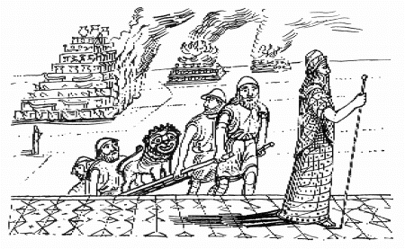
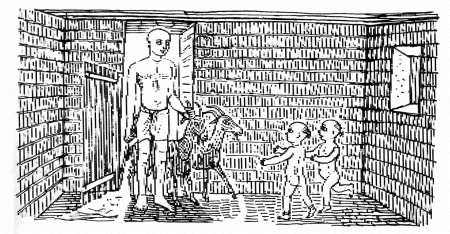

| 歴史（上） | |
| ヘロドトス | |
| (2016) | |
一、原典は主としてヒュード氏のオックスフォード版により、やむをえず、ヒュード氏版に従いえない場合には、そのたびに根拠とした写本および他の版本を注記したが、その数はあまり多くない。ただし、写本はヒュード氏のあげている略記号によって表わした。
一、訳本は入手しうるかぎり参照したが、特に教えられることの多かったのはドイツのベール氏とイギリスのマコゥリー氏のものであった。ほとんど稿成るに及んで、私の敬愛する学友、京都大学の松平千秋教授の労作の他に、坂本健一氏の古い邦訳があることを聞き、これを読んだが、そのなめらかで美しい訳文には、原典を問題としないかぎり、邦文そのものについて少なからず示唆される点があった。
一、注は、訳者が史学専攻者ではないから、できるかぎり史実や地誌に関する、いやしくも史学的論議にわたる事項は避け、もっぱら通読上の便宜を考慮しての範囲にとどめた。注についてはその多くをハウ氏・ウェルズ氏共著の「ヘロドトス注釈」（二巻）（一九三六版）によったが、ローリンソン氏及びベール氏よりも教えられる点が多かった。
一、ギリシア古典の邦訳にあたっては、だれしも当面する困難の一つは固有名詞の取扱いに関することだが、すでに邦語化していると見なしうるものはそれを踏襲することにした。たとえば、ギリシア、ペルシア、エジプトなどをはじめ、カルタゴやフェニキアのごときはもちろん、スパルタのようにラケダイモンといささか意を異にするものも、混乱を避けるために単にスパルタとした。エリュウトレ海、エウクセイノス海、マイエティス海、イステル川のように、必ずしもそれぞれ現在の紅海、黒海、アゾフ海、ダニューブ川と完全に一致するものではないが、便宜上このように訳出しておいた。その他これに準ずるものが少なくない。
一、言語そのものについては、読む困難を考えてギリシア語の長音はすべて短音にしたし、θφχのように到底正確に移しえないものにはそれぞれＴＰＫの音を用いた。つとめて原文に即するようにしたが、煩雑や冗長を避けるため、このような場合はそう多くないが、代名詞を利用したり、能動と受動の転換を行ったりした場合もある。また、いわゆる不変詞は重視して、できるだけ訳出するようにつとめたが、時には省略された箇所もある。
一、古来、各巻頭にミューズの名を冠する習慣になっているが、その必要がないからこれを廃し、ただ読者の便のために原典にはもちろん存在しないが、各巻頭に内容をまとめた簡単な目次をつけることにした。各節ごとに行を改めたのも、読みやすくするためである。
巻一
これはハリカルナッソスのヘロドトスによる研究であって、人間の功業が時のたつうちに忘れ去られるようなこと、また、ギリシア人と異邦人によってそれぞれ示された驚嘆すべき偉業が顧みられなくなるようなこと、特に、彼らが互いにしのぎを削るに至った原因が不明になるようなことがないようにするために発表するものである。
アジアとヨーロッパの争いの発端（一）～（五）
（一）
ペルシアの識者は、フェニキア人がその争いの発頭人であったと言っている。すなわち彼らのいうところによれば、これらの者はいわゆる紅海〔今日の「紅海」ではなく、アジアの東南部および南部の海全体をさしている。したがって、インド洋もペルシア湾も、当時は「紅海」に含まれていた〕とよばれる海から我々の海へやって来て、今でも彼らが住んでいるあの土地に定住した後、間もなく遠洋航海に携わり、そしてエジプトやアッシリアの商品をもたらしては他の諸国へも行ったが、特に、アルゴスへも行ったそうである。アルゴスは当時、今日ヘラスと呼ばれている地域に含まれる国々よりもあらゆる点においてまさっていた。
かくて、フェニキア人はアルゴスへ渡来してその商品を売りさばいたのであるが、到着後五十六日目に、彼らがそれをほとんど全部売却した頃、ほかにも多くの婦人が来たが、とりわけ、ギリシア人も同じ名で呼んでいるのだが、イナコスの娘でその名をイオという王女も海岸へやって来た。これらの婦人は、船のともの所に立って彼女等の好みに最も適した品を買っていたのであるが、その時フェニキア人は互いに励まし合ったかと思うと、彼らに襲いかかったものである。ところで、大部分の婦人は逃げたが、イオは他の婦人達とともに捕えられたのであって、彼らは彼女等を船へ乗せ、エジプトさして出帆して行ってしまった、というのである。
（二）
ギリシア人の所伝は異なるが、ペルシア人の話では、かくしてイオはエジプトへ行き着いたのであって、それが災いの一番の発端であるという。そして、その後（彼らはその名前を指摘できないが）ギリシア人の一派がフェニキアのテュロスへ上陸して、王女エウロパを略奪し去ったということである。これは恐らくクレテ人であったと思う。かくて、それは彼らにとってしっぺい返しであったというわけであるが、その後ギリシア人が二番目の不正の発頭人になったと言っている。
すなわち、彼らは軍船に乗ってコルキスのアイアへ船出してパシス川まで行き、彼らが行った当の目的の仕事を果たし終えた上、更に、そこから王女メディアを略奪し去ったというのである。そして、コルキス王がギリシアへ使者をやって、略奪の賠償と王女の返還を要求したところ、ギリシア人は、アルゴスのイオ略奪に対しては彼らから何の償いも受けなかったのであるから、彼らも彼らに何の償いもしないであろうと答えたそうである。
（三）
そしてその後、次の代になって、プリアモスの子アレクサンドロスはそれを聞いていたので、ギリシア人も償いをしなかったのであるから、償いのおそれはないだろうとすっかり思い込んで、ギリシアの婦人を略奪によってめとろうと望んだということである。かくて彼はヘレネを奪い去ったのであるが、ギリシア人はまず使者を派遣して、ヘレネの返還と略奪の賠償を要求することに決した。ところが、彼らはその申し出に対し、他人からは償いを受けたがるが、おのれ達は償いをしてもくれなければ、返還を要求しても承諾しないのではないかというわけで、メディアの略奪を持ち出したそうである。
（四）
そこまでは問題は単に両者が互いに略奪し合ったに過ぎなかったのであるが、それから以後は、ギリシア人が彼らのヨーロッパ侵略より以前に先ずアジアへ攻め込んだのであるから、いずれにしてもギリシア人が大なる責を負わねばならないと言っている。
ところで、彼らは言う、婦人を略奪するのは悪人の行為であると考えるが、明らかに婦人自身にその意思が無ければ略奪されなかったであろうから、略奪された場合に報復しようと、むきになるのは愚者のなすことであって、賢者は略奪された婦人など少しも意に介さない、と。それで、ペルシア人の語るところによると、彼らアジア人が略奪された婦人を全く無視しているのに、ギリシア人は一スパルタ婦人のために大軍勢を糾合し、もって、アジアに侵入してプリアモスの政権を転覆したのであって、彼らは以後引き続きギリシア人を彼らの仇敵と見なすようになったという。つまり、ペルシア人はアジア及びその地に居住する異邦民族をば自分のものと見なし、ヨーロッパやギリシアはそれとは別個のものであると考えているのである。
（五）
以上が、ペルシア人の主張による事件の経過であって、彼らはトロイの攻略に、彼らがいだくギリシア人に対する敵意の発端を見出している。ところがフェニキア人のイオに関する話は、ペルシア人と異なっている。彼らは、彼女を略奪の手段によってエジプトへ連れ去ったのではなく、彼女はアルゴスにおいてその船の船主と情をかわし、そして、妊娠していることに気づくや両親に恥じ、そのため露顕しないように自ら進んでフェニキア人と一緒に出帆したと語っている。
で、以上がペルシア人とフェニキア人の主張であるが、私はこれらの事件について、こうこうであったとか、しかじかであったとか論じようとする者ではなく、私自身に判明しているギリシア人に対する悪事の発頭人を指摘した上で、話を先へ進め、人間のポリスの大小を問わず、いずれについてももれなく詳述するであろう。というのは、往時強大であったもので弱小になったものも多いし、私の時代に大きかったもので、従前は小さかったものもあるからである。
とにかく、私は人間の幸福というものが、決してひと所に停滞するものでないことを承知しているので、同じように両者に言及する次第である。
リュディア史（六）～（九四）
クロイソスの即位まで（六）～（二五）
（六）
クロイソスは生まれはリュディア人でアリュアッテスの子であり、シュリア〔カッパドキアのこと〕とパプラゴニアとの間を南から北へ流れて、いわゆる黒海へ注ぐハリュス川のこちら側の諸民族の僣主であった。このクロイソスこそ我々の知る異邦人のうちギリシア人を制圧した第一人者であって、そのあるものには貢を納めさせ、また、あるものは自己の盟友にしたのであった。征服されたのはアジアのイオニア人、アイオリス人、ドリス人であり、彼が盟友として味方としたのはスパルタ人である。クロイソスより以前にイオニアを侵したキンメリア人の攻略は、諸ポリスの征服ではなく、略奪のための遠征であったから、クロイソスが君臨するまでは、すべてのギリシア人は自由だったのである。
（七）
が、ヘラクレイダイ一族の掌握していた主権がメルムナダイ家と呼ばれたクロイソスの一門に巡って来た事情は次のごとくであった。ギリシア人がミュルシロスと呼んでいるカンダウレスがサルディスの僣主であったが、彼はヘラクレスの子アルカイオスの子孫であった。すなわち、アルカイオスの子ベロスの孫で、ニノスの子であったアグロンというのが、ヘラクレイダイ家の最初のサルディス王であって、ミュルソスの子カンダウレスがその最後の王であった。そして、アグロン以前の、その地の王はアテュスの子リュドスの子孫であり、この人の名にちなんで、従来メイオン人と呼ばれていたその地の全住民が、リュディア人と呼ばれるに至ったのである。ヘラクレスとイアルダノスの奴隷女を先祖とするヘラクレイダイ家の一族は、神意を受けて彼らから主権をゆだねられてこれを維持し、二十二代の間、すなわち五百五年の間、子は父から主権を受け継いで、ミュルソスの子カンダウレスに至るまで君臨したのであった。
（八）
ところで、このカンダウレスは自分の妻を愛していたが、彼女がどんな婦人よりもはるかにかけはなれた美女であると思い込むほど惚れていた。そして、彼はこのように信じていたので、ダスキュロスの子ギュゲスというのが彼の近侍で一番のお気に入りであったから、カンダウレスはこのギュゲスに相当大事なことも打ち明けていたのであって、特に、妃の容姿も彼にむやみに賞めちぎっていた。その後間もなく、何としても悲惨な目に会う運命を持っていたからであるが、カンダウレスはギュゲスに対して、
「ギュゲス、お前はわしが妃の容姿について話しても納得しないようであるから（人間というものは目ほどには耳を信用しないものだから）、彼女の素膚を見るようにしてみるが良い」と言ったのである。
ギュゲスは大きな叫び声をあげて、
「王よ、私に、私の王の后の素膚を見よとお言いつけになるとは、また何というばかげたことを仰せになるのですか。女というものは衣類を脱げば、それと一緒に、はにかみの心も脱いでしまうものでこざいますよ。昔の人間は我々が学ばねばならないりっぱなことを色々気づいたものですが、その一つに、自分自身のものだけに目を注げというのがあります。私は王妃があらゆる婦人のうちで並びない麗人でいられることを承知しています。どうか、不当なことを要求なさらないようにお願いいたします」といった。
（九）
で、彼はこう言って拒絶したのであるが、何かそのために悪い結果が自分に起こりはしまいかと恐れたからである。ところが、王はこう答えた。
「恐れるな、ギュゲス、お前は、わしがお前をためそうとして、このようなことを言っていると恐れる必要もなければ、また、わしの妃がお前に何か危害をもたらしはしまいかと彼女を恐れる必要もない。わしは、彼女がお前に見られたことを全然気付かないように工夫するつもりであるから。つまり、わしらの寝室へお前を入れて、開いた戸の後へ立たせることにしよう。そして、わしが入った後でわしの妃も寝室へやって来るであろうが、入口の所にいすが一脚置かれており、彼女は衣類を一枚ずつ脱いではその上へ置くであろう、そして、お前は全く気楽にながめることができるであろう、というわけである。そして、彼女がそのいすの所から寝床の方へ歩を移して、お前に背を向けた時には、その機をのがさず、お前はよく注意して見つけられないように、戸口から出て行けばよろしい」
（一〇）
かくて、ギュゲスはのがれるすべもなかったので覚悟を決めた。で、カンダウレスは就寝の時間と思われる時が来るや、ギュゲスを室へ連れ込み、そして彼の妃もそれから間もなくやって来た。そしてギュゲスは彼女が入って来て衣類を置くのを見守っていたが、彼女が寝床の方へ歩を移してうしろ向きになるや、彼はそっと外へ忍び出た。が、彼が出て行くところは王妃の目にとまったのである。しかし、彼女は夫のたくらんだことが読めたけれども、恥ずかしかったので叫びもせず、心中カンダウレスに報復しようと期したので、見抜いたようなそぶりも見せなかった。というのは、リュディア人の間では、ほとんど外のすべての異邦人の間でもそうであるように、男でも素膚を見られることは大きな恥辱と見なされているからである。
（一一）
そこで、彼女はその時はこのようにおくびにも出さないで黙っていたが、夜が明けるやいなや、従者のうち彼女に最も忠実なことがわかっていた者達を手配しておいて、ギュゲスを呼び出した。ギュゲスは、彼女が彼の行なったことを知っているとは夢想もしないで、呼ばれて行った。というのは、従来もいつでも王妃の命があれば、出仕するのを常としていたからである。が、ギュゲスが出て来るや、王妃は言った、
「ギュゲス、今お前は岐路に立っているのであって、私はお前がどちらの道でも進みたいと望む方を選ぶことを許す。つまり、お前はカンダウレスを殺して私とリュディア王国とを手に入れるか、それとも、お前が何でもかでもカンダウレスに盲従して、今後再び見てはならないのものを見るようなことのないように、今直ちにお前自身が死ぬか、いずれかにしなければならない。いや、とにかくあれを企てたあの人か、または、私の素膚をかいま見て、ならわしに反した行ないをしたお前か、どちらかが死なねばならない」
ギュゲスはその言葉にしばしぼう然としていたが、やがて、どうかそのような選択の決定を彼に強要しないようにと嘆願した。かくて、彼は彼女を納得させることができず、それどころか、主君を殺すかそれとも自分が他人に殺されるか、どちらかと言う必然が本当に差し迫っているのを見てとったのである。彼は自分が生き長らえるほうを選んだのであった。で、彼は、
「私に対し、不本意ながら自分の主君を殺せよとしいられる以上、ついでにどうか聞かしていただきたいのですが、どんな方法で我々は王を襲うんでしょうか」と言って尋ねた。これに対し王妃は答えて、
「丁度あの人が私の素膚を見させたあの同じ場所から襲えばよろしい、そして、その睡眠に乗じて撃つことにしよう」と言った。
（一二）
陰謀の手はずが整って夜になるや、（ギュゲスは釈放されていなかったし、彼には全くのがれるすべもなく、自分を殺すかカンダウレスを倒すか、いずれかしなければならなかったので）彼は王妃に従って寝室へ入って行った。そして、彼女は彼に短刀を渡して同じ戸の後ろへ隠れさせた。
やがて、カンダウレスが眠るや忍び出て来て彼を殺し、ギュゲスは王妃も王国も手に入れたのであって、彼のことは同時代の人パロスのアルキロコスもそのイアンボス三脚詩の中に述べている。
（一三）
もっとも、その王国が彼に帰し、そして、彼が強大になったのは、デルポイの神託によったのである。というのは、リュディア人がカンダウレスの悲運に憤慨して武器を執った時、ギュゲスの一味とほかのリュディア人とは、もしも神託が、彼にリュディア王たることを命ずるならば、彼は王と成って君臨し、そうでなければヘラクレイダイ家へ王権をもどす、ということに意見の一致を見たのであって、かくして、神託がそう命じたので、ギュゲスが王と成ったからである。しかしながら、ピュティア〔デルポイのアポロン神殿の巫女で、神託を伝達した〕はヘラクレイダイ家の者がギュゲスの五代目の子に恨みをはらすであろうということも言ったのであるが、この予言には、リュディア人も彼らの歴代の王も、事実それが実現されるまでは少しも考慮を払わなかった。
（一四）
かくしてメルムナダイ家がヘラクレイダイ家を滅ぼして僣主の地位を獲得したのであるが、ギュゲスは僣主と成って、少なからざる奉納物をデルポイへ贈った。否、およそデルポイにある銀の献納品の大部分は彼のものであって、更に銀の外に、彼はたくさんの黄金も献じたが、特に、その数六箇ある金の混酒鉢は奉納品として何よりも特記する価値がある。これらの重量は三十タラントンあって、コリントス人の宝蔵に納められている。もっとも、真実を言うと、その宝蔵はコリントス国民のものではなく、エエティオンの子キプセロスのものである。が、このギュゲスこそ我々の知っている異邦人のうちで、ゴルディアスの子のプリュギア王ミダス以後における、デルポイに奉納品を献じた第一人者である。というのは、実際ミダスも、自分がすわって裁きを与えていたみごとな王座を奉納したのであって、その王座は丁度ギュゲスの混酒鉢と同じ所に納められている。そして、そのギュゲスの献じた金と銀はデルポイ人によって奉納者の名にちなんでギュガダスと呼ばれている。
ところで、このギュゲスも主権を掌握するや、ミレトスやズミュルナへは討伐の軍を進めたし、コロポンの町も攻め落したが、そのほかには、三十八年間の彼の治世を通じ、彼によって行なわれた大事跡というものは全く何一つ見当たらないから、我々はこの人については以上のことだけを指摘するにとどめておこう。
（一五）
そして、ギュゲスに次いで王と成ったギュゲスの子アルデュスのことを述べることにしよう。この人はプリエネを攻め落すとともに、ミレトスを侵略したのであって、キンメリア人が遊牧スキタイ人のために住み慣れた地を追われてアジアへたどり着き、衛城を除いたサルディスを占領したのは、この人がサルディスの僣主であった時である。
（一六）
アルデュスが四十九年間君臨した後、アルデュスの子サデュアッテスが継ぎ、そして彼が十二年間王位にあった後、サデュアッテスの子アリュアッテスがそれを継承した。この人はデイオケスの子孫のキュアクサレスやメディア人と戦ったり、キンメリア人をアジアから追い出したり、コロポン人の植民したズミュルナを放め落したり、グラゾメナイを侵略したりした。ところで、このクラゾメナイからは、本望を達せずに、大打撃を受けた上で引き上げたのであった。しかし、それは別として、彼はその統治中に、次のようなきわめて言いふらすに足る業績を示したのである。
（一七）
彼は父からミレトス人との戦いを受け継いで彼らと戦ったのであるが、どういう風に軍を進めてミレトスを攻撃したかというと、彼は田畑に穀物が実っていた時をねらっては軍を進め、且つ、その進軍は高低様々の横笛や竪琴や笙の音に合わせて行ない、そして、ミレトス領にはいるや、田野にある家屋は、破壊もせず焼きもせず、戸を引き破ることもしないでそっくりそのまま立たせておき、他面、樹木や田畑の穀物は、いつでも根こぎにしては後退したものである。というのは、ミレトス人は海上を押えていたから、彼の陸軍が封鎖してもむだであったからである。また、なぜリュディア人が家屋を破壊しなかったかというと、ミレトス人が土地の耕作や種まきの足場にする事ができ、そして、彼らを働かせておいて、自分は、侵略した時についでに何物かを荒らすことができるようにするためであった。
（一八）
このようなことをしながら彼は十一年間戦ったのであるが、その間、ミレトス人は、自国のリメネイオンで戦った際と、マイアンドロス平野で戦った際と、たび重なる大敗北を喫したのであった。ところで、その十一年のうちの六年間は、アルデュスの子サデュアッテスがまだリュディア人を治めていたのであって、その戦争を企てたのもこの人であったから、その時代にミレトスへ軍勢を進めたのも彼であったが、その六年に続く五年の間は、サデュアッテスの子アリュアッテスが戦ったのであって、彼は先にすでに私が指摘したように、父から遺産として戦争を受け継ぎ、それに懸命になって従事したのである。
一方、イオニア人のうちでは、キオス人だけは別として、ミレトス人を援助してその戦争の負担を軽減してやったものはなかった。もっとも、ともかく以前にミレトス人もエリュトライア人との戦いにおいてキオス人の重荷を助けたことがあるので、このキオス人の援助はその返礼だったわけである。
（一九）
ところが、十二年目に、穀物が軍勢のために焼き払われた時、穀物に火がつくや否や、風にあおられて、一名アッセソスのアテネと呼ばれたアテネの神殿に火が燃え移り、その神殿が焼失する、という一事件が偶然持ち上がったのである。そして、その時すぐには、それに何の考慮も払われなかったが、その後、軍勢がサルディスへ帰ったところ、アリュアッテスが病気になったのである。そして、その病気があまり長引いたので、彼はともかく誰かの忠言によったのか、または、自分でも人をやって神に病気のことを尋ねようと考えたのか、デルポイへ神託を受ける使いを派遣した。ところが、彼らがデルポイへ着いて見ると、ピュティアは彼らがミレトス領のアッセソスで灰にしてしまったアテネの神殿を再建しないうちは、神託を与えないであろうと言った。
（二〇）
ここまでは、私がデルポイ人から聞いて知っていることであるが、ミレトス人は更にそれに付け加えて言っている。キュプセロスの子ペリアンドロスは当時ミレトスの僣主であったトラシュブロスと最も親しい友人だったので、アリュアッテスに与えられた神託を聞き、トラシュブロスに使者を送って、彼が何らかの予備知識をもって目前の事態に応ずる計画を立てることができるようにそれを知らせたと。で、ミレトス人の話によればそんなことがあったわけである。
（二一）
一方、アリュアッテスは以上の報告を聞くや、直ちに使者をミレトスへ送って、トラシュブロス及びミレトス人に、神殿の建設に必要な期間の講和を結びたいと申し込んだ。それで、使者はミレトスへ行ったのであるが、トラシュブロスは前もって話をすっかり聞き込んでいたし、また、アリュアッテスが何を考えているかを知っていたので、こういうことを企てた。彼は自分自身のも、私人のも、市内にあるだけの食物を残らず市場へ集めた上、ミレトス人に対して、彼が合図すれば、皆の者がいっせいに飲んで互いにお祭騒ぎをせよと命じたのである。
（二二）
トラシュブロスがなぜこのようなことをしたり命じたりしたかといえば、サルディスの使者がこうしてたくさんの食物がうずたかく積まれていて、人々が浮かれているのを見て、アリュアッテスにその由を報告するようにさせるためであった。事実、結果もその通りに成った。すなわち、使者は実際にそれを目撃し、そしてトラシュブロスに対してリュディア人の命じたことを伝えた上、サルディスへ出発したのであるが、私の聞き知っているかぎり、それによって初めて講和が実現されたのである。つまり、アリュアッテスはミレトスが非常な食糧難に陥っていて、人民が塗炭の苦しみに困窮しているものと予想していたところが、ミレトスから帰来した使者から、自分の思い込んでいたことと逆の話を聞いたのであって、やがて彼らの間に互いに友邦及び同盟であるという条件で、和解が成立し、そして、アリュアッテスはアテネのために一宇ではなく二宇もアッセソスに社を建て、自分の病気も直ったのである。アリュアッテスによって行われたミレトス人及びトラシュブロスに対する戦争に関することは、以上のようであった。
（二三）
トラシュブロスに神託を知らせたそのペリアンドロスというのは、キュプセロスの子であった。そして、ペリアンドロスはコリントスの僣主であったが、ともかくコリントス人の話によれば（レズボス人も彼らと同じことを言っているが）、メテュムナのアリオンが、いるかに乗ってタイナロンへ連れて行かれて降ろされた、というきわめて不思議な出来事が彼の存命中に起こったそうである。アリオンというのは、当時並びない竪琴の名人であって、我々の知っている人間で初めてディテュランボス詩〔ディオニュソス神の生涯を歌ったもので、その祭礼に合唱された。アリストテレスの指摘するように、ギリシアの悲壮劇は、この宗教歌から発展したものである。ヘロドトスは、アリオンをその創始者と考えているが、アリオンは改良者と考えるべきである〕を作って、それにこの名を付け、且つ、それをコリントスで教授した人である。
（二四）
伝説によれば、長らくペリアンドロスの下に暮していたこのアリオンは、イタリア及びシチリアへ渡航して多額の金を作った上、再びコリントスへ帰って来たいと望んだそうである。それで、彼はタラスをたったのであるが、コリントス人を最も信用していたので、コリントス人の船を雇い入れたところが、これらの者は沖に出るや、アリオンを海へ投げ込んで、その金をせしめようと図った。しかし、彼にそれがわかったので、彼は彼らに金は差し出すが生命だけは許してくれと嘆願したそうである。それでも船乗り達は彼の言う事を聞き入れないで、彼が陸上で埋葬してもらえるように自決するか、それとも、まっすぐ海へ飛び込むか、どちらかにせよと命じたのであって、進退きわまったアリオンは、彼らがこう決めている以上、どうか自分が盛装して船尾に立って歌うことだけは大目に見てくれと嘆願し、そして、歌い終われば自決すると約束した。何といっても、世界中で最もすぐれた歌手の声を聞くことができるだろうという喜びが彼らの心にも生じ、彼らは「とも」から船の中央部の方へ引き返して行った。そしてアリオンは盛装を凝らして竪琴を取り上げ、船尾に突っ立ってかん高いオルティオス調〔この調子の高い旋律は厳粛なものであって、特にアポロンの礼拝に用いられた〕を心行くばかり歌い、その歌が終わるやそっくり盛装のままで海へ投身したという。
そして、彼らの船はコリントスへ急いだが、彼を一匹の《いるか》が背に乗せて、タイナロンへ連れて行って降ろした、というのである。そして、彼は降りるとすぐに、その衣装のままでコリントスへ向かい、そしてたどり着いた上、一部始終の出来事を残らず話したのであるが、ペリアンドロスは信ぜられないので、アリオンをどこへもいかないように監禁するとともに、彼を運んだ船乗り達の帰って来るのを待ち構えていた。で、彼らが姿を見せるや、彼らは呼ばれてアリオンについて何か話せるかと尋問された。そして、それらの者はアリオンがイタリーで達者でいたし、彼らは、きげん良くしている彼をタラスにのこして来た、と言ったのであるが、その時アリオンが投身した時と同じ姿で彼らの目前に出現したのであって、彼らは肝をつぶし、もう詰問されても否定することができなかったそうである。
このように、コリントス人やレズボス人は語り伝えているのであって、また、タイナロンには青銅で出来た《いるか》に乗っている人物のあまり大きくないアリオンの奉納品がある。
（二五）
リュディアのアリュアッテスはミレトス戦を終え、その後五十七年間の支配の後に没したが、病気全快の際、この人はその一門で二番目の奉納者として、大きな、そして溶接された鉄の台が付いた銀の混酒鉢を、デルポイへ献納したのであって、これは鉄の溶接法を発見した世界唯一の人物であったキオスのグラウコスの作であり、デルポイにあるすべての奉納品のうちでも、特に拝観する価値がある。
クロイソスの事跡（二六）～（五五）
（二六）
アリュアッテスが死んで、その子のクロイソスが年三十五で王位を継承したが、ともかく彼はギリシア人では最初にエプェソス人を攻めたものである。そこでエペソス人は彼に攻められるや、アルテミス廟から城壁へ綱を結びつけて、その町をアルテミスへ献じたのであるが、その時攻囲された古都と神殿との距離は七スタディオン〔一スタディオンは約六〇七フィート〕ある。それで、クロイソスが最初に攻撃したのは彼らであるが、その後イオニア人やアイオリス人のポリスも相次いで一つ一つ攻略された。その際彼はそれぞれ異なった抗議を申し込んだのであるが、重大な抗議を見つけ出すことができる場合には、それに重大な罪をかぶせ、また、あるものに対してはほんのちょっとしたことも口実として持ち出したのである。
（二七）
かくしてアジアにあるギリシア人が征服されて納貢するようになるや、次いで彼は船舶を建造して諸島の住民に手をつけようと企てた。
が、造船についての用意がすっかり整った時に、ある人達の話によればプリエネのビアスが、また、他の人々の話によれば、ミュティレネのピッタコスがサルディスへやって来て、クロイソスにギリシアに何か変わったことがないかと尋ねられ、
「王よ、諸島の住民はサルディスへ押し寄せて王を撃つ心算で、一万の騎兵を雇っていますよ」と答え、その言葉で造船が中止されたということである。
そして、クロイソスはその人の言うことが真実だと考えたので、
「おお、願わくば神々よ、島民らに馬をもってリュディア人の子らの所へ来るよう考えさせたまえ」と言ったところ、その人は答えて、
「王よ、島民を乗馬のまま陸上で捕捉しようと熱心に祈っていられるようにお見受けしますが、私もごもっともなことと思います。しかし、島民も王が彼ら目あてに船舶を建造されようとしていることを聞けば、直ちに神かけてリュディア人を海上で捕捉し、王が奴隷にしておられる大陸にいるギリシア人のために報復することを、何より祈るとお考えになりませぬか」と言ったそうである。クロイソスはその理屈が非常に気に入り、彼の言うことがもっともだと考えたので、その人の意見に従って船舶建造を中止したそうである。かくして彼は諸島に住むイオニア人とも友好を結んだのであった。
（二八）
その後、時が経てハリュスの川のこちら側の住民がおおかた全部平定されたが、つまり、クロイソスはキリキア人とギリシア人を除いた外のものは全部征服して自分の配下にしていたのであって、リュディア人、プリュギア人、ミュシア人、マリアンデュニア人、カリュツプス人、パプラゴニア人、テュニア及びビテュニアのトラケ人、カリア人、イオニア人、ドリス人、アイオリス人、パムピュリア人などがそれであるが、
（二九）
これらが征服されて、クロイソスのためにリュディア人の一部に加えられるや、その富裕の最盛時にあったサルディスへ、ギリシアからたまたま当時に生を受けたあらゆる賢人がそれぞれ相次いでやって来たものであるが、特にアテナイ人のソロンもその一人であった。彼はアテナイ人の求めに応じて彼らに法律を作成した上、十年間外遊したのであるが、彼の制定した法律がいずれも廃棄せざるをえないようなことにならないように、視察という名目の下に船出したのである。というのは、アテナイ人は厳粛な誓約によって、十年間はソロンが彼らのために制定した法律を施行することを余儀なくされていたので、勝手に取り消すことはできなかったからである。
（三〇）
かくて、そういう事情や視察のためにソロンは外遊して、エジプトのアマシスの所や、更にサルディスのクロイソスの所を訪れた次第である。そして、彼は到着後クロイソスに客として宮殿で歓待され、それから三十四日目に、クロイソスは臣下に命じてソロンを宝蔵に案内させ、くまなくすべての物を見せたが、それらはいずれも偉大な、かつ豊かな物ばかりであった。彼がすべてを観覧し、また、熟々と眺め終わるや、機を見てクロイソスはこう尋ねた。
「アテナイの客よ、あなたのことについて、あなたの才知や巡遊に関して、どんなにあなたが知識を求めて、視察のために多くの国々を遍歴したかという話が我々のもとへ沢山伝わって来ている。それで、あなたにどんな人間よりも一番幸福な人間を今までに見たことがあるか、と尋ねて見たい気持がわしには起こるのだ」
彼は自分がどんな人間よりも一番幸福な人間だと考えてそう尋ねたのであるが、ソロンは少しもへつらわず正直に言って、
「王よ、それはアテナイ人のテロスです」と答えた。クロイソスは彼の言葉を意外に思って、
「一体あなたはどのような点でテロスを最も幸福な人間だと判断するのか」と突っ込んで尋ねたところ、ソロンは言った。
「テロスには、第一に、繁栄しているポリスと、りっぱな子供達があり、かつ、それらの子供達にも残らず子供が生まれて全部成人するのを見ましたし、第二に、彼は存命中はともかく、我国としましては最も富み栄えていたし、死に際しては最も輝かしい最期を遂げたのです。つまり、アテナイ人がエレウシスで隣国人と戦っていた際、彼は救援におもむき、敵軍を壊走させてこの上ないりっぱな最期を遂げ、そして、アテナイ人は彼が倒れた丁度その場所で彼を公葬して、大なる名誉を与えたのです」
（三一）
ソロンがテロスに関して幸福だったことの話を色々してクロイソスをけしかけるや、彼は確かに少なくとも二番目の地位をかちうるだろうと考えて、だれをテロスに次いで二番目に幸福な人と見るかと尋ねたが、彼は言った。
「クレオビスとビトンです。といいますのは、生まれがアルゴス人であるこれらの人はあり余る富を自由にしていた上に、両人ともに競技の受賞者であったというような体力も持っていただけではなく、特に、次のような話も伝わっているのです。アルゴス人が祝う、あるヘラのお祭の時に、彼らの母親をどうしてもお宮まで車で運ばねばならなかったのですが、彼らの牛が間に合うように原から連れて来られなかったのです。青年達は時間がなくほかに方法もなかったので、自らくびきを肩にして車を引き、母親は車に乗って彼らに運ばれたわけですが、彼らは四十五スタディオン〔一スタディオンは約六〇七フィート〕の距離を運んでお宮へ着いたのでした。しかし、彼らがさようなことをして、集まった人々の注目を引いたあとで、彼らはこの上なくりっぱな死に見舞われたのでした。そして、神は彼らを通じて、人間にとっては生きるよりも死ぬ方がむしろ良いことをはっきり示されたのです。といいますのは、アルゴス人の男は周囲に立って若者達の体力を祝福するし、女の方はうまくこんな息子に恵まれた彼らの母親を祝福したのでありまして、母親はその行ないにも、その名声にも非常に歓喜し、女神の像の前に立って、彼女に大きな名誉をもたらした自分の子のクレオビスとビトンに対し、女神がおよそ人間としてうけうる最も良いものを与えたもうようにと祈願しました。その祈願が済んで、彼らがいけにえも捧げ、ご馳走も食べ終えたところ、その若者達はそれこそ、このお宮に身を横たえ眠り、二度と起き上らないでそのまま最期を遂げたのでした。そしてアルゴス人は、またとないりっぱな人間であったとして、彼らの像を作ってデルポイへ奉納いたしました」
（三二）
かくて、ソロンはそれらの者に第二位の幸福を割り当てたのであるが、クロイソスは怒って、
「アテナイの客人、それじゃ、あなたはわしを平民にも劣っていると見なすほど、わしの幸福を無視するのか」と言った。が、ソロンはこう答えたのである。
「クロイソスよ、あなたは私に人間界のことについてお尋ねですが、私は、神が全く嫉妬深くてよく人事をかき乱すのを承知しているんですよ。人は長いうちには多くの見たくないことを見ることもあれば、多くの会いたくもない目に会うこともありうるんですからね。
といいますのは、私は人間は七十歳まで生きるものと決めているんです。つまり、七十年でありますが、うるう月が起こらないとして二万五千二百日になります。ところで、もし丁度季節が来るべき時にやって来るように、一年置きに一カ月余計に長くなるものとすれば、月の数は、七十年の分を除いたうるう月だけで三十五に成り、それらの月を日に換算すると千五十日に成ります。それらの総計二万六千二百五十日に成る七十年間の日のうち、そのうち一日として外の日と全く同じ事態を提示するのは絶対にないのです。
そういうわけで、クロイソス、《人間万事塞翁が馬》なのですよ。あなたはといえば、私もあなたが大変富んでおられるし、また、数多くの人間の王であられるとは思うんですが、私にお尋ねになったあの点については、あなたがりっぱな最期を遂げられたことを聞くまでは、まだまだお話するわけにはいきませぬ。大金持でも、結構な財産を残らず擁しながらりっぱな往生を遂げるという幸運に恵まれないかぎり、決してその日暮しの人間より幸福だというわけにはいきませんからね。つまり、人間には非常な金持で不幸な者も多いし、適度の財産の所有者で幸福な人も多いのです。それで、非常な金満家であるが不幸だという人が、ただ二つの点でその幸福な人にまさっているに過ぎないのに対し、後者は多くの点で富者であって不幸な人よりすぐれています。前者が欲望を満足させる力や、大災難が襲ってもそれに堪える力においてまさっているのに対し、後者はどんな点で彼よりすぐれているかと申しますと、彼は前者と同様に災難を忍んだり欲望を満たすことはできませぬが、その幸福がそれらを彼に接近させることがありませんし、また、彼は不具者でもなければ病気にもかからず、災いも被らず、良い子持ちであるし、気持の良い様子もしているのであります。そして、その上更にりっぱな往生を遂げるならば、こういう人こそあなたが求めていられる人であって、幸福な人と呼ばれるのに値するのです。
しかし、彼が死ぬまでは、早まってはいけませぬ、決してそれまではまだ幸福な人とは呼ばないで、むしろ幸運な人と呼ばねばなりませぬ。ともかく、人間であるかぎりすべてそれらを何もかも兼ね備えるというわけには参りませぬ。丁度、一番多く物を持っているポリスが一番良いのですが、どんなポリスでも十分に何でもかでも自給自足するものはなく、ある物は持っているがある物は欠けている、というようなものです。そのように、人間もある物は持っていても外の物は欠けているんですから、たった一人で自己充足的なものとてはないんです。そして、それらの物を一番多く最後まで所有し続け、その後に恵まれた往生を遂げる者があれば、それこそ、王よ、私によってその名をかぶせられるにふさわしい人なのです。万事、なにごとでもその最後をよく見て、それがどんな結果に終わるかを注目しなければなりません。
ともかく、神は多くの者に幸福をほんの少しのぞかせておいては、彼らをさかさまにひっくり返すものですからね」
（三三）
ソロンは以上のようにクロイソスに話したのであるが、クロイソスはちっとも喜びもせず、また現在の幸福を無視して万ことその最後を見よと命じた彼を途方もないばか者だと考えたので、彼には全然一顧も与えないで立ち去らせた。
（三四）
しかし、ソロンが去ってから、自分が世界中で一番幸福だと考えたためだと思われるが、クロイソスは神から大きなこらしめを受けたのであって、そのため間もなく、彼が眠っていた時に夢を見て、自分の子供にまさに起ころうとしていた凶ことを打ち明け知らされたのである。
クロイソスには二人の子供があり、その一人の方は、実際おしでつんぼであったから不具者であったが、片方の子は名をアテュスといい、何事によらず同じ年頃の他の誰よりもずっとぬきんでていた。ところで、夢はクロイソスにこのアテュスのことを告げて、彼のこの子供が鉄の穂先で突き刺されて死ぬだろう、ということを知らせたのである。彼は目がさめてひとりで考え込んだところ、夢が恐ろしくなり、まずその子供に妻をめとらせ、それから、その子供はずっとリュディア軍を指揮していたのに、もう、かかる職務で派遣することを止めたし、また、投槍や槍やすべてこういった人々が戦争に使う武器をば、どれかつるされているのが、その子供の頭上に落ちて突き刺すというようなことがないように、男室から運び出して後房へ積み重ねた。
（三五）
彼がその子供の結婚に忙しくしていたところへ、サルデュスへ一人の男が悲惨な身なりをし、きたない手をしてやって来た。彼はプリュギアの生まれで、しかも王の一門であった。この男がクロイソスの館へやって来て、その国の習慣に従い、汚れを清めてもらいたいと求め、そして、クロイソスは彼を清めてやった。ただし、清めはリュディア人とギリシア人とではほぼ同じである。
そして、クロイソスは習わし通りにし終わった時、
「これ、お前は何者であって、またプリュギアのどこから来てわしの家の客になったのか。また、どんな男あるいは女を殺したのか」と言って、彼がどこの何者であるかと尋ねた。これに答えて、彼は、
「王よ、私はミダスの子のゴルディアスの子でありましてアドラストスといいますが、心ならずも私の実の兄弟を殺しましたために、父に勘当され、何もかも取り上げられてやって来た次第です」と言った。
クロイソスは彼に答えてどう言ったかと言うと、
「お前は友人の子にあたり、そして友人の所へ来たことになるから、ここで我々の所に滞在する間は、何一つ不自由するようなことはないだろう。また、その不運は、できるだけ軽く持ち堪えるのが何よりお前の身のためだろう」と言った。
（三六）
かくて、彼はクロイソスの家に住み込んでいたのであるが、丁度その頃ミュシアのオリュンポス山に巨大な怪物のような《いのしし》が現われ、そして、これがその山から飛び出して来てはミュシア人の田畑を荒らしたのであるが、ミュシア人はたびたび出掛けて行ってそれに立ち向かったけれども、少しもそれに危害を加えず、むしろそれから危害をこうむっていたのであった。ついにミュシア人の使いがクロイソスの所へやって来て、
「王様、一匹のとてつもない巨大な《いのしし》が我国に出没して、田畑を荒らしているのですが、我々はそれを捕えたいと懸命になっているのに、我々の力ではできないのです。ですから、どうか我々がそいつを国から退治することができますように、王子とえり抜きの若者と犬とをお差し向け下さいますよう、ひたすらお願い申し上げます」と言った。
で、彼らはこう要求したのであるが、クロイソスは夢の予言を思い起こして彼らにこう言った。
「わしのせがれについてはもう何も言うな。お前達の手伝いには行かせないつもりだからね。新婚でもあり、それがせがれの当面の気づかいことでもあるからね。しかし、えり抜きのリュディア人と、あるだけの猟犬は連れて行けるようにしてやろう。そして、行く連中には、できるだけ骨折ってお前達を助けて、そのけものを国から退治するように命ずることにしよう」
（三七）
彼はそう答え、ミュシア人はそれに満足したのであるが、クロイソスの息子が、ミュシア人の要求したことを聞いて入って来た。そして、クロイソスが息子だけは彼らの援助にやらないと言った時に、その若者は彼に対してこう言った。
「父上、以前はいつでも戦争や狩りに出掛けて行って名をあげることが、我々にとって何よりりっぱな、そして崇高なこととされたんですが、今や父上は、別に私の卑怯な、あるいは無気力なところをご覧になったわけでもないでしょうに、私にその両方ともお禁じになりました。もう私はどんな顔をしてアゴラに出入りせねばならないのでしょうか。私は市民達にどんな人間と思われるでしょうか。彼女はどんな夫と一緒に暮していると思うでしょうか。ですから、どうか私をその狩へ行かせて下さい、さもなければ、こう禁じられる方が私にとってましだということを、どうか筋道の通るように納得させて下さい」
（三八）
クロイソスはどう答えたかと言うのに、
「せがれよ、わしがこうするのは、何もお前に卑怯な、あるいは外に不都合な点を認めたからではなく、わしが眠っていた時に夢の幻がまくらもとに現われて、お前が鉄槍の穂先で殺されることになっているので短命だろうと告げたためなのだ。で、この幻の結果、お前のためにあの結婚も急いだのであるし、また、何とかしてわしの存命中はそっと生かしておくことができまいかと配慮して、この企てにも派遣しないわけである。何しろ片方はつんぼの不具者で、わしはあの子を自分の子と見なさないから、お前がわしのひとり子になっているんだからね」と言った。
（三九）
それに対する若者の応酬はこうであった。
「父上、いずれにせよあなたはともかく、さような夢を見られたのですから、私にご注意になるのは無理のないことですが、あなたがおわかりになっていない、いやその夢でお気づきになっていない点を、私はあなたに申し上げねばなりすせん。あなたは夢のお告げとして、私が鉄の槍で死ぬだろうと言われますが、《いのしし》にどんな手があるんですか、また、《いのしし》はあなたのこわがられるどんな鉄の槍を持っているのでしょうか。つまり、もしそのお告げが、牙か何か外のそれに似た物で死ぬだろうと申し上げたのでしたら、何としてもあなたはなさっておられる通りになさるのが当然ですが、現に槍でと言っているんですからね。ですから、我々は人間と戦うのではありませんから、どうか私をやって下さい」
（四〇）
クロイソスは「せがれ、お前の発表した夢判断はどうやらわしを得心させる。で、お前の言葉を聞き入れて、わしは心を変え、お前に狩へ出掛けることを許してやろう」と答えた。
（四一）
こう言っておいて、クロイソスはプリュギア人のアドラストスを呼び寄せたが、彼が来るとこう言った。
「アドラストス、お前にその非難をするのではないが、お前が面白くない不運に悩まされていた時、わしはお前を清め、家へ迎え入れて、何一つ不自由をさせずにおいている。で、わしがまずお前に親切を尽したのだから、今度はお前がわしに親切を返してくれる義務があり、狩猟に出掛けるわしのせがれの保護者に成って、道中でお前達に悪事を働く盗賊が現われて危害を加えるようなことがないようにしてもらいたいのだ。のみならず、お前も確かに働きによって名を挙げることのできる所へ行って見る必要がある。それこそお前が父から受け継いでいるものでもあり、また、お前はその体力も持っているんだからね」
（四二）
アドラストスは答えて、
「王よ、事情がそうでなかったなら、私はこんな競技には参加しなかったでしょう。こんな逆境にある者は順境にある人々の仲間入りをしてもならないし、それを望んでもならないし、また、色々の理由で私は自分に許さなかったでしょうからね。しかし、現にあなたに催促されるのですし、また、（あなたにはご恩返しをする義務があるからですが）あなたの気に入るようにしなければなりませんので、私は喜んでそういたしましょう。そして、面倒見てくれとご依頼になるご子息のことは、どうかその保護者の力のかぎり尽しますから、あなたの所へ傷つかずお帰りになるのをお待ち下さい」と言った。
（四三）
彼がクロイソスにこう答えて間もなく、彼らはえり抜きの若者達と犬をあてがわれて出立したのであって、オリュンポス山へたどり着くや、彼らはそのけものを捜索し、そして、見付けた上それを円陣で取り囲み、ぐるりから投げ槍を投げたのであった。実に、その時、その客人が、実に殺人の汚れを清められた人であってアドラストス〔「逃げ去ることができない」という意味の言葉で、「免れることのできない運命」を暗示している〕と呼ばれたその人が、槍を投げたところが、《いのしし》に命中しないでクロイソスの子供に当たったのであった。
かくして、彼は槍に打たれて夢の予言を全うしたわけであるが、ある男がその大事件をクロイソスに報告しに走って行き、サルディスに着いてその格闘と息子の運命を知らせたものである。
（四四）
クロイソスは息子の死に全く心をかき乱し、その加害者は自分が殺人の汚れを清めてやった当人であったから、なお一層大声で愚痴をこぼした。そして彼はその不運をいたく悲しみ、客人のためにひどい目に会わされたことをたてにとって清めの神ゼウスに訴え、それから、その同じ神の名を呼んで炉の神や友情の神に訴えたのであるが、炉の神の名を呼んだのは、ともかく彼が客人を家に迎え入れて、はからずも子供の下手人を泊めておいたからであり、また、友情の神を呼んだのは、彼を後見人として一緒に派遣したのに、彼が最も憎むべきかたきであることがわかったからである。
（四五）
やがて間もなく、彼らはなきがらを運んで帰って来たのであって、下手人はその後ろに随従していた。が、彼はなきがらの前に立ち、両手を差し出してクロイソスに身を投げ出し、今までの身の不運を話し、また、その不運の上に、自分は殺人の汚れを清めてもらった人を破滅させたのであって、自分はもう生きる値打ちのない人間であると言って、どうか自分をそのなきがらの上へ打ち殺して下さいと迫った。
クロイソスはこれを聞いて、自分自身の災難を非常に悲しんではいたが、アドラストスに同情を寄せて、
「客人、お前は自分自身に死刑の宜告を下しているのであるから、お前からは充分な償いをしてもらっているわけだ。しかも、お前が知らずにしでかしたかぎりは別として、わしとして見れば何もお前だけがこの災いの張本人なのではなく、それはむしろ、わしに既にずっと前にやがて起ころうとしていることを予告したある神なのだ」と彼に言った。
そこで、クロイソスは滞りなく自分の子供を埋葬したが、ミダスの子のゴルディアスの子アドラストスは、実に肉親の兄弟を殺し、また、殺人の汚れを清めてくれた人を殺したことになり、彼は人々が立ち去って墓の回りが静かになるや、およそ知っているどんな人間よりも自分が最も不運であると自認し、その墓塚の上で自害したのであった。
（四六）
クロイソスは子供を失ったので、二年間は非常な哀悼に閉ざされて何もしないでいたが、その後キュアクサレスの子アステュアゲスの王座がカンビュセスの子キュロスのために打ち破られて、ペルシア人の国力が増大したことが、クロイソスに哀悼をやめさせ、そして、ペルシア人が強大に成らないうちに、何とかしてできれば彼らの国力が増大するのを阻止したいという考えにふけらせた。
かくて、かかる意図の下に、間もなく彼はギリシアとリビア〔ヘロドトスは、エシプトをアジアの一部と考えており、その西部のアフリカを総祢してリビアといっている〕と両方の神託をためして見ようとして、色々の人間を各方面へそれぞれ派遣し、ある者はデルポイへ、ある者はポキスのアバイへ、ある者はドドナへ行ったものである。また、ある者はアンピアラオスやトロポニオスの社へ、ある者はミレトスのブランキダイ家へ派遣された。
で、以上はクロイソスが神託使を派遣したギリシア側の神託所であるが、彼は別な人間を神託使としてリビアのアンモン神のもとへも送った。そして、彼はまず神託がはたしてどういうことを知っているかをためすために方々へ使者を派したのであって、それで、もし、それらがうそをつかないことがわかれば、もう一度人を差し向けて、ペルシア人への遠征を試みるべきかどうかを、それらに尋ねようとしためである。
（四七）
そして、彼は神託を試みにやったリュディア人には、次のような指令を与えた。すなわち、彼らはサルディスをたつその日からずっとその後日を数えて百日目に、神託に伺いを立て、丁度その時リュディア王のアリュアッテスの子クロイソスが何をしているかと尋ね、そして、神託がそれぞれ何と告げようと、それを書き留めて彼の所へ持ち帰れというのであった。それで、外の神託が何と告げたか、これは何人も伝えていないが、デルポイでは、リュディア人が神に託宣を請うて命ぜられたことを尋ねようとして聖城に足を踏み入れるや否や、ピュティアは六脚韻文でこう告げた。
われは知る、真砂の数もわたの広さも、
聾唖の意中も解せざるはなく、
語らざるものも吾れには聴ゆ、
銅釜と山羊の肉と入り混り、
煮らるる硬き甲羅の亀の匂い、
吾が心に入り来りぬ。
そが下には青銅敷かれ、
そが上にも青銅を載けり。
（四八）
リュディア人はピュティアが、このように神託を告げるや、書き留めてサルディスをさして引き上げた。そして、諸方へ派遣された外の者達も神託をもたらして帰着したので、クロイソスはその書かれたものを一つ一つ繰り広げて目を通した。すると、どれもこれも彼の気に入ったのが無かったが、デルポイからもたらされたものを聞くや、それこそ自分が行なったことを見破ったというので、ただちにその真価を認めてそれをあがめ、デルポイのものが唯一の神託であると見なした。すなわち、彼は諸方の神託所へ神託使を派遣した上、所定の日に留意していてどう工夫したかといえば、どうしても探り出すことも思いつくこともできないようなことを考案し、自分で亀と子羊を切り刻んで銅釜に入れて一緒に煮込み、その上に銅のふたをしておいたのである。
（四九）
かくて、デルポイからもたらされた神託がクロイソスに告げたのはそのことであった。アンピアラオスの神託の応答については、その社で所定の手続きをふんだリュディア人にそれがどんな神託を与えたか、ともかくこれも又彼に偽りのない神託を得たと思わせたということ以外には、（実際これについては何も伝わっていないから）私はお話しできない。
（五〇）
次いで、彼は大変ないけにえをもってデルポイの神のきげんを取ったのである。というのは、その神を何とかより一層彼らに好意を持つようにさせたいと望んで、彼はあらゆる種類のいけにえに適する動物を三千匹もささげ、金や銀をかぶせた寝いすや、黄金の杯や、紫の衣類やじゅばんなどを積み上げて、それらを大きな薪として燃やし、また、あらゆるリュディア人にも一人残らず、なにか各自の所有物をささげるように命じた。
 犠牲式がすっかり終わると、彼は膨大な金を鋳つぶし、それを伸ばして、高さ六パラステ〔「パラステ」とは、手の指を四本並べた幅で、約三インチ〕、幅三パラステ、高さ一パラステにした金れんがを造ったのであるが、その数百七十個もあった。そしてそのうち四個は精錬された金でできていて、各々二タラントン半の重量があり、他は銀との合金でできていて、重さは二タラントンあった。また、彼は十タラントンの重さの純金の獅子の像も造らせた。
この獅子はデルポイの神殿が焼失した時、金のれんがから落ちて（それらの上にすえつけられていたから）、今では、それら三タラントン半が溶け去ってしまったために、六タラントン半の重さになって、コリントス人の宝蔵の中に納まっている。
（五一）
クロイソスはそれらを仕上げてデルポイへ送ったが、なおその外に次のようなものも一緒に贈った。その一つは金と銀の二個の大きな大混酒鉢であって、そのうち金の鉢は社へはいって行くと右側の方に、銀の鉢は左側に置かれていたものであるが、これらも神殿焼失の際に移されて、金の方は八タラントン半プラス十二ムナ〔「一ムナ」は、一タラントンの六十分の一〕の重さがあってクラゾメナイ人の宝蔵に納まっており、銀の方は前庭の隅に置かれており、テオパニア〔太陽神の再現を祝う春祭〕の時にデルポイ人が混酒鉢に使うからわかっているのであるが、容積は六百アンポレゥス〔「一アンポレゥス」は、約九ガロン〕ある。デルポイ人はそれがサモス人のテオドロスの作であると言っているが、私もそれが非凡なもののように思うので、そうなのだと考える。
更に、クロイソスはコリントス人の宝蔵内に立っている四つの銀製の酒甕を贈り、また、金と銀の二つの浄水容器を献納したが、その金の方には「スパルタ人献之」との銘が刻まれており、スパルタ人は自分達の献納品だと主張しているが、彼らの主張は正しくない。なぜなら、これもクロイソスの奉納品であって、あるデルポイ人がスパルタ人のきげんを取ろうと欲してその銘を刻んだのであり、私はその人の名を知っているが述べないでおこう。もっとも、手から水が流れ出ているあの少年の像は、スパルタ人の奉納品である。が、ともかく以上の浄水容器は、いずれもそうではない。クロイソスはその外以上の物と一緒に多くの無銘の奉納品や、銀の丸い水盤や、また、デルポイ人によればクロイソスのパン焼き女の似像だと言われる高さ三ペキュス〔「一ペキュス」とは、ひじの先から小指の先までの長さで、約十八インチ〕の金の女の像も贈ったし、更にその外、クロイソスは自分の妻の首飾りや腰帯も献納した。
（五二）
以上がデルポイへ贈られたものであるが、アンピアラオス〔アルゴスの予言者・英雄。生きて帰れぬことを知っていながら、妻の勧めに応じて、あの「テバイ攻撃の七将」の一人となり、テバイで地中にのまれて、はかない最後を遂げた〕へは、彼はその人の勇気と不運とを聞き知っていたので、全部すっかり金で造られた楯と、柄も穂先と同様に金でできた、全部純粋な金でできた槍を奉納した。これらは両方ともまだ私の時代にテバイにあったのであって、テバイ人のイズメニア・アポロンを祭った神殿内に横たわっていた。
（五三）
クロイソスは以上の贈物をそれらの神殿へ携えて行くことになったリュディア人に向かって、クロイソスがペルシア人攻撃の軍を進めるべきか、また、いずれかの国の軍勢を同盟軍として伴うべきか、神託に伺って来るように命じたのであって、そのリュディア人は派遣された所へ着いて本納品を献じた上、神託に伺いを立てて言った、
「リュディア人とその他諸民族の王なるクロイソス、この地の神託をもって世界唯一の神託なりと信じ、その啓示にふさわしき贈り物をなんじにささげたる次第なり。そしてこのたびは彼がペルシア人に攻撃の軍を進むべきか、また、いずれかの国の軍勢を同盟軍として伴うべきか、神意にお尋ね申す」と。
彼らがこう尋ねたところ、両方の神託の判断は結局一致し、もし彼がペルシア人攻撃の軍を進めるならば、彼は一大帝国を減ぼすであろう、という予言をクロイソスに与えた。また、彼にギリシア人のうち最も強大なものを捜し出し友邦として仲間にせよと忠告した。
（五四）
クロイソスはそのもたらされた神託の返答を聞くや、その託宣をこの上なく喜び、キュロスの王国を減ぼせるものとすっかり信じ込んで、再びピュトへ人をやり、デルポイ人達に、彼らの人数を聞いていたので、一人につき二スタテルの金を贈った。デルポイ人はその返礼に、クロイソス及びリュディア人に対し、神託請願の優先権、免税権、祭において一等席を占める特権、欲する者があればいつでもデルポイに帰化できる権利などを賦与した。
（五五）
クロイソスはデルポイ人に贈物をした上で、三たび神託を伺った。ともかく、その神託にまちがいの無いことを確かめて以来、十分それを利用したわけである。そして、神託を請うて彼の王国が長続きするだろうかと尋ねたのであるが、ピュティアは彼にこんな神託を与えた。
然れど、一朝騾馬がメディア王と成る時、
然る時には、脚やわきリュディア人よ、
礫多きヘルモス河に沿いて逃がるべし、
停まることも、卑怯を辱じてもならず。
クロイソスとギリシア―ギリシアの種族論―ペイシストラトス治下のアテナイ―リュクルゴスとスパルタ（五六）～（七〇）
（五六）
この予言がもたらされるや、クロイソスは騾馬が人間の代りにメディア王と成ることは絶対になく、したがって、彼自身も彼の後継者も決して主権を失うようなことにはならないであろうと考えて、実にやたらに喜んだものである。それから、彼はギリシア人のうちいずれが最も強大であって、友軍として味方に引き入れるべきかを慎重に調査し、そして、その調査によって、ドリス族に属するスパルタ人とイオニア族に属するアテナイ人が卓越していることを発見した。実際、後者は昔のペラズギア民族であり、前者はヘラス民族であって、これらが最も卓越していたからである。そして、一方がまだどこへも移住したことがないのに対し、他方ははなはだ移動性に富んでいた。すなわち、これはデュカリオン王の時代にはプティオティスという地に住んていたが、ヘレンの子ドロスの時代にはオッサ山とオリュンポス山のふもとのヒスティアイオティスと呼ばれる地方に住んでいたし、また、カドメイア人のためにヒスティアイオティスから追われるや、ピンドスに居を定めて「長身族」と呼ばれていたが、またしてもそこからドリュオピスへ移動し、更に、ドリュオピスからかくしてペロポンネソスへやって来てドリス人と呼ばれるようになったのである。
（五七）
ペラズギア人については、彼らがいかなる言語を話していたか、私は確実なことは言えない。しかし、もしペラズギア人のうちで、かつて、今日のいわゆるドリス人の隣人であった（当時今日のいわゆるテッサリオティスの地に住んでいた）、そしてテュルセニア人の上のクレストン市に住んでいる者や、また、アテナイ人と一緒に暮していたペラズギア人のうちヘレスポントにあるプラキアやスキュラケに居を定めた者や、その他すべて元来はペラズギア人のポリスであってその名を変えたポリスに定住した者、などのうち今日なお残存している者によって判断して語るべきだとするならば、もしこれらの者によって論断すべきものとすれば、ペラズギア人は異邦の言葉を話していたのである。
したがって、もしどのペラズギア族もそうであったとすれは、アッティカ民族はペラズギア族であるから、転じてヘラス族に成ると同時に、その言葉も忘れてしまって別な言葉を習得したのである。というのは、実際クレストン人は現に彼らの周囲のいかなる居住民とも異なった言語を話し、また、プラキア人にしてもそうであって、しかも、両者は互いに同じ言語を持っているのであって、それらの土地へ移住した際に彼らが持って行った言葉の特質を変えず保存している、ということを立証している。
（五八）
一方、ヘラス族は、私には全く明らかにそうであると思われるのであるが、その出現以来ずっと同じ言語を使用し続けている。もちろん、それはペラズギア族から分かれて貧弱なものであったが、最初は小さなものとして出発しながら、特にペラズギア族やその他多くの異邦民族もそれに加わった結果、大きくなって諸民族の合体したものに成ったのである。しかも、ともかく私の意見としては、ペラズギア族も、異邦民として存在したかぎり、どこにおいても大いに膨脹したことはなかったようである。
（五九）
ところで、クロイソスはこれらの民族のうちアッティカ族が、当時アテナイの僣主であったヒッポクラテスの子ペイシストラトスのために圧制を受け、かつ、分裂させられていたことを聞き知っていた。ヒッポクラテスは平民であったが、オリュンピアの競技を見物していたら、彼にある大変不思議なことが起こったのである。すなわち彼がいけにえを奉納したところ、肉片と水が一杯はいってそこに立っていた釜が、火も無いのに煮えてあふれ出したのである。そして、そこに居合わせてその奇跡を目撃したスパルタ人のキロンは、ヒッポクラテスに対して、まず何よりも子供を産む妻を家へ迎えてはいけない、しかし、もしも持ち合わせているならば、第二の手段として、その妻を離縁しなければならず、更に、彼に一人でも子供があるようならば、これを勘当せよと忠告した。で、キロンはそう忠告したのであったが、ヒッポクラテスは彼の忠言に従うことを聞き入れなかったそうである。
やがて彼に生まれたのがそのペイシストラトスであって、この人はアテナイ人が海岸党と平原党の二派に別れ、そして、アルクメオンの子メガクレスが前者の頭株となり、アリストライデスの子リュクルゴスが平原党のそれになって、党派争いをやっているのに乗じ、僣主の地位をねらって第三党を糾合したのである。そして、党員を糾合して山地党の指導者に成りすまし、次のような計略を企てた。
彼は我と我が身を、それから騾馬をも傷つけておいて、あたかもいなかへ車を走らせつつあった彼を殺そうと欲した（と触れ込んだのであるが）敵の手をのがれて来たかのような風をして、車を市広場へ乗り入れ、そして、自分は以前メガラ人の戦いに指揮官の地位にあって、ニサイアを占領したり、その他偉大な働きを現わして名を挙げたのであるから、護衛兵を与えてもらいたいと民衆に要求した。
アテナイの民衆はすっかりだまされて、彼に市民のうちから護衛になる者を選んで与えたのであるが、これらの者は棍棒を持って彼に従行したのであるから、ペイシストラトスの護衛兵に成ったというよりは、むしろ棍棒兵に成ったわけである。そして、これらの者がペイシストラトスと一緒にむほんを起こして衛城を占領したのであって、かくて、ペイシストラトスは以来アテナイの主権者に成った次第である。彼は現存する諸官職を混乱させもせず、また、法律も変えないで、ポリスを既存の制度に基づいて管理し、りっぱに、かつ巧みに治めた。
（六〇）
しかし、その後間もなく、メガクレス党とリュクルゴス党とが心を合わせて彼を追い出した。かくして、ペイシストラトスはアテナイの支配権を握っておきながら、まだその握っていた主権があまり固く根を下ろさないうちに、それを喪失したのであったが、ペイシストラトスを追い出した者達は、すぐまたもや互いに反目するようになったのであって、メガクレスは党派争いにほんろうされ、ペイシストラトスに使いをやって、僣主に成るという条件で、彼の娘をめとる気があるかと尋ねた。そしてペイシストラトスがその提案を受け入れ、その条件で約定を結んだので、そこで、彼らは彼の帰国のために、（少なくともずっと昔からヘラス族は異邦民族よりもりこうな、そして、馬鹿正直な愚かさにはずっと縁遠い民族でもあるとして、異邦人と区別されていたことから見て）もし実際その時代になってもまだヘラス族のうちでも、りこうさにおいて一番だといわれるアテナイ人の間で、そのようなことが企てられたとすれば、私の見るかぎり、何より最もばかげたことをたくらんだものである。
パイアニア区にピュアと名づける、その他の点では美人であったが、背の高さは四ペキュスに足らないこと三ダクテュロス〔「一ダクテュロス」は指の幅〕という一人の婦人がいたが、この婦人に彼らは武具一式をまとわせて戦車に乗らせ、どういうかっこうをすれば最もりっぱな様子に見えるかを手本を見せてさしずした上、先触れをやったあとから町へ乗り込んだ。触れ人達は町へ着いて、命ぜられた通りに、
「アテナイ人よ、アテネ神おんみずから人間界一番の名誉をさずけたもうて、親しく衛城へ連れもどりたもうペイシストラトスを心から歓迎せよ」と言って触れ歩いた。で、彼らはこう言って触れ回ったのであるが、たちまち田舎の諸区にも、アテネがペイシストラトスを伴い帰りつつあるとのうわさが伝わったし、また、町の人間はその婦人が女神そのものだと信じて、人間である彼女を礼拝し、そして、ペイシストラトスを迎え入れたのである。
（六一）
ペイシストラトスはこのような方法で僣主の地位を取りもどしたのであって、メガクレスとの間に行われた先の約束に基づき、メガクレスの娘をめとった。ところが、彼には青年に成っていた子供達があったし、また、アルクメオンの子孫はのろわれているといわれてもいたために、彼はその新婚の妻によって子供をもうけることを欲しなかったので、彼女と正常ならざる交わりをしていた。それで、最初のうちは女はそれを秘していたが、後に、尋問されてかどうかはわからないが、彼女はそれを自分の母に話し、母親は夫に話したものである。彼はペイシストラトスのために侮辱を受けたとして非常に怒り、立腹まぎれに彼は直ちに敵の党派と手を握ったのである。
ペイシストラトスは自分をねらってどういうことが行なわれているかを知り、すっかりその土地から足を洗って、エレトリアへやって来て子供達といっしょに相談したのであるが、主権を奪還すべしというヒッピアスの意見が勝ったので、かくて彼らはおよそ彼らに何らかの恩義をこうむった諸ポリスから寄進を集めることにした。そして、多くのポリスが多大の金を提供したが、テバイ人が金銭の寄贈において他よりぬきんでていた。かいつまんで言えば、やがて時がたって、彼らの帰国の用意は万事整った。つまり傭兵としてペロポンネソスから来たアルゴス人もいたし、リュグダミスと名づけるナクソス人で、自ら進んで彼らの所へやって来て、金も人間も調達して自発的に非常な好意を示した人もいた、というわけである。
（六二）
そして、彼らは十年を経てエレトリアを出立して帰国したのであるが、アッティカで彼らが最初に占領したのはマラトンであった。彼らがこの地に陣取っている間に、市からの与党もやって来たし、また、地方の区から別の連中も、自由政治よりも独裁政治を歓迎して集まって来た。かくして彼らが集結していたのに対し、市内のアテナイ人はペイシストラトスが軍資金を集めていた間も、また、その後彼がマラトンを占領した時も、全然気にかけなかったのであるが、彼がマラトンから市へ向かって進軍しつつあると聞くや、初めて援軍を出して彼に歯向かったのである。
これらの者も全軍をあげて帰国者軍目ざして進軍したが、ペイシストラトス軍もマラトンを出発して市へ向かって進撃したのであって、パレニスのアテネ廟の所へたどり着き、合戦しようとして彼らに対して陣取った。そこへ神意を受けて、占いに通じたアカルナニア人アンピリュトスがペイシストラトスの所へやって来て、彼に近寄り、予言して六脚韻文でこんなことを言った。
投網はすでに打たれ、網は拡げられぬ、
小暗き月光の中を鮪は突入せん。
（六三）
で、彼は霊感を受けてかく占ったのであるが、ペイシストラトスはその神託の意のある所をのみ込み、その占いを受納したと言って軍勢を進撃させた。丁度その時アテナイ市民軍は昼食に取り掛っていたが、昼食が済むと、彼らの中には、さいころをもてあそんだり、居眠りしたりする者もあったのであって、ペイシストラトス軍はアテナイ人を襲撃して追いちらした。そして、彼らが逃げ去るや、次いでペイシストラトスはアテナイ人が二度と団結しないように分散させるために、きわめて巧妙な計略をたくらんだ。彼は子供等を馬に乗せて先に走らせ、そして彼らはその逃走するアテナイ人に追い着き、ペイシストラトスの命じた通りに話し、元気を出してめいめい自分の家へ帰れと勧告した。
（六四）
アテナイ人はそれを聞き入れ、かくしてペイシストラトスは三たびアテナイを手に入れ、そして、数多くの護衛兵や、その土地から、あるいはストリュモン川〔この川の流域は金銀の鉱山で有名であった〕から入って来る収入や、またすぐに逃げ去らずにアテナイに踏みとどまっていた市民の息子等を人質に取ってナクソス島（この島もペイシストラトスは戦争によって征服したのであって、これをリゥグダミスに委任したというわけで）へ配置したりすることによって、その主権の基礎を固めた。
その上、更に彼は神託に従ってデロス島をはらい清めたが、どういう風に清めたかといえば、神殿から見渡せる範囲内にある全区域の土地から、うずまっていた死体を掘り出して、これをデロスの別な地域へ移したのである。
かくてペイシストラトスはアテナイの僣主として君臨したのであるが、アテナイ人の中には死んでしまった者もあったが、また、彼らの中にはアルクメオニダイ一族と共に祖国を後に亡命した者もあった。
（六五）
それで、クロイソスが当時のアテナイの情勢として聞いたのは、以上のようなことであったが、他面、スパルタ人については、彼らが一大難局を切り抜けて、戦争ではすでにテゲア人をしのいでいると聞かされた。というのは、レオンとヘゲシクレスがスパルタ王であった頃、スパルタ人は外の戦争にはいずれも成功しながら、ただただテゲア人との戦いには敗北を喫していたからである。その上、従来スパルタは国内的にもそうであったが、外国人とは何の交際もしなかったので、対外的にも、ほとんどあらゆるギリシア人のうちで最悪の政治が行われていた国であった。どうして彼らがりっぱな政治へ変わったかといえば、次のような事情によっている。
リュクルゴスはスパルタ人の間で名声の高い人であったが、彼がデルポイの神託所へやって来て聖廟にはいったところ、たちまちピュティアはこう言った。
汝来れるか、リュクルゴスよ、
吾が豊かなる社へ、
ゼウスもオリュンポスに棲むよろず神も、
汝を愛で給う。
吾れが占い汝を神とすべきか人とすべきか迷うなり、
さあれ、吾れは神と見做さん、
おおリュクルゴスよ。
確かにある人達はそれに付け加えて、ピュティアが今日スパルタ人の間に確立されているような政治組織をも彼に語ったと言っているが、スパルタ人自身の話では、リュクルゴスは自分の兄弟の子でスパルタ王であったレオボテスの摂政と成ってクレテからそれを採り入れたと言っている。
すなわち、彼は摂政に成るや否や、すべての法制を変えて、これが犯されないように注意し、また、その後、エノモティア〔陸軍の小部隊をさす。つぎの「トリアカス」は、「三十人組」の意であるが、ここでは何をさすか不明〕やトリアカスや公食団制のような軍事に関することや、その他エポロイ〔王の監督権を持った民選の五長官のことで、王の地位が低下するにつれて実権を掌握した〕や長老会を設置したのもリュクルゴスであった。
（六六）
かかる改革によって、彼らはりっぱな法制を持つようになったのであって、リュクルゴスの死後、彼らは神社を献じて大いにあがめている。また、彼らは肥えた土地に居住する上、人口も少なくなかったので、たちまち興隆して繁栄したのである。そこで、実際彼らはもはや平静を保っていることに満足できなくなって、アルカディア人よりも強いと自負し、全アルカディア国の攻略について、デルポイに神託を伺ったのであるが、ピュティアが彼らに与えた託宣はこうであった。
汝吾れにアルカディアを求むるか、
汝吾れに大いなるものを求む、吾れ汝に与えじ、
アルカディアには樫の実食らう男の子あまた有り、
彼らは汝を阻むべし、
然れど、吾れ汝に吝むには非ず、
吾れ汝にテゲアを与うべければ、
其処にて汝足踏み鳴らし舞踏せよ、
また、美わしき野も与うべければ、
綱もて測り分つべし。
スパタル人はそのもたらされた神託を聞くや、アルカディアの外の部分には手を触れないで、あてにならない神託を信じ、ともかくテゲア人を奴隷にしようと思って、枷を携えてテゲア人目ざして進軍した。ところが、彼らは合戦に敗れ、彼らのうち捕虜になった者は、皆彼ら自身の携えた枷を着け、また綱をもってテゲア人の野を測量し、分割して耕作したのである。彼らが縛りつけられたこれらの枷は、まだ私の時代になっても、アレア・アテネの神殿に掛けられて保存されていた。
（六七）
かくて、従来の戦争では、彼らはずっと常にテゲア人と戦っては負けていたのであるが、クロイソス時代の頃で、アナクサンドリデスやアリストンがスパルタ王であった頃には、今度はスパルタ人が戦争の勝者と成り、彼らは次のようにして勝者と成ったのである。常に戦争でテゲア人のために敗れていたので、彼らはデルポイへ神託使をつかわして、どの神の機嫌を和らげればテゲア人との戦争に勝てるだろうかと尋ねたところ、ピュティアは彼らにアガメムノンの子オレステスの遺骨を持ち帰れという神託を与えた。が、彼らはオレステスの墓を見つけ出すことができなかったので、再び人をつかわしてオレステスの横たわっている場所を重ねて尋ねた。ピュティアはそれを尋ねた神託使にこう告げた。
アルカディアの平けき地にテゲアと云う有り、
其処に免れぬ定めに依りて吹くは両つの風、
一撃打たれれば反撃これに応え、
禍は禍に積み重ねらる、
其処はアガメムノンがあ子、
命の親の大地に包まれぬ、
そを汝運び帰らばテゲアの主と成らん。
スパルタ人はその神託も聞いたので、くまなく捜し回ったが、相変らず発見するに至らなかった。それでも、結局、「善行者」と呼ばれるスパルタ人の一人のリカスがそれを見付けたのであった。「善行者」というのは、毎年五人ずつ市民のうちで騎士を辞する一番の年長者のことである。彼らは騎士をやめるその年に、じっとしていないでスパルタ国家からめいめい諸方面へ派遣される任務を帯びているのである。
（六八）
で、リカスはかかる人物の一人として、テゲアで幸運に巡り合わせたのでもあるが、才知も使って、それを見付けたのであった。すなわち、当時テゲア人との交際が行なわれていたので、彼はその国のある鍛冶屋へ、はいって行って、鉄が打ち伸ばされるのを見物し、そして、行なわれている作業を見て驚嘆していたのであるが、鍛冶屋は彼が大変驚いているのを認め、仕事の手を休めて、
「スパルタの異人さん、今お前さんはこの鉄の細工をそんなに驚いていなさるんだから、もし私の見た通りの物を見なすったら、きっとびっくりなすったことだろう。というのは、私がこの中庭にひとつ井戸を造りたいと思って掘っていたら、偶然七ペキュスもある棺にぶっつかったんだよ。が、現在の人間より大きな人間がいたなんて信ぜられなかったので、それを開いたところが、その死体が棺と同じ長さであるのを見たんだ。私はその長さを測った上、元通りに土をかぶせておいた」と言った。
で、その男は見たままを彼に話したのであるが、後者はその話を熟考して、かの神託から推して、次のように推理してそれがオレステスであると断定した。彼はその鍛冶屋の二つのふいごを見て、それがあの風であり、また、鉄の台とつちがあの一撃とそれにこたえる反撃であるし、鉄は人間に災いをもたらすために発見されたものだというわけで、その打ち伸ばされる鉄は打ち重ねられる災いであることを探り当てたのである。
彼はかく推論して、スパルタへ帰って来てそのことを残らずスパルタ人に話した。そして、彼らは仮りにある口実をでっち上げて彼を糾弾して追放したのであって、彼はテゲアへやって来て身の不幸をその鍛冶屋に話し、彼からその庭を賃借りしようとしたが、彼は貸そうとしなかった。が、そのうちに彼を納得させた上、そこへ住み込み、そして、墓を掘り返し、遺骨を拾い集め、それを携えてスパルタへ帰った。実にその時以来両国相互の力だめしをすれば、いつでもスパルタ人の方が戦争に勝ったのであって、すでにペロポンネソスの大半も彼らに征服されてしまっていた。
（六九）
かくて、クロイソスはすべてそういう事情を聞いて、贈物を持たせ、必要な口上も命令して、同盟を求める使者をスパルタへ派遣したのであって、彼らは行って話した。
「我々を派遣したのは、リュディア及びその他諸民族の王なるクロイソスですが、彼は、『スパルタ人よ、神は託宣によってギリシア人を友邦として味方にせよと命じたまいたれば、余は卿らがギリシアの雄たることを承知するによって、神託に従い、喜んで計略もごまかしもせず卿らの友とも成り、同盟とも成らんことを卿らに申し出る次第である』と言っているのです」と。
このようにしてクロイソスは使者を通じて提言したのであるが、スパルタ人は、自分達もクロイソスが受けた神託を聞いていたので、リュディア人の来訪を喜んで友情と同盟の契りを結んだ。実は、ずっと以前に彼らがクロイソスから受けた好意が彼らにそうさせたからでもある。というのは、スパルタ人が今日スパルタのトルナックス山に建てられているアポロンのあの像に使いたいと思って、サルディスへ人をやって金を買おうとしたのであるが、クロイソスは、買おうとしていた彼らにそれを贈物として進呈したのである。
（七〇）
それでスパルタ人はこんな理由にもよったのであるが、また、すべてのギリシア人のうちから特に彼らを選んで盟友にしたというので、同盟を受諾した次第である。彼らは彼の要求にいつでも応じようとしていたばかりではなく、他面、外側の縁のまわりには像を一面に彫った容積三百アンポレウス〔「一アンポレウス」は、約九ガロン〕の銅の混酒鉢を作らせて、それを返礼の贈物としてクロイソスに進上したいと思って運んでいった。この混酒鉢はサルディスへ到着しなかったが、それには以下のような二つの原因が伝えられている。
スパルタ人の話によると、それがサルディスへ運搬されてサモスの辺へ来た時、それを聞き知っていたサモス人が軍船で漕ぎ寄せて奪い去ったというし、また、サモス人自身の語るところによれば、その混酒鉢を運搬したスパルタ人があまりゆっくりしていたので、サルディスもクロイソスも敵の掌中に陥ったと聞き、それをサモスで売却したのであって、幾人かの私人がそれを買い入れてヘラの廟へ献納したというのである。もっとも、恐らくその売り払った者達は、このようなことをしておきながら、スパルタへ帰ってサモス人に略奪されたと話したのかも知れない。
ペルシア王キュロスがクロイソス王を滅ぼす（七一）～（九二）
（七一）
それで、その混酒鉢については以上のような次第であったが、クロイソスは神託をはき違え、キュロスとペルシア軍を打倒できるものと信じて、カッパドキアへ進軍しようとしていた。ところが、クロイソスがペルシア人攻撃の軍を進める準備をしていた時に、その名をサンダニスという、従来も賢者と考えられていたが、特にその時の提言以来更に非常に自国民の間に有名になったリュディア人が、クロイソスにこう諌言したものである。
「王よ、あの皮ばかまやその他の衣類も皮製の物を着用している、そして、荒れた国土を持っていて、すべて好物ではなく、何でも手当たり次第の物を食糧にしている者達目ざして進軍しようと準備しておられるのですね。いや、そればかりじゃなく、やつらは日頃ブドー酒を使わないで水ばかり飲んでいますし、また、いちじくも無ければ、その他うまい菜果類も何一つ持っておりません。ですから、お勝ちになりましても、実際、やつらは無一物なのですから、やつらから何を手に入れようとなさるおつもりですか。また、仮りにお負けになったとしますれば、どれくらい結構な物をお失いになるか、お考え願いたいものです。やつらは一度我々の持っている善美な物を味わえば、それに執着を持って、とうてい彼らを追い払うことができなくなるでしょう。
で、私といたしましては、神々がペルシア人にリュディア人攻撃の気持を起こさせたまわないことを感謝しているんでございますよ」
彼はこういったが、クロイソスを納得させることができなかった。実際、彼の言った通り、ペルシア人はリュディア人を征服するまでは、優雅な物や善美な物とては何一つ持っていなかったのである。
（七二）
カッパドキア人はギリシア人にシリア人と呼ばれれていて、このシリア人はペルシア人に支配されるまではメディア人に服従していたものであるが、当時はキュロスの支配下にあった。けだし、ハリュス川がメディア帝国とリュディア帝国の国境をなしていたのである。この川はアルメニアの山岳地帯から流れ出てキリキア人の間を通り抜け、しかる後、マティエニア人を右に、プリュギア人を左にして流れ、これらの者達のかたわらを過ぎて、更に北風に向かって北流し、その辺から一方ではカッパドキアのシリア人の境と成り、左側ではパプラゴニア人のそれと成っている。
かくハリュス川はキュプロスに面する海から黒海に至る低地アジアのほとんど全体を劃しているのであるが、これはその地方全体の首に当たっており、その行程は身ごしらえの軽い人で五日を要する長さである。
（七三）
クロイソスがカッパドキアに向かって軍を進めたのは、領土欲にかられて自分の領地を更に獲得した分を追加したいと欲したからでもあるが、また、特に神託を信じて、キュロスに対してアステュアゲスの報復をしたいと望んだからでもある。というのは、キュアクサレスの子アステュアゲスはクロイソスの義兄弟であってメディア王であったが、カンビュセスの子キュロスが彼を征服で従えていたからである。アステュアゲスがクロイソスの義兄弟に成った事情はこうであった。
一団のスキタイ遊牧民がむほんを起こしてメディア領へ逃げ込んだが、その当時のメディアを支配していたのはデイオケスの子プラオルテスの子のキュアクサレスであった。彼らは最初それらのスキタイ人を、庇護依頼人として親切に遇し、そして、彼らを高く評価して、子供等を彼らの手にゆだねて、彼らの言葉や弓術をしっかり学ばせた。やがて時がたち、そして、スキタイ人は絶えず狩猟に出掛けては、いつも何か獲物を持ち帰って来たものであるが、たまたまある時、その日にかぎって彼らは何の獲物も得られなかった。そして、彼らが手ぶらで帰って来るや、キュアクサレスは（明らかにあまりりっぱな気質の人物ではなかったので）彼らを非常に手荒く遇してはずかしめた。
彼らはキュアクサレスのためにこのような目に会わされ、自分達に不当な仕打ちだとして、彼らのてもとで教育されていた子供の一人を切り刻み、そして常々彼らが獣を調理していたと同じようにそれを調理し、獲物のように見せかけてキュアクサレスに進上し、それを手渡せば、できるだけ速くサルディスのサデュアッテスの子アリュアッテスのもとへ走る、という陰謀を企てた。そしてこれが実行されたのである。すなわちキュアクサレスも供応に招かれていた列座の者達もその肉を食ったのであって、スキタイ人はそうしておいてアリュアッテスの庇護依頼人と成ったわけである。
（七四）
そして、その後、アリュアッテスはキュアクサレスが要求してもスキタイ人を引き渡そうとしなかったので、リュディア人との間に五年間も続いた戦争が起こり、その間メディア人がリュディア人を敗ったこともしばしばあったが、また、リュディア人がメディア人を負かしたこともたびたびあった。それに、時々は彼らは互いに夜戦も企てたものである。が、彼らは相変わらず勝敗決しない戦いをやっていたのであるが、六年目になってある合戦が行なわれた時、その時の偶然の現象であったが、戦いが続行していた時に突如として日が暗くなって夜に成ったのである。もっとも、ミトレス人のタレスは、丁度変化が実際起こったその年を限定して、その日の変化が起こるだろうとイオニア人に予言していた〔この有名な日食は、天文学者の算定によれば、前五八五年五月二十八日のそれだという〕のであった。
が、リュディア人とメディア人は日中ではなくなり夜に成ったのを見て戦争を中止し、両軍とも彼らの間に何らかの和議が成立せんことを一層しきりに切望した。そして、彼らをして講和させたのは、キリキア人のシュエンネシスやバビロンのラビュネトスといった人々であった。彼らに友好の契りを結ぶように熱心に勤めたのもこれらの人であるし、また、互いに婚姻の交換を行なわせたのも彼らである。つまり、強い強制力が無ければ協定が強力なものとして存続しない傾向があるというわけで、彼らはアリュアッテスが息女のアリュエニスをキュアクサレスの子アステュアゲスに与えることに決めたのである。これらの民族もギリシア人と全く同じ仕方で親しみの宣誓を行なうのであるが、彼らはその上に腕の皮膚に切り傷を作っては、互いに相手の血をすすり合うのである。
（七五）
かくて、キュロスは実母の父であったそのアステュアゲスをば、私が後に述べる話で指摘するような理由で征服して捕虜にしていたのである。クロイソスはその点でキュロスを非としていたからこそ、ペルシア人攻撃の軍を進むべきかどうか神託を伺いに人をやったのであるし、更にまた、あてにならない神託が折り返しもたらされた時にも、その神託が自分に有利だと信じて、ペルシア人の領土へ侵入したのである。そして、クロイソスがハリュス川までやって来た時、そこから、私の意見としては、彼は掛けられていた橋によってその軍勢を渡らせたのであるが、ギリシア人が好んで話すところによれば、ミレトス人タレスが彼を助けて渡らせたということである。
すなわち、（ともかく、当時それらの橋がまだ無かったので）クロイソスが彼の軍勢をいかにしてその川を渡らせるべきかと途方に暮れていた時に、タレスが陣営に居合わせて、彼のために、その陣地の左手を流れていた川をば右側をも流れるように工夫したといわれている。彼はどうしたかというと、陣地の上手を起点として深い堀を作り、それを三日月型に誘導し、水が元の水路からそらされて、その堀に沿って布陣の後方を通過し、そして、ふたたび陣地のかたわらを通って元の水路へ流れ込むようにしたので、その結果、川が二分されたので、たちまち両方とも徒渉できるようになったというのである。また、元の水路が実にすっかり干されてしまったとさえ言う人々もある。しかし、これは何としてもうなずけない話である。一体それでは彼らは、帰路にはどうしてそれを渡ったのであるか。
（七六）
クロイソスは軍勢と一緒にそれを渡ってカッパドキアのプテリアとよばれる所へたどり着くや、（プテリアというのはその地方の最も強固な地点であって、どちらかといえば黒海沿岸のシノペ市と向かい会った位置にある）そこに陣を張って、シュリア人の田畑を荒らしたものである。そしてプテリア人の町を占領するとともに彼らを奴隷にし、また、その近在のすべての町も攻略し、罪のないシュリア人を家から追い出した。一方、キュロスは自己の軍勢をよせ集め、かつ、道中のあらゆる住民を味方に加えて、クロイソスに立ち向かったのであるが、彼はその軍勢を引き連れて進軍する前にイオニア人のところへ使者をやってクロイソスにそむくように彼らに働きかけたのであった。
ところで、イオニア人は彼の言うことを聞き入れなかったのであって、キュロスが到来してクロイソスと対陣するや、両軍はそのプテリアの地で互いに力戦奮闘して攻め合った。そして、激戦が行なわれ、両軍とも多数の戦死者を出した上、結局、夜が来て、雌雄決せずに引き分かれたのであった。
（七七）
両軍ともに、かく勝敗を争って譲らなかったのであるが、クロイソスは（部下の戦闘員がキュロスのそれよりはるかに少なかったので）人数の点で自分の軍勢にあきたらず、キュロスが翌日攻撃を加えなかったので、それを欠陥と見なし、サルディスへ軍を返した。彼は心の中で（丁度スパルタ人と同盟を結ぶ前にエジプト王アマシスとも同盟を結んでいたので）、協定にしたがってエジプト人の援助を求め、バビロン人の所へも（当時のバビロンの僣主はラピュネトスであったが、彼らは彼らとも同盟を結んでいたので）呼びにやり、更に、スパルタ人にも、ある所定の日時にやって来るように要求し、かくて、これらの人々を呼び集め、部下の軍勢も集結した上、冬の終わるのを待ち、春の訪れとともにペルシア人攻撃の軍を進めようと考えていたのである。彼はかような考えをもってサルディスへたどり着くや、使者をそれぞれ同盟国へ派遣して、五カ月目にサルディスへ集まるように通告した。が、彼は、自分にしたがってペルシア人と戦った部下の軍隊のうち、傭兵は、かつてあのように雌雄を決して勝負がつかなかったのであるから、よもやキュロスがサルディス向けて攻め寄せるようなことはあるまいと考えて、全部解散して引き取らせたのである。
（七八）
クロイソスが以上のような考えでいたところが、郊外が一面蛇で一杯になり、そしてそれらが姿を現わすや、馬は牧場の草を見捨てて、転々としてそれらをむさぼり食ったものである。これを見てクロイソスは、実際にそうでもあったが、一つの前兆だと考え、直ちに占いを業とするテルメッソス人のところへ神託使を派遣したのであって、それらの託宣使は着いて、アルメッソス人からその前兆がいかなる徴候を意味するかを教えてもらったのであるが、彼らがサルディスへ帰航しないうちにクロイソスが捕えられたのであるから、彼らはクロイソスにその報告をもたらすことができなかったわけである。
ともかくテルメッソス人は、蛇は地の子であり、馬は仇敵や異邦人であるといって、クロイソスは異邦軍が国に攻め寄せて来、これがやって来れば土着民を征服するものと予想しなければならない、と判じたのであった。かくて、テルメッソス人は、またサルディスやクロイソスその人に起こった事件を全然知らないで、既に捕われの身となっていたクロイソスにかかる返答をした次第である。
（七九）
キュロスはクロイソスがプテリアで行なわれた戦いが済んで引き返すや、間もなく、クロイソスが引き返した上、軍隊を解散しようとしていることを知って、熟考の上、リュディア人の軍勢がふたたび集結されないうちに、サルディスをできるだけ速く攻めるのが得策であるということに気がついた。
彼はそう決心するや否や、ただちに実行に移った。すなわち、彼はリュディアへ進軍し、自分がクロイソスへの使者となって到来したわけである。こうして、クロイソスは事態が自分の思わくと食い違ってその考えに反したことに成ったので、非常な窮境に陥ったのであるが、それでもなおリュディア人を指揮して戦いに臨んだ。もっとも、当時アジアの民族でリュディア人ほど勇敢なものも、強いものも無かったのであって、彼らは騎兵戦をやったものであり、乗馬に巧みであって、大きな槍を携えているのが常であった。
（八〇）
両軍があのサルディスの町の前の広々とした樹木のない平原へ殺到した時、（ヒュロスやその他の川がそれを貫ぬいて、ディンデュメネ母神〔プリュギアの女神キュベレのこと〕の聖山に源を発してポカイア市の辺で海へ注いでいるヘルモスと呼ばれる大河へとうとうと流れ込んでいる。）その時、キュロスはリュディア人が戦闘に勢ぞろいするのを見るや、自軍の騎兵隊が恐ろしかったので、メディア人のハルパゴスの提案にしたがって次のようにした。すなわち、食糧や行嚢を運搬して軍隊について来ていたラクダを、全部寄せ集め、その荷物をおろして騎兵の装備をした者をそれに乗らせ、そして、その用意が整うと、それらの者に残りの軍勢の先頭に立ってクロイソスの騎兵隊めがけて進軍せよと下知し、また、ラクダ隊の背後には歩兵部隊が続くようにと命じ、そして、歩兵の後ろに全騎兵隊を配置したのである。そして、全員がその戦闘隊形に配列されるや、彼はクロイソス以外のリュディア人は決して容赦しないで、出会い次第残らず掃滅し、クロイソス自身は殺さず、捕えられる時に抵抗しても殺さないようにと命じた。
以上が彼の指令であったが、なぜラクダを騎兵隊に立ち向かわせたかというと、馬はラクダを恐れてその姿を見ても、そのにおいをかいでも踏みとどまりえないからである。で、かかる理由によって、リュディア王がせめて何らかの特色を発揮しようとあてにしていた騎兵隊が、クロイソスに何の役にも立たなくなるようにと、以上のことを企てた次第である。そして、両軍が遭遇して、あわや合戦にもなろうとしたのであるが、たちまち馬はラクダのにおいをかぎ、その姿を見るや否や、きびすを返して退却したのであって、クロイソスの期待は粉砕されてしまった。もっとも、少なくともリュディア人がその間に処して決して卑怯なふるまいをしたのではなく、彼らはその珍事の何たるかがわかるや、馬から飛び降りて、徒歩でペルシア人と戦ったのであった。しかし、そのうちに、両軍とも多数の戦没者を出したあげく、リュディア人は追い散らされたのであって、城壁内へ追い込まれてペルシア人のために攻囲された。
（八一）
かくて、彼らは攻囲されたのであるが、クロイソスは攻囲が長期にわたるだろうと考えて、城内から改めて使者を同盟国へ派遣した。すなわち、先に諸国へ行った使者は五カ月以内にサルディスへ集合するように通告するために派遣されたのであるが、今度の使者は、クロイソスが攻囲されているからできるだけ急いで救援に来るように、要求するために特派されたのである。
（八二）
かくて、外の同盟国へも派遣したが、特にスパルタへ行かせたことはいうまでもない。ところが、丁度その当時、スパルタ人自身もたまたまテュレアと呼ぶ地方のことでアルゴス人と争っていたのである。というのは、このテュレア地方がアルゴス領の一部であったのを、スパルタ人が切り取って、自国領にしたためである。マレアに至るまでの西方の土地は、本土上のそれも、キュテリア島やその他の島々も、アルゴス人の領土であった。アルゴス人は彼らの領土が切り取られるのを阻止するために救援に行ったのであるが、その時彼らは敵方と談合して、両軍とも三百人ずつ出して勝敗を決せしめ、いずれたりと勝った方がその地を領有する、という協定を結んだのであった。また、主力部隊はそれぞれ本国へ引き上げ、それらの者が戦う間、そばに残留しないようにと取り決めた。なぜかといえば、それらの軍勢がそばにおれば、どちらでも味方が負かされるのを見れば援助するおそれがあったからである。このように協定が出来て彼らは撤退し、両軍の選士達が後に残されて戦ったのである。
そして彼らは戦ったが、容易に雌雄が決しないで、そのあげく、六百人のうちアルゴス軍ではアルケノルとクロミオス、スパルタ軍ではオトリュアデスという三人が生き残るだけとなったのであって、夜が来た時の残存者は彼らだけであった。
そこで、アルゴス人の方は二人であったから勝ったと考え、アルゴス向けて走り去ったが、スパルタ人の方のオトリュアデスはアルゴス人の死体から武具をはぎ取り、それらを味方の陣地へ運び込んでおいて、自分の持ち場に踏みとどまっていた。そして翌日になって両軍がやって来て事情を聴取したが、ともかく一方は自分等の方がたくさん生き残ったと主張するし、他方は彼らの選士が踏みとどまって敵の死体から武具をはぎ取ったのに対し、相手の生残者は逃走したと証拠を提示して主張する、といったあんばいで、結局その論争から、彼らは遂にとっくみ合って武器に訴えることになったが、両軍とも多数の戦死者を出したあげく、スパルタ人が勝ったのであった。
かくしてアルゴス人は従来は長髪にする習わしであったのに、その時以来頭を断髪にし、テュレアを奪還するまでは、アルゴス人たる以上男子は一人残らず髪を伸ばしてはならず、女子は黄金を身に着けてはならない、というのろいをもこめた法規を作ったのである。これに対し、スパルタ人はそれと逆の法律を制定し、それまでは長髪でなかったのに、以後長髪にすることにした。そして、その三百人のうちでただ一人だけ生き残った人、すなわちオトリュアデス自身は、同部隊の戦友が死んだのに自分だけスパルタへ帰ることを恥辱として、テュレアで自決したと伝えられている。
（八三）
スパルタ人がこのような事情にあった時に、サルディスの使者がやって来て、攻囲されているクロイソスを救援に来てくれるように要求したのである。それでも、彼らは使者の口上を聞くや、時を移さず救援に行こうとしたのであって、既に準備も整い、船も用意できたのであるが、そこへリュディア人の城塞が陥落してクロイソスは捕えられて捕虜に成ったという今一つの報知が到着した。かくて、彼らはそれを一大痛恨事と見なして断念したのであった。
（八四）
サルディス陥落の模様は以下のようであった。クロイソスは部下の軍隊へそれぞれ騎士を飛ばして城壁の一番乗りをした者には賞をとらせると布告した。以来軍勢はそれを試みたが成功しないでいたところ、そこへ他の者は断念していたのに、ヒュロイアデスと称するマルドス人が、城塞の、全然番兵が配置されていなかった辺からよじ登って見たのである。その辺の城壁は絶壁になっていて攻めることは不可能であったから、よもやそこから攻略されるような恐れなかったからである。昔のサルディス王のメレスも、テレメッソス人が、彼の妾妃が育てた獅子を、城壁を一巡して持ち運んでおけばサルディスは陥落しないと判じたのに、その一箇所に限ってその獅子を持ち回らなかったのであって、メレスは城塞で攻撃されそうな他の所へは持ち回っておきながら、そこはけわしくて攻められないとして、その箇所を無視したのである。そして、それは衛城のツモロス山に面する方角にあった。
かくて、このマルドス人のヒュロアイデスは、その前日リュディア人の一人が、上からころがり落ちた皮帽子を城のその辺を取りに降りて来て、それを拾い上げたのを見たのであって、彼はそれを考えかつ銘記していたのである。それで、今度は自分でよじ登ったのであって、彼に続いて他のペルシア人も登り、かくて多くの者がよじ上り、それによってサルディスをおとしいれ、全市が略奪されたのである。
（八五）
クロイソス自身の身辺にはこのようなことが起こっていた。彼には、前にも述べたように唖でさえなければ外の点ではりっぱな子供があった。で、昔のはなやかだった時代に、クロイソスは彼のためにあらんかぎりの手段を尽したのであって、外のこともやって見たが、とりわけデルポイへ人をつかわし、彼について神託を伺わせた。が、ピュディアは彼にこう言った。
生れリュディアの民の王なる、
いと愚かなるクロイソス
汝如何に望むとも、汝が館にては、
なが子の叫び、なが子の声を聞かんと欲する勿れ、
彼は呪いの日にはじめて声を挙ぐべければ、
汝より離れて住まうがいと望ましけれ。
すなわち、城の陥落した際ペルシア人の一人が来てクロイソスを別の人間とまちがえて殺そうとしたところ、クロイソスは現に彼が迫って来るのを見たけれども、目のあたりの悲運のために気にもかけなかったのであって、その男の一撃の下に倒れても構わぬと平然としていたのであるが、彼の唖の子供はそのペルシア人の迫るのを見るや、恐怖と悲しみのために、突如として声を発し、「こら、クロイソスを殺すな」と言ったものである。かくて、それがこの子供の初めて発した声だったのであるが、以来彼は、その生涯を通じ、もう唖ではなかった。
（八六）
かくて、ペルシア人はサルディスを手に入れ、クロイソスも十四年間の支配の後に、また、十四日間の攻囲の後に、神託の予言通りに自己の大帝国を喪失して、自ら捕虜となった次第である。そして、ペルシア人は彼を捕えてキュロスのもとへ連れて帰ったが、キュロスは大きな火葬用のまきを積み上げて、その上へ、枷で縛ったままクロイソスを登らせ、また、彼の外に十四人のリュディアの子供も上らせた。彼の意中はともかく獲物の初物として、これらをいずれかの神にささげる心算であったのか、または、願いを果たそうと欲したのであるか、それとも、クロイソスが神を恐れる人間であると聞いていたので、それで、はたして何らかの神の力が彼が生きながら焼き殺されないように救い出すかどうか見たいと欲したためであるか、どちらかであった。
何にしても彼はそうしたということであるが、一方、積まれたまきの上に立ったクロイソスの心には、かかる悲惨な境地にあったにもかかわらず、生きとし生ける者にて幸福なる者とては無し、と言ったあのソロンの言葉がいかに神意をくんで彼に語られたかということが浮かんで来たそうである。で、彼がそれを思い浮かべるや、彼は長い沈黙を破って吐息をつき、うめき声を挙げて三度、「ソロン」と叫んだという。これがキュロスにも聞え、彼は通訳をしてクロイソスにその呼んだ人物か何者であるかと聞かせ、そして、彼らが近づいて尋ねたところが、クロイソスはその間にしばらくは黙っていたが、やがて強制されるままに、
「わしがばく大な富の所有にもまして、あらゆる国王にその人の意見を徴してもらいたいと願う人物だ」と言った。しかし、彼の言ったことは彼らには判然としなかったので、彼らは再び彼の言ったことを尋ねた。彼らがしつこく尋ねるので、そこで、彼はアテナイ人のソロンが初めて彼を訪れた事情や、彼が自分の持っていた富を残らず見ても（事実、このような言葉で）、いかにそれを軽んじたか、また、彼はいわばクロイソス一個のことを言ったというよりも、むしろ一般人類や、特に幸福だと自認している人々のことを言ったのであるが、すべてのことがいかにクロイソスにはまさしくソロンの告げた通りに成っているか、といったことを話した。
クロイソスがこのような話を詳しくしている間に、一方では、既にまきに火が点ぜられて、その端の方は燃えていたそうである。キュロスもクロイソスの話を聞いて意を翻し、自分も又一個の人間であるのに、自分に劣らず幸福であった他の人間を火あぶりにしようとしているのだと反省したので、その上に、応報を恐れるとともに、人事の無常をつらつらと悟ったので、一刻も速く燃えついた火を消して、クロイソス並びにクロイソスと一緒にいる者を引き降ろすように命じたそうである。が、彼らの努力にもかかわらず、もはや火を制することができなかったということである。
（八七）
それからリュディア人の話によれば、クロイソスはキュロスが翻意したことを知り、皆が消火に努めながら、もはや火を制しえないでいるのを見て、大声でアポロン神の名を呼び、彼が献じた物でいやしくも御意にかなった物があれば、助けに来て彼をふりかかる災難から救い出したまえ、と訴えたと言う。彼が涙を流してその神に訴えたところが、晴れた静かな天気であったのに、突如暗雲が集まって来て暴風雨が起こり、豪雨が滝のように降り、まきの火が消されたそうである。
かくして、キュロスはクロイソスがりっぱな人物で神の愛したもう人間でもあることを知り、彼をまきから降ろして、
「クロイソス、何人が卿を説き伏せてわしの国へ進軍させ、わしの友ではなく敵に成る気を起こさせたのか」と尋ねたそうであるが、クロイソスは言った。
「王よ、王には幸運と成り、私自身には不運となった、かようなことをしたのは私であるが、元はといえば私に軍を進めるように勧めたギリシアの神である。平時なら子が父を葬るが、戦時には父が子を葬るから、誰一人好んで平和よりも戦争を望むような馬鹿者はいませんからね。しかし、恐らくこう成るのが神の好むところだったのでしょう」
（八八）
彼はこう言ったが、キュロスは彼のなわめを解いて自分のわきにすわらせ、実にまことにていねいに扱い、彼自身も側にいたすべての者も驚嘆の目をして彼を見上げた。クロイソスは種々思いにふけって黙っていた。が、やがて、あたりを見回し、ペルシア人がリュディア人の町を略奪しているのを見て、
「王よ、私は今ふと考えたことを口外すべきか、それとも、今の場合黙しているべきでしょうか」と言った。キュロスは彼に遠慮なく何事でも欲することを言えと命じたので、彼は、
「この群れなす大勢の人間は何をああして一生懸命にしているのですか」と言って尋ねた。キュロスは、
「卿のポリスを略奪し、また卿の富をかすめ取っているのである」と言ったがクロイソスはそれに対して、
「彼らが略奪しているのは、私のポリスでもなければ、私の富でもない。既にそれらには私の所有物とては何一つ無いからです。いや、彼らが運んだり、持ち去ったりしているのは王の物ですよ」と言った。
（八九）
クロイソスの言葉はキュロスに気がかりになったのであって、彼は人払いをしてクロイソスにその行なわれていることについて何か気付く点があるかと尋ねたところ、彼は言った。
「神々が私を奴隷として王に引き渡した以上、もし何か有益なことに気付けば、それを王に打ち明けるのは当然だと思います。ペルシア人は生来粗暴で、しかも貧困です。したがって、もし彼らを放任してばく大な富を略奪して思うままにさせるならば、彼らがいかなることをする恐れがあるかと言えば、すなわち、彼らのうち最も多くを手に入れた者が王に反逆するものと予想しなければなりませぬ。そこで、もし私の言うことに納得がいくならば、今度はこうすればよろしい。
護衛の槍兵をあらゆる門へ配置して見張らせ、貨財を搬出しつつある者に対し、その十分の一を奉納物としてゼウスに献上しなければならないと言いきかせて取り上げさせればよろしい。かくすれば、王が権柄ずくで貨財を取り上げるといって憎まれることもなければ、彼らも王の処置を当然と認めて、喜んでそれを手離すでしょう」と。
（九〇）
キュロスはそれを聞いて、彼の行なった提案を良しと考えたので、この上なく喜んで彼を大いに激賞し、そして護衛の槍兵に全くクロイソスの忠告通りにするように命じておいて、クロイソスに対し、
「クロイソス、卿は言行ともに常にりっぱな王者の風格があるが、何なりと卿が即刻ほしいと望む物があれば、それを贈るによって求めるがよい」と言った。これに対して彼は、
「王よ、私が神々のうちで最もあがめていたあのギリシア人の神の所へこの枷を届けて、善行を積んだ人間を欺くのが彼の習わしであるかと尋ねることを許して下されば、それに越した喜びはありませぬ」と言った。そして、キュロスが神に対して何が不平でこのような要求をするのかと尋ねたところ、クロイソスは自分の考えていたことや、神託の応答や、特に奉納品のことや、そして、いかに神託にそそのかされてペルシア人攻撃の軍を進めたかというようなことを残らずくわしく話した。そして、その話をしたあげく、またしても神に以上の恨みをいうことを許してもらいたいと懇願した。キュロスはほほえんで、
「クロイソス、わしはそれもかなえて上げようが、その外何なりと望みがあればいつ何時でもかなえて上げよう」と言った。クロイソスはそれを聞いて、デルポイへ数人のリュディア人をやり、その枷を神殿のしきいの上に置いて、それをさしなから、
「キュロスの帝国を打ちそそのかし、このような物を結局獲物の初収穫とさせて、少しも神託を恥ずかしいとは思わないのか」と詰問するように命じた。
彼らはその詰問の外に、没義理ということがギリシア人の神々の習わしなのかともきくことになっていた。
（九一）
リュディア人は着いて命ぜられたことを告げたが、ピュティアは次のように言ったそうである。
「定められし宿命ならば神とてのがれるわけにはいかない。それに、クロイソスはヘラクレイダイ家の親衛兵でありながら、一婦人の陰謀に従って主君を殺し、自分のものでない主君の大権を奪った五代前の先祖の罪をすっかり償ったわけである。ただし、ロキシアス神〔デルポイにおけるアポロン神の称号〕はサルディスの悲運がクロイソス自身にではなく、クロイソスの子等の上にふりかかるように力を尽したもうたのであるが、彼とても運命の女神を横へそらすことはできなかったのである。
しかし、運命の女神が許すかぎりのことは、神は果たしたもうて彼に好意を示された。すなわち、サルディスの陥落は三年延期されたのであって、クロイソスは定められていたよりもそれだけの年月の後に捕われた、ということを知らねばならないし、また、次いで、彼が焼かれようとするのを救出されたのである。また、神託についてもクロイソスは非を鳴らしているが、それは心得違いである、というのは、ロキシアス神は彼にペルシア人を討ちに行くならば大帝国を絶やすであろうと予言されたが、彼はそれについてよく神意を徴する心算であれば、使いを派して神意は自分の帝国をさすのか、それともキュロスのそれかと尋ねるべきであった。ところが、その言葉を了解もせず、聞き直しもしなかったのであるから、彼は罪は自分にあると告白すべきである。
最後の場合にも、ロキシアス神は彼が神託を伺った時、彼にあの騾馬について言われたことをお告げになったが、これも彼にはわからなかった。つまり、この騾馬というのは事実キュロスをさしていたからである。というのは、彼の母はすぐれた、そして、父は劣等な種族に属していたというわけで、彼は二つの異なった血族から生まれていたからである。母がメディア人で、メディア王のアステュアゲスの息女であったのに対し、父はペルシア人でメディア人の臣下であって、あらゆる点において劣等でありながら、自分の王妃をめとっていたのである」
以上がピュティアのリュディア人に対する応答であって、彼らはそれをもたらしサルディスへ帰ってクロイソスに報告した。そして、彼もそれを聞いて、神に罪がなく、非は自分にあることを認めた。
（九二）
で、クロイソスの帝国とイオニアが初めて征服された事情は以上のようであった。クロイソスの奉納品としては、先に述べた物の外に、ギリシアにはその他にも彼の献納物がたくさんある。すなわち、ボイオティア人のテバイには彼がイズメニアのアポロン神に献じた金の鼎があるし、エペソスにある金の牛とその神殿の多数の柱もそれであるし、また、デルポイのプロナイア・アテネの神殿〔アテネの神殿は、アポロンの神殿の前に立っていた。それゆえ、このように呼ばれた〕には大きな黄金の楯がある。これらは私の時代になってもまだ残っていたが、奉納品の中には無くなってしまっていた物もある。が、ミレトス人のブランキダイにあったクロイソスの奉納品は、私の聞いているところによると、デルポイのそれと同じ種類の物で、重量も等しかったということである。それで、デルポイやアンピアラオスの社へ献じた物は、自分の私有財産になっていた物の中から父の遺産の初物としてささげたものであったが、外の奉納物は、彼が王に成らない以前、彼の反対党に加担してパンタレオンをリュディア人の主権者にしようと熱心に力を貸していた、ある政敵の財産から出たものである。
パンタレオンというのはアリュアッテスの子であったが、クロイソスの異母兄弟であった。つまり、クロイソスはカリア婦人とアリュアッテスの子であったし、パンタレオンはイオニア婦人との間にできた子なのである。そして、クロイソスは父から帝国を譲られて元首と成るや、反対行動をとったその人間を刷梳器の上でくしけずるように挽いて殺し、そして、その財産は、既にそれより以前に奉納を誓っていたので、そのとき前述のようにして上述の神社へ献納したのである。彼の奉納品について述べるのはこれ位にしておこう。
リュディア人の習俗と植民（九三）～（九四）
（九三）
が、語るに足る驚嘆すべき事物としては、ツモロス山から流しおろされる砂金を除けば、リュディア領は少なくとも他国に匹敵するほど多くは持っていないのであるが、ただ一つエジプトやバビロンの大工事を除き、他の物よりはるかに大掛りの工事を見物に供している。すなわち、その地にあるクロイソスの父アリュアッテスの墳墓がそれであって、その土台は巨大な石で出来ており、墓の残余の部分は積み上げられた土塊から成っている。それを完成したのは商人や娼婦であったが、五つある石柱が私の時代になってもまだ上の墓の上にあって、それにはそれら各々の者が成し遂げた仕事を書き現わした銘が刻まれていた。そして算定して見ると、それらの婦人の働きが最も大きかったことが判明した。というのは、実際リュディアの庶民階級の娘は、一人残らず婚期までそうするのであるが、自分の腕で自分の嫁資を蓄積するために醜業を営むのであって、彼らは自分で自分を嫁に出すわけである。
ところで、その墓は周囲六スタディオンと二プレツロン〔一プレツロンは、六分の一スタディオンで、約百フィート〕あって、幅は十三プレツロンある。そして、墓に隣接して一つの大きな池があり、リュディア人はそれが永遠にかれることがないと言っており、ギュゲス池と呼ばれている。ともかく、墓についてはこれくらいのことである。
（九四）
リュディア人はただ彼らの子女に醜業を営ませるという点を除けば、ややギリシア人に似た風習を履行している。そして、彼らは我々の知るかぎり、金や銀の貨幣を鋳造して使用した最初の人間であり、また、小売商業の創始者であったのも彼らである。また、リュディア人自身の話によれば、今日彼らやギリシア人の間に行なわれている遊戯も彼らの考案物であるというのであって、彼らはテュルセニアに植民した時にそれらを案出したと主張しており、それについては次のようなことを言っている。
マネスの子アテュス王の時代にリュディア全国にわたって大変な飢饉が起り、リュディア人はしばらくは忍耐を続けたが、やがていつ終わるともわからなかったので、その救済手段を捜し求め、彼らは各自色々のことを工夫したものである。かくて、その時にサイコロ遊びもアストラガロス〔四面サイコロを四個使う遊戯〕もボール遊びも、その外、碁以外のあらゆる種類の遊戯も考案されたというのである。この最後の物の発明はリュディア人も彼ら自身のものだとは主張していないから、これは別である。彼らは飢饉の対策としてかく案出して実行したのであって、ともかく食物を求めなくても良いように一日朝から晩まで遊戯に没頭し、その次の日には遊戯をやめて食物をとる。というようにして彼らは十八年間続けたそうである。
が、災禍は少しも軽減しないで、むしろ、なお一層ひっぱくして来たので、彼らの王は全リュディア人を二分し、抽せんによって一部は残留し、一部は国外へ移住することにし、そして自分はその抽せんの結果、国内に残留することになった者達の王に任じ、去り行く者にはテュルセノスと呼ぶ自分の子供を王に任命したのであって、国外へ移住するくじに当たった者達はズミュルナへ行って船を建造し、それへあらゆる彼らの使用すべき家財道具を残らず積み込み、生活と土地を求めて船出し、結局幾多の諸民族の土地を通過してウンブリア〔ヘロドトスの言う「ウンブリア」の区域は、漠然としており、アルプスまで伸びているとされる〕に着き、そこに彼らはポリスを築いて現在に至るまで居住している、というのである。そして彼らはリュディア人とはいわないで、彼らを海を越えて導いた王子の名にちなんで名を改め、その人の名を採ってテュルセニア人と呼ばれるようにしたという。
ともかくリュディア人はかくてペルシア人に隷従せしめられたのであった。
メディア史およびペルシア史（九五）～（二一六）
メディアの統一―キュアクサレスに至るその歴史（九五）～（一〇六）
（九五）
かくて、我々の歴史は、以下、キュロスについて、このクロイソスの帝国を打倒した彼がいかなる人物であったか、また、ペルシア人について、いかにして彼らがアジアの王座を獲得したか、更に考究する次第である。
ところで、ペルシア人のある人達の手になる報告があるから、つまり、キュロスに関することを誇張したがらず、ありのまま述べようと望んでいる人達の報告があるから、キュロスについては、外に更に三通りの歴史を述べることもできるが、私は以上のものを手がかりとして叙述するであろう。アッシリア人は上アジアを五百二十年間支配していたが、彼らから初めて離反した第一人者はメディア人であった。ともかくこれらの者は、自由のためにアッシリア人と戦い、すぐれた人々であることを示し、もって、奴隷の境涯をかなぐり捨てて自由人の身にされたのであった。また、外の諸民族も彼らに続いてメディア人の範にならった。
（九六）
そして、大陸を通じてあらゆる民族が自治独立と成ったが、彼らは以下述べるようにして再び僣主政治へ立ちもどったのである。メディア人の国にプラオルテスの子で、その名をデイオケスという一人の利口な男がいたが、このデイオケスは僣主の地位にあこがれて、このようなことを行なった。メディア人は部落ごとに分散して居住していたのであるが、彼は前々からも自分の部落内では尊敬されていたところ、以前にもまして懸命に正義の履行につとめていたものである。そして、実際全メディアを通じて不法行為がのさばっていたのに、彼は不正が正義の敵であることも承知しながらもわざとそうしていたのであるが、同部落のメディア人は、彼のふるまいを見て彼を彼らの判官に選んだ。
かくて、彼は主権をねらっていたので、正直で公正であった。かかるふるまいによって、彼は土地の人間から少なからざる賞賛を博し、その結果、従来不正な裁きを受けていた他の部落民も、デイオケスのみが正義にのっとった裁きをするといううわさを聞き伝え、それを聞いては自分達も裁決を請いに喜んでデイオケスのもとを続々と訪れたものであって、ついには他の何人にも裁判をゆだねないようになったほどであった。
（九七）
が、彼の裁きが正道にのっとって行なわれたことが評判になったため、訪問者の数がどんどんふえてやまなかったので、デイオケスは何事にも自分が頼りにされているのを認め、もはや彼が従来裁くために公衆を前にしてすわりつけていた場所にすわることもやめ、また、自分の仕事をなおざりにして、隣人のために一日中裁いても自分には何の益にもならないからもう判官は辞退する、とも申し出た。すると、略奪や不法が諸部落を通じ以前よりもなお一層激しくなったので、メディア人はひと所に集まり、目の前の事態について協議し（もっとも、私の意見としては、デイオケスの与党が主として主張したのであるが）、
「実際、現在のようなことをしていては、我々はこの国にすんでいることができないから、一つ我々自身の中から王を立てることにしようじゃないか。そうすれば、国もうまく治められるだろうし、我々自身も業務に携わることができ、また、不法のために荒廃することもないであろう」と言った。ともかく、何かこのようなことを言って彼らは王を立てる事を承認したのであった。
（九八）
そして、直ちに王に立てるべき人物の指名に移るや、デイオケスが全く満場一致で推薦されて指名され、結局彼らはこの人が彼らの王たることに同意したのである。彼は自分のために王としてふさわしい館を建てるとともに、親衛兵をもって彼の地位を強固にすることを彼らに要求した。かくてメディア人は彼の命令通りにし、彼に一軒の大きな、かつじょうぶな館をその国の中に彼自身の注文通りの場所に建て、そして、彼に全メディア人のうちから親衛兵を選抜させた。また、彼は主権を握るや、メディア人に強制的に一市を建設させ、ほかのポリスはほとんど顧みないで、もっぱらこれに意を注がしめた。
メディア人がこれも承認したので、彼は今日アグバタナ城壁と呼ばれている、円形に、一重の中にまた一重というように幾重にも並び立っている、あの膨大なかつ強固な城壁を建設したのであるが、この城壁は次々に一つの円周が他より胸壁の高さだけ高くなっているという構造に工夫されている。恐らく丘陵であるから地勢も幾分手伝っているのであろうが、そうなるにはより以上に人工によっている。円壁は全部で七つあるが、王宮と宝蔵はその一番奥の城壁の内部にある。そして、そのうち最も大なる城壁は、その大きさはアテナイのそれの円周と大体においてほぼ似かよっている。ところで、一番外の円壁の胸壁は白、二番目のそれは黒、三番目は紫、四番目は青、五番目は赤であって、このようにすべての円壁の胸壁は色彩で染められているが、最後の二つは、一つは銀を、他は金をかぶせた胸壁を持っている。
（九九）
かくて、デイオケスは自己のために、自分の館のまわりにこのような城壁を築いたのであって、人民にはその城壁の回りに居住するように命じた。そして、それらが残らず建造されるや、デイオケスは初めて法制を設け、何人といえども王に接見することを許さず、すべて使いを通じて用を弁ずべきであり、王は何人にも姿を見られるべきではなく、加うるに、何人たりと王の面前で高笑いしたり、つばをはく者は、ともかく恥知らずと見なされる、というように規定した。彼がなぜ自分の身辺をかく、もったいつけたかというと、彼と一緒に育ち、家柄も卑しくないし、男子としての美徳においても彼に劣らない友人が、彼を見て恨んだり、むほんを企てたりしないように、むしろ、彼らに見られないで彼らとは別種の人間だと思われるようにするためであった。
（一〇〇）
彼は以上のような規定を設けて自己の僣主の地位を強固にしておいて、徹頭徹尾、厳として正義を遵守したのであって、人々はその訴訟を文書にして大奥の彼の所へ届け、彼も持ち込まれた訴訟を裁決しては送り帰したものである。訴訟については彼は常にそうしていたが、外のことはどういう制度にしていたかというと、彼はその支配下にあった全領土に密偵や盗聴人を持っていて、もし何者かが暴虐なふるまいをしているのを聞けば、その人間を呼び出して、それぞれその不正に相応した罰を与えたのである。
（一〇一）
かくて、デイオケスはメディア民族だけを統一してこれを治めたのであるが、ブサイ、パレタケネ、ストルカテス、アリザントイ、ブディオイ、マゴイというのがメディアの種族である。ともかくメディア人に属する種族はそれだけである。
（一〇二）
デイオケスの子はプラオルテスであり、彼はデイオケスが五十三年間王位にあった後、没したので、それを継承したのである。が、彼はそれを受け継いでメディア人のみを支配することに甘んじないで、ペルシア人討伐の軍を起こし、初めて彼らを襲い、そして、彼らを初めてメディア人の臣下にしたのであった。その後、両者ともに武勇にすぐれたこれら二民族をしたがえて、一民族から一民族へと次つぎにアジアを征服し、ついにアッシリア人に向かって討伐の軍を進めたのであるが、このアッシリア人というのは、ニネヴェに居住し、かつては全アジアの支配者であったのに、当時は同盟国がそむいたため同盟国にも見離されて孤立していたが、それでも、なおかかる点を除き、国内的には繁栄していたのである。で、プラオルテスは、かかるアッシリア人めざして進軍したのであるが、彼自身も二十二年間の支配の後に倒れたし、また、彼の軍勢の大部分も戦没したのであった。
（一〇三）
プラオルテスが倒れるや、デイオケスの孫でプラオルテスの子のキュアクサレスが後を継いだ。この人は先人達よりもはるかにずっと好戦的であったといわれている。彼はアジアの兵を部隊別に分けた第一人者であって、従来はすべてが無秩序に区別なく混ぜられていたのを、はじめて槍兵、弓兵、騎兵と各々独立したものに組織したのである。前の戦いの最中に日が一変して夜に成った当時、リュディア人と戦っていたのはこの人であるし、また、ハリュス川のむこうの全アジアを掌握して統一していたのも彼であった。彼は自己の臣民を全部糾合し、父の仇を報ずるとともにその市を滅ぼそうと欲して、ニネヴェ向けて軍を進めた。そして、アッシリア人と戦いを交えて彼らを征服した時、ニネヴェを攻囲していた彼にスキタイの大軍が攻め寄せて来たのであるが、その指揮をしていたのはプロトテュアスの子スキタイ王マデュアスであった。彼らはキンメリア人をヨーロッパから駆逐してアジアへ侵入したのであって、逃走するこれらの者を追跡し、それによって、メディア領へたどり着いたのである。
（一〇四）
アゾフ海からパシス川及びコルキス人の地までの旅程は、身ごしらえの軽い人で三十日を要するが、コルキスからメディアへはさして遠くないひとまたぎであって、その途中にはサスペイレスという民族が一つ介在するだけで、これを通り過ぎると、人はメディア領に入っているのである。ただし、実際はスキタイ人はこの道によって攻め込まなかったのであって、彼らは回り道をしてコウカサス山を右手にとり、上の方のずっと長い道を進んだものである。そこにおいてメディア人はスキタイ人と鉾を交えたのであるが、彼らは戦いに敗れて帝国を失い、スキタイ人が全アジアを支配したのであった。
（一〇五）
そして、彼らはそこからエジプトへ進軍したのであって、彼らはシリア・パレスティナへ入ったが、その時エジプト王プサンメティコスが彼らを迎えて、贈り物と懇願をもってそれ以上進撃しないように思いとどまらせた。そして、彼らがきびすを巡らし、シリアのアスカロン市に入った時、大部分のスキタイ人は何の損害も加えずに通過したのであるが、彼らのうちある少数の遅れ残った者がウラニア・アプロディテの社を荒らしたものである。この社は、私の見聞きしたかぎり、この女神のものとしてはあらゆる社のうちで最古のものである。すなわち、キュプロスにある社も、キュプロス人自身が言っているように、その地のが親社となって出来たものであるし、キュテラの社も、それを建立したのはこのシリア出のフェニキア人であった。が、そのアスカロンの廟を荒らしたスキタイ人およびその末代までの子孫に対して、女神は罰として女性病〔注釈家の間に、性病・痔疾・男子の同性愛など、多くの異説があるが、はっきりしていない。男が肉体的・精神的にその特徴を失って女のようになる、という点から考えて、おそらくimpotence のことであろう〕にかからせた。スキタイ人もそのために彼らがその病気にかかったのだと告白しており、また、スキタイ国を訪れる者は、彼らの国でスキタイ人のいわゆるエナレエスというその病人を見かけることができるということである。
（一〇六）
かくて、スキタイ人は二十八年間アジアに君臨したのであって、彼らの暴虐と傍若無人なふるまいのために荒廃いたらざるはなかった。すなわち、彼らは各地の者に課した貢をそれぞれ取り立てたほかに、その貢のほかに、更に彼らは馬に乗って各地の住民の所有物を思うままに略奪して回ったからである。それで、キュアクサレスはメディア人と力を合わせて彼らをほとんどことごとく供応に招き、泥酔させて殺害したのであって、かくしてメディア人はその帝国を奪還して、全く以前と同じ人民を支配した。かつ、彼らはニネヴェをもおとしいれ（どういう風におとしいれたかは別な歴史〔現存するヘロドトスの著作中では、この約束は果たされていない〕で説明するであろう）、バビロン地方を除き全アッシリア人を臣下にした。
キュロスの少年時代―その決起とメディア帝国の没落（一〇七）～（一三〇）
（一〇七）
やがて、キュアクサレスはスキタイ人が支配した年代も入れて四十年間王位にあった後没し、その子アステュアゲスが王位を継承した。そして、彼にはマンダネという息女があったが、アステュアゲスは眠っていた時に、彼女が多量の放尿をしてそれが自分の市にみなぎっただけではなく、更に全アジアにもあふれるほどであったというような夢を見た。
彼はこの夢を夢判断者のマゴス僧に伝えたが、彼らから詳しく事の真相を教えられておののいた。そして、やがてこのマンダネが既に夫を迎える年頃になっていたが、その幻を恐れたので、彼の鑑識にかなった者でもメディア人には嫁にいかせないで、ペルシア人でりっぱな家柄と温厚な気質を持っていることを認められたカンビュセスと称する人物に、彼を中流のメディア人よりはるかに低い身分の人間と見て与えたのであった。
（一〇八）
ところが、マンダネがカンビュセスに嫁にいって一年目に、アステュアゲスはまたしても夢を見たのであって、彼はその娘の腹からブドーづるがはえて、それがアジア全体にはびこる夢を見た。彼はこれを見て夢判断者に伝え、妊娠中の息女をペルシア人の所から呼び寄せ、そして彼女が着くや、まさに生まれようとしていた子供をなき者にしようと欲して彼女を監視した。というのは、夢判断をしたマゴス僧は、その幻を解釈して、彼の息女の産む子供が彼に代わって王に成ることになっていると告げたからである。そこで、アステュアゲスはそれを警戒して、キュロスが生まれるや、メディア人で最も信用している、自分の仕事を何もかも任せていた縁者のハルパゴスという者を呼んで、次のように言った。
「ハルパゴス、これはお前に任そうと思うが、決しておろそかにしたり、また、わしの目を欺いたり、わしよりもほかの者を大切にして、あとで我と我が身に破滅を招くような事もないようにしてもらいたい。マンダネの産んだ子供を取り上げて、自分の家へ連れて行って殺してしまってくれんかね。それからあとは、どうにでもいいからお前の好きなようにうずめてやってもらいたい」と。彼は答えて、
「王よ、ご承知のように、これまでどんな時でも、この私という人間に何かご不満の点があったというようなことはありませぬし、また、私は今後のことについても、決して王に対して罪を犯すようなことがないように自ら戒心しているのです。で、もしそうするのがお気に召すのでしたら、何にしても私は自分の務めとして適切にそれを仕遂げねばなりませぬ」と言った。
（一〇九）
ハルパゴスはこう答えたが、死出の旅路にたつように飾られた赤ん坊が彼に渡されるや、涙ながらに家路についた。そして、家に帰って自分の妻にアステュアゲスのいったことを残らず話したが、彼女は彼に、「それで、今あなたは一体どうしようというおつもりなんです」と言ったので、彼は答えて、「アステュアゲスの命令通りにはしない心算だ。たとえ彼が気が転倒して、今気が触れている以上にもっと悪く気が狂っても、わしは彼の考えには同意できないし、こんな殺生の手伝いはしない心算だ。わしがこれを殺さない理由はたくさんあるが、この子がわし自身の肉親だということもそうだし、また、アステュアゲスが老齢であって、しかも男の嫡子を持っていないということもその一つである。もし彼が死んで、主権が今わしの手で彼が葬むり去ろうとしているこの子の母親である息女に伝わるものとすれば、そうなればわしには何より大なる危険以外に何が残されていようか。いや、しかし、わしの身の安全のためには、この子は死なねばならないのだ。が、その殺生を行なうべきはわしなのではなく、アステュアゲス自身の下僕の一人でなければならない」と言った。
（一一〇）
彼はそう言って、すぐアステュアゲスの牧夫で、それに最も適した野獣が最もたくさんいる山中の牧場で牧畜しているのがわかっていたミツラダテスとよぶ男の所へ使いをやった。この男は自分と同じ奴隷の女をめとっていたのであって、その彼の妻の名はギリシア語ではキュノであり、メディア語ではスパコであった。すなわちギリシア語のキュナ〔犬・雌犬・雌狼の意〕のことをメディア人はスパカと称しているからである。
ところで、この牧夫が家畜を牧していた山のすそは、アグバタナの北方に当たり、黒海に面していた。つまり、メディア国は他の地方では全部平地であるが、サスペイレス人に面するこの方面では非常に山が多く、かつ高くて密林におおわれているのである。かくて、この牧人が呼ばれて大急ぎでやって来るや、ハルパゴスはこう言った。
「アステュアゲスはお前にこの子供を連れて行って、一刻も早く死ぬように山の最も寂しい所へ捨て子にせよ、と命じていられる。それから、このこともお前に伝えるように命ぜられたのだが、もしお前がこれを殺さないで、何かの方法で生かしておくならば、お前を最もむごい死刑に処するだろう、とのお仰せである。また、わしもこれが捨て子になっているのを検視するように命ぜられている」と。
（一一一）
牧夫はこれを聞いてその赤ん坊を抱き上げ、同じ道を引き返して自分の小屋へ帰って来た。ところが、そこへ、彼自身の妻もその頃毎日、今にも出産せんとする状態にあったところ、いわば神の摂理によってか、丁度その牧夫が市へ出かけた留守中に出産したのである。そして両人とも互いの身の上を案じていたのであって、彼は妻の産を心配していたし、妻は妻で、なぜハルパゴスが珍しく彼女の夫を呼び寄せたのかと恐れおののいていた。彼が帰って来て姿を見せるや、妻は思いがけもしなかった夫の姿を見て、彼の言葉も待たず、なぜハルパゴスが彼をかくもいそいで召し寄せたのかと尋ねた。彼は言った。
「妻よ、わしは市へ行って、見なければと願うような、また、我々のご主人に起こらねばと願うようなことを、見もし聞きもしたのだ。ハルパゴスの邸内が泣き声に満たされていたので、わしはびっくりして中へ入って行ったところが、中へ入るや否や、金襴や刺繍の着物で飾られた赤ん坊が、あえいだり泣き叫びながらそこに寝かされているのを見た。そして、ハルパゴスはわしを見るや、一刻も速くその赤ん坊を抱き上げて、山の中でも野獣が最も出没する所へ連れて行き、捨て子にせよと命じたのだが、彼は、それをわしに命じたのはアステュアゲスであると言い、もしわしがそうしなければと種々脅迫したものだ。わしは一体それが誰の子だということは思いもつかなかったので、それが誰か召使いの子供だぐらいに考えて、抱き上げて連れ去ったのだが、金襴や美々しい衣装をしているのを見て、それに、ハルパゴスの屋敷で哀泣が公然と行なわれているのを見て、わしは驚いた。それから間もなく、わしを町から送り出してその赤ん坊を渡してくれた下男から、道々詳細をすっかり聞いて、それが実はアステュアゲスの息女マンダネと、キュロスの子カンビュセスとの間に出来た子であって、それを殺せと命じたのはアステュアゲスだということを知ったのだ。さあこれだよ」と。
（一一二）
牧夫はそう言ってそのおおいを取って見せた。彼女は赤ん坊が丸々と愛くるしいのを見て涙を流し、夫のひざに取りすがって、どんなことがあってもそれを捨て子にしないように懇願した。しかし、彼はハルパゴスの放つ密偵が監視にうろついていて、もし彼がそうしなければ最も悲惨な死に方をするであろうから、そうするよりほかに仕様がないと言い聞かせた。妻は夫を説き伏せることができなかったので、今度はこう言った。
「それでは、私の力で捨て子にしないようにあなたを納得させることができないからには、実際どうあってもそれが捨て子となっている所を検視されねばならないんでしたら、どうかこうして下さい。つまり、私も赤ん坊を産みましたが、それは死産でした。どうかこれを連れて行って捨て子にして下さい。そして、アステュアゲスの王女の子供を我々の実子であるかのようにして育て上げようじゃありませんか。そうすれば、あなたも主人達に悪事を働いたといって逮捕される心配もないし、我々としてもまずい相談をしたということにはならないでしょう。死んだ子は王子のような葬式をしてもらえるんですし、また、生き残っている子は生命が助かったのですからね」と。
（一一三）
牧夫は目前の事情から見て、妻が非常に良いことを言ったと考え、直ちにそれを実行した。殺そうとして連れて来た子供はこれを妻に渡し、そして死体になっていた自分の子供を取り上げて、片方を運んで来たかごに入れ、その片方の子供が着けていた美々しい衣装を全部それに着せて、山の最も人里離れた所へ連れて行って捨て子にした。そしてその赤ん坊が捨て子にされて三日目に、牧夫はその下働きの一人をそこへ見張りに残しておいて町へ行き、ハルパゴスの屋敷を訪れて、いつでも赤ん坊の死体を検視してくださいと申し出た。ハルパゴスは自分の親衛のうち最も信頼する者を派遣して、これらの者を通じて検視を済ませ、その牧夫の赤ん坊を埋葬した。で、この子供は埋葬され、一方、後にキュロスと呼ばれた方の子供は牧夫の妻に引き取られて育てられたのであるが、彼女は彼にキュロスではなく恐らく別の名をつけていたものと思われる。
（一一四）
ところで、やがてその子どもが十歳になった時に、彼に次のような出来事が起こって彼の素性が現れたのである。彼はそれらの牧夫の畜舎もあった自分の村で遊んでいたのであって、道端で同じ年頃のほかの子供達と一緒に遊んでいたのであるが、子供達は遊んでいるうちに、実にこの牧夫の子といわれた子供を自分達の王に選んだものである。そして、彼はそのうちのある者には王宮を建てるように命じ、ある者には親衛兵に成るように、またある一人に侍従目付役に成るように任命し、そしてある一人には奏者の役を与え、もって、それぞれの者に仕事をいいつけた。
ところで、これらの遊び仲間の子供の一人に、メディア人の名士アルテンバレスの子がいたが、彼はどうしてもキュロスの命令に従わなかったので、キュロスはほかの子供達に彼を逮捕せよと命じ、そして、それらの子供が彼の命令通りにしたところ、彼はその子供をむちで打って非常にひどい目にあわせたのである。が、その子供は放免されるや否や、実にひどい処置を受けたと言って一層憤り、町へ行って父にキュロスのためにかくかくの目にあわされたと大声で不平を訴えた。もっとも（まだキュロスという名でなかったから）キュロスのためにとは言わず、アステュアゲスの牧夫のためにと言った。アルテンバレスは憤然としてすぐさま子供を伴い連れてアステュアゲスのところへいき、不当な仕打を受けたと訴え、
「王よ、我々は王の奴隷のために、一牧夫のせがれのためにこんな乱暴をされました」と言って、その子の肩を見せた。
（一一五）
アステュアゲスはそれを聞き、かつ、見て、アルテンバレスの名誉のために牧夫の子供に応報の罰を与えてやろうと思い、牧夫とともにその子供を召喚した。両人が伺候するや、アステュアゲスはキュロスの方を見て、
「なぜ、お前は、こんな者のせがれのくせに、大胆にもわしの国でも一番偉いこの人の子供をあんなひどい目にあわせたのだ」といったが、彼はこう答えたものである。
「王様、しかし、私がこの人にそんなことをしたのは当然なんですよ。といいますのは、村の子供達は、この人もその仲間に入っていたのですが、遊んでいるうちに、私が一番それに適していると考えたものですから、私を彼らの王にすえたのです。ところで、ほかの子供等は命ぜられたことをやってのけたのですが、この人だけはいうことをきかないで知らぬ顔をしていたのでして、結局、そんな罰を受けることになったのです。そんなわけですから、もしそのために私が何か罰を受けねばならないんでしたら、私はこれこの通り決して逃げも隠れもいたしませぬ」
（一一六）
子供がそう言っている間に、アステュアゲスはその子に見覚えがあるような気がしたし、その顔立ちが自分に似ているようにも思われ、また、その応答があまり奴隷に似合わしからぬと感ぜられ、更に、捨て子した時とその子の年齢とが符合しているようにも考えられた。彼はこれらのことにびっくりし、しばらくは言葉も出なかったのであるが、やがてやっと我に帰り、その牧夫だけを捕えて、良く調べるためにアルテンバレスを退出させたいと思って、
「アルテンバレス、わしはお前やお前の子が二度と苦情を訴えないようにするつもりだ」と言った。
かくて、彼はアルテンバレスを退け、キュロスはアステュアゲスの命を受けた従者に導かれて奥へ入った。そして、牧夫だけが後へ一人残されるや、アステュアゲスは彼にどこからその子供を手に入れ、また、それを引き渡したのは誰かといったことを尋問したのであるが、彼はそれが自分の子であって、その産みの母親はまだ彼に連れ添っていると申し立てた。しかし、アステュアゲスは彼がどうしても白状させられるような非常に痛い目にあいたいとは心得違いだと言い、そう言うと同時に親衛兵に彼を捕縛せよと合図した。
かくして彼は拷問にかけられる所へ連れていかれたので、そこで、彼はありのままの話を打ち明けて、事の起こりから始めて、すっかり事実通りに話し、最後に伏し拝んでどうか許してもらいたいと懇願した。
（一一七）
アステュアゲスは真実を打ち明けた牧夫の方はもうさほど気に留めないで、ハルパゴスのことを実に大変憤り、護衛兵に命じて彼を呼び寄せた。そして、ハルパゴスが彼のもとへ出伺するや、彼は、
「ハルパゴス、一体お前はあのお前に任せたわしの娘の産んだ子供を、どういう風に殺したのか」と尋ねたがこれに対し、ハルパゴスは牧夫が来合わせているのを見たので、うそをついて露顕して罪人の宣告を受けるようなことがないように、そのような手段に訴えず、こう言った。
「王よ、私があの子供を受け取った時、私は熟考し、どうすれば王の御意にかなったことをすることになるとともに、また、私も王に対して悪事を働いたことにならず、しかも、王女にも王ご自身にも殺害の下手人と見られずに済ましうるだろうか、と種々思案いたしました。そこで、私はどうしたかというと、この牧夫を呼んで、それを殺すことを命じたのは実は王であると話してみどり子を引き渡したのです。王がそうお命じになったのですから、少なくともそういった私の言葉に偽りはなかったのです。確かに、私はこの男にそれを人里離れた山へ捨て子にし、そして、付き添っていてそれが死ぬまで見張っていよと命じ、命令通りにしなければと、この男にありとあらゆる脅迫を加えた上それを引き渡したのです。そしてこの男が命令通りにして赤ん坊が死んだ時、私は最も信頼する宦官を派遣して、彼らを通じてそれを検視し、そして、埋葬したのです。王よ、この件につきましては以上申し上げた通りでありまして、王子はそういう風にしてなくなられました」
（一一八）
かくて、ハルパゴスは偽りのない話を打ち明けたわけであるが、アステュアゲスは事の成り行きに対する心中に抱いていた憤慨の気持を面に出さず、まず自分が牧人から聴取した通りに事情を反復してハルパゴスに詳しく話し、それから、彼にそれを繰り返した上、最後に、子供は生き長らえているし、事の成り行きも結局は良かったと言った。
「つまりわしはこの子供に対して採られた処置にいたく心を悩ましていたのであって、わしの娘とも不和になってつらかったのだ。だから、運が向いたわけだから、お前自身の子供をこの新来の子供のところへ寄越すとともに、お前は（子供の無事を祝ってその光栄を帰すべき神々にいけにえをささげる心算であるから）ここへやって来てわしと食事を一緒にしたらいいだろう」と言うのが、彼の言葉であった。
（一一九）
ハルパゴスはそれを聞いて彼を伏し拝み、そして彼の失態が身のためになることに成り、そして結構な吉兆のための賀宴に招かれたことを大喜びしながら屋敷へ帰った。そして、家へ入るや否や、彼には十歳位になったひとり子のむすこがあったので、アステュアゲスの屋敷へ行って何なりと彼の命ずる通りにせよと言いつけてその子供を差し送り、また、歓喜に満ちて妻にも一部始終を話した。
ところが、一方、アステュアゲスはハルパゴスのむすこが彼の所へ伺候するや、彼を殺してその身体を八つ裂きにし、そして、その肉の一部は焼き、一部はゆでて、すっかり用意を整えさせていつでも食べられるようにしておいたのである。そして、供応の時間になってほかの招かれた客もハルパゴスもやって来たところ、ほかの者達とアステュアゲス自身の前には羊の肉が山と積まれた食卓が並べられたが、ハルパゴスの前には、自身の子供の頭と手首と足首を除いたほかのすべての部分の肉が置かれた。それらは別にパンを入れる箱におおいをかぶせて盛られていた。そして、ハルパゴスがその人肉を腹いっぱい食べたと思われた時、アステュアゲスは彼に、料理は気に入ったかと尋ね、ハルパゴスがまことに大変結構であったと答えたところ、彼の命令を受けていた者が、おおわれていたその子供の頭と手足を差し出し、かたわらに立って、ハルパゴスにおおいをはいで、そのうちの好きなのを取れと命じた。ハルパゴスは言われた通りにおおいを取り、子供のむくろを見出した。しかし、彼はそれを見て仰天もせず、平然と落ち着いていたのであって、アステュアゲスにどんな獣の肉を食ったか知っているかときかれたが、彼は知ってもいたし、また、王のなされることはいかなることでも満足ですと答えた。そして、彼はそう答え、肉の残っていたのを集めて家へ帰った。察するところ、後刻寄せ集めて全部埋葬する心組でいたのであろう。
（一二〇）
アスティアゲスは、ハルパゴスにはかかる刑罰を与えるとともに、キュロスについては考えをめぐらし、マゴス僧で、彼に先に述べた夢判断をした同じ人物を呼んでみることにした。そして伺候した彼らに、アステュアゲスは彼の夢をどう判じたかと尋ねたが、彼らは前と同じことを述べ、もしその子供が生き長らえていて、今までに死んでいなければ王と成ったに相違ないと言った。彼は彼らに対し、
「あの子供は死なずに現に生き長らえているのであって、彼はいなかで暮していた時に、村の子供達に王に立てられたことがあり、そして、彼は実に親衛隊も番卒も奏者も、その他何もかもそれぞれ任命し、王者としてふるまったというわけで、全く何から何まで真実の王のする通りにやってのけたのだ。そういう事情であるが、お前達はそれが何を意味すると思うかね」と言ったところ、マゴス僧が言うのに、
「もしあのお子さんが、生き長らえていて何の予謀もなしに王に成られたのでしたら、彼についてはもうご安心になって気持良くしておられてよろしい。彼はもう二度と主権者に成られることはないでしょうから。つまり、我々の神託でも時には小さな結果と成って現われるものでありまして、少なくとも夢に属するものは結局貧弱な結果に終わるものなのです」と。
これに対し、
「マゴス僧、わし自身もあの子は既に王と呼ばれたのであるから、あの夢は実現されたわけであって、わしにはもう彼は少しも恐ろしくない、と実際考えている。が、なおそれでもわしの一家にとってもお前達にとっても、どうするのが一番安全であろうか、よく熟考してわしに忠言してもらいたい」とアステュアゲスが言うと、マゴス僧は答えた。
「王よ、我々自身にとってもこの王国の繁栄が大事なことです。といいますのは、そうでないと、それがペルシア人であるこの子供の手に移って異国人のものと成り、メディア人である我々は奴隷にされ、そして異民族だというのでペルシア人にないがしろにされますが、王がこのまま在位されるかぎり、我々も支配者の端くれですし、また、王からは大変な名誉をいただいているからです。ですから我々は何としても王及び王位のことをおもんぱからないわけにはいかないのです。今でも、もし我々が何か憂慮すべきことを透視したのでしたら、つつまず前もって申し上げるでしょう。が、今や夢が取るに足らない結果と成って実現したのですから、我々自身も安心しているのですが、王もどうか意を安んじたまうようにお勧めいたします。そして、あの子供はお目にとどまらぬようにペルシアの両親の所へやってしまわれたらいいでしょう」
（一二一）
それを聞いてアステュアゲスは喜び、そして、キュロスを呼んで言うのに、
「これ、わしは、はかない夢の幻のためにお前に済まないことをしたが、お前は自分の運命のおかげで生き長らえられたのだ。だから、さあ、喜んでペルシアへ行くが良い。わしは付添人を一緒に派遣して上げよう。そして、そこへ行けば、お前は牧夫のミツラダテスとその妻とは別な父母を見出すであろう」と。
（一二二）
アステュアゲスはそう言ってキュロスを送り出したのであるが、カンビュセスの家へ帰った彼は両親に迎えられ、彼らは彼を迎えて、その実子なることがわかるや、ともかくあの時すぐ死んだものと信じていたので、心ら喜び迎え、そして、どうして彼が生き長らえたのかと尋ねた。
彼はつい今しがたまでは事情を知らないで全く見当違いをしていたが、旅の途中で自分の身の上の一部始終をすっかり聞いたと言って話した。すなわち、自分はアステュアゲスの牧夫の子であるとばかり思い込んでいたところ、アステュアゲスのところから来る途中付添人からすっかり事情を聞いたと言ったのである。また、彼は牧夫の妻に育てられた、と言い、そして、終始彼女を賞め続けたのであって、彼の話では何もかもキュノの一点張りであった。両親はその名を採って、彼らの子供がペルシア人に特別な神の摂理によって助かったと思わせるために、キュロスは捨て子になって雌狼に育て上げられた、といううわさをばらまいた。このうわさが言いふらされた根源はここにある。
（一二三）
キュロスが成人し、同輩に比類ない勇武な、しかも人望ある人物に成るや、ハルパゴスはアステュアゲスに報復したいと思って、贈り物を届けて接近して来た。彼は一介の臣下であるから自分の力だけではアステュアゲスに報復することができないであろうが、キュロスも自分も同じ仕打ちを受けたというわけで、キュロスが成人して自分の代わりにやってくれると見たので、彼を味方にしようとしたのである。もっとも、すでにそれまでにハルパゴスは次のような手段を執っていた。
彼はアステュアゲスがメディア人に苛酷すぎたので、メディア人の重だった者一人一人と個別的に連絡をとり、アステュアゲスを王位から退けてキュロスを元首に立てなければならないと説き伏せていたのである。そして、彼がそうして手はずが整ったので、かくてハルパゴスは、ペルシア人の国に居住するキュロスに、自分の意中を打ち明けたい、と望んだが、往還が監視されていたので外に何とも仕様がなく、どんな工夫をしたかというと、兎を一匹用意させてその腹を裂き、毛は全然むしり取らずにそのままにしておいて、彼の意見を書いた紙片をその中に入れた。そして、その兎の腹を元通りに縫い合わせ、彼の一番の腹心の臣下を猟師に変装させて網を持たせ、その兎をキュロスに渡し、誰も人のいない所で手ずからそれを開くように伝えよ、と口づてに命じてペルシア人の国へ彼を派遣したものである。
（一二四）
かくて、滞りなくそれが実行され、キュロスはその兎を受け取ってそれを裂き、中に入っていた紙片を見出し、取り上げてよく読んだところが、こんなが文句が書かれていた。
「カンビュセスの公達よ、あなたには神々のご加護があるのですから（さもなければ、あなたがあのような幸運を獲得せられるようなことがなかったはすですから）、あなたにあなたご自身の下手人であるアステュアゲスに恨みを晴らしていただきたいのです。つまり、彼の意によればあなたは既に死んでおられたのですが、神々と私の力であなたは生き長らえていられるのですからね。あなたご自身についていかなる処置が執られたか、また、私があなたを殺さずに牧夫に与えたためにアステュアゲスにいかにひどい目に会わされたか、いずれも、あなたはとっくにその始末を十分お聞き及びのことと存じます。
ともかく、もしあなたに私の言うことを聞くご意志があるならば、あなたは現在アステュアゲスが治めているその全領土の元首に成られるでしょう。つまり、ペルシア人を説き伏せてそむかせ、メディア人征伐の軍を起こしていただきたいのです。そして、私がアステュアゲスにあなたを迎え撃つ司令官に任命されても、または、だれかほかの名だたるメディア人が任命されても、あなたにとっては思うつぼです。なぜならば、これらの者がまっ先に彼にそむいて、あなたの味方になってアステュアゲスを滅ぼそうと企てるでしょうから。ですから、ともかく当方は手配りが整っていますから、どうか私の言をいれてためらわず断行して下さい」
（一二五）
これを聞いて、キュロスはいかにして巧みにペルシア人をむほんさせるように説得できるだろうかと思案を巡らし、思案のあげく、次のような方法が最も適当なのに気付き、したがってそれを実行した。
すなわち、紙片へその欲することを書いておいてペルシア人を召集し、ついで、その紙片を繰り広げて読んで聞かせ、アステュアゲスが彼をペルシア人の将軍に任命したと告げ、更に言葉を続けて、
「さて、ペルシア人よ、余は諸君に各自鎌を携えて来るよう命ずる」と告げた。
キュロスはこのように布告したのであるが、ペルシア人といっても数多くの種族があり、キュロスが召集してメディア人から離反せんことを説得したのはその全部ではなく、パサルガダイ、マラピオイ、マスピオイがそれらであるが、他のすべてのペルシア人はこれらの種族に依存していた。それらのうちパサルガダイ族が最も尊く、アカイメニダイ家もそれに属する部族であって、ペルセイダイ王家はそれから出ている。その他のペルシア人としてはパンティアライオイ、デルシアイオイ、ゲルマニオイといったものがあり、これらはいずれも農耕民であるが、ダオイ、マルドイ、ドロピコイ、サガルティオイといったほかのものは遊牧民である。
（一二六）
彼らが一人残らず命ぜられた物を携えてやって来るや、そこでキュロスは（ペルシアに十八から二十スタディオン平方くらいの面積のいばらが一面にはえている、ある土地があったので）、彼らに一日でこの土地を開墾せよと命じたものである。そして、ペルシア人が命ぜられた仕事を成し終るや、今度は、彼は彼らにその翌日まず湯浴みしてから来いと命じた。その間にキュロスは父の所有する山羊、羊、牛を全部ひと所に集めて殺し、更に、酒や極上の珍味も用意して、ペルシアの軍勢を供応する準備をしたのであって、翌日になり、集まって来たペルシア人を草地にすわらせて供応したのである。そして、彼らが食事を終えるや、キュロスは彼らに前日の仕事と今の境涯といずれが彼らにとってより好ましいかと尋ねたのであるが、彼らは答えて、その相違は大変なものであり、前日はことごとく彼らにとって苦しみであったが、その日はことごとくが楽しみであると言った。キュロスはその言葉を捕え、彼の意中を包まず打ち明けて話した。
「ペルシアの諸君、それが諸君の現状である。余の命に進んで服する者は少しも奴隷のごとく労することなく、かような物やその他の幸福を無限に享有するが、余の命に服するのを承知しなければ、昨日のような労苦を数限りなく与えられるであろう。だから、さあ余の命に服して自由を得よ。余は神の摂理によってこの事業に着手するために生まれたものと考えているし、また、諸君も軍事にせよ、その他のことにせよ、決してメディア人に劣らない人々であると信じている。このような事情であるから、諸君は一刻もためらわずアステュアゲスにむほんするべきである」
（一二七）
かくて、ペルシア人は既にはるか以前よりメディア人の支配下に置かれていることを不満に思っていたので、指揮官を得、喜んで束縛を脱しようとした。一方、アステュアゲスはキュロスがこのようなことを企てていることを聞き、使いを送って彼を呼び寄せたのであるが、キュロスはその使者に向かって、アステュアゲス自身の希望するより速く彼のもとへ行くだろうと報告せよと命じた。アステュアゲスはそれを聞いて全メディア人を武装させ、そして、逆上していたので、ハルパゴスをひどい目にあわせたことを失念して、彼をメディア軍の司令官に任じた。そして、メディア人が進軍してペルシア人と会戦したところ、そのうちの謀議に組しなかった一部の者だけは戦い続けたが、一部の者はペルシア人の方へ脱走し、また、大部分の者は故意に卑劣なふるまいをして逃走した。
（一二八）
アステュアゲスは、メディア軍が醜くもけ散らされたのを聞くや、直ちにキュロスを威嚇して、
「しかし、少なくともキュロスはそのままにはしておかぬぞ」と叫んだ。
そう言って、彼はまずキュロスを赦免せよと説得したあの夢判断者のマゴス僧を刺殺し、ついで、老若を問わず市中に残っていたメディア人を武装させ、そして、これらを指揮して繰り出したが、ペルシア人と合戦して敗北を喫し、アステュアゲス自身も捕虜になるし、彼が出陣させたメディア人も滅ぼされてしまった。
（一二九）
アステュアゲスが捕虜になっているかたわらへハルパゴスが来て突っ立ち、得意になって激しくののしり、彼を悲しませるような別の言葉も浴びせたが、特に、彼が自分に子供の肉をもって供応したあの宴にからんで、彼が王ではなく奴隷と成ってどんな気持だと尋ねた。が、彼はにらみつけてこのキュロスの成功は自分の手柄だと思うのかと反問した。ハルパゴスは自分が密書を送ったのであるから、したがってその仕事は当然自分の働きであると言った。アステュアゲスは彼が全世界で最も愚劣なかつ最も不義な人間であると、理をもって宣言した。
すなわち、実際もしも彼自身の力で現前のごとき大事が行なわれたとすれば、自ら王位につきえたのに、他人にその大権を引き渡したとすれば、何にしても愚劣きわまりない事であるし、また、あの供応のためにメディア人を奴隷におとしいれのであるから、これ以上の不義はない、というのである。というのは、こと実もし王位を自分が握らないで、どうしてもだれか別の人間に与えなければならないとすれば、かかる尊いものはペルシア人よりもメディア人に授けるのがより正しいにもかかわらず、今や、メディア人はこのような憂目にあわされる罪もないのに、支配者ではなく奴隷となり、従来メディア人の奴隷であったペルシア人が今や支配者に成ったからである。
（一三〇）
かくて、三十五年間王位にあったアステュアゲスは、以上のごとくにして王位から降ろされ、またメディア人は、除外すべきスキタイ人支配の期間も入れて、ハリュス川の上部のアジアに百二十八年間君臨した後に、アステュアゲスのきびしさが原因でペルシア人に隷従することになった。もっとも、後年になり彼らはその屈服を後悔してダレイオスに反逆したのであったが、反逆の上、戦いに敗れてまたもや征服されたのであった。それはともかく、当時、すなわちアステュアゲスの時代に、ペルシア人並びにキュロスはメディア人に反逆して、以来アジアに君臨したのである。が、キュロスはアステュアゲスには何の危害も加えないで、彼が死ぬまで自分の手元に置いて養った。
このようにキュロスは生まれ、育てられ、かつ王位についたのであって、その後前に述べたように、いどまないのに不当な行ないをしたクロイソスを征服し、これを征服した結果、全アジアに号令するに至った次第である。
ペルシア人の風習および制度（一三一）～（一四〇）
（一三一）
ペルシア人の風習としては、私は以下のようなことが彼らの遵守するところであると承知している。神像や神殿や祭壇といったものは、彼らはこれを建立することを風習に適しないことと見なし、むしろ、このようなものを造営する人間には痴者の汚名をかぶせたのであるが、私の意見としては、それは彼らがギリシア人流に、神々を人間と同じ性質のものと見なさなかったからであると思う。彼らは全天界をゼウスと呼び、最も高い山の頂へ登って行って、ゼウスにいけにえをささげる習慣を持っている。また、彼らは太陽、月、地、火、水、風には犠牲をささげた。ともかく、彼らが初めからいけにえをささげたのはそれだけであったが、後にはアッシリア人やアラビア人から学んで、ウラニア・アプロディテにも献納するようになった。もっとも、アプロディテのことをアッシリア人はミュリッタと呼び、アラビア人はアリラット、ペルシア人はミツラと称している。
（一三二）
そして、以上述べた神々の場合におけるペルシア人のいけにえは次のように定められていた。彼らはいけにえを献納しようとする場合に、祭壇も設けなければ火も点じない。神酒も、笛も花綵も、大麦の粉も用いない。それらの神のどれかにいけにえをささげたいと思う時には、その獣を清浄の場所に引いて行って、頭に大抵は桃金嬢で造った花冠をしてその神の名を呼ぶのである。ところで、いけにえの祭主は自分だけに個人的な幸福を祈ることは許されないのであって、ともかく彼一個もペルシア人全体の一人であるからというわけで、彼は全ペルシア人及び王の幸福を祈願するのである。そして、そのいけにえの肉を細かく切り刻んで煮ると、大概はクローバーなのであるが、できるだけ新鮮な草を下にまき散らし、その上へ肉を残らず載せるのであって、これらの処置か終ると、何にしてもマゴス僧がいなければ彼らの風習としていけにえを行なうことができないことになっているので、マゴス僧が来てかたわらに立ち、ともかく彼らの話ではそういう性質の呪文であるというが、神統歌を誦するのである。そして、暫時じっと待った上で、いけにえの施主はその肉を持ち去ってどのようにでも彼の考え通りに自由にそれを使用することになっている。
（一三三）
また、彼らは他のいかなる日よりも各自の誕生日を祝う習慣を持っており、その日には、他のいかなる日よりもたくさんの馳走を出さねばならぬと考えている。そして、その日には、彼らのうちでも裕福な者は牛や馬やラクダや驢馬をかまどで丸焼きにしたのを出すし、貧しい者は小さい家畜を出す。が、彼らは主食にはあまり重きをおかないで、デザート類を多く用い、しかもそれを一盛りにしない。ペルシア人が、ギリシア人は食事を空腹のまま打ち切ると言っているのも、そのためであって、ギリシア人は食後のデザートに何一つこれというものを出さず、もし何かデザートが出れば食事を打ち切らないであろうから、というのである。彼らは酒を大いに暴飲する方であるが、他人の前で吐いたり放尿することは許されない。
で、かようなことはこのように禁じられているのであるが、彼らは最も重要な用件でも酒盛りの間に談議する習慣になっており、そして、その相談で彼らの賛成を得たことは、彼らが参集して評議したその家の主人が、翌日《しらふ》の彼らの前へこれを提出する。そして、もし彼らが酔わない時にも賛意を表すればそれを採用するし、賛成しなければ破棄するのであって、また、最初にしらふの席で相談したことは、酒を飲んで改めて再考することになっている。
（一三四）
彼らが路上で出会う時、人はこうしてその相会する者が同等の身分の者であるかどうかを識別することができるであろう。すなわち、同等ならば彼らはあいさつの言葉をかわさずに互いに口づけするが、もし一方が少し身分の低い者であればほおに口づけするし、一方がはなはだしく下賎である場合には、彼は相手の前に平伏して拝むのである。また、彼らはともかく自国の最も近くに住んでいる隣国民を自分自身に次いで最も厚く遇し、その次には次の隣人といった調子であって、その評価の程度は距離に比例している。そして、自分の所から最も遠方に居住する者を最も重んじないのであって、彼ら自身があらゆる点において人類のうち飛び離れて最も優秀であると信じ、他の者は上述のような比例に応じて長所があり、おのれより最も遠隔の地に居住する者は最も劣悪であるとしている。
が、メディア人の君臨時代にも、諸民族は順次に統治しあったものであって、メディア人があらゆる民族に君臨するとともに彼らに最も近く居住するものを統治し、これは同様にその近隣者を支配し、また、これが今度はその隣接民族を治めたものである。ペルシア人も、ともかくその民族が支配や統治を次々と波及させていった点から見て、それと同じ比例にしたがって評価したわけである。
（一三五）
が、ペルシア人ほど外国の風習を採り入れる人間はない。実際、彼らはメディア人の衣服が自国のものよりりっぱだと考えてはそれを着用するし、武具としてはエジプト人の胴鎧も着けるといった状態である。また、あらゆる種類のぜいたくも聞くとこれを追い求めるのであって、特にギリシア人にならって男色も行なった。そして、彼らは各自数多くの正妻をめとるばかりではなく、しかも、更にそれ以上多数の妾をたくわえている。
（一三六）
たくさんの子宝を誇示することができるのは、武勇にぬきんでていることに次ぐ男性的美徳と認められており、たくさんの子供を提示する者には、王は毎年賞を贈与するのであって、人数の多いことが力を意味するとされている次第である。そして、彼らは子弟の教育を五歳から始めて二十歳まで行ない、乗馬と弓術と正直の三つだけを教育する。が、五歳に成るまでは、子供は父に姿を見せないで婦人の手もとで暮すことになっている。どうしてそうするかといえば、子供が育児の間に死ぬようなことがあっても、父にいささかも悲嘆を与えないようにするためである。
（一三七）
で、私はこのような風習を推奨するが、次のも勧めたい。実に王であってもただ一つだけの罪では何人をも死刑にしないし、また、他のいかなるペルシア人も、ただ一つの罪だけでは、自分のしもべであろうと、療しえないような痛い目にあわすことはできないのであって、ただ数えて見てその非行が忠勤以上に多くかつ大なることが見いだされる場合に、そういう風に怒りを発することができるのである。また、彼らの語るところによれば、何人もいまだかつて肉親の両親を殺害した者はなく、すべて今まで行なわれたそのような行為は、それを調べて見れば、必ず全部、にせ子か私生児がやったことがわかると言っている。つまり、何としても実際肉親の親が実子に殺されるなどということはありうべからざることだと言うのである。
（一三八）
また、何事によらず彼らが実行できないことは口外することも許されないのであって、彼らのならわしとして何より最も汚ないことはうそをつくことであり、その次は借金であるが、それにはほかにも多くの理由があろうが、特に負債者が何かとうそをつかねばならないからであると言っている。また、市民で癩とか、白癩〔アリストテレスによれば、白癩は、普通の癩と区別がなく、いくらか軽いもののようである〕にかかっている者は、町中へ出ても来ないし、他のペルシア人と交際もしないのであって、彼らは、その者がかかる状態にあるのは何か太陽に対して罪を犯したためだと主張する。そして、異邦人で、かかる病気にかかっている者は、多くの地方では全部国外に放逐するし、白鳩も同じ罪名をかぶせて駆逐している。彼らは川には決して放尿したり、つばきを吐いたりせず、川では手も洗わないし、他人にもそうさせないのであって、川というものをこの上なくあがめている。
（一三九）
そのほかペルシア人自身は気付かずにいるが、我々の気付くことでたまたま彼らの国で行われているこんなこともある。彼らの名は彼らの体つきや偉さに一致しているが、すべて同じ字、すなわちドリス人のいわゆるサン、イオニア人のいわゆるシグマで終っている。これに着目する人は、ペルシア人の名が、あるものはこれ、あるものはそれ、といったぐあいにではなく、全部同じ語尾を持っているのを見出すであろう。
（一四〇）
以上のことは、彼らに関する私の知識として確実に断言できることであるが、死者に関する以下のことは公然とではなく秘密に伝わっていることである。
すなわち、ペルシア人の死体は鳥とか犬に八裂きにされないうちは埋葬されないというのがそれである。マゴス僧が公然とそうしているから、私も彼らがそれを実行している事を確実に知っている次第である。そしてペルシア人は、死体にすっかり蝋を塗った上、それを土中に埋葬している。
マゴス僧というのは多くの点でほかの者と違っているが、エジプトの祭司とも異なっている。というのは、後者がいけにえの獣は別としていかなる生物も殺さないことを神聖としているのに対し、確かにマゴス僧は犬と人間以外のものは何でも自ら手を下して殺すのであって、蟻であろうと、蛇であろうと、その他の爬虫類でも、羽のあるものでも構わず殺し、またそうすることを偉いことだと思っている。で、かかる風習については、元来、そういうならわしになっていたものとしておこう。そして、私は以前の叙述へもどることにする。
キュロスの小アジア・ギリシア人の征服（一四一）～（一七六）
（一四一）
イオニア人とアイオリス人は、リュディア人がペルシア人に征服されるや否や、クロイソスに服していたと同じ条件で帰順したいと思い、サルディスのキュロスのもとへ使者を送った。が、彼は彼らの申し出を聞いて、彼らに一つのたとえ話を語って聞かせた。彼の話というのは、一人の横笛家が河中に魚のいるのを見て、それらが陸へ上がって来るものと考え、笛を吹いたところ、その期待を裏切られたので、彼は投網を取って多数の群れなす魚を囲い込んで水から引き上げ、そして、それらが跳躍するのを見て、
「俺が笛を吹いた時には飛び出して来て踊ろうともしなかったのであるから、俺に向かって踊るのはよしてくれ」と魚に言った、というのであった。
キュロスが、なぜこんな話をイオニア人とアイオリス人に話して聞かせたかというと、実際イオニア人は、以前キュロス自身が使者をもって彼らにクロイソスから離反せよと要請した時には承知しないで、今となって大事が成るや、進んでキュロスに帰順の態度を示したからである。それで、彼は憤りを感じて彼らにこんな話をしたのであるが、イオニア人はそれを聞くや、諸市へ帰ってそれを報告し、それぞれ城壁を巡らして固め、ミレトス人以外の者は残らずパニオニオンに集合した。キュロスはこのミレトス人とだけは、リュディア王と全く同じ条件で協定を誓っていたからである。そして、他のイオニア人は満場一致の意見で使いをスパルタに派し、彼らに救援するよう要請することに決めた。
（一四二）
パニオニオンをも所有していたこれらのイオニア人は、我々の知っているいかなる人間よりも気候や季節に最も恵まれた位置に彼らのポリスを建設していた。というのは、イオニアの北部地方も、南部地方も、東部及び西部のそれも、イオニアと同じ産物を出さないのであった。そのある地方は寒気と湿気に、他は暑熱と乾燥に悩まされているのであった。
また、彼らは同一の言語を用いないで、二種の異なった方言を使っていた。ミレトスがそれらのうちで最南のポリスとして横たわっており、その次はミュウスとプリエネである。これらはカリアの植民市であって同じ方言を用いている。リュディアに属するものとしては、エペソス、コロポン、レベドス、テオス、クラゾメナイ、ポカイアなどである。これらの諸市は上述のものとは言語的に全然異なっているが、彼ら同士の間では同じ言葉を使っている。なおそのほかにイオニア人のポリスが三つあって、そのうちサモスとキオスの二つは島を占めており、他の一つのエリュトライ人は大陸上に位置している。ところで、キオス人とエリュトライ人は同じ方言を用いているのに対し、サモス人のみは自己特有の方言を持っている。
以上で四種の方言になるわけである。
（一四三）
かくて、それらイオニア人のうち、ミレトス人は協定を結んでいたために危険を免れていたのであるが、イオニア人でも島民は全然恐怖をいだかなかった。それはフェニキア人がまだペルシア人の臣下になっていなかったのと、ペルシア人そのものが、海国民ではなかったからである。そして、これらイオニア人が他のイオニア人から隔離されていたのは何も他の理由によるのではなく、ただ当時全ギリシア種族は弱く、特にイオニア族が諸種族のうち、かけ離れて最も弱く、かつ最も取るに足らなかったからである。つまり、アテナイ以外には他にこれというポリスが全然存在しなかったからである。それで、アテナイ人も他のイオニア人もイオニア人と呼ばれることを好まず、その名を避けていた、否、今日でも私には彼らの多くがその名を恥じているように思われる。
ところが、それら十二の都市はその名を光栄としたのみならず、自分達だけのために一つの神殿を建立してパニオニオン〔汎イオニア神社の意〕と名づけ、そして、他のいかなるイオニア人にもその利やくにあずからせないことを決議した。（もっとも、ズミュルナ人以外にそれにあずかることを求めたものもなかったが）
（一四四）
丁度これは以前には六ポリスと呼ばれていたが、現今では五ポリスと呼ばれているあの地方のドリス人が、実際いかなる近隣のドリス人にもトリオピオンの社へ入らせないように禁じ、否、彼ら自身の中でも神殿に関する違法行為をした者にはそこにお参りさせないようにしたのと軌を一にしている。たとえばトリオピオン・アポロンの競技会で、彼らは昔、勝者に青銅の鼎を供したものであるが、それらの受賞者はそれを社から持ち出さないで、その場で神に奉納しなければならなかったのである。
ところで、あるハリカルナッソスのアガシクレスという名の男が、勝ってその慣例を無視し、鼎を自分の家へ持ち帰ってくぎで留めてつるしたのであるが、それがためにリンドス、イアリュソス、カミロス、コス、クニドスの五ポリスは、六番目のポリスのハリカルナッソスを排斥して参加させなくなったのである。すなわち、彼らはハリカルナッソス人にかかる罰を科したわけである。
（一四五）
が、なぜイオニア人が彼ら自身の間で十二ポリスを形成して、それ以上のものを加入させたがらなかったかというのは、私の意見としては、丁度現在イオニア人を追い出したアカイア人の十二区が存するように、彼らがペロポンネソスに住んでいた時には、彼らに十二区が存したためだと思うのであって、ともかくシキュオンの方からいって、第一にペレネがあり、次にアイゲイラと、イタリアのクラティス川がその名を得たクラティス川が無尽の水を流し込んでいるアイガイとがあり、それからブウラとイオニア人がアカイア人との戦いに敗れて逃げこんだヘリケとがあり、それからアイギオン、リュペス、パトレエス、パレコス、大ペイロス川のあるオレノス、デュメ、及び、それのうちで唯一の奥地住民であったトリタイエエスがあった。
（一四六）
これらが、ともかくかつてはイオニア人の十二区であったもので、今日ではアカイア人のそれになっているものである。
かくて、イオニア人も彼らの間に十二のポリスを建設した次第である。すなわち、少なくともそれらの者が、他のイオニア人より何かより以上にイオニア人であるとか、何かより以上に血統がすぐれているなどと主張するのは、はなはだばかげたことであって、彼らの少なからざる一部をなすものがエウボイア出のアバンティス人であって、イオニアという名前にすら何の関係もないものであり、オルコメニオイ・ミニュア人の血も彼らに混入したし、カドモス人、ドリュオプス人、本国より分かれたポキス人、モロシア人、アルカディアのペラズギア人、エピタウロスのドリス人、更にその他多くの種族も混入しているのである。
また、彼らのうち、アテナイ人のプリュタネイオン〔各市にあった市会堂のこと。そこには、ヘスティアにささげられた聖火が、永久に絶やされずに燃えており、植民の際には、その火から点火された火が、植民地へ移された〕から発足し、そして最も来歴の正しいイオニア人だと自認する者達も、植民地へは婦人を携えて行かないで、カリア婦人をめとりその両親を殺害したものである。それらの婦人が自分達の間で互いに誓いを立てて、彼らが父や夫や子供を殺害し、しかる後に彼女等を妻にめとったというので、決して夫と一緒に食事も取らなければ、また、自分達の夫をその名で呼びもしまいという一つの鉄則を設け、これを娘達に伝えたのは、以上の殺害に由来するのであって、事実このようなことがミレトスで行なわれたのである。
（一四七）
また、彼らのあるものはヒッポロコスの子グラウコスの子孫であるリュキア人を王にいただき、あるものはメラントスの子コドロスの子孫であるピュロスのカゥコネス人を王にたて、また、その両者を王にしたものもあった。しかし、彼らは他のイオニア人以上にその名に愛着を持っているのであるから、彼らが血統の純粋なイオ二ア人であるとしておいてもさしつかえないであろう。が、すべてアテナイ人から出てアパトゥリアの祭〔アテナイで年に一度、秋に催される祭で、その時に、前年度に生まれた子供を市民として登録した〕を行なう者はいずれもイオニア人なのであって、エペソス人とコロポン人以外の者は皆それを行なっている。すなわち、イオニア人のうち彼らだけがアパトゥリアを催さないのであって、彼らはある殺人を口実にしている。
（一四八）
パニオニオンは北に面したミュカレの聖地であって、イオニア人によって共同的にヘリケのポセイドンにささげられた地である。そして、ミュカレの西方サモスの方へ伸びている大陸の岬であって、イオニア人はそこへ諸市から集まって来て、パニオニアと名づけた祝祭を行なうのが常であった。イオニア人の祝祭がそうなっていたのみならず、全ギリシア人のすべての祝祭も、丁度ペルシア人の名前のように、全部同じ文字で終わっている。
（一四九）
以上がイオニア人のポリスであるが、アイオリス人のポリスとしては、プリコニスとも呼ばれたキュメ・ラリサイ、ネオン・テイコス、テムノス、キラ、ノティオン、アイギロエッサ、ピタネ、アイガイアイ、ミュリナ、グリュネイアなどがあった。これらが昔のアイオリス人のポリスである。というのは、それらも大陸上のポリスとして十二あったのであるが、ズミュルナ一つがイオニア人のためにそれから引き離されたからである。そして、これらのアイオリス人は、幸いイオニア人より肥えた土地を持っていたが、気候は同じというわけにはいかなかった。
（一五〇）
アイオイリスがズミュルナを失った事情はこうであった。コロポンで内乱に敗れて故国を追われた者がその地に迎えられたところ、その後、それらのコロポンの亡命者は、ズミュルナ人が城壁の外でディオニュソスの祭を祝うのを待ち構えていて、城門を閉めてしまって、その地を占領したものである。そして、全アイオリス人が救援にやって来て、イオニア人は貨財を返還するし、アイオリス人はズミュルナを放棄する、という協定が結ばれ、そして、ズミュルナ人がその通り実行するや、その十一ポリスが彼らをそれぞれ分配して、自分達の市民としたのであった。
（一五一）
かくて、イダ山中に居住した者は別であったからそれは除いて、以上が大陸のアイオリス人のポリスであった。島を占居していたものとしては、レズボス島に五つのポリスが所在し（レズボス島を占めていた六番目のアリズバ人は同じ血族のメテュムナ人の奴隷に零落していたから）また、テネドスにも一つのポリスがあり、更に、百島と呼ばれた島にも、もう一つあった。ところで、レズボス人とテネドス人には、丁度諸島を占居していたイオニア人と同様、何ら恐るべきものがなかったが、他のポリスはそろってよろこんでイオニア人のさしずのままに盲従したものである。
（一五二）
イオニア人とアイオリス人の使者がスパルタへ着くや（ともかくそれは迅速に行なわれたので）、彼らはピュテルモスというポキス人を皆の代弁者に選んだが、彼はできるだけ多くのスパルタ人が集まって来て聞くように紫の衣〔王侯や国家最高の役人が、式典に着た〕をまとい、そして、彼らの前に立って長広舌をふるい我々を救援せよと求めた。ところがスパルタ人は彼の言を聞き入れず、むしろイオニア人を救援しないことに決めた。かくて彼らは引き上げたのであるが、スパルタ人はイオニアの使者を追い返したけれども、それでも、私はそう思うのであるが、キュロスとイオニアの模様を探りに、五十橈船で人を派遣した。そして、これらの者はポキスへ着いて、自分達の中で最も名声の高い、その名をラクリネスという者をサルディスへ送り、キュロスにスパルタ人の決意を告げ、彼らが黙ってはいないであろうから、決してギリシア領のいかなるポリスもおとしいれないようにと通告した。
（一五三）
使者がそう伝えた時、キュロスは列席のギリシア人に、自分に向かってかようなことを宣告するスパルタ人とは何者であり、また、その数はどの位であるかと尋ねたそうである。そして、彼はその答を聞いてスパルタの使者に向かい、
「わしは寄り集まって互いに誓いを立てながらだまし合う一定の場所を市のまん中に持っているというような、そんな者達をいまだかつて恐れたことはないのだ。もしわしが丈夫で生き長らえれば、彼らはイオニア人の不幸どころではなく、彼ら自身の非運を話題にすることだろう」と言った。
キュロスはいずれのギリシア人も市場を設けて売買を行なっているというので、ギリシア全体をさしてかような激しい言葉を浴びせたのである。つまり、ペルシア人自身は市場を利用する習慣を持っていないし、大体彼らは市場そのものを持っていないのである。やがてキュロスはサルディスをペルシア人のタバロスに任せ、また、クロイソスの富と、その他のリュディア人の富はリュディア人のパクテュアスに預けて保管させ、自分はクロイソスを一緒に伴い、まずイオニアは全然意に介さないで、アグバナタへ向けて発足した。というのは、バクトラ族もサカイ人もエジプト人もそうであったが、バビロンが彼にとって邪魔物だったのであって、イオニア人にはほかの将軍を派遣し、自分はそれらの者に向かって征討軍を進めようともくろんだからである。
（一五四）
しかし、キュロスがサルディスから軍をひくや、パクテュアスは、リュディア人をしてタバロス及びキュロスにむほんさせ、海岸地方へ行って、サルディスにあった金を全部持っていたので、それで傭兵を募り、また、海辺の住民を自分の軍勢に加わるように説き伏せた。そして、サルディス目ざして進軍し、タバロスを攻囲して彼を衛城内へ閉じこめた。
（一五五）
キュロスは途中でその消息に接し、クロイソスにこう言った。
「クロイソス、わしはこの事件をどう始末すべきだろうか。リュディア人は迷惑をかけたり、自らも迷惑をこうむるのをやめないように思われる。わしは彼らを全部奴隷にしてしまうのが良策じゃないか、と考える。ともかく、現にわしは父親を殺しておいてその子を助けた場合と同じことをしたように思われるからね。丁度それと同じように、わしはリュディア人のいわば父親以上の人ともいうべき卿を捕虜にして連れ去り、リュディア人自身にはそのポリスをゆだねて来たのであって、そうしておきながら、わしは彼らがわしにそむいたのかと不審がっているのだ」
で、彼はその意中を打ち明けたのであるが、クロイソスは彼がサルディスを廃虚にしはしまいかと恐れてこう答えた。
「王よ、仰せごもっともですが、どうかあまり立腹なさらぬように、また、さきの事件にも今度のことにも罪の無いあの古都をどうか滅ぼされぬように。というのは、前の事件の張本人はこの私であり、私は頭上にその罪ほろぼしの罰をになっているわけなんです。が、今度の事件では悪いのは、王がサルディスをお任せになったパクテュアスなんですから、この男は罰していただきたいですが、リュディア人はどうか許してやって下さって、彼らがそむいたり王の迷惑に成るようなことがないように、こう彼らに言いつけて下さい。
彼らの所へ人をやって武器の所有を禁じ、彼らには外被の下に襦袢を着て深靴をはくように命じ、また、自分の子供等には七絃琴とかハープの演奏や小売商業を教えるようにおさせになればよろしい。そうすれば、王よ、間もなく彼らが男ではなく女に成ってしまうのを御覧になるだろうし、したがって、王も彼らがそむきはしないかなどとお恐れになることも、全くなくなるでありましょう」
（一五六）
いずれにせよクロイソスはそれがリュディア人にとって奴隷に売り飛ばされるよりはるかに良いと見て、かかる提案をしたのであった。彼は十分な口実を持ち出さねば、キュロスを納得させて翻意させることはできないと承知していたし、また、リュディア人が当面の危険を免れても、なおいつか将来ペルシア人に反逆してせん滅されはしまいか、と恐れたのである。
が、キュロスは彼の申し出を喜び、怒りを和らげ、そして、彼の忠言通りにしようと言った。そして、メディア人のマザレスを呼んで、リュディア人のクロイソスが申し出たことを布告するように、かつ、その他の者で、サルディスを攻めたリュディア人に加勢した者を全部奴隷に売り、また、パクテュアス自身はいかなることがあってもいけどりにして自分のもとへ連れて来いと命じた。
（一五七）
このように、彼は途上でかかる命令を与えておいて、ペルシア人の故郷さして軍を退いたのであるが、パクテュアスは自分を征伐に来る軍勢の近づくのを聞き、おじ気づいてキュメへ逃げ去った。メディア人マザレスはキュロスの軍勢の一部を手兵にもらってサルディスへ攻め寄せたところ、既にパクテュアスとその一味の姿をサルディスに見つけ出せなかったので、まずリュディア人にキュロスの命令通り実行することを強制したのであって、リュディア人は彼の命によってあらゆる生活様式を変えたのであった。それから後にマザレスは使者をキュメへ派してパクテュアスを引き渡せと命じたのであるが、キュメ人はそれについてブランキダイの神の神意を徴することに決めた。すなわち、そこにはあらゆるイオニア人及びアイオリス人が常に神託を乞うていた、古くから建てられた神託所があったのであって、その場所はミレトス領内でパノルモス港の上部にあった。
（一五八）
そこでキュメ人は、ブランキダイ祭司へ神託使を派遣して、パクテュアスについていかなる処置をすれば神々の喜ぶところとなるかと尋ねたのであるが、彼らのこの問いに対して与えられた神託は、パクテュアスをペルシア人に引き渡せということであった。キュメ人はそのもたらされた託宣を聞くや、引き渡す心算になっていたのであるが、多数の者がその心算になっていたのに、市民のうちでも名声の高かったヘラクレイデスの子アリストディコスという者が、その神託を信じないで、それらの神託使がうそをついていると考え、キュメ人にそうすることを思いとどまらせ、結局、再度パクテュアスについて神託を伺いに別な神託使が行くことに成り、アリストディコスもそれに加わった。
（一五九）
そして、彼らがブランキダイへ着いたところ、アリストディコスは一同を代表して、神託を伺ってこう尋ねた。
「神よ、我々のもとへリュディア人パクテュアスが、ペルシア人の手にかかって横死するのをのがれて窮鳥として来たのですが、彼らはキュメ人に彼を要求して引き渡せと命じているのです。しかし我々はペルシア人の権勢を恐れてはいますが、どちらにすべきか我々にしっかりとはっきりさせていただくまでは、まだその庇護依頼人をあえて引き渡さないでいるのです」と。
彼がそう尋ねたところ、神はまたしても彼らに同じ託宣を与えてパクテュアスをペルシア人に引き渡せと命じた。それに対してアリストディコスはわざとこんなことをしたものである。彼は神殿のぐるりを回り歩いて、雀やその他の神殿に巣をくっていた鳥類を残らず取り払ったのである。
そして、彼がそうやっていると、ある声が奥殿から起こって、
「いと神を恐れざる人間よ、何すれば汝、あえてかかることをするや。汝は我が宮より我が窮鳥を奪い取らんとするにや」と、アリストディコスに呼びかけて言ったそうである。
が、アリストディコスはすかさずそれに答えて、
「神よ、ご自身はこのように窮鳥をお助けになりながら、キュメ人にはその窮鳥を引き渡せとお命じになるのですか」と言ったというが、神は再び答えたそうである。
「しかり、そが余の命なり。将来二度と庇護依頼人の引き渡しにつきて、神託を乞いに来たらざるよう、不敬虔なふるまいをなせし汝等、早く死せばや」と。
（一六〇）
そのもたらされた報告を聞いて、キュメ陣は彼を引き渡して破滅を招きたくもなかったし、自国に置いて攻略されたくもなかったので、パクテュアスをミュティレネへ追いやった。が、ミュティレネ人はマザレスが使者をよこした時、ともかくいくらかの報酬でパクテュアスを引き渡す用意をしていた。いくらかというのは、それが結局実現されなかったので、私は少なくともその額を明確にいうことができないからである。
つまり、キュメ人はミュティレネ人によってそのようなことが行なわれようとしているのを察知し、船をレズボスへ派してパクテュアスをキオスへ運び出したのである。が、そこから彼はアテネ・ポリュコスの社から引きずり出されて引き渡されてしまった。そして、キオス人はアタルネゥス地方を報酬にもらって、彼を引き渡したのであった。
このアタルネゥス地方というのは、ミュシアの一部でレズボスに面している。かくて、ペルシア人はバクテュアスを受け取り、キュロスに差し出そうと思って監禁しておいた。もっとも、決して短くない期間の間、キオス人のうち一人として、このアタルネゥスから出る大麦の粉をいかなる神にもふり注いでささげた者もなければ、その他の作物で供物の饅頭を造った者もなかったのであって、その地に出来るあらゆる物をいかなる供物にも用いないでおいた。
（一六一）
このようにして、キオス人がパクテュアスを引き渡したのであるが、マザレスはその後、タバロスの攻囲に加勢した者達を討伐したのであって、プリエネ人を奴隷にするとともに、全マイアンドロス平野を踏みにじって軍勢に略奪させ、また、マグネシアも同じ運命に陥った。しかし、その後、間もなく彼は病没した。
（一六二）
彼の死後ハルパゴスが司令官の後任として来着したが、彼も生まれはメディア人であって、メディア王アステュアゲスに無法な供応でもてなされ、そして、キュロスを助けて王国を手に入れさせたあの人物である。この人が当時キュロスから指揮官に任命されたのであるが、彼はイオニアへ到着するや、土手でもって諸ポリスを攻略したものである。というのは、彼は城壁を攻囲すると、常にそのあげくに城壁に向かって土手を築き上げておいて攻略したからである。
（一六三）
彼が手を下した最初のイオニアのポリスはポカイアであるが、ギリシア人で初めて遠洋航海を行ったのもこのポカイア人であるし、アドリア海やテュルセニアやイベリアやタルテッソスを紹介したのも彼らである。そして彼らは円船〔商船を意味する〕ではなく、五十橈船で航海したものである。彼らはタルテッソスへたどり着いて〔イベリア半島は早くからフェニキア人によって植民された所で、古代のエルドラドであった〕、アルガントニオスという名のタルテッソス王と親密になったが、この王は八十年間タルテッソスを支配し、合計百二十年の長寿を保った人である。それで、ポカイア人はこの人とともかく非常に親密に成ったので、彼は初め彼らにイオニアを引き払って自国のどこへなりと欲する所へ居住するように勧めたのであるが、後に、どうしてもポカイア人にそれを納得させることができなかったので、また、彼らからいかにメディア人の勢力が増大しつつあるかを聞いて、彼らにそのポリスの周囲に城壁を築けと言って、黄金を与えた。彼は実に惜しげもなく与えたものである。そのことは、実際、その城壁の周囲が長さ、スタディオンにして少なからざる数に達するし、また、それが全部巨大な、しかも良くはめ合わされた石でできていることから見て明白である。
（一六四）
かくて、ポカイア人の城壁はかくして築き上げられたものであるが、ハルパゴスは討伐の軍を進めるや、彼らを攻囲するとともに、ポカイア人にして、もし快く城壁のとりでを一つだけ破壊して、家屋を一軒献上するならば満足である、と申し込んだ。が、ポカイア人は奴隷にされることを非常に嘆かわしく思い、協議したいから一日猶予してくれれば、その後で回答すると告げた。ただし、彼らが協議する間、彼にその軍勢を城壁から退くように求めた。
ハルパゴスは彼らの意図が何であるかを良く承知していたが、それでも彼らに協議することを許す、と申し送った。かくて、ハルパゴスがその軍勢を城壁より遠ざけた間に、ポカイア人はその機に乗じて五十橈船をひきおろして、それへ女や子供やあらゆる家財道具を入れ、更にその上、神殿より運び出した神体も、その他、銅や石で出来た物とか、絵画のごときもの以外のあらゆる奉納品も、といった具合にその他何もかも積み込み、彼ら自身も乗り込んでキオスさして船出した。そして、ペルシア人は人っ子一人いないポカイアを占領したのであった。
（一六五）
そして、ポカイア人はオイヌサイと呼ばれた島をキオス人から買収しようとしたが、キオス人はそれが商業中心地に成って自分等の島がそのために無視されるようになりはしまいかと恐れて、売却したがらなかったので、そこで、彼らはキュルノス〔コルシカ島〕向けて発足した。アルガントニオスは、当時既に死んでしまっていたし、彼らはそれより二十年前にキュルノス島に神意を受けてアラリアと名づけるポリスを建設していたからである。
そして、キュルノスさして出立する前に、まず再びポカイアへ船をもどし、ハルパゴスからその町を預かり守備していたペルシア人の守兵を殺害し、そして、それを済ますや、彼ら自身のうちで、航海に加わらずに残留しようとした者があったので、これを激しく呪いののしり、そして、更に、赤熱した鉄塊を海中に沈めて、その鉄塊が再び姿を見せるまではポカイアに帰って来ないと宣誓した。
が、彼らがキュルノスさして出発したところ、市民の半数以上がその市や、住み慣れた祖国に対する哀れみや、嘆きの情に襲われて、偽誓者と成ってポカイアへ船を戻したのであった。そして、彼らのうちその誓いを守り続けた者だけが、オイヌサイ島からいかりを抜いて出帆した。
（一六六）
彼らはキュルノスへたどり着き、五年の間、前に来ていた者達と一緒になって暮らし、そして、神殿を建設した。しかも、彼らは近隣を残らず荒らし、略奪してやまなかったので、テュルセニア人とカルタゴ人は協定を結んで、各々六十隻の船をもって彼らの所へ攻め寄せた。が、ポカイア人の方でもその数六十隻もの船に乗組員をつめ込んで、サルディニア海と呼ばれる海で対陣した。そして、両者相会し合戦を始めたが、ポカイア人は彼らの船の四十隻は破壊され、残りの二十隻はそのへさきを曲げられたので用をなさなくなったというわけで、いわばカドメイア的勝利〔かの「テバイ攻撃の七将」の戦いにおいて、エテオクレスとポリュニケスの両名が共倒れとなったことに由来することわざで、勝者が獲得した以上に多くの物を失う、といったような勝利のこと〕を博したのであった。そして、彼らはアラリアへ船を戻し、婦女子や、その他すべて彼らの船で運びうるかぎりの貨財を積載した上、キュルノスを後にレギオン向けて船出した。
（一六七）
破壊された船の乗組員は、実にその大部分の者は、カルタゴ人とテュルセニア人の手中に帰することになって、彼らはそれらの者を下船させて石で打ち殺した。が、その後、ポカイア人が石で打ち殺されて横たわっていた場所を通りがかった、アギュラ人に所属するものが、家畜であろうと、駄獣であろうと、人間であろうと、いずれも等しく、しなえ曲ったり、びっこに成ったり、不随症に成ったりしたものであって、アギュラ人は罪をあがないたいと思ってデルポイへ人をやったところ、ピュティアは彼らに、今でもなおアギュラ人が行なっている式典を挙行せよと命じた。すなわち、彼らはその死者を祭って盛大ないけにえをささげ、そして、運動競技や競馬を催すのである。
ポカイア人のうち、以上述べた者達はこのような運命に陥ったのであるが、そのレギオンへ逃げ去った者は、その地を棄ててオイノトリア地方の現今ヒュエレ〔特に哲学に縁の深い「エレア」のこと〕と呼ばれるあのポリスを手に入れた。そして彼らは、あるポセイドニア人から、ピュティアが彼らにキュルノスを建設せよと託宣したのは、英雄キュルノスの神殿のことであってその島ではないと聞かされたので、そのポリスを建設した次第である。
それで、イオニアのポカイアについては事情かくのごとくであった。
（一六八）
テオス人のやったこともおおよそ彼らと同じであった。というのは、ハルパゴスが土手をもって彼らの城を攻略するや、彼らも一人残らず船に乗り込んでトラケさして船出し、そこにアブデラ市を建設したのである。しかも、このポリスはそれよりも前にクラゾメナイ人ティメシオスに建設されたのであるが、彼は何ら得るところもなく、トラケ人のために追い払われ、今日アブデラ在住のテオス人によって英雄としてあがめられている。
（一六九）
かくて、イオニアのうち、それだけの者が奴隷になることをきらい故国を棄てたのであるが、その他のイオニア人は、ミレトス人を除き、全くそれらの退去した者達と同じくハルパゴスと一戦を交え、そして、各々自国のために武器を執って武勇を発揮したのである。しかし、一敗地に塗れ、捕われの身と成った後には、彼らはそれぞれ自国に踏みとどまり従順に命を奉じていた。ミレトス人は、私が先にも述べたように、キュロスと直接に協定を結び、安穏を保っていた。かくて、イオニアは再度奴隷におとしいれられたのであって、ハルパゴスが大陸のイオニア人を征服するや、島を領有したイオニア人もそれを恐れてキュロスに投降したものである。
（一七〇）
イオニア人が悲惨な境涯にあって、しかも相変らずパニオニオンに集会を催していた時、私の聞くところによればプリエネ人ビアスがイオニア人に非常に有益な意見を提出したのであって、もし彼らがそれに承服していたならば、彼らはギリシア人のうちでも最も恵まれた者に成りえたであろう。
すなわち、彼は全イオニア人に、団結してその地を後にサルディニアへ航行した上、全イオニア人のポリスを一つ建設せよと勧告したのであって、そうすれば、彼らは奴隷にされることを免れるとともに、あらゆる島のうち最も大なるものに居住して、残りの人間に君臨しつつ幸福に暮すであろうし、彼らがイオニアに残留すれば、彼の認めるかぎり、もはや自由を獲得することはないであろう、と言ったのである。これが没落後のイオニア人に対して行なわれたプリエネ人ビアスの提案であったが、イオニアが没落する以前にも、フェニキア人の血統をひくミレトス人タレスの有益な提案が行なわれたのであって、彼はイオニア人が一つの共同の政庁を持ち、そして（テオスがイオニアの中心に当たるというわけで）、それがテオスに所在し、また諸方のポリスは従前通り暮しながら、あたかも区であるかのように見なさるべきことを勧告したのである。
（一七一）
かくて、これらの人は彼らにかかる意見を提出したのであった。一方、ハルパゴスはイオニアを平定した後、続いてイオニア人もアイオリス人もともに引き連れて、カリア人、カウノス人、リュキア人に向かって遠征を行った。これらのうちカリア人は島から大陸へ渡って来たものである。すなわち、彼らは当時ミノスの臣下であって、レレゲス人と呼ばれて島に居住していたのであるが、私もうわさによって最も遠い過去までさかのぼりうるかぎり、彼らは全く貢を納めないで、ミノスの要求があるたびに彼の船に船員を供給していたものである。したがって、ミノスが戦いに成功して多くの土地を征服したので、カリア民族も同時にあらゆる民族のうちで当時比類なく最も有名であった。
また、彼らはギリシア人が採用するに至った三つの発明を行なった。すなわち、兜の上に羽冠を付けたのも、楯の上に紋章をつける範をたれたのも彼らであるし、また、今までは、楯を使用した者は取手なしにそれを携え、首と左肩の所に引き掛けて皮帯で扱っていたものであるが、楯に初めて取手を造りつけたのも彼らである。カリア人がドリス人やイオニア人に島を追われ、もって大陸へ渡来したのはそれよりはるか後のことである。
それで、クレテ人の話によれば、カリア人の事情は以上のごとくであるが、しかし、少なくともカリア人自身はそれに同意しないのであって、彼らの間では自分達が大陸の土着民であって全く今と同じ名でずっと通って来たと思い込んでいる。そして、彼らはその証拠に、彼らはそう主張するのであるが、リュドスとミュソスがカルの兄弟であったというわけで、ミュシア人とリュディア人がカリア人の同胞であるとして、そのご利益を受けているミュラサのカリア・ゼウスの古い廟を持ち出すのである。事実、それらの民族はそのご利益に浴しているが、皆カリア人と同じ言語を使用するに至ったものであっても、他民族に属するものはそれに浴していないのである。
（一七二）
が、カウノスは自らクレテの出であると称しているが、私には土着民であると思われる。そして彼らは言語的にはカリア族に似たものになっているが、もっとも、ひょっとするとカリア人がカウノス人をまねたのかも知れないが（私にはこれを正碓に判定することができないから）、しかし、風習ではほかの人間やカリア人とも大いに異なったことを知っている。たとえば、彼らにとって何よりも一番すばらしいことは、男女幼少を問わず、年齢や友情に応じて相会し酒宴を張ることである。また、彼らは異邦の神々の廟を建てておきながら、後になって意を翻すや（彼らは祖国の神々のみを祭ることに決めたので）、異国の神々を追い払うのだと称して、青年以上のあらゆるカウノス人は武装し槍で空を打ちつつカリュンダ人との境まで行った。
（一七三）
で、彼らはこのような行事をしていたが、リュキア人の方は（かつて全クレテを領有していたのは異邦民であるから）、元来クレテの出である。クレテにおいてエウロパの子供であったサルペドンとミノスが王位について争った時、ミノスがその反目に勝ちを制するや、彼はサルペドン自身とその一味を追い出したのであって、それらの放逐された者達はアジアのミリュアスの地へたどり着いたのである。
つまり、今日リュキア人が住んでいるあの地は、昔のミリュアスであって、ミリュアス人は当時ソリュモイ人と呼ばれていた。で、サルペドンが彼らに君臨していた間、彼らはテルミライ人と呼ばれていたが、それは彼らが持って来たままの名でもあり、かつ、なお現今でもリュキア人は隣邦人からそう呼ばれている。そして、パンディオンの子リュコスがアテナイから、彼もまた兄弟のアイゲゥスに追われてテルミライ人の所へ、サルペドンのもとへやって来たので、かくして時のたつうちに、このリュコスにちなんでリュキア人と呼ばれるようになったものである。
彼らの守っている風習は、一部はクレテ人的であり、一部はカリア人的である。ただ一つだけ彼ら独特の風習を持っているのであって、その点では他のいかなる民族とも一致していない。
すなわち、彼らは父方からではなく、母方から自己の名を採っているのである。そして、人がかたわらの知らぬ者に何者かと尋ねれば、彼は自分の母方の素姓を告げ、また、母の母方の代々の先祖を枚挙するであろう。実際、市民籍のある婦人が奴隷と結婚するとしても、その子供は血統の正しい者と見なされるが、市民籍を有している男子が、たとえ彼らの社会の一流の人物であっても、異邦人を正妻あるいは妾にめとるとすれば、その子供は市民権の無い者に成るのである。
（一七四）
ともかく、カリア人は何らめざましいふるまいも発揮しないでハルパゴスのために屈服されたのであって、カリア人自身も、すべてその地に居住したギリシア人も、何一つ働きを示さなかった。
その地の住民としては、ほかの者もあったが、スパルタ人の移民のクニドス人があり、彼らの領地はトリオピオン岬と呼ばれていて、ビュバッソス半島から突き出て海へ曲がり出ているのであって、全クニドス領はわすかばかりの所を除いて、海に囲まれていたので（つまり、その北に面する部はケラモス湾が、そして、南方部はシュメとロドスの方面の海が限界と成っている。）そして、クニドス人はハルパゴスがイオニアを席巻しつつあった間に、その領土を島にしようと欲して、この五スタディオンほどの距離のわずかばかりの所を掘ろうとした。そしてクニドス領が大陸の方へ伸びきっているその所に彼らの発掘した地峡があるというわけで、彼らはそれより手前を領土として完うしようとしたのである。
かくて、クニドス人は多数の手をかりて工事をしたのであるが、工事に従事していた者が、身体のほかの部分もそうであるが、特に目のあたりに岩石が粉砕する際に思ったよりもひどく、かつ不思議に負傷することがわかったので、彼らはデルポイへ神託使をやってその障害について問いただした。ところがピュティアはクニドス人自身の話によると、三脚韻でこういう託宣を下したそうである。
地峡も掘る勿れ、
城壁もめぐらすべからず、
ゼウスにして欲し給えば、
島にし給いたればなり。
ピュティアがかかる託宣を与えるや、クニドス人は発掘を中止し、軍を率いて攻め寄せたハルパゴスに抵抗しないで降服した。
（一七五）
ハリカルナッソスの上部の内地には、ペダサ人が居住していたが、彼ら自身たると近隣人たるとを問わず、彼らに何か凶事が起こらんとする時には、そのたびに、アテネ神の巫女に長いひげがはえ伸びたものである。彼らに三度その兆候が起こった。カリア地方の人間で、暫時ハルパゴスに抵抗したのは彼らだけであって、彼らはリデと呼ばれた山をとりでで固めて、彼を最も悩ましたものである。
（一七六）
そのうちにペサダ人も征服されたが、リュキア人は、ハルパゴスがクサントス平野へ軍を進めるや、要撃して少数をもってよく衆と戦い、勇武を発揮したのであるが、戦い利あらずして市内へ押し込められたところ、衛城内へ妻子も婢僕も残らず集めておいた上、その衛城に火を放って、それら全部を焼き払い、そして、そうした上で互いにすさまじい誓いを立て合って、全クサントス人がどっと打って出て奮戦したのであるが、皆殺しにされたのであった。
現今リュキア人でクサントス人であると称している多くの者のうち、八十家族以外の者は外来者である。これら八十家族の者は当時たまたま国を離れていたのであって、そのため生き残った次第である。
で、ハルパゴスはこうしてクサントスを手に入れたのであるが、実際カウノス人はおおかたリュキア人を摸倣したというわけで、カウノスも大体同じようにして掌中に収めた。
バビロンの記述―キュロスによる攻略（一七七）～（一九一）
（一七七）
以上のようにハルパゴスは低アジアを荒らしていたが、その高部はキュロス自身が一つも見のがさず、あらゆる民族を征服して荒らしていた。それで、私はその大部分には触れずにおくが、彼が最も苦心した、かつ最も記述する価値のあることだけを述べるであろう。
（一七八）
キュロスは大陸のあらゆる民族を掌中に収めるや、アッシリア人攻略〔ヘロドトスは、イラン高原・アルメニア・砂漠の間の全地域を「アッシリア」と称している。したがって、彼の「アッシリア史」なるものには、アッシリア帝国とバビロン帝国が含まれている〕にほこ先を向けた。ところで、アッシリアには、ほかにも多数の大都市があるにはあったが、最も著名な、最も堅固な、そしてニネヴェの滅亡以後彼らの首府の所在した都市はバビロンであり、それは以下述べるようなポリスであった。それは大平野の中央に位し、各辺それぞれ百二十スタディオンの長さを持った四辺形を成している。
かくて、市の周辺の長さは全部合わせて四百八十スタディオンと成る。で、バビロン市の長さはこのようなものであるが、また、それは我々の知っている他のどんなポリスにもその比を見ないほど整っている。まず、その周囲には深く広い、水の充満した堀が走っているし、次に、厚さ五十王制ペキュス、高さ二百ペキュスの城壁が巡らされている。ただし、王制ペキュスというのは普通のペキュスよりも指三本だけ長いのである。
（一七九）
ところで、以上に付言して、更に私はその堀から出た土が何に使用されたか、またその城壁がいかにして築造されたかを語らねばならない。
彼らは堀を掘ると同時に、その堀から運び出された土をレンガ状にし、そして、その形状のものを十分にたくさん作った上、それをかまどで焼いたものである。それから熱したアスファルトをセメントに使い、そして、三十層目のレンガの間には葦の《すのこ》に編んだものを差し入れて、まず濠のがけを建設し、次いで、城壁も同様にして築造したのである。そして、その城壁の上には、ふちに沿って互いに向かい合った一階建の屋舎を建て、それらの屋舎の間は四頭立ての戦車を乗り回せる余地をあけておいた。
また、四方の城壁には百の門が設けられ、それらは全部青銅で出来ていたのであって、柱も軒も同然であった。そして、バビロンから八日の旅程離れた所にイスと名づける町があり、そこには川の名もイスという一つのあまり大きくない川があって、これはユーフラテス川へ流れを注いでいる。で、このイス川が川水と一緒に豊富なアスファルトの塊を供するのであって、そこからアスファルトがバビロンの城壁のために運ばれたのである。
（一八〇）
かくて、バビロンの城壁は以上のように築造されたのであるが、その町は二つの区域に分けられている。それは、いわゆるユーフラテス川がその中央を貫通して二分しているからであるが、これは巨大な、深く、かつ速い川であって、アルメニアから流れ出て、紅海〔既に指摘したように、ヘロドトスの言う「紅海」は、今日の紅海・ペルシア湾・インド洋を含む〕へ注いでいる。
ところで、城壁は各々ひじのように折れ曲がって川へ向かって伸びており、そこからその折り返しはそれぞれ川の両岸に沿ってレンガの塁壁を成して伸びている。そして、都市そのものには三階や四階の家屋が並んでいて、他の道路もそうであるが、川の方へ走っている横道も含めて、まっすぐな道路がそれを区切っている。それで、川に沿った城壁には各道路ごとに、丁度それらの通路の数だけ城門があって、それらも同じ川へ通じており、これらの門までが青銅で出来ていた。
（一八一）
で、以上の城壁はいわば胴よろいを成し、その内側には、ずっと薄いが、先の城壁よりさほど大して弱くはない今一つの城壁が巡らされている。そして、市の両区域には各々中央に、一方には巨大で堅固な囲いを巡らした王宮が、他方には青銅の門を持ったベロス・ゼウスの社が建てられていたのであって、これは今でもまだ存在し、方形であって、すべての辺が二スタディオンの長さである。
また、社の中央には長さも幅も一スタディオン〔約六〇七フィート〕のじょうぶな塔が建てられており、そしてその塔の上にはまた別の塔がのっており、更にその上にもまた別の塔という具合に、八重の塔になっていた。そして、それへ昇るのには螺旋状にそれらの各階層を残らずめぐっている階段が、外側に巡らされていた。そのらせんばしごの中程へ行くと、踊り場と休息用の席があって、上がる人はそれに腰をおろしてひと休みすることになっている。最後の塔のてっぺんには大きなほこらが設けられてあるが、そのほこらの中には、みごとなおおいの掛った大寝台が横たわり、そのかたわらには黄金のテーブルが立っている。その中には全然神像というものが鎮座しないし、また、人間もそこで夜をすごす者は土着民のある一人の婦人だけであって、その婦人というのは、その神の宮司であるカルデア人の話によれば、すべての婦人のうちからその神に選ばれた者であるという。
（一八二）
私には信じられない話であるが、それらの者の語るところによれば、神がしばしばそのほこらを訪れて寝台の上に休むそうである。これはエジプト人から聞いたのであるが、丁度エジプトのテバイに同じ流儀の話が伝えられているのと軌を一にしているし（というのは、確かにそこでもテバイ・ゼウスの神殿の中に一人の婦人が寝ることになっており、そして、両方ともこれらの婦人は人間とは決してまくらをかわさないと言われているのと同じである。また、リュキアのパタラにある神の巫女の場合も、いつでも巫女ができる際には、それと同じである。巫女ができる際と言ったのは、そこでは、ともかく神託が年中行なわれるのではない〔アポロンが、冬の六カ月間そこに滞在すると考えられたからであろう〕からである。そして、巫女ができると、必ず彼女は堂の中にこもって夜をすごすことになっている。
（一八三）
が、バビロンの社には下にも別なほこらがあって、そこには内部に黄金の巨大なゼウスの座像が安置され、そのそばには黄金の大テーブルが横たわり、彼の足台も御座も黄金でできている。そして、カルデア人の話では、それらは八百タラントンの金で作られているそうである。ほこらのそとには黄金の祭壇があるが、そのほかにも一つ大祭壇があって、その上では成長した家畜がいけにえにささげられる。つまり、金の祭壇上では幼獣しか、いけにえにすることができないのであって、カルデア人が毎年この神の祭を祝う時に千タラントンの乳香をささげるのもこの大きい方の祭壇上である。また、その境内には、高さ十二ペキュスの純金の、ある像もそのキュロスの時代にはまだ存在していた。私は何もそれを見たのではないが、カルデア人からそう聞いたので、それを伝える次第である。ヒュスタスペスの子ダレイオスはこの像を取ろうと企てたのであるが、あえてそれを実行しなかったけれども、ダレイオスの子クセルクセスはそれを取り、そして、その像を動かすなと告げた宮司を殺したのである。ともかく、その社は以上のように潤色されていたのであるが、その他にも、私的な奉納品はたくさんあった。
（一八四）
ところで、確かにこのバビロンには私がアッシリア史の叙述で指摘するであろうもののほかにも多数の王がいて、その城壁や神社をりっぱなものにしたのであるが、特にその中には二人の女王がいた。そのうち先に君臨した女王は、後の女王より五代前の人でセミラミスと称し、彼女は従来、常に川が全平野にとうとうと海のようにあふれていたことの対策として、偉観ともいうべき平野を貫ぬく堤防を出現させたものである。
（一八五）
が、確かに、その女王に次いで二番目に女王に成ったニトクリスと名づける人の方が、前の女王よりも英明であった。彼女は私が詳述しようとしているような記念物を残しただけではなく、また他面、メディア帝国が強大で活動をやめず、ほかのポリスもそうであるが、実にニネヴェまでも、彼らにおとしいれられたのを見て、全力を尽して防備したのであった。まず第一に、従来は直線に流れていた彼女の町の中央を貫流するユーフラテス川をば、上の方に運河を切り開くことによって、いわばジグザグにし、もって、それがアッシリアのある一村落へ三度も流れ着くようにした。ユーフラテス川がこのようにしてたどり着く村の名はアルデリッカである。現今も我々の海〔ヘロドトスは、常に、地中海およびエーゲ海のことを「この海」または「我々の海」と呼んでいる〕からバビロンへ旅する人は、ユーフラテスを下る航行中に、三日間毎日一度ずつこの同じ村に着くのである。
彼女はこのようにしたのであるが、また、それぞれ川の両岸に沿って、そのいかに大きく高いか、驚嘆に価する別な堤防を築き上げた。
また、バビロンより上にずっと離れた所に、池を掘って水たまりにし、それを川からわずかばかり離れた所に横たえ、深さはどこも水のあるまで掘り、広さはその周辺の長さが四百二十スタディオンになるようにした。そして、その池から掘り出された土は、川岸に沿って積み上げるのに使用した。
それから、その掘削が終るや、石を持って来てその周囲にぎっしり岸壁を築いた。いなずま形にされた川と一面に掘られた池、これら二つが彼女の事業であるが、それは、川が何度も湾曲してずっとゆるやかになり、かつバビロンへの航路がいなずま形になる上に、そのジグザグの航行に手間どる水たまりの周行が続くようにするためであった。そして、国のどの方面でその工事が行なわれたかといえば、メディア人が混入して来て彼女の国情に通暁するようなことがないように、その門戸となり、かつメディア人からの最短路に当たっていた地点であった。
（一八六）
かくて、彼女は掘削によって身を包み固めたのであるが、そのほか、更に次のようなこともついでに片手間仕事として行なった。町は二つの区域に分かれていて、川が中央を占めていたが、従来の王の時代には、人が一万の区域から他へ渡ろうと欲した場合、必ず船で渡らねばならなかったのであって、考えれば、それは不便なことであったと思う。
ところが、彼女はこれにも留意したのであって、先に水たまりにする池を掘った時、その同じ工事のうちからこういう別な記念物を残したのである。
彼女は非常に巨大な石を切らせ、そして、彼女の要するだけの石が用意され、その場所の開削も終るや、川の流れを全部その掘った場所へそらし、それがその中へ満たされつつあった間に乗じて、古い流れが干されるや、町に沿った川岸一帯と小門から川へ通ずる坂道を、城壁の場合と同じ流儀で焼いたレンガで構築するとともに、他面、恐らくほぼ町の中央に、掘り出した石材でもって、それらの石を鉄と鉛で接合して橋を架したのである。そして、昼間はバビロン人が渡れるように、その上へ角板を横たえたが、夜になると、夜中往来して互いに盗み合わないように、その板を取り除いたのである。そして、その掘られた場所が川のために水をたたえた池に成り、橋の工事もすっかりでき上がるや、ユーフラテス川をその池から元の流れへ放出したのであって、かくて、その掘られた場所は池と成って、要求された目的にかなったようであるし、市民のためには橋も建設されたわけである。
（一八七）
しかし、次のような計略を企てたのもこの同じ女王であった。彼女は町の最も往来の激しい門の上に、その門の丁度頂きになっている高い所に、自分のために墓を造らせ、その墓に、
「我が世継ぎなるバビロン王にて何人か財物を要する者あらば、その者にこの墓を開いて欲するかぎりの富を得させん。しかれど必要なき者は、他にいかなる理由ありともゆめ開くべからず。そは身のためにならざればなり」という文句を彫り込んだ。
この墓はこの王国がダレイオスに巡り来るまで手を触れずにおかれた。ところが、ダレイオスはその門を全然使用しないことも、また、金がそこにあるし、その文句そのものも手招きしているのに、それを手に入れないというのは理解に苦しむと考えたのである。もっとも、彼はそれを通過すれば自分の頭上に死体があるというので、この門を全然使用しなかったのである。そして、彼は墓をあばいたのであるが、発見したのは金ではなく、死体と、「汝もし金銭や貪欲に飽きぬ浅ましき人間ならざりせば、死者の休息所を開くことなかりしならん」との文句を書いた物とであった。
ともかく、この女王は以上のような人物であったと伝えられている。
（一八八）
ところで、キュロスが攻め寄せたのは、この婦人の子でその父と同名のアッシリアの元首ラビュネトスであった。かくて、大王は穀類も家畜も故郷から十分に用意して進軍したのであるが、そればかりではなく、更に、王が他のどんな川の水も飲まず、ただそれしか飲まないという、スサのかたわらを流れるコアペス川から採った水までも携帯したものである。実に、多数の騾馬に引かれた四輪車が、銀器に入った、煮沸さるべきこのコアペス川の水を運搬して、彼の進軍する所どこへでも常に随行したものである。
（一八九）
ところで、キュロスはバビロンへ進軍の途上、ギュンデス川のあたりまで来たところ、（この川は源をマティエネ山中に発し、ダルダニア人の間を通り抜け、オピス市のかたわらを流れて紅海へ注ぐ今一つの川であるティグリスへ注いでいるのであるが）、ともかくキュロスがこのギュンデス川のあたりへ来て、船で渡るべきこの川を歩いて渡ろうと試みた時に、丁度その時彼の白い神馬の一匹が、乱暴にも川へ飛び込んで渡ろうと企てたのであるが、川はそれを飲み込み一挙に洗い去ってしまった。
そこで、キュロスはこの暴虐をあえてした川に非常に憤り、将来は婦女も膝をぬらさないで容易に渡れるほど極度にその流れを弱めてやるとそれを威嚇した。そして、そう威嚇するや、バビロン進軍を中止し、彼はその軍勢を二手に分け、そして、二分した上、線を引いて、ギュンデスの両岸にそれぞれあらゆる方向へはしる百八十の運河を印し、各々軍勢を配置して開削を命じた。多数の者が協力して従事したため、その工事は完成されたが、それでも、彼らはまるひと夏をそこでその工事に携わってすごしたのであった。
（一九〇）
が、キュロスはギュンデス川を三百六十の支流〔白馬が太陽神の神馬になっていたので、一年の日数と同じ数だけ支流をこしらえたのである〕に分けて報復も終え、そして翌年の陽春の光が輝き始めるや、バビロン進軍に取りかかった。バビロン人は陣をしいて彼を待っていたのであって、彼が軍を率いて市に近づいた所で彼らは合戦を試みたのであるが、敗れて市内へ退き包囲を受けた。しかし彼らは、それよりはるか以前からキュロスがじっとしておれない人物であることを十分のみ込んでおり、むしろ、彼があらゆる民族を一様に容赦なく襲撃するのを見ていたので、実に長年月にわたって糧食をあらかじめたくわえ込んでいたのである。そこで、彼は攻囲されても少しも意に介しなかったのであって、キュロスは時日が遠慮なく経過するのに、仕事が全然はかどらないので途方にくれていた。
（一九一）
そこで、誰かほかの人間が、窮していた彼に画策したのか、それとも、実際彼自身が彼として当然執るべき処置を悟ったか、ともかくこんなことをしたものである。軍の主力を、川が市内へ流れ込んでいる、その入口の外へ配置し、また、市の後方にも、川が市から注ぎ出ている所へ別個の軍勢を配置して、流れが徒渉できるのを認め次第、そこから市内へ突入せよと命じた。かくて、かく配置し、かつかく命じておいて、彼は自ら軍勢のうちで戦闘力の乏しい手兵を率いて退去した。そして、池の所まで来て、かのバビロンの女王が行なったと丁度同じことを、キュロスも川と池に行なったのである。すなわち、川を運河によって沼沢地に成っていた池へ誘導し、河水の減退によって元の川床を徒渉できるようにしたのである。そして、それがそう行なわれるや、まさにその目的で配置されていたペルシア軍は、せいぜい人の股の半分位にまで減退したユーフラテスの川床を伝わってバビロンへ潜入したのである。
で、もしバビロン人が予知していたならば、あるいはキュロスの行動に気付いたならば、彼らはペルシア人が市内へ潜入するのを黙認しておいて、彼らに最も悲惨な最期を与えたことであろう。
というのは、川へ通ずる小門を全部閉鎖し、そして、自分達はながながと川岸に沿った域壁上に登って、彼らをいわば《やな》で捕えるように一網打尽に捕えたことであろう、ところが、事実はペルシア人が彼らに不意打ちを食わしたのであった。そして、そこの住民の話によれば、その町が広大であったために、町の端の住民が捕えられていたのに、中央の住民は彼らが捕えられていたことを知らず（たまたま彼らは祝祭を行なっていたので）、当時はともかく事の真相が伝わるまで歌舞や歓楽にふけっていたということである。かくしてバビロンもその時初めて陥落したのであった。
バビロンの地誌およびその習俗（一九二）～（二〇〇）
（一九二）
バビロン人の国力がいかに強大なものであったかについては、私はほかの多くのことによっても明示できるが、特に次の一事によっても知ることができる。大王は彼自身とその軍隊をささえるために、貢納の外に、その君臨する全版図を区画し、もって、一年を成す十二カ月のうち、四カ月間はバビロン地方から、そして八カ月間は残りの全アジアから糧食を入手したのである。したがって、アッシリア地方は富強において全アジアの三分の一に該当するわけである。
そして、この国の政府は、ペルシア人にサトラペイアと呼ばれている太守府のうち飛び離れて最も強固である。というのは、王からこの地方を授けられたアトラバゾスの子トリタンタイクメスの手もとへ、毎日一アルタベはたっぷりある銀が寄進されたし（アルタベとはペルシアの量目であって、アッティカ・メディムノスよりも三アッティカ・コイニックス多い容積である）、また、彼はそのほかに私有の馬として、軍馬のほかに、八百頭の種馬と、それらの種馬一頭は二十頭の馬と交尾したから、一万六千頭の雌馬を持っていた。また、インド犬も平野にあった四つの大村落が外の貢税を免除されて、もっぱらそれらの犬のえさの供給にまかせられたほど、実にばく大な数にのぼるものが飼育されていた。これらのものがバビロンの統治者に帰属していたのである。
（一九三）
アッシリア人の土地は降雨が少ないが、殻物の根はそれに育てられるのであって、作物が実り、穀粒が成熟するのは川からの用水によっている。しかし、エジプトにおけるように、川の自然的な田畑への出水によってではなく、手と「はねつるべ」で引水されるのである。つまり、バビロン全土は、あたかもエジプトのように、運河で区切られていたのであって、それらの最も大きな運河は船で渡ることができ、冬の日の出の方向〔東南〕へ走っていて、ユーフラテスからもう一つの川、すなわち、ニネヴェ市のかたわらを流れるティグリスへ達している。これは我々の知っているどんな土地よりもデメテル女神の穀物を最も良く産する地方である。
つまり、確かにその地は穀類以外にはおよそ樹木というものは、いちじくでも、ぶどうでも、オリーブでも、何一つ産出する兆候すら見せないが、しかし、穀物を産するには実によく適しているのであって、平均して二百倍にも達する収穫があるし、最も良く実る時には三百倍までも達する。小麦や大麦の葉は、そこでは四本の指たっぷりの幅に成る。
また、粟やごまの種からどうして大木のようなものに成るか、私自身は良く知っているが、バビロン国を訪れたことのない人々には、穀物が上述のようであることすらが甚だ信じ難いことであるのをよく承知しているから、それは言わないでおこう。彼らは全然オリーブ油なるものは使用しないで、ごまから造った油を用いている。また彼らには平野一面にはえているなつめ椰子があり、それらの多くは実を結び、それからパンも酒も蜜も造っている。彼らはこれをいちじくのように大切にし、特に、椰子のうちギリシア人が雄椰子と呼んでいるものの実を、なつめ椰子に縛りつけ、もって、その没食子蜂がその椰子の中へもぐり込んで、それを熟させて、椰子の実が落ちてしまわないようにするのである。実際、雄椰子は全く冬いちじくと同じく、その実の中に没食子蜂を宿しているからである。
（一九四）
しかし、いずれにせよ私にとってその地で最も不思議なものは、ともかくポリスそのものに次いでは、これから述べようとしているものである。彼らの川を下ってバビロンへ通う船は円形であって、全部皮で出来ているのである。すなわち彼らは、アッシリア人の上部に住んでいるアルメニア人の土地で柳を切ってそれで船の肋骨を作るや、その周囲に皮を外側に張りかぶせて船体を造り、ともを二又にもしなければ、へさきをとがらしもせず、楯のように円形にし、そしてその船一面にわらをつめ込んだ上、大概は酒を詰めた棕櫚材の樽を運んで川を下るのであるが、荷を満載して下らせるのである。そして船は二本の橈と直立する二人の男によってあやつられ、その一人は橈を手前へ引き、他は向こうへ押す。
これらの船には非常に大きく造られたものと小さく造られたものとがあったが、その最も大きいものは五千タラントンにも達する荷物を積み込んでいた。各船には生きた騾馬が一匹ずつ乗り込んでおり、巨船には数匹乗っていたので、それで、彼らが船に乗ってバビロンへ着いて荷を処分してしまうと、船の肋骨とわらは残らず競売に付し、皮は騾馬の背に積んで、アルメニア人の国まで引いて帰るのである。実際、流れが速いために川をさかのぼることがどうしても不可能だったからである。つまり、彼らが船を木材で造らずに、皮で造るのもそのためなのである。そして、騾馬を引いてアルメニアへ帰り着くと、また同じことを繰り返して別の船を造るわけである。
（一九五）
で、彼らの船は以上のようであるが、その着用する衣類はどうかというと、足まで届くリンネルの下着を用い、そしてその上にもう一枚羊毛の下着を着て、その上へ白い上着を着るのであって、はきものとしてはボイオティア人のくつに似たその国独特の物を持っている。また髪は長く伸ばして、はちまきで頭を締め、身体には一面に香料を塗っている。そして、各自印形と手製のつえを携え、彼らの習慣として紋章の無いつえを持つことは許されないというわけで、めいめいのつえには、りんごとか、ばらとか、ゆりとか、鷲とか、何かほかの物とかが彫られている。ともかく、このようなものが、彼らの身に着けている物であるが、彼らの風習としては次のようなことが行なわれている。
（一九六）
これは、我々の見解によれば最もすぐれた風習であって、私はイリュリアのエネトイ人〔後世のヴェネチア人〕も採用していると聞いている。すなわち、各村落で毎年一度次のようなことが行なわれていたのである。娘が婚期の年頃になると、彼らはこれを全部一まとめにして一つ所に寄せ集め、そして、彼女等の周囲には男子の群が立つのであって、呼出人が彼女等を一人ずつ立ち上がらせては売りに出し、まず全体のうちから一番の美人を売り、次いで、その婦人が売られて多額の金を得ると、彼女に次いで一番の美人である別の婦人を競売に付したものであり、彼女等は売られて結婚したわけである。それで、およそバビロン人で婚姻を欲した裕福な者は、互いにせり合って一番の美人を買ったものである。
しかし庶民階級で結婚を望んだ者は、全然容姿のすぐれた婦人を要求しないで、彼らは財産の付いた比軟的醜い娘をめとったものである。つまり、こうして呼出人が最も美しい娘達を売り尽すや、最も醜い娘とか、または彼女等の中に不具者があればその娘を立たせて競売に付し、何人でも最少額の持参金を受け取って彼女をめとることを承知する者に売り渡し、結局、彼女はその最少額に甘んずる者にとつがされるのである。その持参金は美人の娘がかせいだものであって、したがって、容姿端麗な婦人が醜婦や不具者をとつがせるというわけである。そして、各自自分の娘を誰でも好む者にとつがせることも、その買った娘を請け合わずに連れ去ることも許されなかったのであって、確かに彼女と正式に結婚することを請け合った上でなければ、連れ去ることができなかった。そして、もし円満にいかなければ、その金を返す習慣になっていた。また、外の村落から来た者でも、買いたければ買うことができた。
このように以上が彼らの有した最も秀逸な風習であるが、事実現今ではそれは存続していないのであって、女達が不当な目にあわされたり、よそのポリスへ連れていかれないようにするため、ある別な風習が最近案出されて行なわれている。すなわち、彼らは征服されて以来、虐待されて零落させられたので、庶民階級は全部生活に窮して娘に醜業を営ませたのである。
（一九七）
彼らが制定した風習の中で、賢明な点において以上に次ぐのは、いずれにせよ医者が無かったので、病人を市場へ運び出したという習慣である。そうすると、その病人のいる所へ来る通行人が、誰か自分もその病人と同様な病気にかかったことがあるとか、あるいは、ほかの者でそれにかかっているのを見たことがあるとかいう場合に、その病気について助言を与えるのである。このように彼らはやって来て何なりと自分を同病から救った、あるいは他人を救ったのを見た治療法を勧めたり助言したりするのであって、どんな病気にかかっているかと尋ねないで、その病人のそばを黙って通り過ぎることは彼らに許されなかった。
（一九八）
彼らは死者を蜂蜜漬けにして埋葬するが、その哀悼はエジプトにおけると同様である。また、バビロン人の夫婦が交合を行なう際には、そのたびに男は焼かれた香のかたわらに座し、妻も同じく向かい合って着座する。そして、朝になると、沐浴するまでは、どんな器にも手を触れないというわけで、両人とも浴みするのである。もっとも、アラビア人もこれと同じことを行なっている。
（一九九）
が、確かにバビロン人の風習で最も醜悪なのは、その国の婦人が、一人残らず一生に一度は必ずアプロディテの境内にすわって見知らぬ男に身を任さねばならぬ、という風習である。富裕であるために気取っていて、他の女達の仲間入りするには及ばないと考える多くの婦人は、二頭立の幌馬車に乗って廟へ行って席をとり、そして、彼女等には多数の侍女がおともするのである。が、大概の婦人はどうするかというと、彼女等は出たり入ったりしたので、多数の婦人は頭にひもの冠を着けてアプロディテの境内にすわっていた。そして、まっすぐな通路が、あらゆる方向に婦人達の間を縫っており、見知らぬ者達がそこを通りなから選び出すわけである。
 婦人はそこにいったん座席を占めると、それら見知らぬ男の一人が、銀貨を彼女のひざへ投げ込んで廟の外でその男と交わるまでは、家へ引き上げないことになっている。一方、それを投げ込んた男は「ミュリッタ神の名によって汝の祝福を祈る」とそれだけ言えば良いのである。ただし、ミュリッタとはアッシリア人がアプロディテを呼ぶ名である。また、銀貨は大小いくらでも良いことになっている。つまり、その銀貨は神聖になるので、彼女はそれを拒むことを許されないから、どうしてもそれを受領しないわけにはいかないであろう、というわけである。
婦人はそこにいったん座席を占めると、それら見知らぬ男の一人が、銀貨を彼女のひざへ投げ込んで廟の外でその男と交わるまでは、家へ引き上げないことになっている。一方、それを投げ込んた男は「ミュリッタ神の名によって汝の祝福を祈る」とそれだけ言えば良いのである。ただし、ミュリッタとはアッシリア人がアプロディテを呼ぶ名である。また、銀貨は大小いくらでも良いことになっている。つまり、その銀貨は神聖になるので、彼女はそれを拒むことを許されないから、どうしてもそれを受領しないわけにはいかないであろう、というわけである。女は最初に投げ込んだ男について行くのであって、どんな男であろうと拒絶することもない。そして、交わりが終れば、女神への務めを果たしたので、家へ引き上げるのであって、それが済めば、いかに多大の贈り物を彼女に与えても、ものにすることはないであろう。それでおよそ容姿端麗な婦人はすぐに放免されるが、醜婦はその慣習の務めを果たしえないで長い間居残っている。実に、三年も四年も売れ残りになる者があるくらいである。もっとも、こんな風習に近いものが、キュプロスのある地方にも存在している。
（二〇〇）
ともかく、以上がバビロン人の間に行われていた風習であるが、彼らの中には魚類以外には何も口にしない種族が三つ以上存在するのであって、彼らはそれを捕獲して日干しにした上、どうするかというと、それを摺鉢に入れてすりこぎで突き砕き、モスリンの布でふるい、彼らの好みに応じて、こねて饅頭にして食ったり、パンのように焼いて食べるのである。
キュロスのマッサゲタイ討伐とその地理（二〇一）～（二〇三）
（二〇一）
キュロスはこの民族も征服すると、マッサゲタイ人を掌中に収めたいと望んだ。この民族は強大で勇猛であるといわれ、東方の日の出の方角にイッセドネス人と向かい合って、アラクセス川の向こう側に居住していた。もっとも、この民族がスキタイ人の一部であると主張する人達もある。
（二〇二）
アラクセス川はダニューブ川より大きいとも小さいともいわれている。また、川の中にはレズボス島位の大きな島が存在するといわれ、それらの島にいる人間は、夏期はあらゆる種類の根を掘って食物にし、そして、果実を樹木から見つけては熟したまま食糧として貯蔵し、冬の間はそれらを食物にしているということである。また、彼らはそのほかに一種独特の性質を持った果物の実る木を見出したということであって、彼らはひと所につどい集まってたき火をしては、その周囲に円座を作って火の中へその果実を投げ込み、そして、その投げ込まれた果物の燃えるにおいをかいで、ちょうどギリシア人がブドウ酒に酔うようにそのかおりに陶酔し、くだものがどんどん投ぜられるにつれてますます酔いを増し、ついには立ち上って踊ったり歌ったりするに至るといわれる。彼らの生活について私が聞いたのは以上のようなことである。
アラクセス川は、キュロスが三百六十の支流に分けたあのギュンデスの水源地でもあるマティエネ人の土地から流れ出て、四十の河口から注ぎ出ているが、それらのうち一つを除いたほかの河口は全部沼沢へ注いでおり、そこに住んでいる人間は、生の魚を食用にしていて、通常あざらしの皮を衣類に用いているといわれる。そして、そのアラクセス河口の例外の一つは、何物にもさえぎられずカスピ海へ流れ込んでいる〔ヘロドトスのカスピ海に関する記述は、非常に正確なものであるが、「アラクセス川」については、それがどの川をさすかは、全く不明である〕。ところで、カスピ海は他の海へ通じないで独立している。というのは、ギリシア人が航海するすべても海も、アトランティスと呼ばれる「ヘラクレスの柱」〔ジブラルタル海峡〕の外の海も、紅海も、結局は一つである。
（二〇三）
カスピ海は別に孤立しているのであって、その長さは、かいを使って十五日の航程があり、幅はその最も広い所で八日の航程がある。そして、この海の西岸に沿って、山の中でも、広さにおいても最も大きく、高さにおいても最も高いコーカサス山脈が伸びている。コーカサス山脈のふところには多数の、かつ種々雑多な人種が住んでおり、その大部分は全部森林から採れる野生の物を食物にしている。そこには、粉末にして水を混じて自分の衣類に色々の形像を描くと、それら描かれたものが洗っても落ちず、まるで初めから織り込まれたかのように羊毛に密着していつまでもはげないという、一種特別な性質の葉を備えた樹木もあるという。彼らの間では、男女の交わりは家畜におけると同様公然と行なわれるそうである。
キュロスの戦死―マッサゲタイの風俗（二〇四）～（二一六）
（二〇四）
かくて、このいわゆるカスピ海の西方はコーカサス山脈によってさえぎられているが、その東の日の出の方には、見渡すかぎりはてしなく広々とした平原が続いている。ところで、キュロスが攻撃しようと欲したマッサゲタイ人は、この大平原の決して小さくない部分を占めていたのである。つまり、彼をそそのかし、けしかけた動機は数多く、かつ強かったのであって、まず第一にはその生まれ、すなわち、彼が何か普通の人間以上の者であると考えたことであり、第二は、キュロスがどこへなりと軍を進めれば、そのねらわれた民族は助かる術がなかったというわけで、戦争のたびごとに成功したことである。
（二〇五）
マッサゲタイ人の支配者は、その夫の没後女王となったトミュリスと称する婦人であった。この婦人の所へキュロスは人をやり、いつわって彼女をめとりたいと結婚を申込んだ。
しかし、トミュリスは彼がめとろうとしているのは彼女自身ではなく、マッサゲタイ人の王国だということを承知していたので、彼を迎えることを拒んだ。次いで、キュロスは、計略では成功できなかったので、アラクセス川めざして進軍し、そして、公然とマッサゲタイ人を攻撃しようとして、軍勢がその川を渡れるように舟橋を架し、そして、その川を渡すはしけの上にはやぐらを建てた。
（二〇六）
彼がけんめいにそれに携わっていた所へ、トミュリスは使者を派してこう告げた。
「メディア王よ、お骨折りのようですが、そのお骨折りを中止なさってはいかが。果たして、結局それが王のために成るかどうかご存知ないでしょうから。どうか中止なさって、ご自分の国人をお治めになり、そして、我々が支配下にある人民を治めるのをがまんして見ていていただきたい。必ずや王はこの申し出を用いることを好まれず、何を差しおいても平静を維持されることはないでしょう。
が、もし王がマッサゲタイ人をためして見たいと、しいてご希望になるなら、さあ、王の方でその川の架橋のために労することをおやめになり、我々は川から三日の旅程を後退しますから、その後、川を渡って我が国へお入り願いたい。また、もしむしろ我々を王の領土へ入れて迎撃しようと望まれるのなら、王の方でも同じくそうしていただきたい」と。
それを聞いてキュロスはペルシア人の主要な者を召集し、それらの者の集まったところで、彼らの前にその問題を提出してどちらを行なうべきかについて協議した。彼らの意見は全部いっせいに、トミュリスと彼女の軍勢を国へ迎え入れるように、と勧めた。
（二〇七）
しかし、そこに列席したリュディア人のクロイソスは、この勧告をあきたらないとして、その出された衆議に反する意見を出して言うのに、
「王よ、ゼウスが私を王に引き渡した以上、私は凶事が王家を見舞おうとするのを見れば、全力を尽してそれを防ぎ転ずるつもりである、とは前にも申し上げた通りである。また、私の受けた苦しみは悲痛ではあったが、教訓になっている。もし王が不死の身であり、また、同じく不滅である軍勢を指揮しておられると考えるなら、私が王に忠告したとて何の益になろう。が、もし王も人間であるし、また、同じ外の人間に号令していることを悟っておられるなら、まず第一に知らねばならないことは、人間界のことには車輪があって、その回転する車輪は同一人が不断に幸運であることを許さないということである。で、私は既にこの目前のことについてもこれらの人々と反対の意見を抱いている。
すなわち、もしも我々が好んで敵を領土内へ迎え入れるならば、一朝敗れた暁には、王としては敗戦のみならず、全帝国までも失う、という危険が含まれている。というのは、マッサゲタイが勝てば逃げ帰らずに、王の帝国へ攻め寄せることは見えすいているから。
それに反し、王が勝たれても、その勝利は、川向こうマッサゲタイ人の領土へ侵入した上勝って、逃げるのを追うとした場合に比べるまでもない。つまり、前の場合に比して逆の同じ事情であるが、抵抗する敵を負かした上、王はまっしぐらにトミュリス帝国をつくであろう、というわけである。
今言ったことは別としても、カンビュセスの子のキュロスともある者が、一婦人に屈してその領土から引き下がるとは、恥辱でもあり堪え難いことである。であるから、今の場合、川を渡って彼らの後退する所まで進軍して、そこで次のようにして奴等を平らげるように努めるべきだと思われる。
私の聞く所によれば、マッサゲタイ人はペルシア風の結構な物も知らないし、非常にぜいたくな物も味わったことがないということであるから、味方の人間のために家畜を惜しげなくたくさん切り刻んで調理した上、更に、かめに入った生一本の酒も、あらゆる種類の食物も、どしどし惜しまず出して、我が軍の陣地で宴を張り、そして、それが終われば、軍勢のうち最も用をなさない一部の者を後に残し、ほかの者はまた川の方へ取って返すのである。すなわち、私の判断にして誤っていなければ、彼らは豊富な善美な物を見てそれに心を奪われるであろうし、そうなればしめたもので、我々は大きな働きを見せるだけである」と。
（二〇八）
それらの意見が対立したが、キュロスは先の意見を無視してクロイソスのそれを採用し、トミュリスにこちらから彼女の方へ渡って行くから後退せよと通告した。そして、キュロスは、クロイソスをば王国をゆずろうと考えていた実子のカンビュセスの手に預け、マッサゲタイ国侵略が不成功に終るとも、彼を敬して厚遇せよと彼に厳命し、かく命じてそれらの者をペルシアへ送還した後、自分自身は軍勢を率いて川を渡ったのであった。
（二〇九）
が、彼がアラクセス川を越え、夜になってマッサゲタイ人の国で眠っていたところ、次のような夢を見たのである。すなわち、キュロスは夢でヒュスタスペスの長子が肩に羽をつけて、その一方ではアジアを、片方でヨーロッパをおおい隠しているのを見たように思ったのである。
ところで、アカイメネス家に属するアルサメスの子のヒュスタスペスの長子というのはダレイオスであったが、当時彼は恐らく年二十歳ぐらいであって、まだ出陣する年齢に達していなかったというので、ペルシアに残されていたのである。
そこで、キュロスは目覚めるや、その夢について自分ひとり思案して見たが、彼にはその夢が重大なもののように考えられたので、ヒュスタスペスを呼び、人払いをして言った。
「ヒュスタスペス、お前の子がわしとわしの王位に陰謀をめぐらしているのがわかったのだ。どうしてそれが明らかにわかっているかというと、話して聞かせるが、神々がわしのことを気に掛けていて、何事によらずわしの身にふりかかろうとしていることは、前もって示して下さるのだが、それで、つい昨夜も寝ていたところが、わしはお前の長男が肩に羽をつけてその一方ではアジアを、他方ではヨーロッパをおおい隠しているのを見た。で、この夢から判ずると、彼がわしに陰謀をめぐらしていると考えるよりほかに、全くいたし方がない、だから、お前には一刻も速くペルシアへ引き返し、わしがこれらの民を平らげてそこへ立ちもどった時に、その子供を尋問するから、わしの所へ差し出せるように手配しておいてもらいたいのだ」
（二一〇）
キュロスは、ダレイオスが彼に陰謀をたくらんでいると思ってそう言ったのであるが、神は彼自身がまさしくその地で倒れることになっており、そして、彼の王位がダレイオスに伝わるべきことをあらかじめ示したもうたのである。で、ヒュスタスペスはどう答えたかというと、
「王よ、ペルシア人に生まれて王に陰謀をたくらむなどというような人間は、一人でもあるはずがありませぬ。あれば、そのような者は一刻も速く亡くなってしまうべきです。実に、ペルシア人が奴隷の境遇から自由人に成って、他国人に号令されず、あらゆる国民に君臨する者に成ったのも、王のお陰であります。が、もし何か夢のお告げで私のせがれが王に向かって革命を企てているとおっしゃるのでしたら、私はあいつをお引き渡しいたしますから、何とぞどうなりとお気の済むようにあいつを処断なさって下さい」と言った。
ヒュスタスペスはこう答えて、アラクセス川を渡り、むすこのダレイオスをキュロスのために監視しようとペルシアへ出発した。
（二一一）
キュロスはアラクセス川から一日の旅程だけ前進して、クロイソスの提案の実行に取りかかった。そして、しばらくたって、キュロスとペルシア軍のうちの強壮な部隊とがアラクセス川まで軍をもどし、無用な者だけが後に残されるや、マッサゲタイ軍の三分の一が攻め寄せて来て、キュロス軍の後に残された者達の抵抗を排してこれを掃滅し、そして、そこに出されていた山海の珍味を見て、敵を踏みにじった上、すわり込んでそれを食い、たらふく飲み食いしたあげく眠ったものである。そしてペルシア人はこれを襲撃して彼らの多くを殺害したのであるが、更にずっと多数の者をいけどりにしたのであって、特にその中にはマッサゲタイ軍の将軍でスパルガピセスという名のトミュリス女王の子供もいた。
（二一二）
彼女は自分の軍隊や王子の身の上に起こった事件を聞いて、キュロスのもとへ使いを派遣してこう言った。
「血に飢えたるキュロスよ、汝自身でも、たらふく飲めば、それが体内を下るにつれて、悪しき言葉が浮かび出てくるような、乱心の元たるブドウの実によって欺き、我が子を負かせし以上、決してこのたびの出来事によって得意になりたもうことなかれ。しかれば、今我が言葉を良き諌言として聞き入れよ。
汝はマッサゲタイ軍の三分の一に乱暴を働きたるなれば、我に王子を返して、懲らしめられざるうちにこの国を退去すべし。しかれども、もし汝かくせざれば、我は汝にマッサゲタイ人の主たる日輪によりて誓わん、げに汝いかに血に飢ゆるといえども我、汝をして血にあかしめん」と。
（二一三）
キュロスはかような口上をいささかも意に介さなかったのであって、トミュリス女王の子スパルガピセスは、酔いがさめて悲惨な境遇に陥っていることを知るや、キュロスに縄目を解いてくれと乞い、それを許されたのであるが、解かれて両手が自由に成るや否や自決したのであった。
（二一四）
で、彼はかくして最期を遂げたのであるが、トミュリスは、キュロスが彼女の申し出をいれなかったので、自国の全軍勢を糾合してキュロスと戦いを交えた。この一戦こそ、私の判断によれば、確かにおよそかつて行なわれた異邦人の戦争で、最も激しかったものであり、それに実際私はその戦いの模様を聞いてもいるのである。まず最初彼らは互いに対峙して矢を射合っていたが、やがて彼らの矢が全部射尽されるや、飛びかかっていって槍や剣をもって一騎討ちをやったものである。かくて、長い間彼らは接戦し、そして、どちらの側も退くのを欲しなかったという。が、結局、マッサゲタイ人が勝利を博した。それで、ペルシア軍の大部分はその場で討ち死にし、それにキュロスその人も、まる二十九年の治世を後に最期を遂げたのであった。
トミュリスは皮袋に人間の血を一杯詰めてペルシア人の死体の間にキュロスの遺体を捜し求め、そしてそれを見付けるや、彼の首級をその皮袋の中へ落し込み、死骸にも暴行を加えながら、
「私は生きているし、戦いではお前に勝ったが、お前は計略によって私の子を捕えたのであって、敗れたのはむしろ私である。しかし、私は約束通りに、お前を血づけにして、いやというほど飲まして上げようと思う」と言った。確かにキュロスの最期に関する話は数多く伝わっているが、私は以上をもって最も真実らしいものとして、これを述べる次第である。
（二一五）
マッサゲタイ人はスキタイ人と同様な衣服をまとい、また同様な生活様式を持ち、そして、騎兵と歩兵があり（両者に分けているので）、更に弓兵と槍兵もあり、戦斧を携える習慣になっている。彼らはあらゆる物に金と青鋼を使用するのであって、およそ槍の穂先や矢じりや戦斧に属するものには全部青銅を用い、すべて頭や腰帯や胴巻に付随する物には金をもって飾っている。同様に、馬の胸の所には青銅の胸甲を当て、馬勒や 銜 や頚材の所には金を使っている。そして、 金や青銅は豊富であるが、鉄や銀は彼らの国には皆無なので、それらは全然使用しないのである。
（二一六）
彼らがどんな風習を持っていたかといえば、各自一人の婦人をめとるのであるが、それらの妻を雑婚的に用いているのである。つまり、ギリシア人がスキタイ人の行なうところと称していることは、それを実行しているのはスキタイ人ではなく、マッサゲタイであって、マッサゲタイの男は、衝動を覚える婦人の車の前に《えびら》をつるしておいて〔スキタイと同様、ジプシーのように、幌車が彼らの家屋であった〕、たれはばかることなく欲望を満たしている。彼らは何も別に年齢の制限を設けているわけではないが、非常に老齢に成った者があると、彼の身内が残らず参集して、外に家畜も一緒に殺すのであるが、彼の生命を奪い、その肉を煮て饗宴を張っている。これは幸福の極致と考えられるのであって、病気で没した者は食べずに土中にうずめ、彼が殺されるまで生き長らえなかったことを不幸と見なしている。彼らは何の種子もまかず、家畜と魚類で生活しているが、魚類はアラクセス川から豊富に得ている。また彼らは牛乳飲用者である。彼らは神々のうち太陽だけを礼拝し、それには馬をいけにえにささげている。それをいけにえにする理由は、神々のうちで最も速いものに配するのに、あらゆる死すべきもののうちで、最も速いものをもってするというわけである。
巻二
エジプト地誌（一）～（九八）
キュロスの子カンビュセスの即位とエジプト遠征（一）
（一）
キュロスの没後、パルナスペスの娘カッサンダネとキュロスとの間に出来た子のカンビュセスが王位を継いだが、カッサンダネは夫に先立ったのであって、キュロスは彼女のために自分も深く喪に服するとともに、その支配下のすべての者にも同じく喪に服すべきことを布告した。
このように、カンビュセスはこの婦人とキュロスとの子供であったが、彼はイオニア人とアイオリス人とは父譲りの奴隷であると見なしていたのであって、他の支配下にあった者達も率いていったが、更に、彼が君臨していたギリシア人も伴なってエジプトへ遠征を行なった。
エジプトの起源―その広さ―その限界（二）～（一八）
（二）
エジプト人はプサンメティコスが彼らの王と成るまでは、彼らが全人類のうちで最古参であると信じていたが、プサンメティコスが王位について、どこの人間が最も古いかを知ろうと欲して以来は、その後彼らはプリュギア人の方が彼らより古く、自分達はそれ以外の者より古いと考えている。
プサンメティコスはどこの人間が最も古いかを詮索したが、その手がかりを見出すことができなかったので、次のような策を講じたものである。
彼は何人の子供ということなしに、手当たり次第の生まれたてのみどり児を二人羊飼いに与えて、その羊と一緒に哺育させたのであるが、どう育てさせたかというと、何人も決して彼らの前では一語も発しないように、また人の訪れない室の中へ彼らだけ寝かせておき、そして潮時を見計らっては彼らのところへ山羊を連れて行き、乳を腹いっぱい飲ませた上、ほかの用事を済ますように命じたのである。
 プサンメティコスがこんなことを行ない、かつ命じたのは、それらのみどり児が口もまわらず号泣する時代が済んだ後に、最初にどんな語を発音するかを聞きたいと思ったからである。実際またその通りに成ったものである。というのは、羊飼がそうしているうちに二年の月日がたった頃、彼が扉を排して中へ入ったところが、赤ん坊は両人とも彼のところへ飛んで来て、両手を広げてベコスという語を発音したのである。
ともかく、羊飼は初めてそれを聞いた時は黙っていたが、たびたび彼が行って世話をしてやるごとに、何度もその言葉が反復されたので、そこで、彼は王にその由を打ち明けて、命によりみどり児を彼の前へ連れて行った。プサンメティコス自身もそれを聞いて、どこの人間が何物をさしてベコスと呼んでいるか詮索し、調査のあげくにプリュギア人がパンのことをそう呼んでいることを見出したのであった。かくして、また、このようなことが根拠となって、エジプト人はプリュギア人の方が彼ら自身より古いということを承認するに至った次第である。
私はこのようなことがあったということを、ヘパイストス〔エジプトで、世界の創造者として、あがめられていた「プタ神」のこと。この神はメンフィスに祭られていた〕の祭司達から聞いたのであるが、ギリシア人はプサンメティコスが婦人の舌を切り取っておいて、彼女等の手もとで赤ん坊を育てさせたとか、その他でたらめな話を数多く伝えている。
（三）
ともかく、彼がそれら赤ん坊の哺育について聞かせてくれたのは以上のようなことであったが、私はメンフィスでヘパイストスの祭司達と会談してほかのことも色々聞いた。それに、私はテバイやヘリオポリスへも、そこの人達がメンフィスで聞いた話に同意するかどうか知りたい、という実にただそれだけの目的で出かけたものである。というのは、ヘリオポリス市民はエジプトに関して最も詳しく史実に通じているといわれているからである。
ところで、私が聞いた彼らの話のうち神に関するものは、どこの人間も、神事についての知識では同じであると考えるから、ほんのその名ぐらい以外には、私としては詳しく述べたくないのであって、それらのことで私が今後述べるようになるものは、叙述の都合上何としてもやむをえないので述べる次第である。
（四）
しかし、およそ人間界のことに関しては、彼らは異口同音にエジプト人が全人類のうちで初めて一年というものを案出し、それを形成する時期を十二の部分に分けた第一人者であると言っていた。そして、彼らの話ではそれを天体から考案したということである。ギリシア人が季節の都合上、一年おきに閏月をはさんでいる〔ギリシア人は、ソロン以来、一月の日数を交互に三十日と二十九日にしていたので、これを合計すれば一年が三百五十日にしかならない。もっとも、巻一（三二）にもあったように、ヘロドトスが、暦の計算においては、かなりいいかげんであることは否定できない〕のに対し、エジプトは三十日の月を十二数え、それに毎年五日をその数に加算して勘定し、もって、彼らにとって季節の環が一巡しては同じひと所へ落ち着くようになっているというわけで、私の意見としては、彼らの方がギリシア人よりそれだけ賢明に計算していると思われる。
更に、彼らの話によれば、十二神の姓を初めて使用したのもエジプト人であって、ギリシア人は彼らから襲用したものであり、また、祭壇や神像や神殿を神々に初めてふりあてたのも、初めて石に色々の形像を彫刻したのも彼らであった。
実際、彼らは事実によってそれらが大体真実であることを示したのであるが、また彼らはエジプト人の初代の王はミンであると語っていた。この人の時代には、テバイ地方を除いて全エジプトは沼地であって、海から七日、川をさかのぼって達する今のモリイス湖から下のエジプト領で水面上にあったものは全然無かったという。
（五）
私にも彼らの国土に関する話はなるほどとうなずかれた。というのは、およそ理解力さえ持っている人ならば、前に聞いたことがなくても、ひと目見ればわかることであるが、ギリシア人が船で着くエジプトは、川のたまものであってエジプト人が後から獲得した土地であり、そして、以上の湖水のなお上へ船で三日程行ける辺までの地帯も、それについては彼らがそのようなことまで聞かせてくれたのではないが、同様な今ひとつの例である。つまり、エジプトという土地の性質がどうであるかというと、まず諸君が船で近づきながらなお一日の航程〔ヘロドトスのいう「一日の航程」とは、五百四十から七百スタディオンである〕も陸地から離れていて、試みに測深錘をおろせば、諸君は十一オルギュイア〔一オルギュイアは、約六フィートであって、いわゆる、一尋である〕の深さにいることを知るとともに泥を拾い上げるであろうが、これはそこまで陸の土が押し流されて沖積土と成っていることを明示しているのである。
（六）
エジプトそのものの海岸線の長さは、我々が定義しているように、エジプトがプリンティネ湾からカシオス山に沿って伸びているセルボニス湖までであるとして、六十スコイノスである。ともかく、この湖を起点として六十スコイノスあるわけである。
要するに、すべて領土の貧弱な国の人間は土地を測るのにオルギュイアをもってし、それほど土地に乏しくない者はスタディオンによっており、豊富に所有する人々はパラサンゲスを標準にし、非常に広大な土地を持っている者はスコイノスによっているのである。パラサンゲスは三十スタディオンに当たっており、エジプトの尺度であるスコイノスは六十スタディオンに相当する。かくて、エジプトの海岸線は三千六百スタディオンになるであろう。
（七）
その沿岸から、そしてヘリオポリスに至るまでの間、エジプトは内地へ広く広がっており、全部平地であって、水便が良く、泥地である。海からヘリオポリスへ上がって行くと、その道程はアテナイの十二神の祭壇からピサのオリュンピア・ゼウスの神殿へ行く道と大体長さは同じである。これらの道程を計算すれば、人はちょっとした差異を見出し、十五スタディオン以上ではないにしても、それらが距離を等しくしていない事がわかるであろう。すなわち、アテナイからピサまでの距離は千五百スタディオンには十五スタディオン足りないのに対し、海からヘリオポリスまでのそれは、たっぷりその数に達しているからである。
（八）
が、エジプトもヘリオポリスから奥へ行くと狭くなっている。というのは、アラビアの山がそれに沿って伸びていて、北から南、及び西南の方向にはしり、どこまでも上の方へ、いわゆる紅海まで伸びているからであり、メンフィスのピラミッドのために石を切った採石場はその山中にある。この方面では、山は上述のところで終わって、また元へもどっている。そして、それが最も広い所では、私の聞いたところによれば、東から西へ二カ月の旅路を要するのであって、その東方の辺境地には乳香を産するということである。で、これらの山はこんな状態であるが、エジプトのリビア方面にも別な岩石の多い山が伸びており、ピラミッドはその中にあるが、それは砂と小石でおおわれていて、アラビア山のうち南へはしっている山脈と同じ方向に伸びている。
したがって、ヘリオポリスから向こうでは、もう領土はエジプトに所属するものとしてはあまり大きくないので、約四日間さかのぼる間エジプト領というものは狭いのである。そして、上述の両山脈の中間地帯は平野であって、最も狭い所では、アラビアの山からいわゆるリビア山脈への距離は、私には概略二百スタディオンを出ないように思われた。もっとも、そこから奥のエジプトはまたしても広くなっている。
（九）
かくて、この国の地勢は以上のようであるが、ヘリオポリスからテバイへは九日の遡航を要するのであって、その距離をスタディオンにすれば、四千八百六十スタディオンであり、スコイノスでは八十一スコイノスである。以上エジプトの延長をスタディオンで合算すれば、海岸線の部分は、既に私が前にも明示したように、三千六百スタディオンあるし、海から奥へテバイまでの距離はどれ位あるかといえば、六千百二十スタディオンなのである。また、テバイからエレパンティネと呼ばれる市への距離は千八百スタディオンになっている。
（一〇）
かくて、この上述の国土の大部分は、祭司達が話していたように、また、私自身にもそう思われたが、エジプト人が後になって手に入れたものである。すなわち、上述の両山脈の中間に、メンフィス市の上部に横たわる地帯は、私には明らかにかつて海の入江であったと思われるからであって、丁度、それは以下のような小さなものを大きいものと比較できるほど、イリオスやテュトラニアやエペソス付近やマイアンドロス平野に似ているのである。というのは、堆積によってこれらの地方を形成した川のうち、それらのどれを取っても、量から見て五個の河口を擁するナイルの河口の一つにも比較されるに価するものはないからである。また、ほかにも大きさではナイルと比較にならないが、偉大な作用を現わした川も存在するのであって、私はそれらの名を指摘することができるが、とりわけ無視できないのはアケオロス川であり、それはアカルナニアを貫流して海へ注いでおり、既にエキナデス島の半ばを陸地にしてしまっている。
（一一）
アラビア領に属するが、エジプトに近く、いわゆる紅海〔ここでいう「紅海」が、現今の紅海〕から伸びて来ている、私がこれから述べようとしているように細長い海の入江がある。これはその一番奥から出発して大海まで船で通り抜けるのに、橈を使えば四十日要する長さを持っており、また、幅は湾の最も広い所でも半日の航程ぐらいの程度である。そして、そこには毎日潮の干満が起こっている。
思うに、エジプトもかつては今一つの、このような入江だったのであって、一つは北の海からエチオピアの方向へはしり、他は私が述べようとしているアラビア湾であり、これは南からシリアの方向へはしっていたのであって、両方の海はほとんどその入江の奥が互いに接触する位までえぐり抜き、そしてほんのわずかの土地を介して互いに側を通っていたものと思われる。
したがって、ナイル川がこのアラビア湾へその流れを転じようとしたと仮定して、少なくとも二万年の間に、その湾がその流れのために沖積作用を受けるのを妨げる物があったろうか。否、私は一万年の間にでも沈泥が堆積されるものと予想する。とすれば、どうして私が生まれない以前の過去の時代に、それより更にもっと巨大であった湾が、かくも巨大な、そしてかほどまで活発な川のために沖積作用を受けなかったというようなことがありえようか。
（一二）
で、エジプトに関することは、私はこのようなことを話す人達に、私自身も以下のようなことを目撃したので、全くその通りであると考えている。すなわち、エジプトは隣接地より突き出ており、貝殻が山上に見受けられ、ピラミッドすら損傷するほど塩分が地表に吹き出ているし、エジプトの山ではメンフィスの上部のその山だけが砂山であるし、またそのほか、エジプトはその土質において、アラビアに接壌する土地にも似なければ、リビアにも、シリアにも（アラビアのうち沿海地方に居住するのはシリア人であるから）あまり似ていないで、むしろ、我々の知っているように、リビアの土壌が赤味を帯びていて砂を含んでおり、アラビアやシリアのそれがネンド質であって、いくぶん岩石質であるのに対し、エジプトの土は、川がエチオピアから運び下ろした泥や沖積土であるために、黒くて砕けやすいのである。
（一三）
また、祭司達もこの国の土地について、私にとって有力な証拠となることを話してくれたのであって、彼らによれば、モイリス王の時代に、川が少なくとも八ペキュスも水かさを増すとメンフィスより下のエジプトに出水したということである。しかも、私が祭司達からそれを聞いた時には、モイリスの没後まだ九百年にしかなっていなかったのである。
もっとも、今日では少なくとも十五、六ペキュスまでかさばらなければ、川は国土にあふれないことになっているのであって、私の意見としては、エジプト人でモイリス湖の下のほかの土地にいる者もそうであるが、いわゆるデルタに居住する者は、もしその国がこのような比率で隆起し、かつ、面積も同様に増大するものとすれば、出水しなくなるナイルのために、いつかはギリシア人が経験するだろう、と彼らエジプト人が言ったそのうきめを、今後永久に受けることであろう。というのは、彼らはギリシア人の全土が彼らの国のように川で潅漑されないで雨に頼っていると聞いて、ギリシア人がいつかはその大きい期待を裏切られて大飢饉に陥るだろうと言ったのである。
この言葉の意味は、もし神が彼らに雨を降らすことを欲しなくなり、長いひでりを与えるならば、ギリシア人は実際、ただ神から以外には何らほかに水を得る源泉を持っていないから、餓死させられるであろうというのである。
（一四）
エジプト人がギリシア人についてこんなことを言ったのも、もっともなことである。しかし、いざ今度はエジプト人自身についてもどうであるか、私に語らしてもらおう。
もし前にも言ったように、彼らのメンフィスから下の土地が（それは増大しつつある土地であるから）、過去の比率で隆起して行くべきものとすれば、この方面に居住するエジプト人は、ともかく彼らの土地に降雨もなければ、川も田畑に出水できないとした場合には、飢饉に陥るよりほかに仕方がないではないか。
つまり、確かにともかく今日では、その地方の人間はほかのどこの人間よりも、また他のエジプト人よりも、最も労しないで大地から収穫を恵まれているのであって、彼らは鋤であぜを起こす労も、掘り下げる労も、ほかの人間が収穫について骨折るどんな仕事をする労もとらないで、川が自分で水かさを増して来ては彼らの田畑を潅漑し、そしてそれが潅漑してはまた元へ減退するや、各自が田畑へ種子をまいてそれへ豚を入れ、豚に種子を踏みつけさせるとその後は収穫を待つだけであって、しかも豚を使って穀物をしごいた上で取り入れるのである。
（一五）
で、もし我々がエジプトについて、デルタだけがエジプトであると称しているイオニア人の意見を進んで採用し、彼らの主張に従って、いわゆるペルセウスの監視塔からペルシオンの塩漬け魚製造場に至る、確かに四十スコイノスはある沿海地がエジプトであるとし、また、海から内地へはナイルが分岐してペルシオンとカノボスとへ流れているケルカソロス市まで広がっているとし、そして、エジプト領でもほかの地は、一部はリビア、一部はアラビアに属するというならば、そのような規定を採用するならば、我々はエジプト人の領土というものが昔は存在しなかったと指摘することになるであろう。なぜならば、エジプト人自身も言明しており、私も考えるように、そもそも彼らのデルタなるものが沖積層であって、いわば最近出現したものであるからである。
したがって、もし事実彼らが国土をもたなかったものとすれば、彼らが最古の人類であることを標榜しようとするのは何と愚かなことであろうか。また彼らは、あの赤ん坊達がどんな語を最初に発するであろうかとためして見る必要もなかったのである。
しかし、私はエジプト人がイオニア人のいわゆるデルタと同時に発生したものとも思わないのであって、むしろ、人類の発生以来ずっと存在し、そして、国土が膨脹するにつれて、彼らの多くは従来の土地に残留したが、漸次低地へ下って来た者が多かった、と考えるものである。で、昔はテバイがエジプトと呼ばれていたわけであるが、テバイ地方の周囲は六千百二十スタディオンある。
（一六）
かくて、もしそれらに関する我々の判断が正しいとすれば、イオニア人のエジプトに対する観念は誤っている。が、もしイオニア人の意見が正しいとすれば、ギリシア人もイオニア人自身も、全地球がヨーロッパ、アジア、リビアの全部から成立すると主張しているのであるから、私は彼らがいずれも計算する術を心得ないことを指摘するものである。というのは、エジプトのデルタがともかくアジアにもリビアにも帰属しないものとすれば、なんとしても彼らはそれを計算に加えねばならないからである。つまり、ナイルはそのデルタの頂点において数個の水路に分岐しており、もって、それはアジアとリビアの中間に介在するのであって、その計算によれば、アジアをリビアから区画しているのは少なくともナイルではないことになるのである。
（一七）
で、我々はイオニア人の見解を顧慮せず、ともかく上述のことについては、あたかもキリキアがキリキア人の居住地であり、アッシリアがアッシリア人のそれであるように、エジプトはエジプト人の居住する全区域であると主張するのであって、我々は、実をいえば、エジプトの境界以外にアジアとリビアの限界の存するのを知らないのである。
もし我々がギリシア人の通念を採用するならば、我々は滝とエレパンティネ市を起点とする全エジプトが二分されていて、その一部はリビアに属し、他はアジアに帰するというわけで、両者の名称に所属すると見なすことになるであろう。つまり、ナイルは滝を起点として、エジプトを中央から真二つに断ち切って海へ注ぎ込んでいるわけである。
ところで、ナイルはケルカソロス市までは一条の流れを成しているが、その町から後ろは三個の水路に分岐しており、その一つはペルシオン河口と呼ばれるものであって東に向かっており、今一つは西へ方向を取り、これはカノボス河口と呼ばれている。
そして、ナイルの水路でともかくまっすぐ流れるものはどうかというと、それは下って来てデルタの頂点に達し、そこからデルタを真っ二つに一刀両断して海へ注いでいるのであって、セベンニュテス河口と呼ばれ、ナイルの水の一部として最も乏しくもなければ最も無名でもない水が、それによって供給されている。また、別にセベンニュテス河口から分岐して海へ注ぐ二つの河口も存するのであって、それらはどう呼ばれているかというと、その一つはサイスといい、他はメンデスという。ボルビティネ河口及び羊飼河口というのは、自然的な河口ではなく掘られたものである。
（一八）
エジプトの広さが、大略以上の数字をもって指摘している面積であるという私の見解は、エジプトに関する自分の見解が成立した後で私が聞いたアンモン〔雄羊または雌羊の頭と角を持ち、人間の形をしたエジプトの神で、リビア砂漠のシワという名のついたオアシスに有名な神託所があった。ギリシア人は、これをゼウスと同一視していた〕の神託も立証しているのである。
すなわち、エジプトのリビアと隣接している地方に住んていたマレア及びアピスの市民達は、自分等がエジプト人ではなくリビア人であると考え、そして、雌牛の肉を禁ぜられたくなかったので、いけにえに関する宗教的習性を心良く思わないで、アンモンの所へ人をやって、彼らはデルタの外に居住しているし、エジプト人とは何事にも一致していないし、彼らとしては何でも食うことを許されるのが望ましいというわけで、彼らとエジプト人との間には全く共通するものが無いと申し立てたのであるが、神は彼らにそうすることを許さず、そのナイルがあふれて、潅漑する土地がエジプトであって、エレパンティネ市より下に居住してその川の水を飲む者はエジプト人である、と申し渡したのであった。
これが彼らに与えられた神託であった。
ナイル―その洪水とその原因―その水源および水路（一九）～（三四）
（一九）
ナイルがあふれると、デルタばかりでなく、リビア領やアラビア領であるといわれている土地にも出水し、更に、それ以上の所もあれば、それ以下の所もあるのだが、所によっては町側へ二日の旅程にも達している。が、その川の性質については、私は祭司達からも外の何人からも全く何の情報も得られなかったのであるが、私が彼らから聞きただしたいと思った点は、なぜナイルが夏至を起点として百日間水をたたえ、下って来てあふれ、その日数が切れるとまた流れが減じて退き、再び夏至の来るまで冬の間ずっと減水しているのか、ということであった。
それで、私はナイルにどんな性能があってほかの川と反対の性質になっているかと彼らに尋ねたのであるが、以上のような点について、エジプト人の誰からも全然教えを受けることができなかった。ともかく上述のようなことや、また、あらゆる川からは微風が吹いて来るものであるが、なぜナイルだけが微風を供しないのかといったことも知りたかったので、尋ねた次第である。
（二〇）
しかし、ギリシア人の一部の人達は知者として名を成そうと欲し、この川水について三様の異なった説明を試みたものであるが、そのうち二説は、ただそれがどんな程度のものであるかを示したいと思う以外には、全く述べる価値がないと考える。
その一つは、季節風がナイルの海へ注ぎ出ることを妨げて、川をあふれさせる原因になっていると主張している〔タレスの見解といわれている〕。しかし、たびたび季節風が事実吹かなかった時でも、ナイルは依然として、同じ作用を営んでいるし、またそのうえ、もし季節風が原因であるとすれば、すべて季節風に逆らって流れている他の川も、ナイルと同様に同一作用を受けるに相違なく、かつ、それらがより小さく、より貧弱な流れを供しているだけに、なお一層その程度が大きいに相違ない。かような川はシリアにも多いし、リビアにも多いが、それらは何らナイルが受けているような作用を少しも受けていないのである。
（二一）
第二の見解〔ヘカタイオスの見解であると思われる〕は、以上のものより更に無意味なものであって、いわば更に奇異な解説であり、オケアノスが全地球の周囲を流れているが、ナイルはそのオケアノスから流れ出すためにかかる作用を起こすのだと主張している。
（二二）
第三の説明〔アナクサゴラスその他の説〕の仕方は、ずっと一番もっともらしいのであるが、最も当たっていないものでもある。すなわち、それはナイルが溶解した雪から流れ出ると主張するのであるが、ナイルはリビアに源を発してエチオピアの中央を通ってエジプトへ注ぎ出ているのであるから、その主張も全くでたらめなのである。実際、そもそもどうして最も酷熱の地から流れ出て、大体において比較的涼しい土地へ注いでいるものが、雪から流れ出ることができるのであるか。少なくともかような事柄について理屈を解しうる人には、それが雪に源を発するなどということのありえないことに対し、そのまず第一のかつ最も有力な証拠が、それらの地方から吹いて来る熱風によって提供されるのである。
また、第二の証拠は、その地には平常降雨も結霜も見られないのであるが、雪が降れば必ずそれに続いて五日内に降雨がなければならないはずであり、したがって、降雪があればその地方に降雨があるだろう、ということである。
第三には、人間が暑熱のために黒いということである。また鳶や燕は年中とどまって立ち去らないし、スキタイ領の鶴は冬が来るとそれをのがれてその地方へ冬ごもりに訪れることにしているのである。
よって、もしナイルが貫流し、また、注ぎ出ているその地方に、ともかくほんの少しでも雪が降ったとすれば、おのずと立証されざるをえないように、以上のようなことは決して見受けられないであろう。
（二三）
オケアノスうんぬんと言った人は、訳のわからない神話を参照しているのであるから、反論されるを要しない。つまり、私自身はオケアノスなどという川の存在することを知らないのであって、ホメロスか誰か、もっと太古の詩人がその名を発明して詩に採り入れたものと考えている。
（二四）
が、もし私がこれら提出された見解を論破した以上、どうあってもその不明確な問題に関する意見を述べねばならないというのであれば、私としては何をもってナイルの夏期における出水の原因と考えているかを述べることにしよう。
冬期、太陽は嵐のために従来の軌道から駆逐されてリビアの上へ来る。ともかく、最も簡単に述べれば、以上の言葉で尽きているのである。というのは、どんな地方であっても、この神が最も接近して照りつけているその国が、最も水に欠乏し、そしてその地の川水が最も枯渇することはいうまでもないからである。
（二五）
が、更に詳しい説明をもって述べるならば、こういう事情である。
太陽がリビアの上を通過する際にどんな作用をするかというと、年中この地方を通じて大気は澄み、土地は温暖で、かつ、寒風は皆無であるから、太陽は通過する際に、夏期、中天を横ぎる際に常に営んでいるのと同じ作用をするのである。
すなわち、水分を吸収し、吸収してはこれを奥地へ追い払い、そして、風がそれを受けとり、散布して溶かすのであって、当然南風や西南風といったその地方から吹いて来る風が、あらゆる風のうちで最も雨気を多く含んでいる次第である。
もっとも、太陽が毎年必ずナイルから得た水を全部駆逐するのではなく、自分の手もとに残しもすると私には思われる。冬が温暖になると、太陽はまた中天へ帰って来て、その後はもう相変わらず、すべての川から吸収し始めるのである。そして、夏期には他の諸川は雨水を供給されず、かつ、太陽に吸い上げられるために貧弱であるが、その頃までは土地には降雨があり、そして、山からの激流が地を裂いて流れるというわけで、それらの川は多量の雨水がそれに混入した結果、巨大な流れを成すものである。
ところが、その時期に〔ヘロドトスは、夏期の出水期における水量をナイル川の普通の状態と考え、冬期のナイル川の水があふれない原因を太陽に求めている〕ナイルは雨水を供給されないで太陽に吸収されるために、諸川のうちその川だけが夏期におけるよりも、すなわち本来の姿よりも、はるかに劣った流れをなしている、というわけである。すなわち、夏期には他のあらゆる川と一緒にそれも同様に吸収されるのであるが、冬にはそれだけが搾取されるのである。このように私は太陽が原因であると見なしている。
（二六）
また、私の見解によれば、その同じものが自分の通路をこがすことによって、その地方における空気乾燥の原因にもなっている。リビアの奥地が年中夏を持続しているのはそのためである。
そして、もし季節の位置が変更されて、現在天界において北風や冬が位置を占めている所に南風や子午の位置が置かれ、また、今日南風の位置する所が北風のそれになれば、もしそれらがさようなことになれば、太陽は冬や北風のために中天から駆逐され、丁度今日リビアの上天へ来るようにヨーロッパの奥地へおもむき、そしてヨーロッパを通過する際に、あたかも今日ナイルに及ぼしているのと同じ作用をダニューブ川に及ぼすことであろう、と考える。
（二七）
また微風については、なぜそれがナイルから吹いて来ないかというと、私の意見としては、暑い土地から何物かが吹いて来るということは到底ありえないのであって、微風は冷寒な地から吹いて来るのが普通なのである。
（二八）
ともかく、以上のことはその通りであり、また、太初から、そうであったとしよう。
が、ナイルの水源はどうかというと、エジプトのサイス市にあるアテネの聖宝庫の書記以外には、私の会談したどんなエジプト人も、リビア人も、ギリシア人も一人としてそれを知っているように見受けなかった。が、その人も精密に知っているといった時には、私にはふざけているように思われたのであった。
彼はどう言ったかというと、テバイのシュエネ市とエレパンティネ市との間に横たわる、頂きの鋭くとがった二つの山があり、その山の一つはクロピと名づけられ、他はモピと称するが、ともかく、底知れぬナイルの水源はこれらの山の中間から流れ出ており、その水の半分はエジプトと北風の方向へ流れ、他の一半はエチオピアと南風の方向へ流れるという。
そして、彼の説によると、その水源が底無しであることは、エジプト王プサンメティコスがそれを実験したそうであって、彼は幾千尋もある、よじられた綱をそこへおろしたが底まで達しなかったというのである。そこで、もし実際彼の話の通りだとすれば、この書記は、そこに、何かある強力なうずまきや逆流があって水が川腹へ突進するために、おろされた測深錘が底まで達しえなかったということを、私に悟らせるように知らしてくれたわけである。
（二九）
が、ほかにはだれからも何一つ聞くこともできなかったのであるが、別に、私はエレパンティネ市まで行って自ら視察し、また、それから上流のことになると伝聞によって討究したというわけで、できるかぎり研究を進めてこれだけのことを知った次第である。エレパンティネ市から更に上へ行くと、土地の勾配が急であって、したがって、そこでは丁度牛にすると同じように、はしけの両側にぐるりと綱を縛りつけて進まねばならない。もしそれが切断されると、はしけは激流にさらわれて行ってしまうのである。かような土地が四日の航程の間続いていて、そこでナイルは丁度マイアンドロス川と同じく屈曲しており、かくして通過せねばならない距離は十二スコイノスである。
それから諸君は、なだらかな平野へ到達するであろうが、そこでナイルはその名をタコンプソという島の周囲を流れている。そして、エレパンティネから奥地になると、居住民はもうエチオピア人であり、その島の半分もそうであって、他の半分にはエジプト人がいる。その島に続いて巨大な湖があり、その周囲にエチオピアの遊牧民が住んでいる。それを通り過ぎると、諸君はこの湖へ注ぎ出ているナイルの上流へ来るであろう。そして、それから後は、下船して川沿いに四十日の徒歩旅行をすることになるであろう。というのは、ナイルには険しい岩石が突き出ていたり、おびただしい暗礁があったりして、それらの間を船で通過することはできないからである。
この地を四十日かかって通過すると、またもや別の船に乗り込んで十二日間航行し、そのあげくに諸君はメロエと名づけられる大都市へ到着するであろう。このポリスは他のエチオピア人の首府であるということである。
その住民は神々のうち、ただゼウスとディオニュソスだけを礼拝し、かつ、これらを大いにあがめていて、彼ら自身のゼウスの神託所も設けているのであって、いつでもこの神が神託を通じて命ずれば、また、どこへなりとその命ずる所へ、進軍するのである。
（三〇）
この町を出発して更に航行して行くと、丁度エレパンティネからそのエチオピア人の首府へ着くのに要したと同数の日数をもう一度かけて、諸君は「脱走者」という所へたどり着くであろうが、これらの「脱走者」というのはアスマクと名づけられており、この言葉はギリシア語では『王の左に侍立する者』を意味する。そして、彼らは二十四万人の武士階級に属するエジプト人であって、次のような原因で、反逆してそれらのエチオピア人に加入した者である。プサンメティコス王の時代に守備隊が設けられ、一はエチオピア人に対しエレパンティネに、一はアラビア人及びシリア人に対しペルシオンのダプナイに、そして、今一つはリビアに対しマレアに配置された。
もっとも、まだ私の時代にも、エレパンティネとダプナイには、ペルシア人の守備兵がいるといったわけで、ペルシア人の守備隊がプサンメティコス時代と同じように配置されているのである。ところで、それらのエジプト人は三年間守備についていたところ、だれ一人守備の交代にやって来なかったのであって、彼らは協議し、そして、評議一決して、全部が残らずプサンメティコスから離反してエチオピアへ入って行ったものである。プサンメティコスはそれを聞いて彼らの後を追い、そして、彼らに追い着くや、色々説いて懇願し、彼らに父祖伝来の神々や妻子を見捨てさせないように阻止しようとした。
ところが、そのうちの一人は局部を指して、どこへ行こうとこれさえあれば妻子に不自由しないであろう、と告げたということである。これらの者はエチオピアへ行ってエチオピア王に身をゆだねたのであるが、王は彼らに返礼として、どう報いたかといえば、エチオピア人の中に彼にそむいていた者がいたが、彼は彼らに命じて、それらの者を駆逐してその土地に居を定めさせたのである。そして、彼らが帰化してエチオピア人の間に居住するようになったため、エチオピア人はエジプト人の風習を学んで従前より柔和になったものである。
（三一）
かくて、ナイルはエジプト内を流れている部分のほかに、船と陸路による四カ月間の旅程の距離まで判明している。すなわち、エレパンティネから、前に述べた「脱走者」まで行くには、合計それだけの日数がいることがわかるのである。そしてナイルは西や日没の方向から流れて来ているが、そこから上流のことは、明確に語りうる者は一人も無い。その地方は暑熱のために荒地となっているからである。
（三二）
しかし、これは私がキュレネ人から聞いた話であるが、彼らはアンモンの神託所へ行ってアンモン人の王のエテアルコスと会談し、そして、ほかの話から、たまたまナイルの話に転じ、だれ一人その川の水源を知っている者がないという話題に移ったところ、エテアルコスは、かつて彼のもとを訪れたナサモン人のことを語ったそうである。この種族はリビア族に属し、シュルティス及びシュルティスの東部のさして広くない土地に住んでいる。そのナサモン人がやって来て、リビアの荒地について、何かもっと詳細な話をすることができるかと尋ねられて、彼らの語ったところによれば、彼らの間に有力者の子弟で冒険好きなのがいて、彼らは長じてほかにも種々とっぴなことを企てたが、特に、くじびきによって仲間のうち九人を選んで、リビアの荒地帯を探検し、そして、従来人々によって見きわめられた最も遠隔の地よりも更にもっと遠方まで踏査できるかどうか試みたそうである。
というのは、リビアの北海〔地中海をさす〕に面した所には、エジプトを起点としてリビアの端であるソロエイスの岬に達するまで、ギリシア人とフェニキア人の居住地だけは別として、リビア人及びリビア人に属する多数の種族がその地方一帯に居住しているが、海及び海辺の住民の上部では、リビアは猛獣の出没地になっており、その野獣地の奥は砂礫地であって、恐ろしく水が無くて、全く何物もない荒地なのである。
それで、それらの若者は仲間に送り出され、水も食糧も十分に用意して、まず人の生息する土地を通過し、そして、それを通って野獣地へ着き、それが過ぎると道を西風の方向にとって無人の荒地を通り抜け、そして幾日もかかって広大な砂地を踏破したあげく、そこでようやく平野に樹木の生えているのを見、近づいて樹上に実っていた果実をもいだのであるが、彼らがそれもいでいたところへ、人並よりはるかに身長の小さな小人がやって来て、彼らを捕えて連れ去ったそうである。ところがナサモン人も彼らの言葉が全然わからなかったし、それらの者もナサモン人の言語を解さなかったのであるが、彼らは若者達を大沼沢地の中を連れて行き、そして、それを通過してある町へ到着したが、そこの住民は全部彼らを連れていった者と同じ位の体格の人間であって、色は黒かったということである。そして、町のかたわらには巨大な川が流れており、それは西から日の出の方向へ注いでいて、それには鰐が見受けられたそうである。
（三三）
ともかく、アンモン人エテアルコスの話で私が聞いたことはそれ位にしておこう。ただ彼らの話に付言されねばならぬことは、そのキュレネ人の話では、それらのナサモン人が帰って来たということと、彼らの訪れた人間が全部魔法使いであったということである。
ところでその市のかたわらを流れていた川を、エテアルコスもナイルであると推定したのであるが、特に理屈もそれを立証しているのである。すなわち、ナイルはリビアに源を発してリビアを中央で両断しているのであって、私が既知のことから未知のことを判断して推定するところによれば、ダニューブ川もケルト人のピュレネ市から発してヨーロッパを真二つに割って流れているというわけで、ナイルはダニューブ川と同じ位の距離の所から発しているのである。ケルト人というのは、「ヘラクレスの柱」の外に居住し、ヨーロッパの住民で最西端に住んでいるキュネシオイ人と境を接している。そして、ダニューブの流れは全ヨーロッパを貫流して黒海の海に終っており、その河口のイストリアにはミレトス人が植民している。
（三四）
かくて、ダニューブは人の生息する土地を貫流しているために多くの点について知られているが、ナイルの水源については、それが貫流しているリビアが住む人もなく荒地であるために、語りうる人がいないのである。そして、その水路については、できるかぎり詮索してきわめえたかぎり、上述のようになっていて、エジプトへ注ぎ出ているのである。
ところで、エジプトは大体において、ほぼキリキアの山岳地帯と対照的位置を占めており、そのキリキアから黒海のあるシノペまでは、身じたくの良い人には五日のまっすぐな旅程であるが、シノペはダニューブが海へ注いでいる地点と対照的位置を占めている。かくて、私は全リビアを貫流するナイルがダニューブに匹敵すると考える次第である。ともかく、ナイルについては上述の程度にとどめておこう。
エジプト人の習俗―神祇祭礼（三五）～（六四）
（三五）
が、エジプトについては、他のいかなる国よりもより以上の驚異すべき事物を持っているし、あらゆる国と比べて筆舌以上に巨大な事跡を提示しているから、私は詳しく述べる心算である。以下それについて詳論されているのはそのためである。
エジプト人は、他と異なる彼ら独特の気候や、他のどんな川とも違った性質を見せているナイル川と同様、ほかの国の人間とは全く食い違う多くの風習や慣例を設定したのであって、たとえば婦人が市場に出入りして商売を営むのに対し、男子は家にとどまって機を織っているし、他国の者が緯を上へ押し上げて織るのに対し、エジプト人は下へやっている。荷物は男子が頭上に載せて運び、女子は肩にになっている。放尿するのに婦人は立って行ない、男子はしゃがんでする。排便は屋内でするのに、食物は戸外の路上で採っているのであって、必要であっても見苦しいことはひそかに行ない、見苦しくなければ公然と行なうべきだ、というのが彼らの理屈である。男女いずれの神たるを問わず婦人でその祭司に成っている者は一人も無いが、男子は陰陽の別なく、あらゆる神の祭司になっている。両親を扶養することは、それを欲しない息子には全然強要されないが、息女には、たとえ欲しなくても全く必然的な義務になっている。
（三六）
他国では神々に仕える祭司は長髪をたくわえているが、エジプトでは髪をそっている。他国の人間の間では、葬儀の際に最も関係の深い者が頭髪を短く切る習慣になっているが、エジプト人は死者のある場合に、従来短く刈っていた頭髪やひげを伸び放題にするのである。他国の人間は畜類と別居しているが、エジプト人は獣頼と同居している。外の人間が小麦や大麦を食糧にしているのに対し、エジプト人ではそれらを生命のかてとする者はこの上なく非難されるのであって、彼らは人によってはゼイアと呼んでいる裸麦を食物にしている。彼らは粉をねるには足を使い、泥をこねるには手をもってし、また、大小便も手でつかみ上げる。
彼らから学んだ者は除き、ほかの人間が局部を自然のままにしておくのに対し、エジプト人は包皮を切り取るのである。男子は各自二枚、衣を重ねるが、婦人は各一枚しか着用しない。他国の人間は帆のとじ穴と帆脚索を外側に結びつけるが、エジプト人は内側にしている。字を書いたり運算する際に、ギリシア人は手を左から右へ運ぶが、エジプト人は右から左へ進める。しかも、それでいて彼らは自分等が右へしているのに、ギリシア人は左へ動かしていると称している。また、彼らは二種の文字を使用しており、その一つは聖字、他は俗字と呼ばれている。
（三七）
彼らはどこの人間よりも、はるかに図抜けて宗教的であるが、どんな風習を持っているかといえば、これをするしないは任意であるというのではなく、一人残らず青銅の杯で飲んでは、毎日その杯をみがき、ゆすいでいるのである。
また、彼らは常に洗いたての亜麻の衣を着ており、そして、それには特別気をつけている。彼らが包皮を切り取るのも清潔のためであって、体裁の良いことよりもむしろ清潔を愛している。祭司は隔日に全身をそるが、それは彼らが神に奉仕する際に虱やその他の不浄物が身に着いていないようにするためである。
また、祭司は亜麻の衣とパピルスのぞうりしか用いないのであって、着物もはき物もそれ以外に使用することを許されない。そして、彼らは毎日昼間二回と夜間二回、冷水沐浴する。また、その他いわば数かぎりない宗教的慣例を守っている。が、彼らにも少なからず特典があるのであって、自分の所有物としては何ひとつ減らしたり消費したりしないで、彼らには穀物を調理した供物もあれば、各自毎日多量の牛肉ら鵞鳥の肉を与えられるし、ブドウ酒も支給されるのである。もっとも、彼らは魚肉を食べることを許されない。
また、エジプト人は彼らの国にそらまめを全然栽培しないのであって、自然になったのがあってもこれをそのまま食べもしなければ、食用に調理もしない。実に、祭司はそれを不浄な豆であると見なし、目に触れることにも耐えられないのである。それぞれの神々にはただ一人の祭司が奉仕しているのではなく、数多くいるのであって、そのうちの一人が祭司長である。そして、そのうちだれかが死ぬと、その子供が代わりに任命されることになっている。
（三八）
彼らは雄牛をエパポス〔アピス神のこと〕に聖なるものであると信じており、そのためにどうしてそれを吟味するかというと、もし一本でも黒毛がはえているのを見れば不浄と見なすのである。そして、その目的に任命された祭司の一人が、その家畜を直立させたり、あお向けにねかせたりして、そういう点を調べ、また、舌まで引き出して、私がこの「歴史」の別の箇所で述べるような一定の特徴を標準として、その浄不浄を取り調べる。また、しっぽの毛も見て、それが自然に成長した毛を持っているかどうかを調べる。そして、もしすべてそういう点から見て清ければ、角にパピルスを巻きつけて検証とし、しかる後それに封印用の土を塗りつけて印形指輪を押した上、連れ去るのである。この標識の無い牛をいけにえにする者には死刑を科することになっている。ともかく、家畜の調査はこのようであるが、彼らのいけにえは次のように行なわれることに定められている。
（三九）
彼らは押印済みの動物を、いけにえをささげようとする祭壇の所へ連れて行き、火を点じ、それから、壇上へ向かってそのいけにえ越しに神酒をふり注ぎ、そして、神の名を呼んだ上で殺すのであって、殺してから首をはねる。それからその動物の胴体の皮をはぐが、それの頭部にはのろいをこめた上運び去るのであって、市場があってその地にギリシアの居留商人が居れば、それを市場へ運んで行って、売却したし、ギリシア人が居留しない人々の場合には、彼らはそれを河へ捨て去るのである。彼らはどんな言葉でその頭にのろいをかけるかというと、もし何か凶事が、いけにえをささげる彼ら自身、あるいはエジプト全体に起こるべきものならば、ねがわくばその頭が代わりになるようにというのである。
ところで、いけにえになる動物の頭やそれに神酒を注ぐ点については、どんなエジプト人もこぞってあらゆるいけにえに等しく同じ慣習を遵守しているのであって、他のどんな動物でもエジプト人でその頭部を食う者が一人もいないのは、その習慣のためである。
（四〇）
もっとも、確かに犠牲獣の腹をえぐったり焼いたりする方法は、その犠牲の種類に応じて種々異なるのが彼らのおきてになっている。それで、私は彼らが最大の神とあがめて、最大の祭をささげている女神〔イシス〕について述べることにしよう。
雄牛の皮をはぐや、彼らはのろいをかけた上で、それの腹部は残らず取り出すが、その内臓〔心臓・肺臓・肝臓・腎臓〕と脂肉は体内に残しておき、そして、足、しり、肩及び首をはねる。その後に、牛の残っている体内に、そなえ物のパン、蜜、ほしブドウ、いちじく、乳香、没薬その他の薬味香料をつめ、それらをつめた上、多量のオリーブ油を注ぎかけて焼くのである。彼らは断食した上いけにえをささげるのであって、犠牲獣が焼かれている間、いっせいに胸をたたいて弔い、そして、たたき終わると、その犠牲獣の残り物で宴を開く。
（四一）
かく、すべてのエジプト人は清い雄の牛や子牛をいけにえにするが、雌牛はイシスの聖獣であって、彼らは、それをいけにえに供することを許されない。すなわち、イシスの神像は丁度ギリシア人がイオを描くように、雌牛の角を持った婦人になっているのであって、あらゆるエジプト人は等しく雌牛をどんな家畜よりもだんぜん一番あがめている。男女を問わずエジプト人がギリシア人に口づけしないのは、またギリシア人の所有する刃物や焼きぐしやなべを使用しないのも、あるいは、清い雄牛の肉でもギリシア人の刃物で切られたものは口にしないのも、どれもそのためである。
そして、牛が死ねばこれをどう埋葬するかといえば、雌は川へ投げ棄て、雄は各市の郊外にうずめるのであるが、一方の角、もしくはその両方が目標になるように突き出ている。そして、それが腐敗する頃になって一定の指定された時が来ると、プロソピティスと名づけられた島から一隻のはしけが各都市へやって来る。それはデルタに所在して、その周囲は九スコイノスある島である。
ところで、このプロソピティス島には外にも多数のポリスがあったが、はしけが牛骨を拾いにやってきたアタルベキスと称する町もその一つであって、その市にはアプロディテ〔エジプトのハトホル神のこと。この女神も雌牛で象徴されている〕の神殿がある。この町から多数の市民がそれぞれ手分けして諸方の都市へ出かけていって、牛骨を掘り出しては運び去って、ひとつ所に埋葬するのである。ほかの家畜も死ねば牛と同じように葬っている。すなわち、ともかくそれらも殺しはしないのであって、それらについても彼らは同様な制度を持っている次第である。
（四二）
ところで、テバイ・ゼウス〔アンモンは、もと一地方の神であったが、テバイの興隆とともに偉大になり、太陽神としてあがめられた。ギリシア人はこれをゼウスと称する〕の廟が所在する地方、すなわちテバイ地方の者は、皆、羊には手を触れないで山羊をいけにえにしている。つまり、イシス及びともかく彼らがディオニュソスと同一視しているオシリスは別として、エジプト人全部がそろって同じ神々をあがめているのではないのである。皆がこぞって礼拝しているのは、それらの神々だけなのである。が、またメンデスの廟を持っている、すなわちメンデス地方に属する人間は、山羊に手を触れないで羊をいけにえにするのである。
ともかく、テバイ人やすべて彼らにならって羊に手を触れない者は、次のような原因でこんな風習が彼らの間に設定されたと言っている。ヘラクレスは何とかしてゼウスの姿を見たいと望み、ゼウスは彼に見られることを欲しなかったところ、結局、ヘラクレスがうるさくせがんだので、ゼウスはどんなことを画策したかというと、彼は雄羊の皮をはいで、その雄羊からはねた首を前へ差し出し、そして、そのはいだ毛皮をまとって彼に自分の姿を見せたというのである。エジプト人がゼウスの神体を作るのにその頭を羊にするのはそれに由来するし、エジプト人とエチオピア人の移民であって両語の中間的な言葉を採用しているアンモン人は、エジプト人を模倣したのである。
そして、私の意見としては、エジプト人がゼウスのことをアンモンと呼んでいる点から見れば、彼らがアンモンという名を自分たちの姓としたのもそのためである。このようにテバイ人は雄羊をいけにえに供しないで、雄羊は彼らにとって神聖なものとなっているのであるが、一年のうち一日だけ、彼らはゼウスの祝祭に雄羊を一頭殺して皮をはぎ、同じようにゼウスの神体にかぶせ、そして後、今度はヘラクレスの神像をそれに近づけることにしている。そして、その行事が済むと、廟にいる者が残らず胸をたたいて雄羊を弔い、その後にそれを聖なる墓地に埋葬することになっている。
（四三）
ヘラクレスについては、私がそれが十二神〔この「十二神」および、その前の「八神」が正確にどんな神々をさすかについて、ヘロドトスは明示していない〕の一人であるということは聞いたが、ギリシア人の知っている別なヘラクレスについては、エジプトのどこにおいても聞くことができなかった。そして、実際、エジプト人がヘラクレスという名をギリシア人から取ったのではなく、むしろ、ギリシア人が、そしてギリシア人でも、アンピトリュオンの子をヘラクレスと命名した者達が、エジプト人から採り入れたということも、私には事実その通りであるという証拠が外にもたくさんあるが、次のこともその一つである。
すなわち、このヘラクレスの両親であるアンピトリュオンとアルクメネはともにアイギュプトスの血統をひいているし、また、エジプト人はポセイドン〔ギリシアの海神。また、ディオスコロイ「ゼウスの子供達」と呼ばれたカストル・ポリュデュケス・レダ等の神々も船乗りの守護神であった〕の名もディオスコロイの名も知らないと言っているのであって、彼らはこれらの神を他の神々の仲間に列せさせていないのである。しかも、事実もし彼らがギリシア人からいずれかの神の名を踏襲したものとすれば、私が推定し、また、私の理性が立証するように、ともかく当時でもギリシア人の一部が、航海に携わっていて海国民であったとすれば、彼らはこれらの神々を何よりも最も多く口にしたに相違ない。したがって、エジプト人はこれらの神々の名をヘラクレスのそれ以上に良く知っていたことであろう。
むしろ、ヘラクレスというのはエジプト人のある古い神なのであって、彼ら自身がいうように、ヘラクレスもその一人と見なされている十二神が八神より生まれたのは、アマシス王時代よりも一万七千年も以前のことである。
（四四）
また、私は更にそれについてできるだけの資料から何か明確なことを知りたかったので、そこにヘラクレスの神廟があると聞いて、フェニキアのテュロスへまでも航海したものである。そして、私はそれがおびただしいほかの貴重な奉納物で飾られているのを見たが、特にそこには、一つは精錬された金の、他は夜間輝くほど巨大なエメラルドの、二本の柱があった。私はその神の祭司達と会談して、彼らの社が建立されてからどれ位たつかと尋ねたところ、私は彼らもギリシア人と違っていることを見出した。というのは、彼らの話では、テュロスが建設されると同時にその廟も設けられたのであって、彼らがテュロスに居住し始めたのは二千三百年前のことであるという。
テュロスでは私はもう一つ別にタソスという姓を持ったヘラクレスの社があるのを見たのであって、私はタソスへも行ったが、そこで私はエウロパを捜して船出しタソスに植民したフェニキア人の建立したヘラクレス神社を見出した。そして、それはアンピトリュオンの子のヘラクレスがギリシアに生まれたよりも五代も前のことなのである。
かくて、私の色々の研究の結果は、ヘラクレスが太古の神であることを明瞭に示しているのであって、私の意見としては、ギリシア人でヘラクレスを祭る廟を二種類持っていて、その一つには不死の神として、また、オリュンポス神の一人と呼んでいけにえをささげ、他方のものには神人として死者に対する犠牲をささげている人々は、最も妥当なことをしているように思われる。
（四五）
ギリシア人は外にも数多くの軽率な話を伝えているが、そのうち、ヘラクレスについて彼らが伝えている次のような話もでたらめである。
その話というのは、ヘラクレスがエジプトへたどり着くや、エジプト人は彼に花冠をかぶらせ、彼をゼウスへいけにえに供するために行列を作って連れ出したところが、彼はしばらくは静かにしていたが、彼らが祭壇の所で彼をいけにえにする儀式を始めるや、彼は力をふるって防衛し、彼らを皆殺しにしたというのである。実に、私としては、かような話をするギリシア人は、エジプト人の性質や風習に全く通じていなと考えるものである。実際、清浄であるかぎりの豚、雄の牛及び子牛、鵞鳥以外には、家畜ですらいけにえに供することを許されない彼らが、どうして人間をいけにえにすることができるであろうか。
その上、道理から言っても、ヘラクレスがたった一人でもって、かつ、ともかく彼らのいうように一介の人間でありながら、どうして幾万もの人間を殺害することができようか。上のことについては我々の説は説として、こうは言うものの、どうか神々からも、神人からも、我々にも恵みが与えられんことを。
（四六）
では、なぜ上述のエジプト人が雌雄を問わず山羊をいけにえにしないかというと、メンデス人はパン神を八神のひとつに数え、そして、それらの八神が十二神より前に生まれたといわれ、それに、実際画家や彫刻家もパンの像を丁度ギリシア人と同様に山羊の頭と雄山羊の足を持っているように描いたり刻んだりしている、というわけである。もっとも、彼らはパンもほかの神々と同じであって、決してそんなものであると信じているのではない。しかし、なぜ彼らがパンをそう表現するのか、私は言いたくない。ともかくメンデス人はどんな山羊でも、そして、雌よりも雄を、より以上にあがめており、また山羊飼いは比較的尊敬されている。そして、山羊のこともパンもエジプト語ではメンデスというのであるが、そのうちでも特にある一頭の雄山羊は最もあがめられ、それが死ねば全メンデス地方に盛んな弔いが行なわれることに定められている。私の時代にその地方で雄山羊が一婦人と公然と交わるというような奇怪なことが行なわれ、これは有名な話になっている。
（四七）
が、豚はエジプト人に不浄な獣物と見なされているのであって、まず第一は、もし彼らのうち何人かが途上で豚に触れるようなことがあると、彼はすぐ川へ入って、その着衣のまま沐浴するし、次に、豚飼いは土着のエジプト人であっても、エジプトにあるどの神社へも彼だけは入ってはならないことになっており、また、何人も彼らに娘をとつがせ、あるいは彼らから妻をめとることを欲しないのであって、豚飼いは彼らの社会だけで嫁のやりとりを行っている。それで、エジプト人はほかの神々には豚をいけにえにささげてはならないとしているが、月とディオニュソスだけには、同じ時、同じ満月の時に、豚をいけにえにささげ、そして、その肉を食べることになっている。
が、なぜほかの祝祭には豚を忌みながら、その祭祀に限ってこれをいけにえにするかというと、それについてエジプト人の伝説があるが、私は知っていても述べない方がよろしい。
ところで、月に豚をささげるにはどうしているかというと、豚がいけにえのために殺されると、尾の端と脾臓と大網膜とを一緒に集めた上、それを腹部にある動物のすべての脂肪で囲み、その後、火で焼くのであって、彼らは残った肉をそのいけにえをささげる満月の日に食べるが、それ以外の日になると、もう決して口にしないであろう。そして、彼らのうち貧しい者は、貧困のためにねり粉で豚の形をこしらえて、それを焼いていけにえにささげている。
（四八）
ディオニュソスには、祭の前夜、各自その戸口の前で幼豚を殺して、それを売った豚飼いにこれを渡して持ち去らせることになっている。そして、その他の点では、ディオニュソス祭はエジプト人の間でも合唱舞踏以外はほとんど全部ギリシア人におけると同様に祝われているのであって、男根像の代わりに彼らは別個の物を考案し、糸であやつられる長さ一ペキュスほどの像があり、これを女達が村々をかつぎ回るのであるが、身体の他の部分にさほど劣らない位の局部が動くようになっている。そして、横笛が先頭になって女達はディオニュソスの賛歌を唱しながら、それに続くのである。が、なぜそれがなみはずれて大きく、また、身体のうちそれだけが動くかということについては、一つの聖話が伝わっている。
（四九）
ともかく、私の意見によれば、アミュテオンの子メランポスは既にそんないけにえの儀式を知らなかったのではなく、むしろそれに精通していたと思われる。というのは、確かにギリシア人にディオニュソスの名やそのいけにえの式やパロスの行列を初めて紹介したのはメランポスであるからである。もっとも、正確には彼が何もかも会得して説明したのではなく、彼以後の知者が更に詳しく教えたのである。が、いずれにせよディオニュソスを祭って行なわれるパロスの行列を初めて教えたのはメランポスであって、ギリシア人は彼から学んでその行事を行なっている次第である。で、私は、予言術を習得したのも彼であるし、また、その他数多くのこととともに、わずかな変更を加えてであるが、ディオニュソスに関することをエジプト人から学んでギリシア人に紹介したのも、賢人であったメランポスであると主張するものである。
つまり、私はエジプトにおいてその神のために行なわれていることが、ギリシア人の間で行なわれていることと偶然に一致しているなどとは言わないであろう。というのは、もしそうだとすれば、それはギリシア人的な性質のものでなければならないであろうし、また近時紹介されたものでもないであろう。とはいえ、私はエジプト人がギリシア人からそんな、あるいはその他何らかの風習を学んだとも言わないであろう。むしろ、私の意見としては、メランポスが主としてディオニュソスに関することを、テュロス人のカドモス、及び彼とともにフェニキアから今日ボイオティアと呼ばれている土地へやって来た者達から、学んだものと考える。
（五〇）
また、ほとんどすべての神々の名〔「名」とはいうが、ヘロドトスが決して「現実の名」を意味してはおらず、神々の性格や、その属性、祭典をさしていることは、巻二（四二）を参照しても明らかである〕もエジプトからギリシアへ入って来たものである。つまり、それが異邦人から伝来したということは、私が研究して真実であることを確かめた結論なのである。しかも、私としてはそれが主としてエジプトから到来したものと考えている。
すなわち、先にも私が指摘したように、ポセイドンとディオスコロイや、ヘラ、ヘスティア、テミス、カリテス、ネレイデスといった名は別としても、その他の神々の名は古来ずっとエジプト人の国に存在していたからである。
もっとも、私はエジプト人自身のいうことを反復しているのである。そして、神々の名で彼らが知らないと称しているものは、私にはポセイドン以前のものはペラズギア人によって命名されたものと思われるのであって、このポセイドンなる神は彼らがリビア人から学んだものである。最初からポセイドンの名を持っていてこの神をずっと拝して来たのは、リビア人以外には全く無いからである。また、実際エジプト人は神人というものは全然祭っていない。
（五一）
かくて、以上のことや、その他私が述べようとするほかの習俗も、ギリシア人はエジプト人から踏襲したのであるが、直起する局部を持っているヘルメスの像を作っているのは、エジプト人から学んだのではなく、全ギリシア人のうちでもアテナイ人が最初ペラズギア人より伝授され、そして、ほかのギリシア人がそれから教えられたものである。すなわちアテナイ人が既にギリシア人の一部をなすようになった頃、ペラズギア人がその国の同居者となったのであって彼らもギリシア人と見なされ始めたのは確かにそのためなのである。何人でもサモトラケ人がペラズギア人から継承して行なっているカベイロイ〔「みのりの神」で、小アジア・北部ギリシア、ボイオティア等で拝まれていた〕の密儀に入門を許された人ならば、私の説くことを肯定するであろう。というのは、アテナイ人の同居者となったペラズギア人は、もとサモトラケに住んでいたのであって、これらの者からサモトラケ人がその秘儀を伝授されたからである。かくて、アテナイ人がギリシアのうちで最も早くペラズギア人から学んで、直起する局部を持っているヘルメスの像を作ったものである。そして、ペラズギア人はそれについてある聖話を伝えたのであるが、それはサモトラケの秘儀中に啓示されている。
（五二）
が、古来ペラズギア人は、私がドドナで聞き知ったように、あらゆるいけにえをささげて神々に祈願していたのではあるが、まだその名を耳にしたことがなかったために、どの神にも姓も名も作っていなかったのである。そして、神々が万物を秩序立てていて、あらゆる種類の配分を行なっているというところから、彼らを神々と呼んだのである。その後長い星霜を経てから、ディオニュソスの名は、ずっと後に聞いたのであるからこれは別として、エジプトから渡来した他の神々の名を覚えたものである。そして後に、彼らはそれらの名についてドドナの神託をうかがったのである。
ともかく、この神託所はギリシア人の神託所としては最古のものと見なされているが、当時にはそれしか存在しなかったからである。かくて、ペラズギア人が異邦人から伝来したそれらの名を採用すべきかどうかとドドナの神託を請うたところ、ドドナの神託は使用せよと命じたのであって、以来彼らは神々の名を用いていけにえを行なうことになり、そして、ギルシャ人はペラズギア人から後にそれを伝授されたものである。
（五三）
しかし、それぞれの神がどこから生まれたものか、どれもずっと永遠に存在したものであるか、また、どんな姿のものであるか、等といったことについては、彼らはいわば、つい昨日や一昨日まで知らなかった次第である。すなわち、ギリシア人のために神統を作って、神々に姓を与えるとともに、顕職や技能を割りあて、そして、彼らの姿を教えたのはヘシオドスとホメロスであるが、これらの者とても私よりせいぜい四百年以前の年代の人であると思われるのである。彼らより古いといわれる詩人達もいるが、私の意見としては、これらは彼らの後輩であったと思う。
以上のうち初めの部分はドドナの巫女達の話であるが、ヘシオドスとホメロスに関する後の部分は私一個の自説である。
（五四）
ギリシアの神託所とリビアのそれについて、エジプト人は次のような話を伝えている。テバイ・ゼウスの祭司達の話によれば、二人の巫女がフェニキア人のためにテバイからかどわかされて、うわさによればその一人はリビアへ、他はギリシア人のもとへ売られたそうであるが、これらの婦人が上述の民族の間に初めて神託所を設立した人であるという。そして、私がどこからその語られるようなそんな正確な知識を得たのかと尋ねたところが、彼らの答は、それらの婦人の大々的な捜査が彼らによって行なわれ、そして彼女等を見出すことはできなかったが、後になって彼女等について上に述べたことを聞いたというのであった。
（五五）
ともかく、以上は私がテバイの祭司達から聞いたことであるが、ドドナの巫女達の話は以下のようである。
二羽の黒鳩がエジプトのテバイから飛びたってその一羽はリビアへ、他は彼らのもとへたどり着き、そしてそれが一本の樫の木にとまって、人語をもってそこにゼウスの神託所を設けねばならぬと告げ、彼らはそれが自分達に対する神のお告げだと考え、それにしたがって彼らの神託所を設けたという。また、リビア人の所へ行った鳩は、リビア人にアンモンの神託所を造るように命じたということであって、これもゼウスのものである。以上がドドナの巫女の話であるが、その最年長者をプロメネイアと呼び、その次をティマレテといい、ニカドラというのが最年少者である。その神殿に関係しているほかのドドナ人も彼女等と同じことを語っていた。
（五六）
しかし、私としてはそれについて次のような見解を抱いている。もし真実フェニキア人がそれらの巫女を連れ出してその一人をリビアへ、他をギリシアへ売り飛ばしたものとすれば、私の考えとしては、以前は同じ国でありながらペラズギアと呼ばれ、今日ではギリシアと呼ばれている国でも、その婦人の売られた先はテスプロトイ人の所であって、その後、その行った先の地で、テバイ・ゼウスの宮にかしずいていた彼女が自然その廟を思い起こし、その地に奴隷でありながら、はえていた樫の木の下にゼウスの祠を建立したものと思う。その後に、ギリシア語を解するようになって神託を始めたのであって、彼女の姉妹が、自分をも売った同じフェニキア人のためにリビアで売られたと物語ったものであろう。
（五七）
また、私の見解をもってすれば、それらの婦人がドドナ人に鳩と呼ばれたのは、彼らが異邦人であって、彼らにはその言葉が鳥のさえずりのように思われたからであろう。そして、しばらくたって鳩が人語でしゃべったと称しているのは、その婦人が彼らに解されることを話すようになったからである。
つまりどうして鳩が人語を話しうるのかと問わざるをえないといったわけで、彼女が異国語を話していたかぎり、彼らには鳥のような声を出すと思われていたのである。また、黒鳩であったというのはその婦人がエジプト人であったことを意味している。また、エジプトのテバイにおける神託の仕方とドドナにおけるそれとは互いに酷似しているのであって、いけにえによる占いもエジプトから渡来したものである。
（五八）
ともかく、国民祭の集まりや行列や参詣を初めて創始した人間もエジプト人であって、ギリシア人はそれを彼らから学んだのである。私にとってその証拠になるのは、ギリシアのそれらが近頃になって行なわれ始めたのに対し、エジプトのものは、明らかにずっと古い時代から行なわれている事実である。
（五九）
エジプト人の国民祭の集まりは一年一回ではなく幾度も催されるものであって、最もひんぱんに、かつ最も熱心に行なわれるのはブバスティス市のアルテミス祭であり、ブシリス市のイシス祭がこれに次ぐ。
けだし、イシスというのはギリシア語ではデメテルに当たるが、ブシリスには最大のイシスの神社があり、その町はエジプトでもデルタの中央に位しているからである。彼らの三番目の祭はサイス市のアテネ祭であり、四番目はヘリオポリスの太陽祭、五番目はブト市のレト祭であり、パプレミス市のアレス祭が六番目である。
（六〇）
ところで、彼らはブバスティス市へ集まる際にどうするかというと、男女が一緒に船出するのであって、各々の船には男女それぞれ多数の者が乗り込み、婦人の一部はカスタネットを持っていてそれを鳴らし、男子の一部は航行中、絶えず笛を吹き続け、残余の男女は歌ったり手拍子をとるのである。そして、航行中どこかほかの町の所へ来ると必ず船を陸へ寄せては次のようなことをする。
婦人の一部は相変らず上述のようなことをしているが、大声をあげてその町の女にふざけ戯れる者もあれば、舞踊する女もあり、立ち上がってすそをからげる女もいるといったあんばいである。彼らは川の沿岸のあらゆる町ごとにそうするのであるが、ブバスティスに着くと、盛大ないけにえをささげて祝い、そして、その祝祭には一年の残り全部を合わせたよりも多量のブドー酒が消費される。そして、土地の者の話によると、子供は除き七十万にも達する男女がきまって集まるということである。
（六一）
で、その地では以上のように行なわれているが、ブシリスで催されるイシス祭はどうかといえば、それについて私は前〔巻二（四十）参照〕に述べておいた。すなわち、いけにえが済むと、男女一人残らず、実に幾万という人間が胸をたたいて弔うのである。もっとも、何者を弔って胸をたたくのか、神に不敬になるので私には言えない。およそエジプトに在住するカリア人は、ずっと彼ら以上のことをし、更に額も小刀で傷つけるといった事までするのである。彼らはそれによってエジプト人ではなく異邦人であることを明らかにしている。
（六二）
彼らがいけにえを献じにサイス市へ集まる時には、一夜、彼らは一人残らず家の周囲の戸外におびただしい燭燈を点ずるのであるが、それらの燭燈は塩と油のいっぱい入った平皿であり、燈心がその面にぽつんと浮かんでいて、それが夜通し燃えているのであって、この祝祭には点燈祭という名が与えられている。
そして、エジプト人であればその祭礼に参拝しなくても、その祭の晩を守って彼ら自身も全部、燭燈に火を点ずるものであって、かくてサイスだけではなく、全エジプトを通じて点燈される次第である。なぜその夜が点燈の儀をもってあがめられているのか、それについては聖話が伝えられている。
（六三）
ヘリオポリスとブトへは、彼らはただ行っていけにえを捧げるだけである。パプレミスでは、ほかの市におけると同様、いけにえをささげ、また、式典も行なうのであるが、日が沈みかかると、神体の世話をする少数の祭司は除き、多数の祭司は棒を持って社の入口につっ立ち、また、祈願しようとする千人以上もの他の人間が、これらの者も各自棒を持ってそれに向かい合って立つ。しかし、金ぱくを張った小さな木の祠に入った神体はその前日に他の社へあらかじめ運び出されているのである。
で、神体のところへつかわされた少数の者は、その祠、および祠の中にある神体を運ぶ四輪車を引いて来るのであるが、門ぎわにつっ立っている祭司達は中へ入ることを拒み、信徒は神の味方と成って彼らを打ち、また、彼らは防御するのである。
かくて、猛烈な棍棒戦が起こり、互いに頭を殴打され、私の考えではその負傷のために死亡する者も多いと思うのであるが、ともかく、エジプト人の話では、死者は一人も無いとのことであった。
が、どうしてこんな祭が行なわれる風習になったかといえば、土地の者の話によると、アレスの母がこの社に住んでいて、アレスは母と離れて育てられたのであるが、彼が成人して母に会いたいと思ってやって来たところ、母の従者はかつて彼を見た事がなかったので、入ることを許さないで拒否したのであって、彼は他の市から衆を引き連れて来て、それらの従者を手ひどく懲らし、そして、母のいる所へ入って行ったという事であり、それがもとでアレスを祭ってこんな乱闘がその祭に行なわれる習わしになったというのである。
（六四）
また、廟社の境内では婦人と交わらないし、婦人と交わった後は沐浴した上でなければ霊場へ足を入れない、ということを初めて宗教的慣例としたのもこのエジプト人である。確かに、エジプト人とギリシア人以外のあらゆる外国の人間は、人が他の動物と同じであると考え、境内で交わったり、交わった後も沐浴もしないで霊廟へ入って行く。つまり彼らはあらゆる動物や鳥が神々の神殿や境内でつがっているのを見て、したがって、もしそれが神の喜びたまわないことであれば、動物も決してそんなふるまいをしないであろうというわけである。ともかく、彼らはそんなことを口実にして、私としては是認できない事を行っている次第である。
エジプトの鳥獣（六五）～（七六）
（六五）
が、エジプト人は、神ことについては、ほかのこともそうであるが、特にそんな点については特別に宗教的慣習を厳守している。
エジプトはリビアに接しているが、野獣はあまりいない所であって、家畜も含めて生息するものは彼らにとって神聖なものと見なされている。が、もし私がなぜそれが神聖なものとして聖別されたかとの理由を述べるべきだとすれば、私はこの「歴史」において自分として最も説明するのを避けている神に関する問題に触れることになるであろう。私が既にそれに少し触れて述べたことがあるとしても、それは必要に迫られ、やむをえず語ったものである。
ところで、動物に関しては次のような風習が存在する。男女を問わずエジプト人のうちには動物ごとにそれぞれのえさをつかさどる管理人が任命されており、その職務は父子相伝になっているのであるが、諸市の住民はそれぞれ次のようにして、彼らに対し願を行っている。すなわち、その動物の属している神に祈願する際、彼らは自分の子供達の頭を全部、もしくは半分、あるいは頭の三分の一をそって、その頭髪をはかりにかけて銀と釣り合わせ、その重量だけの銀をそれらの動物の管理をする女に与え、彼女はそれに相当する魚を切ってそれらの動物にえさとして供するのである。で、それらのえさとしてはこんな物が指定されているわけであるが、人がそれらの動物を一匹でも殺すようなことがあれば、故意の場合にはその罰は死刑であるし、故意でなければ、祭司のさしず通りの処刑を受けることになっている。もっとも鵲もしくは鷹を殺した者は、すべて殺意のいかんを問わず、必ず死刑ということになっている。
（六六）
家畜は多いが、猫に次のようなことが起こらなければ、なおもっと多いことであろう。雌は子を産むと、もはや雄に寄りつかないのであって、雄は雌を求めて得られないので、そこでそのために彼らはどんなことを仕組むかというと、殺して食うのではないが、彼らは雌から子供を奪い取ったり、ひそかに盗んだりして殺すのである。猫は子供をほしがる動物であるから、雌は子供をなくしても別な子供がほしくなり、したがって、雄の所へやって来るものなのである。また、火事が起こった際には不思議な現象が猫に起こる。というのは、エジプト人が消火には見向きもせずに猫を監視して一定の間隔ごとにつっ立っているのに、猫はすり抜けたり人を飛び越えたりして火中へ飛び込むものであって、こんなことが起こると、エジプト人は盛大な弔いを行なうことになる。そして、どの家でも猫が自然に死んだ家では、一家をあげてまゆだけをそることになっているが、犬が死んだ家では、全身及び頭部をそることになっている。
（六七）
そして、死んだ猫はブバスティス市にある霊廟へ運んで行かれ、そこでミイラにされて埋葬されるが、犬は各自それぞれの市で、その聖墓に葬っている。猫・いたち・ねずみも犬と同様に埋葬される。野ねずみや鷹はブト市へ持って行き、鵲はヘルモポリスへ運搬する。あまり見受けないくまや、きつねよりあまり大きくない狼は、死んでいるのが見出されたその場所に葬っている。
（六八）
鰐はどんな性質のものかといえば、真冬の四カ月は何も食べないのであって、水陸両性の四足獣である。すなわち、陸上で産卵し、かつ孵化し、また、日中の大部分は乾いた所で過ごすが、確かに水の方が大気や露よりも暖かいので、夜間はずっと水中で過ごしている。そして、我々の知っているあらゆる死すべきもののうち、これほど最小なものから最大なものに成長するものは無い。すなわち、その産む卵は鵞鳥のそれよりさして大きくはなく、そして、孵化したものはその卵につり合っているが、長ずると十七ペキュスあるいはもっとそれ以上の大きさにもなるのである。それは豚の目に似た目と、その身体に相応した巨大な、そして牙性の歯を持っている。しかし、これは舌がはえない唯一の動物である。また、それは決して下あごを動かさないのであって、この点においても他の動物に例を見ないが、上あごを下あごの方へ運ぶのである。
また、それは強い爪と背には砕けないうろこ型の皮を持っている。水中では盲目であるが、大気中ではその目はきわめて鋭敏である。ところで、水中で暮らすために口中には蛭を一杯宿している。そこで、ほかの鳥や獣類は彼を敬遠するのに、トロキロスと称する小鳥だけは、彼に役立つために彼と仲良くしている。というのは、鰐が水中から出て陸へ上がったうえ、口を開くと（たいてい西風の方に向かってそうするのが普通であるから）、そこへトロキロスが彼の口中へ入って行って蛭を飲み込むのであって、彼は恩恵を受けて喜び、トロキロスには少しも危害を加えないのである。
（六九）
ところで、鰐は一部のエジプト人には神聖視されているが、一部の者にとってはそうではなく、むしろ彼らはそれを仇敵のように取り扱っている。テバイやモイリス湖の辺の住民は、それをこの上ないほど神聖視しているのであって、彼らは各自選ばれ、仕込まれて、慣れている鰐を一匹ずつ飼っており、その耳にはガラスや金の耳飾りを、そして、前足には足輪をはめ、また定められた食物を与えるとともにいけにえも与え、生きている間はできるかぎり好遇するし、死ねばミイラにした上で聖墓に葬っている。これに反し、エレパンティネ市の辺の住民は神聖視せずこれを食っている。が、それはクロコデイロスと呼ばれないで、カンプサと称せられているのであって、イオニア人がその形を彼らの国で石壁の中にいる蜥蜴になぞらえてクロコデイロスと名づけたものである。
（七〇）
それを捕獲する方法は種々たくさんあるが、私はともかく自分として最も述べる価値があると思えるものをしるしておく。えさとして豚の背骨肉をかぎに付けては、それを川の中流へほうり込むのであるが、自身は川岸で生きている豚を連れていって、それを殴打するのである。鰐はその声を聞いて声のする方へ急ぎ、そして、背骨肉に突き当たってそれをのみ下し、そこで彼らは引くという仕組である。そして、それが陸へ引き上げられると、何よりもまず猟師はその目をどろで塗り隠す。そうしてしまえば、あとはきわめてやすやすと処理できるのであるが、そうするまではひと苦労である。
（七一）
かばはパプレミス地方では神聖視されているが、その他のエジプト人にはそうではない。それはどんな外観を呈しているかというに、四足があって双蹄で雄牛のひずめを持ち、しし鼻であり、馬のたてがみを持ち、牙をむき出しており、馬の尾と鳴き声を持ち、その大きさは巨大な牛ほどもある。それの皮は実に非常に厚く、乾燥すればそれで投槍の柄が作れる位である。
（七二）
また川には川うそも生息し、彼らはこれを神聖視している。魚類でもレピドトス〔ある人は「ナヌカザメ」であるといい、またある人は「コイ」であるという〕と呼ばれるものと、うなぎを神聖視している。彼らはこれらと鳥のうちの、はな鴨をもってナイルの聖物であると言っている。
（七三）
そのほかポイニックスと呼ばれる聖鳥もある。実際、ヘリオポリス人がいうように、五百年目ごとといったぐあいで、これはめったに彼らを訪れないというわけで、私も絵で見たかぎりを除いてはその実物を目撃したことが無い。そして、それはその父鳥が死んだ時に必ず訪れるということである。
もしそれが絵に見るようなものであるとすれば、それがどんな大きさで、かつどんな性質のものであるかといえば、それの羽はこがね色とくれない色とからなっており、その輪郭と大きさにおいてこの上なく鷲に似ている。そして、彼らの伝説によると、この鳥は、私としては信ぜられない話であるが、次のような工夫をするということである。
その父鳥を没薬で塗り包んだ上アラビアを出発してヘリオスの神廟へ運び、そして、ヘリオスの境内に埋葬するというのであるが、どうして運ぶかというと、まず運べる位の大きさの没薬の卵形のものをこしらえ、そして後それを運ぶ試験をし、そして、十分に試験した上、そこで初めてその卵をくり抜いて父鳥をその中へ納め、更に没薬をもってその卵のくり抜いて父鳥を入れた箇所をふさぎ、そして、父鳥が入っても同じ重量になるのであって、彼は塗り包んだ上、それをエジプトのヘリオス神社へ運ぶというのである。これがその鳥の所業として伝えられている話である。
（七四）
テバイの近辺には聖蛇がいるが、これは人間には全く無害であって、形は小さく、頭の先からはえている二本の角を備えており、これが死ぬと彼らはゼウスの廟に葬っている。つまり、それがこの神の神獣であると伝えられているからである。
（七五）
ブト市とほぼ対立しているアラビアの一地方があるが、私は翼のあるヘビ〔諸家の間に種々異見があり、「イナゴ」とする者、「翼あるヘビ」で表現されているブトの女神と結びつける者、木に住む「トカゲ」等、種々あるが、ヘロドトスは、ただその遺骨を見ただけであるとしている点に注意を要する〕のことを聞こうとして、その地方へ行ったことがある。
私は行って語り尽せないほどおびただしいヘビの骨や背骨を見たのであって、背骨が幾つも山を成しており、大きなのも、小さなのも、更にそれよりはるかに小さなのもあって、その数はばく大なものがあった。
その背骨が散在する土地はどんな所かといえば、そこは狭い山と山との間から大平野へ入る門戸に当たっているが、その平野はエジプト平野へ連なっている。そして、話によると、早春の頃に翼あるヘビがアラビアからエジプトへ飛来しようとするが、イビスと称する鳥がそこの入口でヘビを迎撃して通さずに殺害するということである。 アラビア人の話でも、イビスがエジプト人に大いにあがめられるようになったのは、その働きのためであると言っているが、エジプト人も同意見であって、彼らがその鳥を尊ぶのはそれによると言っている。
（七六）
イビスの姿はどうかというと、全身恐ろしくまっ黒であり、鶴の足を持ち、口ばしは非常に湾曲しており、大きさはちょうど秧鶏くらいである。
ともかく、ヘビと闘う黒色のものはこんな姿をしているのであるが（確かに、イビスには二種あるから）、人の足もとをうろつく種類のものはどうかといえば、頭と首には全く毛がなく、頭、首、翼の先、臀部以外は（これら今述べた部分は全部まっ黒であるが）白い毛並を有し、そして、足と口ばしは別種のものと類似している。他面、先のヘビの形は丁度水ヘビのようであるが、その羽には羽毛がなくて、こうもりの羽にやや最も良く似ている。
聖獣について述べるのはこれ位にしておこう。
エジプト人の生活（七七）～（九八）
（七七）
ところで、エジプト人そのもののうち耕作地域に居住する者はどんな人間よりも最も記憶に長じていて、私が訪れてためして見たどこの人間よりもずっと一番歴史に通じている。
彼らはどんな日常生活を送っているかというと、彼らは人間のあらゆる病気は食物から生ずると考え、毎月、三日間継続して吐剤〔薬用パピルスが、しばしばこの目的に用いられた〕を用い、嘔吐と浣腸によって健康を追求している。
すなわち、エジプト人はそうでなくても、私の意見としては、季節に変化がないので季節のためにも、あらゆる人間のうちでリビア人に次いで最も健康なのである。人間に病気が最も多く起こるのは変化の際であり、とりわけ季節の変化が一番であるからである。
彼らはとうもろこしで作った彼らのいわゆるキュレスティスというパンを食し、彼らの国にはぶどうが無いので大麦から造られた酒を日頃用いている。魚類はそのあるものは日に干してそのまま食い、あるものは塩水漬けにして食べている。鳥では、うずらやかもや小鳥をまず塩漬けにしてそれをそのまま食っている。が、およそそのほか彼らの国にいる鳥類や魚類に属するものは、すべて彼らに神聖なものとして指定されたものを除き、あぶるか煮るかして食っている。
（七八）
彼らのうち裕福な者達の催す宴会では、食事が済むと、一人の男が木製の彩色と細工で、できる限り似せて作られた、大きさは全長一ペキュスか二ペキュス程の棺に入った死人の像を運んで巡り、そして、集まり酒盛りしている人々にいちいちそれを示して、
『あなたも死ねばこんなになるのですから、これをとくと見て、飲んで歓を尽して下さい』と告げる。
これが彼らの宴会における風習である。
（七九）
彼らは父祖伝来の風習しか用いないのであって、それ以上に他のどんなものも加えていない。彼らにはほかにも述べるに足る慣用物があるが、特にリノスというある歌謡がある。これはフェニキアやキュプロスやその他の土地で歌われているのと同じであるが、ただ各民族ごとに色々の名称を持っているだけである。
それは、たまたまギリシア人がリノスと名づけて歌っているものと一致しているので、エジプトに関する事柄で私が不思議に思うことは外にもたくさんあるが、そのうちどこから彼らがリノスを手に入れたのか特に不思議なのである。しかし、エジプト語ではリノスはマネロスと呼ばれているが、明らかに彼らは太古からずっとそれを歌っているのである。エジプト人の話では、マネロスはエジプト初代の王のひとり子であって、彼が天寿をまっとうせずに若死にした時、エジプト人はそんな挽歌をもって敬意を表したのであって、それが彼らの有する最古の、かつ唯一の歌謡であるという。
（八〇）
次のような点でもエジプト人はギリシア人のうち、スパルタ人にだけ一致している。彼らの年少者は年長者に会うと必ず道を譲るし、また年長者が近づくと座を立つのである。しかし、ほかの点、すなわち、彼らは街頭では互いに言葉をかわさずに、手をひざの辺まで下げて礼をする、という点においてはどのギリシア人とも異なっている。
（八一）
彼らは脚部にはカラシリスと呼ぶ縁飾りのある亜麻のはかまをはき、その上に白い羊毛の上着を肩からまとっている。しかし、羊毛品はともかく廟宇へは着けて入れないし、また、彼らと一緒に埋葬もされない。それは神祇が許さないからである。そんな点で、彼らはいわゆるオルペウス教徒やピタゴラス派と一脈通じている。というのは、これらの秘儀にあずかる者も羊毛の衣類で埋葬されることを宗教的に禁ぜられているからである。また、それについてはある聖話が語り伝えられている。
（八二）
更に、以上のほかに、各々の月や日がどの神のものであるかとか、各自、かくかくの日に生まれた者はどんな運勢を持ち、どういう風に死に、また、どんな人間になるか、等といった色々のこともエジプト人に考案されているのであって、ギリシア人で詩作に従事した人々はそれを利用したものである。
縁起ということも、彼らが、どこの人間よりもより以上に発見したものであって、ひとつの縁起が生ずると、彼らは注意してその結果を書き留めておき、そして、もしいつか後日それと同種のことが生ずると、同種の結果が生まれると信じている。
（八三）
彼らは神託をどう定めているかというと、その技能はどの人間にも帰されないで、ある神々のものになっている。すなわち、そこにはヘラクレスの神託所もあれば、アポロンのも、アテネのも、アルテミスのも、アレスのも、ゼウスのもあるし、ブト市にある神託所のうちで彼らが実際、最も崇拝しているレトのそれもある。しかしながら、確かに彼らの託宣の方法は同一ではなく、種々様々である。
（八四）
彼らの医術は、各医師が多くの病を診察しないで専門になっているというように分化しているのであって、医者のうちで、ある者は眼科医に、ある者は頭の医者に、ある者は歯科医に、ある者は腹部の医者に、また、ある者はもっと判然としない病気の医者になるといったあんばいで、どこにも医者が多勢存在する。
（八五）
彼らの弔いや葬儀はどうなっているかというと、彼らの国では、ある家から何人か、特に名ある人がなくなると、その次の一族に属する婦人は残らず頭あるいは顔にまで泥を塗布し、そして後、遺体は邸内に残しておいて、彼女等自身は衣を締め上げ、胸部をあらわにしてこれをたたきつつ市内を練り歩くのであって、身寄りの女が全部、彼らと行をともにしている。他方では、男達も同様に衣を締め上げて胸をたたく。そして、それが終わると、彼らは死体を運んで行ってミイラにするのである。
（八六）
そして、それを専門に業として、その技術を会得している者がいる。これらの者は彼らのもとへ遺体がもたらされると、その運んで来た人達に、色彩で実物のようにされた木製の死体の見本を示し、そして、それらにその名〔オシリスのことであろう。「ミイラ」がオシリスに似せられたのは、死後彼の支配する所へ行けるように、との意味である。もっとも、死者は、むしろ一個のオシリスになったのであって、通常、ミイラの姿もオシリスに似せられた〕を引き合いに出すのは不敬だと考えるものの、それが最も完全であると告げ、次に、それより劣り、またもっと廉価なのを二番目のものとして見せ、更に、最も低廉な三番目のものを示す。そして、そう告げた上、彼らにどの方法で彼らの遺体を調製してもらいたいかと尋ねる。かくて、彼らは代価を定めた上、そこを引き上げるのであって、ミイラ師は屋内に残ってミイラに着手するのであるが、その最も丁重な方法はこうである。
まず、鉄の鈎で鼻穴を通じて脳を摘出するのであるが、こうして摘出するとともに、その一部は薬品の注入によって引き出す。それから、鋭いエチオピア石をもって、わき腹に沿って切開して腹部をすっかり取り出し、それをきよめて椰子酒ですすいだ上、更につき砕かれた香料で清める。しかる後、腹中につき砕かれた純粋な没薬や桂皮や、その他乳香以外の香料を詰め、元通りに縫い合わすのである。それを終えると七十日間、ソーダの中に置いてミイラにするのであるが、それ以上長くつけておくことは許されない。七十日が経過すると彼らは遺体を洗って、その全身を上製亜麻布を裂いて作った包帯で巻き包み、その上にエジプト人が普通《にかわ》の代わりに用いるゴムを塗りつける。そして後、近親者がそれを受け取って、人の形の木型を造らせ、それが出来ると、死体をそこへ封入し、こうして封入した上、壁にまっすぐ立てかけて墓所に保管するのである。
（八七）
遺体を最も費用をかけて調製する場合には、以上のようにするのであるが、中等の方法を望んで多額の費用を避ける人の場合はどう調製するかというと、注射器に杉から造られた油を一杯いれた上、死体を切開もしなければ、その臓腑を取り出しもしないで、腹部にそれをつめるのであって、彼らはそれを肛門から入れ、そして、その注入物が逆流しないように栓をしておいて、その定められた日数の間、ソーダづけにし、その日限が切れた時に腹部から前に注入した杉油を出してやるのであるが、それは同時に腸や分解した内臓器官を伴い出るに足る効力を持っている。
また、ソーダは肉を分解するものであって、したがって死体で残るのは、ただ皮と骨ばかりである。その作業を終えると、もはやそれ以上は何ら手を加えず、直ちに遺体をそのまま返還することになっている。
（八八）
更に貧困な者をミイラに調製する第三の方法はどうかというと、腹部を下剤で洗った上、七十日間ソーダづけにしただけで返して持ち帰らせるのである。
（八九）
有名な人間の夫人は、およそ非常な美人であったり、非常に尊敬された婦人もそうであるが、死んでもすぐにはミイラに出さないで、三十四日経た後に初めてミイラ師に渡す事になっている。なぜかというと、ミイラ師が彼らの妻を凌辱するようなことをしないようにするためである。実際、あるミイラ師が死んで間もない婦人を凌辱しているところを見つけられて、仲間の職人に密告されたという話がある。
（九〇）
エジプト人であろうと異邦人であろうと、すべて鰐に襲われ、あるいは川そのもののために死んでいるのが見出された者の場合には、彼がどの市に打ち上げられようと、そこの住民は必ず彼をミイラにし、かつ、できるかぎりりっぱに仕立てた上、神聖な墓所に葬らねばならないことになっている。そして、近親者であっても、友人であっても、ナイルの祭司〔オシリスの祭司であろう〕以外には何人も彼に触れることを許されず、ただ彼らだけが、何か超人間的な者の死体として、それを手ずから扱って葬っている。
（九一）
彼らはギリシア人の習俗を踏襲することを避けているが、一般的にいって、どんな異邦人の風習も同然である。ところで、外のエジプト人はこれをかく遵守しているのであるが、テバイ地方にネアポリスの近くにケンミスという大きいポリスがある。この市には、方形であってその周囲になつめ椰子のはえているダナエの子ペルセウスの廟がある。その廟の石で出来た入口は非常に巨大であり、そこには二個の大石像が立っている。その境内に神殿があって、その中にペルセウスの像が安置されている。それらのケンミス人の伝説によると、ペルセウスはしばしば彼らの土地に、そして、幾度もこの廟内に姿を現わしたものであって、大きさ二ペキュスもある彼のはいていたくつが発見されたものであり、それが出現すると全エジプトが繁栄したということである。
彼らの伝説は以上のようであるが、彼らはペルセウスを祭ってあらゆる種類の競技を含んだ運動競技会を催し、家畜や衣類や皮革を賞として提供するといった、ギリシア人式なことを行なっている。私がなぜペルセウスが彼らの所にだけ出現するのを常としたか、また、なぜ彼らが運動競技会を催す点でほかのエジプト人と異なっているか、と尋ねたところが、彼らはペルセウスが彼ら自身の市の出身者であると言った。すなわちダナオスとリュンケゥスはケンミス人であって、ギリシアへ船出したというわけであり、彼らはこれらの者からペルセウスに至るまでの子孫の系統を話すのであった。彼らの話では、彼がエジプトへ来たのは、ギリシア人も語っていると同じ理由に基づくのであって、リビアからゴルゴンの首級を持って来るためであり、彼は彼らの間へ来ただけではなく、そのすべての血縁者を知っていたということである。
また、ケンミスの名は母から聞いていたので、彼はエジプトへたどり着くまでに既に知っていたというわけで、彼らは彼の命によって彼を祭る運動競技会を催しているという。
（九二）
以上はすべて沼沢地の上部に居住するエジプト人の風習である。ところで沼沢地に定住する者は、ほかの点においても、ギリシア人と同様、各自一人ずつ婦人を妻としている点においても、他のエジプト人と同じ習俗を採用しているが、ただ食物の節約上、彼らは別に次のようなことを工夫している。
川水があふれて平野にはんらんすると、水中にエジプト人がロトスと称している百合がおびただしく生ずる。彼らはこれをつみ取ったうえ、日干しにし、それから、けしに似たその真中から取れるものをつき砕き、火で焼いてそれでパンを作っている。このロトスの根も食べられるのであって、丸くて大きさはりんごほどであるが、相当うまいものである。
これも河中に生ずるのであるが、バラに似た他の百合もあり、この実は根元から別に茎に沿ってはえる莢の中になり、それは蜂の巣に最も酷似した形状を持っている。その内部に橄欖の核ぐらいもある種子がたくさんなり、それは生のままでも干しても食べられる。
また、毎年生ずるパピルスは、これを沼沢地から引き抜くと、その上部は切り落して、あるほかの目的に向け、一ペキュス位もある残りの下部を食べたり売ったりしている。そして、パピルスを特にこの上なく美味に活用したい者は、赤熱したなべでシチュウにした上、食べるのである。彼らの一部は魚類だけで生活しており、これを捕獲して臓物を取り出した上、それを天日に干し、もって、干し魚にして食料にしている。
（九三）
群居性の魚は川にはあまり多く生まれないで、湖水内で育つのであるが、どうするかというと、それらが繁殖期になると群を成して海へ泳ぎ出て行くのであって、雄が白子を放出しながら先導し、雌は後に続いてそれを飲み込み、そして、それでもって受胎するのである。そして、川で妊娠すると、また各自それぞれの元の巣へ泳ぎ帰るのであるが、もはや同じものが先導しないで、先頭になるのは雌である。が、雌は雄がしていたと同じことをしながら群の先導をする。すなわち、粒状の卵を少しずつ放出するものであって、飲み込まれないで残存したもののうち育ったのが魚になるわけである。
そして、彼らのうち川へ泳ぎ出て行くところを捕獲されたものは、頭の左側をすりむいているのがわかるし、また逆に泳ぎ帰るところを捕えられたものは右側にすり傷がある。なぜこんな傷を受けているかというと、川へ泳ぎ下る際には左手の陸に密着して行くし、泳ぎ帰る時にも同じ側にくっついて行き、かつ、ともかく流れのために進路を誤らないようにというわけで、できるだけそれに接近し、かつ接触するからである。
ナイルがあふれ始めると、まず陸のくぼ地や川辺の沼地が川から水がにじみ出るにつれてあふれはじめ、そして、それらが一杯になるや否や、どれも小魚に満たされるものである。
が、どこからそれらが生ずるもののようであるかと言えば、私自身にはわかるような気がする。すなわち、前年ナイルが退く時、卵をどろの中に産み着けた魚類は、最後の水とともに引き上げるのであるが、時がめぐりきて、水が再びはんらんするや、それらの卵から直ちに魚類が生ずるのである。ともかく、魚類については以上のような事情にある。
（九四）
沼沢地に居住するエジプト人は、エジプト語でキキという蓖麻の実から採った油を使用しているが、それをどうして作るかというと、彼らはギリシアでは天然に生ずるこの蓖麻の種子を、川や湖のほとりにまくのである。それは悪臭を放つが、エジプトではまかれるとおびただしい実を生ずる。それを集めた上、人によってはそれに切り傷をつけて圧搾して汁を取る者もあれば、焼いてから煮こんで流れ出る汁を集める者もある。それは油質に富み、オリーブ油に劣らず燈油に適するが、堪えがたい臭気を発散する。
（九五）
実におびただしくいる蚊に対しては、彼らはその対策としてこのような工夫をしている。沼沢地の上部の住民は城壁の高い塔を利用し、それへ上って行って寝ている。蚊は風のために高く飛べないからである。
が、沼沢地の住民は高い塔の代わりにどんな工夫を凝らしているかというと、彼らは皆、投網を持っており、昼間はそれで魚を捕獲するが、夜用にはそれを利用し、寝床の周囲にその網を立てかけて置いて、もぐり込んてその下に就眠する、というぐあいにしている。蚊は衣類とか亜麻布にくるまって寝るとそれを通して刺すが、網を通しては絶対に刺そうと試みもしないものなのである。
（九六）
ところで、貨物の運搬に使用している彼らの船は、アカシアで造られているが、この木の形状はキュレネ産のロトスに非常に酷似していて、その滲出物がゴムである。で、このアカシアから二ペキュス程の厚板を切ってレンガを敷くようにそれらを並べ合わせ、次のように船を建造している。その二ペキュス板に丈夫な長い繋桿を差し込み、そして、このように船体を造ると、その上に腰掛梁を渡す。肋材は全然用いないのであって、つぎ目は内側でパピルスをもってふさいでいる。そして、かじを一個造るが、これは竜骨を突き抜けている。また、帆柱にはアカシアを、帆にはパピルスを用いている。
これらの船は強風が一面に吹いていなければ、川をさかのぼれなくて岸から引かれるのであるが、どうして流れを下りもどるかというと、あしを編んで組み合わされた柳で作ったいかだと、約二タラントン位の重量の穴のあいた石があり、そのうち、いかだの方は綱でゆわえ、船の前へやって流れに乗って進ませ、石は今一本の綱で船尾にゆわえておく。
かくて、いかだは流れに押されて早い速力で進んでバリス（ともかくそれらの舟はそう呼ばれているから）を引張るし、石は後で引きずられ、そして、水底にあって船の進路をまっすぐにするのである。彼らはこのような船を実におびただしく所有しており、船によっては幾千タラントンの物を運搬するものもある。
（九七）
ナイルがその地に出水すると、いわば全くエーゲ海の島のようにポリスだけが水面上に姿を見せている。すなわち、残余のエジプトは海と化し、ポリスだけが隆起しているというわけである。で、そうなると、彼らはもはや川や水路によらず、平野の中央を横切り通る次第である。
ともかく、ナウクラティスからメンフィスへさかのぼる人の航路はピラミッドにも沿ったものになるが、実は、その航路はそれではなく、デルタの頂点やケルカソロス市のほとりを行くのがそれなのである。また、諸君は海やカノボスから平野を横断してナウクラティスへ航行すれば、アンテュラ市やいわゆるアルカンドロス市の辺を通ることになるであろう。
（九八）
これらのうちアンテュラは有名なポリスであって、代々のエジプト王の妃に特にはきものを納める市として指定されており、エジプトがペルシア人に帰属して以来ずっとそうなっている。片方のポリスはアルカンドロス市と呼ばれているのであるから、アカオスの子のプティオスの子アルカンドロスというダナオスの義理の子供からその名を得ているものと私は考える。
ほかにも誰かアルカンドロスと称する人がいるかも知れないが、いずれにせよ、それはエジプト人の名ではない。
エジプト史（九九）～（一八二）
エジプト歴王の話―ホメロスとエジプト史―ピラミッド（九九）～（一四六）
（九九）
以上今までの記述は、私自身の観察と判断と探究によるものであるが、これから私がしるそうとしている後の部分は、私が耳にしたことを根拠としたエジプトの歴史である。もっとも、それには幾分私の目撃したことも付加されるであろう。
祭司達の話によれば、まずメンフィスに堤を築いて水禍を防いだのは、初代のエジプト王ミンであるという。すなわち、川は全部リビア側の砂質の山のそばを流れていたものであるが、ミンはメンフィスの上流百スタディオンも離れた所で南へ向いた屈折部をどろでふさいでおいて古い流れを干し、そして川を山と山との間を流れるように導いたというのである。今でもなおこのナイルの屈曲部は、ペルシア人の手で限られた水路を流れるように非常な注意が払われており、毎年堅固にされている。もし、川が突破してそこであふれるようなことになれば、メンフィスがことごとく水中に没する危険が存するからである。この初代の王になったミンによって水禍を防がれた場所が乾燥地になるや、一方においては、そこに現在のメンフィス（すなわち、メンフィスもエジプトの狭部にある）と呼ばれる市を建設するとともに、その外側に（東部はナイルそのものによって区切られているので）北と西に川から水を引いて湖を掘りめぐらしたものであるが、他面、その市内には偉大な、そして最も語るに足るヘパイストスの廟宇を建設したということである。
（一〇〇）
その他、この人に次いで祭司達はパピルスの巻物をひも解いて三百三十人の王の名を順次話してくれたが、それだけの代の人達のうち、十八人がエチオピア人であり、一人は土着の婦人であって、他はエジプトの男子であった。その女王であった婦人の名はまさにバビロンの女王のそれと一致し、ニトクリスというのであった。彼らの話では、エジプト王位にあった彼女の兄を殺害し、殺した上で彼女に王位を返還したエジプト人に兄の報復をしようとして、彼女はその人のかたきとして策略によって多数のエジプト人を滅ぼしたということである。すなわち、彼女は大地下室を造らせ、それを披露するように装いながら、心中では別なことをたくらんで、その殺害を主として補助したことがわかっていたエジプト人達を招いて盛大な宴会を催し、そして、宴最中の彼らの頭上へ秘密の大導管を通じて川の水を放流したというのである。
そして、以上のことが成就するや、彼女は自身が恨みを報じられないようにするため、残り火の充満する室へ身を投じたそうであるが、彼女について彼らの語ったのはそれだけで、それ以外には何も聞かなかった。
（一〇一）
その他の王では最後のモイリスだけは別として、彼らがそれらの王の業績として語ったものは何一つ無く、全く名声の無い人達であるとのことであった。モイリスはヘパイストスの廟の北面の門口という記念物を提供したし、また、その周囲がスタディオンにしてどのくらいあるか後に述べるような湖水を掘って、その中に、（その規模についても湖水のことを述べる際に一緒に語ろうと思うが）ピラミッドを建造したということである。この人はそれだけの物を築造したが、他の王は誰一人何の業績も無いそうである。
（一〇二）
で、それらの王には触れないで、彼らに次いで王となったセソストリスという人のことを述べよう。
祭司達の話では、彼が初めて軍船をもってアラビア湾から船出して紅海地方の住民を平らげ、ついに、もはや浅瀬のために〔インダス川の河口であろう〕航行できないような海へたどり着くまで、船を進めたそうである。そして、そこからエジプトへ戻り着くや、祭司達のうわさによると、大軍を集めて大陸上を進軍し、途上のあらゆる民族を制圧したという。ところで、それら諸民族のうち勇猛であって自由のためには驚嘆に価するほど奮闘すると見たものがあれば、彼らの国に石碑を建て、碑文によって彼自身の名と、祖国と、いかに彼が自力をもって彼らを征服したかを述べさせたものであるが、戦わないでやすやすとおとしいれたポリスの住民に対しては、その石碑に勇奮した民族の場合と同じ流儀の碑文を刻んだが、更にそれへ、彼らがめめしかったことを知らそうと欲し、特に婦人の局部をも彫り込んだものである。
（一〇三）
かようにして彼は大陸を横断し、結局、アジアからヨーロッパにまたがってスキタイ人もトラケ人も征服するに至った。私の意見としては、エジプト軍はこれらの者の土地までたどり着き、そして、それが最も遠隔の地であると思う。というのは、彼らの国には石碑の建てられたのが見られるが、それ以上遠隔の地にはもう見受けられないからである。彼はそこからきびすを返してもどったのであるが、彼がパシス川の所へ着いた後、それからのことは明確に断言するわけにはいかないが、セソストリス王自身が自分の軍勢の一部をさいて、ともかくそれだけの人間をそこに植民として派遣して残したものか、あるいは軍隊の一部がそこで放浪の征途に疲労困窮の極、パシス川のほとりに踏みとどまったのか、そのどちらかであろう。
（一〇四）
けだし、私は他人から聞くより前に自分で見届けていたのでいう次第であるが、コルキス人は明らかにエジプト人なのである。私はそのことを考えるや、両方の人々に問いただしたのであって、コルキス人はエジプト人が彼らのことを記憶する以上にエジプト人の事を知っていたが、エジプト人はコルキス人がセソストリスの軍勢の一部であると信ずるといった。私自身がこう推定したのは、彼らが色黒く、しかも毛がちぢれているだけではなく（ほかにもこんな人種はいるから、これだけでは何の意味をもなさない）、更にその上、あらゆる人間のうちコルキス人とエジプト人だけが太初から割礼を行っているからである。フェニキア人やパレスティナ在住のシリア人は、自分らもそれをエジプトから学んだことを認めているし、また、テルモドン川やパルテニオス川のほとりのシリア人や、彼らの隣人であるマクロン人はコルキス人から学んで間も無いと称しているのである。
要するに、世界中でこれらの者だけが割礼を行なっており、しかも彼らは明らかにエジプト人と同じ様式で行なっているのである。が、エジプト人とエチオピア人そのものの間では、確かにそれが一つの古い風習であるから、どちらがどちらから学んだものか、私には断言できない。
しかし、エジプト人と交通した者が彼らから習得したということについては、私にとっては次のようなことも有力な証拠になる。すなわち、フェニキア人のうちおよそギリシア人と交渉を持った者は、もうエジプト人を模倣せず、子供に割礼を施さないのである。
（一〇五）
否、コルキス人について、いかに彼らがエジプト人に似ているか、今一つ別なことを語らしてもらおう。彼らとエジプト人だけが同じ方法で亜麻を造るのであって、すべての生活様式も言語も互いに類似しているのである。もっとも、ギリシア人はエジプトから来る亜麻をエジプト亜麻と称し、そして、コルキス産の亜麻はサルディニア亜麻と呼ばれている。
（一〇六）
エジプト王セソストリスが各地に建てた石碑は、その多くはもはや存しないが、シリア・パレスティナでは、私自身上述の碑文と婦人の局部の彫刻されたものが存在するのを目撃した。また、イオニア方面にも、岩に刻み込まれたこの人の像があり、一つはエペソス領からポカイアへ、今ひとつはサルディスからズミュルナへ向かう途上にある。どちらの場所にも、四ペキュス一スピタメ〔一スピタメは、指十二本の幅であって、一ペキュスの半分〕の大きさの、右手には槍を持ち、その他の装具もエジプト風及びエチオピア風の物を帯しているというわけで、同じ様な身ごしらえの人物の像が彫刻されている。そして、一方の肩から他の肩へかけて、胸の上にエジプトの聖語をもって、『我は我が肩もてこの地を獲たり』という意味の言葉が横に刻まれている。が、ほかの土地では知らせたのに、そこでは彼が何者であってどこから来たかを示していないのである。
で、それらを見た者の中にはそれがメムノン〔『オデュッセイア』に登場する、プリアモスを援助に来たエチオピア王〕の像であるとあて推量する者もあるが、彼らは真実をはなれていることは非常に遠いのである。
（一〇七）
ところで、祭司の話によれば、このエジプトのセソストリスがその征服した国々の諸民族から大勢の捕虜を伴って帰路につき、ペルシオンのダプナイまでもどり着いた時に、セソストリスがエジプトをゆだねておいた彼の弟が、彼と彼のほかに子供達も供応に招いておいて、家の周囲にまきを積み上げ、それに火を放ったのである。彼はこれを知るや、しかも彼は妻まで一緒に連れていたので、直ちに妻に相談したのであるが、彼女は六人いた子供のうち二人をまきの上に横たえてその火の橋にして、自分達はその上を踏み越えて助かろうとすすめた。セソストリスはその通り行ない、そして、残余の子供は父とともに助かったが、二人の王子はかようにして焼死したという。
（一〇八）
セソストリスはエジプトへ帰って弟に恨みを報じた後、彼が征服した諸国の人間で伴って来た多数の者をどう使役したかというと、この王の治世にヘパイストスの廟へ運ばれた巨大な岩石を引いたのはこれらの者であるし、また、今日エジプトにあるあらゆる運河を強制的に開削させられたのも彼らであって、彼らは従来至る所、馬や車に適していたエジプトをば、無意識的にそれらに不適当な土地にしたわけである。すなわち、以後エジプトは全体が平野でありながら、馬や車に適しなくなったのであって、その原因はおびただしい、かつあらゆる方向に走っているそれらの運河であった。が、なぜ王が国土を切り刻んだかといえば、およそエジプト人のうち河畔にではなく奥地にポリスを有した者は、常に川の水が退くと水が無く、井戸を使用するため、相当塩分の多い飲料を用いていたからである。ともかく、エジプトが縦横に切り刻まれたのはそのためであった。
（一〇九）
また、彼らの話では、この王は各自に平等な方形の班地をあてがって、国土を全エジプト人に分かち与え、毎年年貢を納める義務を課してそれを自分の収入の財源にしたという。もし川が何人かの班地の一部を持ち去るようなことがあれば、その人間が彼を訪れて、起こったことを知らせ、そして、以後彼がそれに応じて指定される年貢を納めるように、彼はその土地がいかほど減少したかを測量させたものである。私はそれが幾何学の案出された根源であり、それがギリシアへ渡来したものであると考える。確かに、ポロスやグノウモンや一日の十二区分等は、ギリシア人がバビロン人から学んだものであるからである。
（一一〇）
ともかくエジプト王でエチオピアに君臨したのはこの王一人だけであるが、彼はその記念にヘパイストスの社前に彼自身と妻の三十ペキュスの石像を二個と、各々二十ペキュスの四人の王子の石像を残した。それからはるか後になって、ペルシア人のダレイオスが自分の像をそれらの前面に建立しようとした時、ヘパイストスの祭司は彼がエジプト人セソストリスに匹敵するだけの偉業を果たしていないといって、それを承知しなかった。つまり、セソストリスが彼に劣らずおびただしい他の諸民族だけではなく、更にスキタイ人までも征服したのに対し、ダレイオスはスキタイ人を制圧することができなかったというわけで、したがって、業績において負けているのに、彼の奉納物の前面にそれを建立するのは不当である、というわけであった。で、ダレイオスもそれを了承したということである。
（一一一）
セソストリスの没後、彼らの語ったところによれば、彼の子プェロスが王位についたが、彼は全く武威を発揚しないで、次のようなことのために盲目になったといわれている。川が実に今までになく水かさを増して、その時には十八ペキュスにも上って田畑にはんらんするに至り、同時に風が吹き荒れて川は激浪で波立つに至ったのであるが、その王は無謀にも槍を取ってそのうず巻く川の真中へ投げ込んだところ、するとたちまち彼は目を病んで盲目にされたというのである。
で、十年間彼は盲目であったが、十一年目にブト市からひとつの神託が彼のもとへ届いて、彼の刑罰の期限が来ているが、もし自分の夫とだけ交わってほかの男子を知らない婦人の尿で洗眼すれば、再び見えるようになるだろうと告げた。まず彼はその妻をためしてみたが、時がたっても視覚を回復しなかったので、次から次へと婦人を手当たり次第にためしてみた。
そして、けっきょくある婦人の尿で洗眼して再び見えるようになったのであるが、視覚を回復するや、彼はその婦人以前にためした婦人達を現在「紅土」と呼ばれているポリスへあつめ、そこへ召集しておいてポリスそのものとともに全部焼き殺してしまったという。そして、その視覚を回復させた洗眼の尿を提供した婦人をば自分の妃とするとともに、開眼するや、あらゆる名のある神廟へ残らず奉納品を献じたのであるが、特に、最も記するに足るもののひとつは太陽神の社へ彼が奉納したみごとな作品で、どれも長さ百ペキュス、幅八ペキュスの各々継ぎ目のない石塊で出来ている二個の石の方尖碑である。
（一一二）
この人から王位を継承したのは、彼らにいわせると、ギリシア語でプロテゥスという名を持ったメンフィス人であるという。現に、メンフィスには、ヘパイストス廟の南風に面する方角に、非常に美麗な、かつ良く整った彼を祭る霊域がある。その境内の周囲にはテゥロス・フェニキア人が住んでいて、その土地一帯はテゥロス人の「屯営」と呼ばれている。
また、プロテゥスの境内にはアプロディテの神殿と呼ばれる祠があるが、私の推定によれば、その祠はテュンダレオスの息女ヘレネのものであると思うのであって、それはヘレネがプロテゥスと同居した話を聞いているからというだけではなく、更に、特におよそ存在する他のアプロディテの廟で「異国の」という語を加えて呼ばれているものが全く無いのに、それのみに異国のアプロディテという余分な名が付けられているからである。
（一一三）
私の質問に対する祭司達の話によれば、ヘレネのことはどうかというと、アレクサンドロスがヘレネを略奪してスパルタから故国へ船出し、そして、彼がエーゲ海に入ったところ、烈風が彼の進路をさえぎって遠くエジプト海へ追い込み、それから（風が衰えなかったので）彼はエジプトへ漂着し、エジプトでも今日のいわゆるカノボス口というナイルの河口のタリケイアイへ着いたそうである。
ところが、その海岸には今でもまだあるヘラクレスの廟があって、誰の奴隷であろうと、もしそれへ保護を求めて逃げ込み、身をゆだねるとして神聖ないれずみを施してもらえば、その者に手出しすることは許されないことになっている。この風習は太古から私の時代まで変わりなく続いている。そこで、アレクサンドロスの従者達は、その廟に行なわれている風習を聞いて彼に逆らい、その神の庇護人として身を投じ、彼に災禍をもたらそうと欲し、アレクサンドロスを中傷し、ヘレネに関する事情やメネラオスに対する非道をことごとく詳しく申し立てたものである。彼らは祭司達にだけではなく、この河口の鎮守司令のトニスという者にもその非難を訴えた。
（一一四）
トニスはそれを聞いてすぐメンフィスのプロテゥスのもとへ、
「ギリシアでふらちな行為をしたテロス族の異邦人が参りました。つまり、自分が恩になった主人の妻を欺いて、この婦人自身と非常に多額の財を携え、風波のためにこの王の国へ漂着したものです。で、お伺い申しますが、この者をそのまま出帆させましょうか、それとも、持参品を没収しましょうか」という意味の伝言を送った。プロテゥスはそれに対し使いをやって、
「何者なりと自分が恩顧を受けた主人にふらちを働いたそやつを引っ捕えて、わしの所へ連れ来たれ。さすれば、彼とてもなすべき弁解を聞けるであろう」と言った。
（一一五）
トニスはこれを聞いてアレクサンドロスを捕えて彼の船を抑留し、それから、この男自身とヘレネと財宝と、それに前の庇護人も加えてメンフィスへ連れて行った。それらが残らず連れて来られたところで、プロテゥスはアレクサンドロスに向かって、彼が何者であってどこから船出したのかと尋ねた。彼はその血統も詳しく述べ、祖国の名も言い、特に、航海についてどこから船出したか詳細に申し立てた。
それから、プロテゥスが彼がどこからヘレネを手に入れたのかときいたところ、アレクサンドロスは話をごまかして真実を話さなかったので、庇護人になった者達はそれに反論して、彼の行なった悪事の数々を詳しく申告した。で、結局プロテゥスは彼らに次のように話して彼の意見をひれきした。
「もしわしが従来風波のために漂流してわしの国へ来た異邦人を一人も殺害しないことをあまり重大事と見なしていないならば、極悪人よ、歓待を受けておきながら最も非道な行ないをしたお前に対し、わしはギリシア人のために恨みを報じたであろう。お前は自分が恩を受けた主人の妻と姦通しただけではなく、いや、なおそれにあきたらず、彼女の情をあおり立て、盗み出して連れ去ったのである。しかも、お前はなおそれにも甘んぜず、更にその主人の家財をも荒らし略奪して来ている。したがって、わしは異邦人を殺さないことを重んずるから、この女と財宝はお前に携え去ることを許さず、それらは、わしがお前をもてなした主人のために、彼が自分で持ち帰りたいと欲して来る時まで、保管することにしようが、お前自身とお前の同船者には申し渡す、三日以内にわしの国を船出してどこかほかの地へ移れと。また、もしそうしなければ、敵として遇されるであろうと」
（一一六）
祭司達の話では、ヘレネはこうしてプロテゥスのもとへ来たということである。私の意見としては、ホメロスもこの話を聞いたのであるが、ともかくそれが彼の利用したほかの話ほどには、その叙事詩に適しなかったので、結局それを無視したのであって、その話も承知していたことを明らかに示しているのである。彼が「イリアス」においてアレクサンドロスの放浪を描いているところによって、（そして、ほかのどこにも彼は自分の述べたことを訂正しなかった）、アレクサンドロスがヘレネを連れて進路を離れた土地へ運ばれ、確かに種々様々の土地をさまよったこと、及び、フェニキアのシドンへたどり着いたことは明白なのである。これは彼によって「ディオメデスの武勲」の中に語られているのであって、以下がその詩の文句である。
其処にはシドンの婦の手に成れる
色とりどりの彼女の衣在りたれど、
そは神々しきアレクサンドロスその人が
血すじあでなるヘレネをば
連れ帰りし途すがら
大海原渡りてシドンより伴いし婦なり。
また、「オデュッセイア」においても、次のような詩句の中で、それに触れている。
ゼウスの娘は斯くも効ある良薬を持ちたるが、
そはトンの妻なるエジプト女ポリュダムナが
彼女に与えしものなれど、
かしこの実り多き大地には
数多の混ずれば良き、また、数多の禍いなる、
薬剤いと豊かに産すなり。
その他メネラオスはテレマコスに次のようなことも言っている。
神々はこの地へ帰らんと憬がれし吾れを
なおもエジプトに引留め給いぬ、
吾れ、彼らに百生贄を献ぐる務めを懈りたれば。
これらの語句において、彼はアレクサンドロスのエジプト放浪を知っていたことを明らかにしている。実際、シリアはエジプトに接し、かつ、シドンを領有するフェニキア人はシリアに居住するからである。
（一一七）
また、これらの詩句や以上の箇所から見て、彼の「キュプリア叙事詩」〔「キュプリア」ではトロイ戦争の起源とその初期の状況を説き、アプロディテがその主要人物となっているが、「キュプリア」がホメロスの作でないことは確実である〕がホメロスのものではなく、何人かほかの者の作であることもきわめて明白である。というのは、「キュプリア」では、アレクサンドロスが順風と平隠な海を恵まれて、ヘレネを伴ってスパルタを出てから二日目にイリオスへ着いたと言われているが、「イリアス」では、彼は彼女を連れて流浪したと告げているからである。では、ホメロスと「キュプリア」詩のことはそれだけにしておこう。
（一一八）
私は祭司達に向かって、ギリシア人がイリオスに起こった事跡として語っていることが無根なのであるかどうかと尋ねたものであるが、彼らはメネラオスから直接に聞いて知っていると称し、それに対して次のようなことを話した。
すなわち、ヘレネの略奪後、テュクロス人の国へメネラオスを援助するギリシア人の大軍が着き、船から上陸して陣をしくや、イリオスへ使者を派遣したのであるが、メネラオス自身も彼らと一緒に出向いたそうである。そして、彼らは城壁内へ入った上、アレクサンドロスが彼から略奪して持ち去った財宝とヘレネの返還と、その不正に対する賠償を要求したところが、テュクロス人は、以来彼らが誓言し、あるいは誓言せずに口癖にしていることをその時も語って聞かせ、彼らはまるで持っているかのようにとがめられる財宝も、ヘレネも、持ってはいず、それらはいずれもエジプトにあって、彼らはエジプト王プロテゥスの手もとにあるものに対して賠償を出す義務はない、と言ったそうである。が、ギリシア人は彼らになぶられたと考えたので、そこで彼らのポリスを攻囲し、ついにこれをおとしいれたのである。
しかし、彼らが城を乗っ取ったが、ヘレネの姿は見えず、前と同じ話を聞かされたので、ここで初めてギリシア人は前の話を信じてメネラオス自身をプロテゥスのもとへ派遣することにしたのである。
（一一九）
そして、メネラオスはエジプトへ着いて川をさかのぼってメンフィスへ来たり、ことの真相を話して、盛大な歓待も受けるし、無事息災のヘレネも、それに自分の全財宝も受領したのであった。ところが、このように遇せられたにもかかわらず、メネラオスはエジプト人に忘恩的な行ないをした人間となったのである。というのは、彼が出帆して出発しようとしたところ、天候のために出帆できずに留められていたのであるが、こんなことが長引くや、彼はふらちなことをたくらみ、土地の人間の子供を二人捕えてそれをいけにえにしたものであって、やがて、彼のこんな行為が露顕するや、彼は憎悪の的となって追跡され、船で一目散にリビアへ逃走した。が、そこから更にどこへ走ったか、エジプト人は話せなかった。
彼らの言葉によれば、以上の話には彼らがせんさくして知ったこともあるが、自国に起こったことの話は、確実な知識を根拠にしているとのことであった。
（一二〇）
以上がエジプト人の祭司が話してくれたことであり、私自身もヘレネについて述べられた話には同意する者であるが、次のことを付言しておく。
もしヘレネがイリオスにいたならば、彼女はアレクサンドロスの意志の有無に関せずギリンャ人に引き渡されたことであろう。実際、プリアモスでもその他の彼の一族でも、アレクサンドロスにヘレネをめとらせるために、彼ら自身も、子供も、ポリスも好んで危険にさらしたがったというほど、確かにそれほどには狂気じみていたはずがないからである。
また、事実初めの頃には彼らがこんな考えを持っていたとしても、ほかの多数のトロヤ人もギリシア人と合戦するたびに倒れていったし、プリアモス自身の子供も、少なくともその叙事詩を根拠に語るべきものとすれば、ほこを交えるたびに二人あるいは三人、あるいはそれ以上も戦死していった時には（こんなことが行なわれていた時に）、私は考える、たとえプリアモスその人がヘレネをめとっていたとしても、彼はともかくその急迫した災禍を免れるために、彼女をギリシア人に返還したことであろうと。
また、王位も、アレクサンドロスがその継承者であって、したがって、プリアモスが老境にある以上、その政権が彼の掌中にあるというのではなく、年長であり、かつ彼より人物も上のヘクトルが、プリアモスの没後それを継ぐことになっていたし、この人が、それも彼のために、自身にも他の全トロヤ人にも大災難が襲いつつある際に、悪事を働いた弟の言うがままになっているはずもなかったのである。
が、実際、彼らはヘレネを返還することができなかったのであるし、また、ギリシア人も真実のことを告げた彼らを信じなかったのであるが、私の意見としては、それは神の摂理が大罪に対しては神々の与える罰も大きいことを、彼らの全滅的破壊によって人間に思い知らせるように仕組んだことなのである。ともかく、これは私一個の所見として述べた次第である。
（一二一）
彼らの話によると、プロテゥスから王国を継承したのはランプシニトスであって、この人はヘパイストス廟の西の門口を記念に残したが、また、その玄関の前に高さ二十五ペキュスの二つの像を建立したのであって、そのうち北に立っているのをエジプト人は夏と呼び、南に立っているのを冬と称している。そして、夏と呼んでいる方は礼拝もし、丁重に取り扱っているが、冬と呼ばれるものにはそれと反対の待遇を与えている。
（α）この王は、その後に王位を継いだ何人をもしのぎ、接近することもできなかった多額の銀の富を持っていたのであるが、彼はその財産を安全に保管したいと欲し、石庫を建ててその一方の塀を宮殿の外側に接続させたということである。ところが胸に一物あった、それを構築した男は工夫を凝らし、それらの石の一つが二人または一人によっても容易に壁から引き出されうるように設計し、そして、倉が完成したところで王はそれへ財宝をたくわえたのであるが、やがて時がたち、その設計者はいまわの際に臨んで子供（彼には二人の子供があったので）を呼び寄せ、彼が彼らにばく大な財宝を手に入れさせようと彼らのために用意して、王の宝庫を建造する際にどんな工夫を凝らしておいたかを詳しく話して聞かせた。そして、彼らに明確にその石の摘出に関することを残らず説明するとともに、それの寸法を伝授し、彼らがもし綿密にその通りにするならば、王の富を左右できるであろうと言った。そして、彼は息をひきとったのであるが、その子供等は間もなくその仕事に取りかかり、夜に乗じ王宮へ忍んで来て、その石を建物の上に見つけ、やすやすとそれを取り除いて、ばく大な富を盗み出したということである。
（β）王はある日ふと倉をあけて見て、財宝の容器が減っているのを見てびっくりしたが、封緘には異状がなく、倉は閉っていたものであるから、誰をもとがめるわけにはいかなかった。しかし、二度三度と彼が開くたびに相変らず財産が減っている（盗賊は盗みをやめなかったから）のが認められたので、彼はどうしたかというと、わなを造るように命じてそれを財宝の入っている器の周囲に置いたのである。そして盗賊は従来通りやって来て、その一人が忍び込んだところ、彼は容器に近づくや否やたちまちわなにひっかかったのである。が、彼は自身がどんな災難におちいっているかを悟り、すぐに兄弟を呼んで彼に事情を知らせ、そして、自分が見つけられて素姓を知られ、今一人の方も破滅するようなことにならないように、一刻も早く入って来て、自分の首をはねよと命じた。片方の者は彼のいうことももっともだと考え、彼の命ずるがままに行ない、そして、石をはめ込み、兄弟の首級を携えて家へ帰った。
（γ）夜が明けるや、王が倉へ入ったところが、倉には異常が無く、かつ、入る所も出る所も全く無いのに、盗賊の首の無い身体がわなに掛かっているのを見て驚いた。彼は途方に暮れ、どうしたかいうと、その賊の死体をへいにつるし下げてそこへ番卒を配置し、もし泣きわめいたり悲嘆したりする者を見れば、引っ捕えて自分の前へ連れて来いと命じたのである。が、死体がつるされるや、その母親はひどく悲しみ、生き残った息子に告げて、何とか工夫をし、できるかぎりの手段を講じてその兄弟の身柄を引きおろして持ち帰れと命じた。そして、もしこうすることを怠れば、彼女が王に直訴して、彼がその財宝を持っていることを打ち明けるであろう、と強くおどしたのであった。
（δ）母はその生き残っている息子をひどく責め、彼は彼女に何と言っても納得させる事ができなかったので、次のような一計を案じた。すなわち、ろばを用意させるとともに皮袋に酒を詰め、それをろばの背に載せた上、ろばを引いて出かけたのであるが、そのつるされた死体の番卒のいる所へ来るや、二、三の皮袋の口を引っぱってゆわえられていた口を解いたものである。そして、酒が流れ出るや、まるでまず、どのろばから手をつけていいかわからぬといった様子で、彼は大声でわめきながら自分の頭を打ったのであって、番卒達は酒が多量に流れ出たのを見て、器を持って道の真中へ走り寄り、それを奇貨としてそのこぼれる酒をかき集めた。彼はことさらに激昂したような振りをして皆を激しくののしったが、番卒達が彼をなだめたので間もなくきげんを取り直し、怒りをしずめた風をし、結局、ろばを道ばたへ連れていって荷物を直したものである。
そして、更に彼らの間に言葉がかわされて、ある者は彼に冗談まで言って笑いにつり込むようになったところで、彼は彼らに更に別の皮袋をやったものであり、彼らはその場に腰をおろし、飲もうと考えて彼を仲間に入れ、そこで一緒に飲めと勧めた。彼はもちろん二つ返事で腰をすえた。そして、彼らが酒を飲み始めてからも彼を親しげに愛相よくあしらうので、また彼らに更に追加の皮袋を与えたのであるが、番卒達は酒を腹いっぱい飲んだあげく深酔いし、眠むけに勝てず飲んでいたその場でぐっすり寝込んでしまった。彼は既に夜がふけていたので、兄弟の身体を引きおろし、それから、からかう目的で一人残らず番卒どもの右ほほをそり、そして、死体をろばに積んで家へ運び帰らせ、母に命ぜられたことを果たしたのであった。
（ε）王は賊の死体が盗み去られたとの報告を受けるやひどく怒り、一体こんなことを企らんだ人間が何者であるか、何とかして見出させるようにしたいものと思って、私には信ぜられないが、次のようにしたということである。
彼は自分の娘を娼家へ出し、相手構わず客をうけ、そして、床に着く前に、必ずその男が生を受けて以来成し遂げた最も巧者な、かつ最も悪い行為は何であるかを語らせ、そして、その盗賊の場合に行なわれたことを詳しく話すような者があれば、その男を捕えて逃げ出させないようにせよと命じた。娘は父から命ぜられた通り行なっていたところが、賊は何のためにこんなことが行われているかを聞き知り、策をもって王を負かしたいと考え、どうしたかというと、彼は真新しい死体から腕を肩の所から切断し、それを衣の下に携えて行き、そして王女の室へ入って行って、ほかの者と同じ質問を受けるや、王の宝庫でわなに掛かった兄の首をはねた時にしたことが最も悪い行為であるし、番卒を深酔いさせてつるされていた兄弟の死体を引きおろしたのが最もりこうな行為であったと述懐したものである。
彼女はそれを聞いて彼を捕えようとしたが、賊は暗中で彼女にその死人の腕を差し出したのであって、彼女は彼自身の腕にしがみついていると信じ、それをつかんで離さなかった。そして賊はそれを手離して戸口から逃げ去ったというのである。
（ζ）この報告も王にもたらされるや、王はその男の非常なずるさと大胆さにあきれたが、結局、あらゆるポリスへそれぞれ人をやって布令させ、もし彼が王のもとへ謁見にまかりでれば、免罰を施し、かつ多大の賞をとらせると約束した。賊はそれを信じて彼の所へまかりでて、ランプシニトスは彼を大いに賞し、そして、エジプト人は異邦人よりすぐれているが、彼は他のエジプト人よりすぐれているというわけで、知恵にかけてはどんな人間よりも最もすぐれた者として彼にその王女を与えたということである。
（一二二）
また、彼らの話であるが、この王はその後、生ける身をもってあの世、すなわちギリシア人の言うところの「ハデスの館」へ降りて行って、そこでデメテルとサイコロをもてあそび、彼女と勝ったり負けたりしたあげく、再び彼は彼女の贈物の黄金のナプキンを携えてこの世へもどって来たそうである。そして、彼らの話では、ともかくエジプト人はランプシニトスのあの世への訪問を因縁として、彼がもどって来て以来祝祭を催したという事であり、私も彼らがその祝祭を私の時代になっても、まだ行なっているのを知っている。もっとも、彼らの祝祭がこと実そのためなのかどうか、私は断言できないが、祭司達はその祭日に一枚の衣を織り終えると、彼らの一人の目をほうたいで縛った上、彼にその衣をかぶせてデメテルの社へ通ずる道へ連れて行き、彼ら自身は彼をそこに残して引き上げることになっている。そして、この祭司は目隠しされたまま、二匹の山犬によって町から二十スタディオン離れたデメテルの廟へ連れて行かれ、またその廟から再び山犬の手で元の場所へ連れもどられるということである。
（一二三）
ともかく、何人であろうと、こんなことを信じうる人は、これらエジプト人の話を採用するが良いであろう。ただ私としては、この「歴史」全体を通じて、各国の人々の伝説を聞いては書きしるすということに決めているのである。エジプト人によれば、デメテルとディオニュソスがあの世の支配者であると言っている。また、人間の霊魂が不滅であって、肉体が死ねば、その時まさに生まれようとしている別の生物へ入り込む、という思想を初めて説いたのもエジプト人である。そして、それが水、陸、空に生息するあらゆる生物を一巡すると、またもや生まれ出ようとする人間の身体へ入るものであって、それが一巡するには三千年を要するといわれている。ある者〔オルペウス教徒やピュタゴラス、さがってはエンペドクレス等をさすものと思われるが、輪廻説はエジプト人よりもむしろインド人に発するものと信ぜられる〕はかなり昔に、ある者はもっと後に、ギリシア人でこの思想を採り入れた者があるが、彼らはまるでそれが自分の独創的見解であるかのような態度をとっている。私はこんな連中の名を知っているが、記述しないでおくことにする。
（一二四）
ところで、彼らの話によると、ランプシニトス王の時代まで、エジプトには完全な善政が行なわれて、エジプトは大いに繁栄していたのであるが、彼に次いでエジプトに君臨したケオプスは、それをありとあらゆる不幸におとしいれたという。すなわち、彼はあらゆる廟宇を閉鎖して、まず彼らにいけにえを禁じ、それから全エジプト人に、彼自身のために労役を命じたのである。
かくて、彼らの一部にはアラビア山中の採石場からナイルまで石を引いて来ることを指定し、またほかの者達には、船でその川を渡された石を受け取って、リビア山と称する山へ引いて行くことを命じた。彼らは同時に十万人ずつ、それぞれ三カ月間労役に服したそうである。人民が石を引く道路のために困窮させられているうちに十年の歳月が経過したのであって、その彼らが建設した道路は（長さ五スタディオン、幅十オルギュイア、高さはその最も高い所で八オルギュイアあって、みがかれた、かつ様々の形像が彫刻された石で出来ているというわけで）、私の意見としては、ピラミッドにそう劣らない大事業であると思われるのであるが、ともかくこの道路のためと、それから、ナイルから溝渠によって水を引いたのであるが、島の中に自分の墓穴として造らせたピラミッドのそびえる丘の中腹の地下室のために、十年を要したということである。そして、ピラミッドそのものの造営には二十年を費したそうであるが、ピラミッドは方形であって、その四面はどれも八プレツロンあって、高さもこれに等しく、平らでこの上なく良く合った石で出来ており、どの石も三十フィート以内のものはない。
（一二五）
このピラミッドはどういう風に築造されたかというと、人によってはクロッサイと呼び、あるいはボミデスと名づけている階段の流儀で造られたのである。
まずそれをそのように造った上、残余の石を短い木材で造られた機械装置で引き上げたものであり、まず地面から階段の一段目の列へ引き上げ、そして、石がそれへ上がると、その一段目の列上に据えられた別の機械へ移されたものであって、一段目からまたもや機械に乗って、二段目の列へ引き上げられたのである。すなわち、機械も階段の列数だけ存在したわけであるが、あるいは、同じ一つのかつ移動に便利な機械があって、石を移しうるようにそれを一段ずつ上へ移動させたのかも知れない。我々は伝説通りに語らねばならないからである。
が、いずれにせよ、その最も高い部分を完成し、そして、最後に地面に接した最下の部分を完成したのである。ピラミッドにはエジプト語でもって労役夫のために大根や玉ねぎやにんにくを、どの位要したかが示されており、私は通訳がその字を私に読んで聞かせてくれたことをよく憶えているが、千六百タラントンの銀が消費されたということである。もしそれが事実だとすれば、彼らが作業に用いた鉄や労務者に対する衣食のために、そのほかどの位消費されていることであろうか。というのは、彼らは上述の期間その造営物の建設にかかっていたのであるし、また、そのほか、思うに、彼らが採石、運搬、地下の開掘作業に要した歳月も少なくなかったと思われるからである。
（一二六）
また、ケオプスは金に窮して自分の娘を娼家へ出し、実際それがどの位か彼らは話さなかったが、ともかく一定額の資金をこしらえるように命じたと伝えられるほどの破廉恥をあえてするまでになったといわれる。そして、彼女は父に命ぜられた通りにこしらえ、また、自分でもひそかに記念物を残そうと考えて、彼女を訪れた者に彼女のためにその造営物に用いる石を一箇ずつ寄贈するように求めたそうである。彼らの話では、大ピラミッドの前の三つのピラミッドのうち、その中央に立っている各面一プレツロン半あるものは、それらの石で建造されたと言っている。
（一二七）
エジプト人の語るところによると、このケオプスは五十年王位にあったが、彼の没後その弟のケプレンが王国を継承したのであって、この人はほかのこともそうであるが、ピラミッドの建造においても規模では前者のものに遠く及ばないが、前者にならったそうである。すなわち我々もその大きさを測って見たからであるが、また、それには地下室も無いし、ケオプス自身が横たわっているといわれる島の周囲には、構築された運河を通じて川水が入り込み流れているのに対し、それにはこんなナイルから通ずる水路も存しないからである。が、彼は土台として色とりどりのエチオピア石〔シュエネの赤いみかげ石〕で一段目の層を築き、他方と同じ大きさより四十フィート低くして大ピラミッドに接して建造した。両者ともに、高さ約百フィートに達する同じ丘の上に立っている。ケプレン王の治世は五十六年であったという。
（一二八）
彼らは以上の百六年間をば、エジプト人があらゆる苦難を与えられ、そして、それだけの間、神廟が閉鎖されて開かれなかった時代として数えている。エジプト人は憎悪のあまりこれらの王の名をあまり口にしたがらないのであって、それらのピラミッドも、当時その土地で牧畜していた牧夫のピリティスの名をもって呼んでいるくらいである。
（一二九）
その後エジプト王位についたのはケオプスの子ミュケリノスであるが、彼は父の事業を非とし、廟宇も開けば、塗炭の苦しみにおちいっていた人民も解放して生業につかせ、いけにえの祭も行なわせ、また、彼らにあらゆる王のうちで最も公正な裁きを与えたということである。かくて、この点から見て、およそかつてエジプトに君臨したすべての王のうち、彼らはこの人を最も賞揚している。つまり、彼はりっぱな裁きをしたばかりではなく、特に、彼の判決に不服を唱える者があれば、彼はその者に別に自分の懐中から何程かを与えて彼の怒りを和らげたそうである。
が、常にこういう行ないをして人民に慈愛深かったミュケリノスに不幸が襲ったのであるが、事の起こりは彼の家のひとり子であった娘が死んだことであった。彼は身にふりかかった悲運を極度に悲しみ、何とかほかの者達よりもずっと善美を尽して娘を葬りたいと考えて、木製のがらんどうの牛を造らせた上、それに金をかぶせ、その中へ、そのなくなった王女を葬ったということである。
（一三〇）
ところで、この牛は土中に埋められなかったのであって、私の時代になってもまだサイス市の王宮内の華麗な一室に安置されているのが見受けられた。そして、彼らは毎日あらゆる種類の香をそのかたわらでたき、毎夜燈明がそのかたわらに夜通し点ぜられている。
この牛に近い別室には、サイス市の祭司達が話してくれたのであるが、ミュケリノスの嬪妾達の像が立っており、裸像に作られたその数約二十くらいもある木の巨像が安置されているが、それが誰々であるか、聞かされただけで、私としては断言することができない。
（一三一）
が、この牛とそれらの巨像について、ある人達はミュケリノスが自分の娘に恋慕したあげく、無理じいに彼女を犯したというような話を伝えている。その後、その娘は悲嘆のあまり首をつり、そして、彼は彼女をその牛の中に埋葬したのであるが、彼女の母親はその娘を父の手に渡した侍女達の腕を切り落したのであって、それで、現に彼女等の像も彼女等が存命中に会ったと同じ目に会わされているのである、と彼らは言っている。
しかし、私の見るところ、彼らのこんな伝説はでたらめである。ほかのことも同じであるが、特に巨像の腕についてはそうである。というのは、実際、それについては、我々も目撃したように、それらは年代を経たために腕を失ったのであって、私の時代にもまだそれらの腕は像の脚下にころがっているのが見られたからである。
（一三二）
その牛は外部は紫の衣装でおおわれていたが、首と頭は非常に厚く金をかぶせられているのが見え、そして、両方の角の間には金で日輪に型どられた物が置かれている。牛は直立せずにひざまずいており、その大きさは丁度実物の大牛くらいである。毎年、私もこんな事柄に関連してその名を指摘しないある神〔オシリス〕をいたんでエジプト人が彼らの胸をたたく日に、それはその室から搬出される。で、その時には彼らはこの牛まで出して日光に当てるのであるが、つまり、ともかく彼らの話では、王女が臨終に父のミュケリノスに対し、一年に一度だけ彼女に日の光を拝ませていただきたいと願ったというのである。
（一三三）
娘の悲運に次いで、第二にこの王にどんなことが起こったかというと、彼のもとへブト市から神託が届き、彼がもう六年だけ生き長らえて七年目には死ぬことになっていると告げたそうである。彼は怒って神託所へ神を非難する使者を派して、彼の父やおじが神廟を閉鎖して神々をないがしろにしたばかりではなく、人間も荒廃させたにもかかわらず長生きしたのに、自分は神を崇敬するのにこうも短命でなければならないとは不都合である、と折り返し不平を言ってやったが、神託所からは第二の神託が彼のもとへ来て、彼が短命なのもそのためであると告げた。
すなわち、エジプトは百五十年の間悲惨な目に会う運命になっていたのであって、彼の前の二王はそれを心得ていたのに、彼はそれを了解しなかったというわけで、彼は、当然しなければならなかったことをしなかった、というのである。ミュケリノスはこれを聞くや、彼にはこんな宣告が既に下されたとし、おびただしい燭燈を造らせて、夜になればそれに火を点じ、飲酒や享楽にふけり、昼夜の別なく中断せず、沼沢地方であろうと、森林地帯であろうと、非常に楽しい歓楽の場所と聞けばどこへでも、あちこちとさまよい歩いたという。彼がなぜそんなことを企てたかというと、神託がうそを吐いたと立証したいと思い、夜も昼にして、彼が六年ではなく十二年の寿命を保つことになるようにするためであった。
（一三四）
この人も自分のピラミッドを残したが、それは各面二百八十フィートの父のものよりはずっと小さい方形であって、半分までエチオピア石でできている。ところで、あるギリシア人達はそれが遊女ロドピスのものであると言っているが、彼らの主張は誤っている。その上、彼らはロドピスなる婦人が何者であるか知りもせずに語っていると考えられるのである。（さもなければ、彼らはいわば数えきれないほど幾千タラントンも消費されたこんなピラミッドの築造を彼女には帰さなかったであろう）
更に、ロドピスが盛名をうたわれたのはアマシス王の時代であって、その王の時代でなかったことも知っていない。すなわち、ロドピスは、これらのピラミッドを残した王達よりはるかに後年の人間であり、生まれはトラケで、サモス人ヘパイストポリスの子イァドモンの奴隷女であって、あの寓話の作者イソップとともに奴隷をしていたのである。確かにこのイソップも、特に次のような点によって明白であるように、イァドモンの奴隷であった。すなわち、デルポイ人が神託に従って幾度も命令を出し、イソップの生命の代償金〔プルタルコスによれば、イソップはクロイソス王によってデルポイへ派遣されて、デルポイ人にも金を一人四ムナずつ贈るように命ぜられていたところ、彼はデルポイ人と衝突してそれを与えずにサルディスへ送り帰したために、恨まれてデルポイ人に聖所冒涜の罪名で死刑に処せられたという。後に、デルポイ人は奇病に取りつかれ、これを神託に伺うと、代償金を払えと命ぜられたのである〕を取り立てたいと欲する人間を求めたところ、ほかには誰一人現われずに、イァドモンの孫の今一人のイァドモンがそれを取り立てたのであって、したがってイソップもイァドモンの奴隷であったことになる。
（一三五）
ロドピスはサモス人のクサントスに伴われてエジプトへ来たのであって、醜業を営みに渡来したのであるが、スカモンドロニュモスの子で女流詩人サポの兄弟の、ミュティレネ人カラクソスの手によって、多額な身受金で自由の身にされたのである。で、かくしてロドピスは自由の身になってなおエジプトに踏みとどまったものであり、非常に魅力ある女であったから、ロドピスとしては一婦人の身でばく大な富を手に入れたのであるが、しかし、それにしてもこんなピラミッドを建設するに足るほどのものではなかった。
というのは、彼女の富の十分の一がどれ位であったか、今日でもなお見たければ何人でも見ることができるのであって、決して人は巨富を彼女に帰するに及ばないからである。というのは、ロドピスはギリシアに自分の記念物を残そうと欲し、神廟へ奉納品として他人の考え及ばなかったような作品を造らせて、それをデルポイへ自分の記念品として奉納したのであるが、ともかくその富の十分の一をもって、その十分の一でできるだけ多くの牛の丸焼につかう鉄ぐしを造らせ、これをデルポイへ送り届けたのであり、これらはなお今日でもキオス人が奉納した祭壇の後方に、そして、神殿そのものと向かい合って、まとめて積み上げられている。実際、ナウクラティスの遊女は美人として通っている。それは、一面どんなギリシア人でもロドピスの名を知るに至ったほど、以上の話の主人公であるこの婦人が実際非常に有名になったためと、他面、彼女の後に、彼女ほどには有名ではなかったが、アルキディケと名づける女が全ギリシアに歌われるほど有名になったからである。カラクソスはロドビスを身受けしておいて故郷のミュティレネへ帰ったのであるが、サポはある詩歌の中で彼のことをひどくののしった。
ともかく、ロドピスについて書くのはこれくらいでやめておく。
（一三六）
祭司達の話では、ミュケリノスに次いでエジプト王になったのはアシュキスであり、彼はヘパイストス廟のために日の出の方角の門口を造営したというが、それはどの門よりも最も美麗であり、かつ最も雄大である。すなわち、どの門口にも彫刻された様々の形像がついているし、また、数え切れぬほど様々の建築の外観を備えているが、とりわけそれがはるかに群を抜いているからである。彼らの話によると、この王の治世に金融が非常に窮迫したので、父の死体を抵当に差し出して借金できるという法律がエジプト人に与えられ、更にその法律に加えて、その借金を貸与した者は債務者の墓全体に権利があって、その抵当を提出した者が債務の返済を承知しない場合には、その者自身にも死んだ時に父祖伝来の墓にはもちろん、ほかのどんな墓にも埋葬されることを許さないし、他の自分の家族が死んでもこれも埋葬することを許されない、という刑罰を科せられることが規定された。また、この王も従前の代々のエジプト王に負けじ劣らじと、記念物としてレンガで造営したピラミッドを残したのであるか、それには次のような意味の碑文が石に刻まれている。
《石のピラミッドに比して我を侮るなかれ。そは、我はゼウスが他の神々にまさるがごとく、彼らよりまさればなり。けだし、人は棒を湖水に突き刺し、およそドロにてそれに付着したるものはすべてかき集めてレンガを造り、かくして我を築き上げたるものなれば》
この王の業績としては、それだけであるとのことであった。
（一三七）
彼に次いで王位についたのは、その名をアニュシスというアニュシス市出の盲人であったという。この王の時代にエチオピア人がエチオピア王サバコスに率いられた大軍をもってエジプトに攻め寄せ、そのためにその盲人は逃げて沼沢地へ走り、エチオピア人が五十年間エジプトに号令したのであるが、その間に彼アニュシスは次のようなことを行なったといわれている。
エジプト人で何かの罪を犯した者があった場合、彼はたとえどんな人間でもこれを死刑に処することを欲しないで、それぞれの者にその悪事の軽重に応じた判決を下し、各自罪人に生まれ故郷のポリスのために堤を積み上げるように命じたそうであって、その結果、それらのポリスは以前よりもなお一層高くなった。というのは、最初にそれらを高く築き上げたのはセソストリス王の時代に運河を開掘した人達であり、二番目がエチオピア人の時代であって、非常に高くなったからである。そして、エジプトの他のポリスも高くなったが、私の意見としては、特に最も高く築き上げられたのはブバスティスであり、そこには最も指摘するに足るブバスティスの廟宇もある。これより巨大な、かつもっと費用のかった廟宇は他にもあるが、これ程見た目に快いものは他に無いからである。ただし、ブバスティスというのは、ギリシア語ではアルテミスである。
（一三八）
そのアルテミスの廟宇はどうかというと、入口以外は全部島なのである。つまり、ナイルからの水が流れ込んでいるのであるが、それらは互いに交差しないで、一つは一方の周囲を、他は他方の周囲を流れて各々廟の入口の所まで流れ込んでいるのであって、それぞれ幅百フィートあり、それには樹木が陰を落している。門口は十オルギュイアの高さがあって、鑑賞に値する六ペキュスの様々の像で装飾されている。この廟は市の中央にあるから、どこからでも周囲を歩く人によって見おろされる。つまり、市が高く築き上げられたのに、その社は最初にそれが造営されたままで動かされなかったために、中まで見とおせる次第である。その周囲には様々の像の彫刻がされた石塀がはしっており、境内には巨大な神殿の周囲に大木のはえた森があり、その神殿内には神体が祭ってあるが、社の幅と長さはどちらへも一スタディオン〔約六〇七フィート〕である。
入口に向かって石畳みの長さ約三スタディオンの道路があって、幅四プレツロン位で市場を抜けて東へ伸びている。道路のそこかしこには天をも摩する樹木がはえているが、それはヘルメス廟へ通ずる道路である。この廟宇の様子は以上のごとくである。
（一三九）
が、結局そのエチオピア人がどんな事情で引き上げたかというと、彼らの話では、サバコスは睡眠中に次のような夢を見て、あわただしく引き上げたという。すなわち、その夢に一人の男がかたわらに立って、エジプト中の祭司を全部集めて真二つに切れと勧告したように思われたのであるが、彼はこの夢を見て言ったそうである、神々は彼に神事について不敬な行為をさせ、神々あるいは人間から何らかの災いを招かせようとして、こんな暗示を与えたもうたものと思うから、自分はそんなことはしないであろう、いや、ともかく、神託が彼に指定しただけの期間エジプトを支配すれば退去することになっているのであって、それが経過した以上、自分は引き上げるであろう、と。
というのは、彼がエチオピアにいた頃に、エチオピア人が伺いを立てた神託が、彼はエジプト王として五十年間君臨すべしと指定したからである。かくてこの期限も到来しようとしていたし、彼もその夢の幻が気になったので、サバコスは自発的にエジプトを退去したのであった。
（一四〇）
かくてエチオピア人がエジプトを退去するや、再びかの盲人が沼沢地から帰って来て支配したのであるが、その地で彼は灰と土を積み上げた島に五十年居住していた。すなわち、エジプト人がそれぞれエチオピア人に内密に命ぜられた通りに、食物を携えて彼のもとへ出入りしたところ、そのたびに彼は彼らに進物として灰も持参せよと命じたそうである。この島を初めて発見することができたのはアミュルタイオスであって、七百年以上もアミュルタイオス以前の王でそれを見出しえた者は一人も無かった次第である。この島は名をエルボといい、その面積は十スタディオン平方である。
（一四一）
彼に次いで王位についたのはヘパイストス廟の祭司で名をセトスという人である。彼はエジプトの武士階級を全く不必要なものとして軽悔して無視し、そのほかにも彼らを侮辱したが、特に従前の諸代の王の時代に、各自に十二アルラ〔一アルラはヘロドトスによれば百エジプト・フィート平方であるから、約一エーカーの四分の三にあたる〕ずつ特別の賜物として与えられていた封土を、彼らから没収したということである。ところが、その後アラビア及びアッシリアに君臨したサナカリボスが大軍を率いてエジプトへ押し寄せたのであるが、以上のようなわけで、エジプトの武士階級は救援を承諾しなかったのである。祭司は途方にくれ、廟宇へこもり神像に向かって、彼が受けようとしている危機一髪の災禍を激しく嘆き訴えた。こうして、彼が悲嘆にくれているうちに睡魔に襲われたところが、夢中に神がかたわらに立ち、神自ら彼に援軍を送るであろうから、アラビア軍を迎え撃っても決して悲惨な運命におちいらないであろう、と彼を鼓舞したように思われた。
そこで、彼はその夢を信頼し、エジプト人のうち自ら進んで彼に従った者どもを率いペルシオン（そこに入口があったので）に陣を敷いた。しかも、武士階級で彼に従軍した者は一人も無く、従軍したのは商人や職人や庶民階級であった。彼らがそこへたどり着いたところ、おびただしい野ねずみが彼らの敵軍の陣地へ続々と現われ、彼らの矢筒も弓も更に楯の取手までもかじったために、その翌日彼らは戦わないで壊走したのであって、その多くは戦死したとのことである。今日でもこの王は手にねずみを載せてヘパイストス廟に石像となって立っており、碑文を通じて《余を見る者は神をあがむべし》と述べている。
（一四二）
以上までがエジプト人及び祭司達の話してくれたことであるが、彼らの指摘したところによれば、初代の王からこの最後の王のヘパイストス宮司に至るまでには三百四十一代あって、その間に祭司長や王になった者がそれだけいたということである。ところで、百年が三代であるから、三百代といえば一万年に等しい。そして、その三百代に追加される、なお残りの四十一代は千三百四十年になる。かくて、一万一千三百四十年の間、彼らの話では、神で人間の姿を執った者はなかったというが、それ以前にも、またそれ以後にも、他のエジプト王の間にもさようなことは一度もなかったそうである。しかも、彼らの語ったところによれば、その期間に、太陽は四度従前の場所から離れて上り、今日沈む所から二度上り、今日上っている所へ二度沈んだということである。それでも、エジプト国内を通じて、彼らが大地から収める物も川から獲る物も、病気に関することも、死に関することも、そのために変化を起こした事物は何一つとして無かったそうである。
（一四三）
かつて歴史家のヘカタイオスがテバイで自分の家系をさかのぼり、十六代前でその血統を神と結びつけた時に、ゼウス廟の宮司が彼に対してしたと同じことを私にもしてくれた。もっとも、私は自家の系譜を話したわけではなかった。彼らは私を大神殿へ案内して、彼らが語っただけの数の木の巨像を数え上げて見せてくれたのである。というのは、代々の祭司長が各自そこへ存命中に自分の像を安置するからである。かくて、祭司達はこれらを私に数えて見せてくれ、それぞれいずれがいずれの父であり子供であるかを示しつつ、最近死んだ者の像を始めとして、全部残らず一巡して、結局それらをすっかり見せてくれた。しかし、ヘカタイオスが自家の系譜をさかのぼり十六代目に至って神と結びつけたところ、彼らはその血統を列挙して彼のそれに対比し、その上で人間が神から生ずるなどということは考えられないと言ったのである。また、彼らはそれらの巨像がいずれもピロミスから生まれたピロミスであるといって、彼の系譜と対立させ、結局、各々ピロミスである三百四十五体の巨像を見せ、そして、それらを神にも神人にも結びつけなかったのである。ところで、ピロミスというのは、ギリシア語でいえばりっぱな人間という事である。
（一四四）
こうして、彼らは既にその像が安置されていた者達をば残らずそのような性質のものとし、神々からへだたること非常に遠い者として示したのであった。が、それらの人達以前の時代には、エジプトに君臨したのは神々であって、彼らは人間と一緒に居住し、そして、必ずそのうちの一人が主権者であったそうである。また、その最後にエジプト王であったのは、オシリスの子で、ギリシア人がアポロンと名づけているオロスであり、彼はテュポンを退けて最後にエジプト王になったという。オシリスとはギリシア語ではディオニュソスである。
（一四五）
ともかく、ギリシアではヘラクレスとディオニュソスとパンが最も後輩の神々であると信じられているが、エジプト人にあっては、パンは最も古くて最初のいわゆる八神のひとりであり、ヘラクレスは二番目の、いわゆる十二神のひとりであって、ディオニュソスはその十二神から生まれた三番目の神々に属すると考えられている。ところで、エジプト人自身の言明によれば、ヘラクレスがアマシス王に至るまでどれだけの年数を有することになっているか、これは私が前に明示したところである。そして、パンはそれよりはるかに多くの年数を持っており、ディオニュソスがそのうち最も年数が少ないといわれているが、彼でもアマシス王に至るまで一万五千年持っていると数えられている。かつ、エジプト人は年数は絶えず数えていて、常に記録しているので、以上のことを確実に知っているわけであると言った。
ところで、カドモスの娘セメレから生まれたといわれるディオニュソスは、私の時代までせいぜい千六百年位であり、アルメネの子のヘラクレスは九百年位であり、また、ペネロペから生まれた（ギリシア人の伝説ではパンは彼女とヘルメスの間に出来たということであるから）パンはトロヤ戦役より後に属し、私の時代まで数えて約八百年位である
（一四六）
そこで、人は以上両説のうちどちらでもより以上に信じうる方を採用すれば良いが、ともかく、かような問題についての私の見解は既に示された。すなわち、もしこれらの神も、セメレから生まれたディオニュソスやペネロペから生まれたパンまでが、アンピトリュオンの子ヘラクレスのように、ギリシアで名を成してそこで年とったとすれば、人はこれらもまた同様に、人間であって、彼らよりはるか以前に生じた神々の名を持っているだけだといったであろう。ところが、ギリシア人の話によれば、ディオニュソスは生まれるとすぐにゼウスにそのもも肉へ縫い込まれて、エジプトから奥のエチオピアにあるニュサへ持って行かれたということであるし、また、実際、パンについては、彼らは彼が生まれて後どちらの方面へ行ったか、その行く先を告げることができないのである。こうして、私にはギリシア人がこれらの神の名を他の神々のそれよりも後に知ったということが明白となるのであって、彼らはそれを学んだ時期をもってそれらの神の来歴の出発点としているのである。
サイテ王朝治下のエジプト―迷宮―モイリス湖―ネコ王の運河―アマシス王（一四七）～（一八二）
（一四七）
ともかく、以上がエジプト人の口から聞いたことであるが、次いで私が以下語ろうとしていることは、他国の人間がこの国に起こったと称していることである。が、これについてはエジプト人も彼らに同意しているのである。もっとも、私はそれに何らかの私自身の観察に属することも付記するであろう。エジプト人は前のヘパイストス宮司が王と成って以来自由人となったが（彼らは一時も王を離れて過ごしえなかったので）彼らは全エジプトを十二の地域に分けて十二人の王を設けた。それらの王は互いに婚姻によって縁を結び、決して互いに侵し攻め落とすようなこともせず、互いに他の者以上に得るところあろうと企てもしないで、できるかぎり親和を保つという協定を遵守して治めていた。なぜ彼らがこんな規定を設けて厳重にそれを履行したかというと、彼らが王位につくや否や、何よりも先に神託が彼らにもたらされて、彼らのうちヘパイストス廟で青銅盃をもって神酒を捧げる者を全エジプトの王とせよ、と申し渡されたからである。実際、彼らはどの神廟にも相集まるのを常としたのである。
（一四八）
それに、彼らは共同の記念物を残そうと考え、一つの迷宮を造らせることに決めたのであるが、これはモイリス湖の少し上部でほぼあの「鰐」と呼ばれるポリスの近くにある。私自身も見物したが、筆舌以上の規模を持っていた。すなわち、ギリシア人の手になる城壁や造営物をいくら合わせても、この迷宮ほどには労力も費用もかかっていないことがわかるであろう。もっとも、エペソスにある廟とサモスのそれとは確かに注目するに足るものではある。ともかく、ピラミッドも言語に絶するほどの大事業であって、そのどれもギリシア人自身の、しかも偉大な事業を数多く集めたものに匹敵しているが、実に、迷宮はそのピラミッドをもしのいでいるのである。
すなわち、それは十二の屋根のある方庭から成り、六つは北に、六つは南に向いて互いに向かい合って連なる戸口があり、同じ一個の塀がそれらの外部にめぐらされている。内部には、地下のものとその上の地上のものと、各々千五百あってその数三千に達する二種の室がある。ところで、地上の室は我々も自分で通り抜けて見物したのであって、自身目撃したままを述べるわけであるが、地下室の方は話に聞いただけである。というのは、監視人のエジプト人がそこにはその迷宮を創設した王達と神聖な鰐の菩提所があると称して、どうしてもそれを見物させることを承知しなかったからである。かくて、地下室については伝聞によって述べるが、上の、人間業とも思われぬほど巨大な室は、この私自身の目で見たというわけである。
実に、我々が方庭から室へ、それらの室から柱廊へ、柱廊から更に別の室へ、そして、その室から更に別な方庭へ通り抜けて行ったところ、それらの室々を通っている道や、方庭を通る複雑きわまりない九折の道は、限り無い驚嘆を与えたものである。また、それらすべての屋根は塀と同じく石でふかれ、壁には一面に様々の形像が彫刻されているし、各方庭は寸分のすき間もなく合わされた白石の柱廊でかこまれている。そして、その迷宮の終っている突端は、四十オルギュイアの巨像が様々に彫刻されたピラミッドへ連なっており、それへは地下道が造られている。
（一四九）
この迷宮はこんな様子であり、そして、それはいわゆるモイリス湖〔ファイユム・オアシスの自然的窪地〕なるものの沿岸にそびえているが、この湖は更にずっと大きい驚嘆をもたらすものである。その周辺を測ると三千六百スタディオンあり、スコイノスに直せば六十スコイノスあって、エジプトそのものの海岸線にも相当している。湖水は細長く南北に伸びていて、深さはその最も深い所で五十オルギュイアある。これが人工になるもので、掘り開かれたものであるということは、湖水のほぼ中央に二個のピラミッドがそびえ立っているので、おのずから明白なことである。それらのピラミッドはどれも水面上に五十オルギュイア突き出ており、水面下に造営された部分もそれだけあって、両ピラミッドの上には石の巨大な座像が安置されている。
こうして、それらのピラミッドは百オルギュイアあることになるが、一オルギュイアは六フィートの寸法であり、そして一フィートは四パラステあって、六パラステが一ペキュスであるから、ペキュスにすればそれは四ペキュスであるから、百オルギュイアといえば一スタディオン、すなわち六プレツロンに等しい。湖水の水はその土地にわき出るのではなく（確かに、そのあたりの土地は恐ろしく水の無い所であるから）、ナイルから運河によって注がれたものであって、それは六カ月の間は湖水に注ぎ込み、六カ月の間は再びナイルへ逆流することになっている。そして、流れ出る場合、それはその六カ月間というものは、毎日一タラントンの銀を魚類による王室収入としてもたらし、水がそれへ注ぎ込む場合には二十ムナの収益をもたらす。
（一五〇）
土地の者の話によると、この湖の水は、メンフィスの上部の山に沿って西方の奥地へ向けて地下を通り、リビアのシュルティスへ出ているという。が、私はそれから掘り出された土がどこにも堆積されていないのを見て、ともかく気がかりであったから、湖水に最も近く居住する人々に、どこにその掘り出された土があるかと尋ねたのであるが、彼らはそれがどこへ運び出されたかを話してくれ、私もすぐに彼らの言うことにうなずいた。というのは、私は人づてにアッシリアのニネヴェ市の場合にも同じことが行なわれたのを聞いて知っていたからである。すなわち、ニネヴェ王サルダナパロスの財富はばく大なものがあって、地下の宝庫に保管されていたところ、盗賊がそれを盗み出そうと企てたが、賊は自分の住家を起点として王宮まで測量して、地下道を掘ったものであり、そして、そのトンネルから掘り出された土は、夜な夜なニネヴェのかたわらを流れるティグリス川へ運んで行って投げ込み、もって、ついに彼らの目的を果たしたのである。
私はエジプトの湖水の開掘においてもそれと同様のことが行なわれたのを聞いたのであって、ただそれが夜間ではなく昼間行なわれた点だけが異なっていた。すなわち、エジプト人はその掘った土をナイルへ持ち込み、ナイルはそれをのんで即座に散らしたのである。ともかく、その湖水は以上のようにして掘り開かれたといわれている。
（一五一）
ところで、十二人の王は相変わらず善政をしいていたが、そのうちに彼らがヘパイストス廟でいけにえをささげた時に、その祭典の最後の日に彼らがまさに神酒を献げようとしたところ、祭司長は彼らのために彼らが常に神酒に使用していた金杯を取り出して来るのに数を誤り、十二人いたのに十一しか持参しなかった。そこで、彼らの最後に立っていたプサンメティコスは杯がなかったので、青銅製のかぶとをぬぎ、それを差し出して神酒をそそいだ。もっとも、彼以外の王もみな常にかぶとをかぶっていたのであって、その時も着用していた。で、プサンメティコスは何の謀略的な下心もなくかぶとを差し出したのであるが、彼らはプサンメティコスの行動と、彼らにもらされた神託、すなわち、彼らのうち青鋼の杯で神酒をそそいだ者が全エジプトの王たるべしというあの神託に気づき、はっとしたが、彼らはその神託を想起するとともに、調査の上、彼が何の下心もなく行なったことがわかったので、プサンメティコスを殺すのは不当であるとし、彼の権能をほとんど全部奪い取って沼沢地方へ追放し、そして、沼沢地から出て来てエジプトの他の地方との交際を禁ずることに決めた。
（一五二）
このプサンメティコスという人は、かつて彼の父ネコスを殺害したエチオピア人サバコスの手をのがれて、当時シリアに彼の目をくらましていたのであるが、そのエチオピア人が夢に見た幻のために退去するや、サイス地方のエジプト人に連れもどされたのであった。その後王位についたのであるが、そのかぶとのために十一人の王に追われ沼沢地に再度亡命する身となった次第である。
そこで、彼は彼らのために非常にひどい処置を受けたと思い、彼を追放した者に恨みを報じようと企てた。そして、ともかく、エジプト人が最も信頼できる神託所を有するブト市へ人をやって、レトの神託を伺わせたところ、海から青銅の人間が現われる時に返報の機会が到来するだろうという託宣がもたらされた。彼は青銅の人間が援軍に到来することには心中たいへん疑念を抱いていたのであるが、それからいくらもたたないうちに、略奪の目的で船出したイオニア人とカリア人が進路をはばまれ、余儀なく遠くエジプトへ運び去られたものであって、彼らが、しかも青銅の甲胄をまとった彼らが漂着して上陸するや、あるエジプト人がかつて青銅の甲胄を着用する人間を見たこともなかったので、沼沢地に閑居していたプサンメティコスのもとへ来て、青銅の人間が海から現われて平野を荒らそうとしていると注進した。彼は先の神託が果たされようとしていることを悟り、イオニア人とカリア人を好遇させ、彼らにばく大な賞の約束をして自分の味方になれと説いたのである。そして彼らを懐柔するや、彼は自発的に彼に味方したエジプト人とそれらの同盟軍を引き連れて王達を討伐したのであった。
（一五三）
プサンメティコスはエジプト全土の王となるに及び、メンフィスのヘパイストス廟のために南風に面する門を造営するとともに、アピスのために、アピスが現われるたびに飼育される方庭をその門口と向かい合いに建造したが、それは周囲全部柱廊を巡らされていて一面に形像が彫刻されている。が、方庭の屋根の支柱は円柱ではなく、十二ペキュスの巨像である。アピスとはギリシア語ではエパポスである。
（一五四）
彼を援助したイオニア人とカリア人に対しては、プサンメティコスはナイルを中にはさんで互いに向かい合う居住地を与え、それに「屯営」という地名をつけた。で、彼らにはこれらの土地を与えたが、その外、約束の物も全部たがわず与えた。その上、彼らにエジプトの児童を委託してギリシア語を教えさせたのであって、今日エジプトにいる通訳はそれらギリシア語を習得した者の子孫である。イオニア人とカリア人はその地に長く居住したが、その地は海に近くブバスティスよりやや下にあって、ナイルのいわゆるペルシオン河口の上域にある。
ところで、その後アマシス王はこれらの者をそこから移住させてメンフィスへ定住させ、エジプト人に対する自分の親衛兵にした。彼らがエジプトに居住していたために、我々ギリシア人は彼らと接して、プサンメティコス以来ずっと後代に至るまでのエジプトに起こったすべてのことを確実に知るわけである。というのは、異国語を話す人間でエジプトに居を定めたのは彼らをもって最初とするからである。実際、彼らが移動させられた元の地には、私の時代まで彼らの船の乾ドックや彼らの家屋の廃墟が残っていた。
ともかく、プサンメティコスがエジプトに君臨するに至ったのは以上のような事情によったのである。
（一五五）
エジプトにある神託所については既にしばしば述べたが、なおそれについて述べる価値があるから、私は説明を加えるであろう。すなわち、このエジプトにある神託所というのはレトの廟であるが、海から川をさかのぼって行くとナイルのいわゆるセベンニュテス河口なるものがあり、それはその近くの大ポリスに鎮座するのである。神託所のあるそのポリスの名は、私が前にも名をあげたようにブトである。そして、このブト市にはアポロンとアルテミスの神廟もある。ともかくその神託の行なわれるレトの廟宇は、それひとつでも雄大で、高さ十オルギュイアに達する門を持っているが、私がそこで見た物のうち最大の驚嘆を与えたものを話そう。
この境内には縦横どちらもまる一枚の石で出来た祠があって、その壁の面は縦横ともに等しく、それらは各々四十ペキュスある。そして、それをおおう屋根としては、四ペキュスの破風の付いた別な石が載せられている。
（一五六）
かくて、その祠がその社で私の見た物のうち最も驚嘆した物であるが、ケンミスと呼ばれる島がそれに次ぐ物である。これはブトの社のかたわらの深くかつ広い湖の中に横たわっていて、エジプト人はそれが浮島であると言っている。私が自分で目撃したところでは、それは浮かんでも動いてもいなかったのであって、それを聞いた時も、果たして真実浮島などというものがあるかといぶかった次第である。
ともかくかような次第であるが、この島にはアポロンの大神殿があって、三つの祭壇が備えつけられており、また、そこにはおびただしい椰子やその他、結実性の樹木も無果性の樹木も数多く繁っている。エジプト人はそれが浮島であるというにことつけて次のような話を付け加えている。最初の八神のひとりであって、以上の彼女の神託所のあるブト市に住んでいたレトは、アポロンをイシスからゆだねられて迎え、そして、テュポンがオシリスの子を見付け出そうと欲し、いたる所を探索してやって来た時に、今日浮島といわれているこの島にかくして救ったものである、と。
そして彼らの話では、アポロンとアルテミスはディオニュソスとイシスとの間に出来た子供であって、レトは彼らの乳母でありかつ救い主であったという。エジプト語ではアポロンはオロスで、デメテルはイシスであり、アルテミスはブバスティスであって、エウポリオンの子アイスキュロス〔この悲劇は、今日失われて残存しない〕がアルテミスをデメテルの娘として描いたというような、実際昔の詩人ではただ彼ひとりといった話を取材したのは、ほかの何物からでもなく以上の話からなのである。ともかく、この島が浮島になったのは先のことがあったためであるといわれている。彼らの話は以上のようなことである。
（一五七）
プサンメティコスは五十四年間エジプト王位にあったが、そのうち二十九年間は、シリアの大ポリス、アゾトスを攻略しておとしいれるまで、彼はその攻略に携わっていた。このアゾトスは我々の知っているあらゆるポリスのうち、最も長く攻囲を持ち堪えた府城である。
（一五八）
ネコスというのがプサンメティコスの子でエジプト王位を継いだが、紅海へ通ずる運河に初めて着手したのは彼であって、それを後に開いたのがペルシア人のダレイオスである。それは四日の航程の長さを持ち、幅は二隻の三段橈船が並んで漕航できるように掘られた。そして、ナイルから引かれているが、ブバスティス市の少し上でアラビアのパトゥモス市の近くで引かれて紅海まで達している。まず開かれたのはエジプト平野のアラビアに面した方面であるが、この平野の上部にはメンフィスの方へ伸びている山が連なっており、採石場がその山中にある。
そこで、この運河はその山すそに沿って延々と西から東へ導かれ、それから山のはざまの方へはしり、山から南及び南風の方向へ下ってアラビア湾に通じている。北の海から南の海、すなわちいわゆる紅海へ行く、エジプトとアラビアの境界を成すカシオス山からアラビア湾へ到る距離の最も少ない最短路は、丁度千スタディオンある。これは最短路であるが、運河はもっと曲折し遠回りしているだけに、はるかにもっと長いわけである。ネコス王の時代にその開掘に従事し、エジプト人で生命をなくした者が十二万人もいた。
ところで、ネコスは彼が異邦人の前座をつとめる事業をしていると告げた神託が障害となって、開掘の中途でやめたのであるが、エジプト人はすべて彼らと異なった言語を話す者を異邦人と称んでいる。
（一五九）
ネコスは運河の開掘を中止すると戦争に力を向け、北海に用いる三段橈船と、アラビア湾では紅海に用いるものとを建造したが、これらの乾ドックは今なお見られうる。そして、ネコスは必要に応じてこれらの船舶も使用したが、陸上でもシリア人と戦いを交え、マグドロスの戦いにおいて彼らを負かし、後にはシリアの大ポリスであったカデュティスをおとしいれた。彼はこれらの戦役に着用した衣装をミレトス人に属するブランキダイ家へ送ってアポロンに奉納した。彼はまる十六年治めた後、没して、子のプサンミスが後を襲って王位を継いだ。
（一六〇）
ところで、このプサンミスがエジプト王であった時代に、エリス人の使者が渡来して、オリュンピア競技をば、およそ人間としてこの上なく公正かつりっぱな制度にしている事を誇り、そして、彼らは世界で最もりこうなエジプト人でもそれ以上付加すべき何物も見出さないであろうと信じていた。そのエリス人がエジプトへ来着して、渡来の目的を話したところ、王はエジプト人中の最も令名高い知者を召集した。そして、それらのエジプト人が集まって来て、エリス人がその競技について彼らの行なっているあらゆる規則を逐一話すのを聞いたが、彼らは詳細に話した後、もしかして何かエジプト人にそれよりもずっと公正な規定を更に見出してもらえるかも知れないと思って、教えを請いに渡来したと告げた。彼らは評議した上、彼ら自身のポリス民もその競技に参加するのかと尋ねたのであるが、彼らは自国の人間であろうと他のギリシア人であろうと、何人でも差別なく参加を欲する者は参加できることになっていると答えた。エジプト人は彼らがそう規定しているとすれば、彼らは全く公正を失していると述べた。
つまり、何としても自国の競技者にひいきして、異邦人に不公平なことをせざるをえないというわけであって、もし真実彼らが公正な制度にしたいと望むならば、また、それが彼らのエジプト渡来の目的であるならば、全然エリス人には参加させないで、もっぱら異邦民を演技者とするように規定を設けよ、と勧告したのである。これがエジプト人によってエリス人に与えられた忠告であった。
（一六一）
プサンミスがエジプト王位にあったのはわずか六年であって彼はエチオピアへ遠征を試み、そしてその後間もなく没したのであるが、王位を継承したのは彼の子アプリエスであった。彼はその先祖のプサンメティコスに次いで諸代の王のうち最も繁栄した人であって、その在位は二十五年であったが、彼はその間に兵を率いてシドンを攻めるとともに、テュロス人と海戦も行なった。が、彼が悲運に襲われる運命を持っていたために、私が「リビア史」〔巻四（一四九）参照〕においてはもっと詳しく述べるであろうが、今の場合ある程度まで述べようと思う一事が機縁となって、それが実現したのである。
すなわち、アプリエスは大軍を派してキュレネ人を攻めたが、大敗北を喫したのであって、エジプト人は彼にその責をきせて謀反したものであり、彼らの考えとしては、自分達が殺されてアプリエスが残余のエジプト人をずっと容易に治めうるように、彼は予防的に彼らをやって、わかりきっていた悲惨な運命におとしいれたというのであった。敗残帰国の徒と戦没者の友人等はそれを怒って公然と反乱を起こした次第である。
（一六二）
アプリエスはその報に接し、彼らのもとへアマシスをやり、説いて中止させようとした。ところが、彼が着いてエジプト人にそんな行動を制止していた時に、一エジプト人が説いている彼の背後に立ってその頭にかぶとをかぶせ、そして、かぶせながら彼に王冠をかぶせているのであると宣言した。彼はそう遇せられ、その行動によって示したように、必ずしもいやでもなかった。すなわち、彼は謀反したエジプト人が彼を王に立てるや、アプリエスを撃つ進軍の用意に取りかかったのである。
アプリエスはそれを聞くや、その名をパタルベミスという高名な側近者の一エジプト人をアマシスのもとへやり、自分の所へアマシスをいけどりにして連れて来いと命じた。が、パタルベミスが行ってアマシスを呼んだところ、アマシスは（丁度馬上にまたがっていたので）足を上げて放屁し、彼にそれをアプリエスへ持ち帰れと告げた。なおもパタルベミスは王に召された以上出頭せよと彼に要求したのであるが、彼は答えて、自分はずっと前からそうしようと用意を整えているのであって、自ら出頭するだけではなく、ほかの者達も伴って行くから、アプリエスは彼をとがめるに及ばないであろうと言ったそうである。
パタルベミスは彼の言葉からその意図が読めたし、また、彼が準備を整えているのを見て、一刻も速く王にその様子を報じたいと思い、いそいで引き上げた。が、彼がアマシスを伴わずにアプリエスのもとへもどり着くや、王は彼の言葉には耳もかさず、大いに立腹し、命じて彼の耳と鼻をそがせたということであって、なお王に帰服していた残余のエジプト人も、彼らのうち最も令名高いこの人がこんなに乱暴な恥辱を加えられたのを見て、時を移さず相手の反乱軍に加わり、アマシスに身を投じたのであった。
（一六三）
アプリエスはこの報にも接し、やとい兵を武装させてエジプト人向けて攻め寄せた。彼は身辺にカリア人とイオニア人の兵三万を擁していたし、また、彼はサイス市に巨大な偉観ともいうべき王宮を持っていた。アプリエス軍はエジプト人めざして進撃するし、アマシス軍は外人部隊を撃破しようとして押し寄せつつあったというわけで、両軍はモメンフィス市に相会して、まさに互いに力量を競おうとしていた。
（一六四）
エジプト人の階級は七つあり、祭司、いわゆる武士、牛飼、羊飼、商人、通弁、船頭がそれである。エジプト人の階級はそれだけであるが、それらの名称は職能によって与えられている。そのうち武士はカラシリエスおよびヘルモテュビエスと呼ばれているが、ともかく全エジプトが地区別に分かたれているというわけで、彼らは以下の地区の産である。
（一六五）
ヘルモテュビエスに属する地区は、ブレリス区、サイス区、ケンミス区、パプレミス区、いわゆるプロソピティス島、及びナトの半分である。ヘルモテュビエスとはこれらの区の出身者であって、最も多かった時には十六万人いた。そして、彼らはいずれも他のどんな職業も習得せず、もっぱら武事に従事している。
（一六六）
カラシリエスの地区はまた別であって、テバイ区、ブバスティス区、アプティス区、タニス区、メンデス区、セベンニュトス区、アトリビス区、パルバイトス区、トムイス区、オヌピス区、アニュシス区、ミュエクポリス区であるが、この最後の区はブバスティス市に向かい合った島を占めている。以上がカラシリエスの地区であるが、最も多い時には二十五万人を数えた。彼らもぜんぜん他の職業に習熟することを許されず、父子相伝でひたすら兵事のみを習得した。
（一六七）
かくて、トラケ人も、スキタイ人も、ペルシア人も、リュディア人も、ほとんどすべての異邦人が生業を修める者、及びその子孫を他の国民以上に卑しい者と見なし、生業に携わらない者、とりわけ兵事に従事する者を高貴な人間と信じているところを見ると、私は、はたしてギリシア人がこの点もまたエジプト人から学んだものか、確定的に判断を下しかねる次第である。ともかく、全ギリシア人、特にスパルタ人がこんな観念を体得しているが、生業を最も軽侮しないのはコリントス人である。
（一六八）
エジプトにおいては、祭司を除けば彼ら武士階級だけが各自十二アルラの無税の特別班地が賦与されるという特権を持っていた。アルラというのは百エジプト・ペキュス〔ヘロドトスはペキュスの種類を三つあげている〕平方であるが、エジプト・ペキュスはサモス・ペキュスに等しいことになっている。で、これが彼らの全部に認められた特権であるが、それとは別に次のような特権も持っていた。ただし、これは決して一個人が続けないで、順次交代に享有したものである。すなわち、カラシリエスのうちの千人とヘルモテュビエスのうち千人が各年王の親衛兵と成り、そのためにこれらの者には上のアルラのほかに、更に毎日一人について重量五ムナのパンと二ムナの牛肉と四アリュステルの酒が与えられた。これが親衛兵に必ず支給されたものである。
（一六九）
アプリエスはやとい兵を、アマシスは全エジプト人を率いて互いに進撃し、モメンフィス市に着くや両軍は戦端を開いたのであった。外人軍は力戦したのであるが、少数では相手にならず敗北した。が、アプリエスは神といえども決して彼を王位から退けえないとの観念を抱いていていたといわれており、彼は自分の地位がそれほど揺るぎないと信じていたのである。それにもかかわらず彼はともかくその時の会戦に敗れ、いけどりにされて、サイス市の、かつては自分の王宮でありながら今は既にアマシスの宮殿となっていた館へ引かれて行った。そして、そこはアマシスも彼を厚く遇し、彼はしばらく王宮内で養われていたが、結局、エジプト人の間に物議をかもし、彼らにとっても、アマシス自身にとっても仇敵であった人間を養っておくとはけしからぬ処置であると言われたので、かくて彼は、アプリエスをエジプト人の手に引き渡した。
彼らは彼を絞首した上、その父祖代々の墓に埋葬した。これはアテネ廟にあって、入って行けば左手に神殿にきわめて近く所在している。サイス人はその地区出身のすべての王をその境内に埋葬したものであって、アマシスの墳墓はアプリエス及び彼の先祖のそれよりも神殿からずっと離れているが、それでもこれも廟の境内にある。それは巨大な石造の柱廊で出来ており、やしの木に似せた柱やその他の高価な物で装飾されている。そして、その柱廊には両開き戸が立っていて、その扉の内部に墓室がある。
（一七〇）
また、サイスのアテネ廟の神域には、その神殿の背後に、アテネ廟の塀に沿って一基の霊屋があるが、その者の名はこんな関連において口にするのも不敬であると思われる。更に、境内には巨石の方尖塔が立っており、それに接して石の縁飾りを施された池もあり、そして、それは巧みに円形に造られていて、大きさは私の目算では丁度デロスにある、あのいわゆる車輪池なるものぐらいであった。
（一七一）
その池において彼らはかの尊き者〔オシリス〕の受難劇の演出を夜間に行なっており、エジプト人はそれを秘儀と称している。ところで、それについては、私はその行事がそれぞれどんなものであるか詳細に知ってはいるが、不敬になるから沈黙を守らしてもらう事にしよう。ギリシア人がテスモポリアと称しているデメテルの密議〔これは種まき時の農業の女神デメテルの祭で、アッティカでは十月の終わりに三日続いて行なわれた。ただし、これに参加したのは既婚の婦人だけである〕についても、口にして不敬にならないかぎりの部分を除いては、それについても私は口を閉ざして語ってはならない。
この密儀をエジプトから伝えてペラズギアの女に伝授したのはダナオスの娘達であったが、後にペロポンネソスの全住民がドリス人のために駆逐されるや、この密議も滅びておわったのであって、ただペロポンネソス人のうち追われないで残留したアルカディア人のみがそれを保存した。
（一七二）
アプリエスが以上のように滅ぼされてサイス区のアマシスが王になったが、彼はシウプと名づけるポリスの産であった。確かに、彼が元来一介の平民であって貴い家柄の人間ではなかったので、最初のうちエジプト人はアマシスを軽悔して少しも尊敬しなかったのであるが、後にアマシスは威によらず知慮によって彼らの衆望をかち得たのである。
彼には財物としてほかにも無数の珍奇な什器があったが、アマシス自身やすべての来客が常に足を入れて洗っていた黄金のたらいもその一つである。彼はこれも鋳つぶし、それでもって神像を作らせ、そして、それを市の最も適当な場所に安置したのであるが、エジプト人は続々とその神像に参詣してはこれを大いにあがめたものである。
アマシスは市民の行なうところを知り、エジプト人を召し集めておいて、こと情を打ち明けて言った。その神像はたらいから造られたものであって、かつてはそれへエジプト人が嘔吐もすれは放尿もし、足を入れて洗いもしたのであるのに、今ではそれを非常にあがめている、と。彼が更に言葉を続けて言うには、ところで、確かに自分もそのたらいと同じ事情にあるのであって、つまり以前は一介の匹夫であったが、今では彼らの王なのである、と。そして、彼らに我を敬い尊べと命じた。
彼はかくしてエジプト人の信望をかちえ、もって、彼に臣として仕えるのが当然であると考えさせるようになった次第である。
（一七三）
彼の日常生活はどうかといえば、朝早くから、市場に人が出盛る頃までは、けんめいに持参された用件を処理したが、それが済むと、酒を飲んだり、飲み仲間と冗談を言ったりして過ごしたものであって、ふざけていて他愛もなかった。彼の親しい者達はそれを憂慮して、
「あまり軽はずみなふるまいをなさるのは王者としてりっぱに身を処するゆえんではありませぬ。すなわち、王は終日厳然とおごそかな王座にすわって政務を執られるべきであって、そうすればエジプト人も偉人に治められていると思うでしょうし、また、王のご名声も一段と高まるでしょう。が、今おやりになっているようなことは全く王者にはふさわしくないことです」と言って彼をいさめた。
しかし、彼は彼らにこう答えた。
「弓を持つ者はそれを使う必要があればそれを緊張させるが、使い終わればゆるめるものである。つまり、それが終始緊張した状態におかれたならば、それはこわれ、したがって必要な時にもそれを使用することができないであろう。実際、人間とても同じことで、もし彼が終始一貫非常に謹厳にしていて、時には打ちくつろいで、ふざけるというようなことを全然しないならば、知らず知らずのうちに彼は狂人か、あるいは一種の不具者になるであろう。わしはそれを知っているので、両方へ時間を使い分けている次第だ」
これが彼の友人等に対する返答であった。
（一七四）
しかし、アマシスは彼が一介の平民であった頃にも、酒やふざけの好きな人物であって、決して謹厳な人ではなかったそうである。そして、彼は酒や享楽のために生計に窮するとよく放浪して盗みを働いたものであって、被害者は彼が彼らの財物を着服していると主張しては、それを否定する彼を、それぞれその土地の神託所へ突き出したものである。事実、彼は幾度も神託で有罪の判決を下されたこともあれば、また、無罪放免になったこともある。
が、彼がついには王になるに及んでどうしたかというと、およそ彼を盗人でないと無罪放免にした神々の廟には、虚偽の神託を行なう全然無価値のものであるとして、めんどうも見なければ、全然修理もせず、訪れていけにえもささげなかったが、すべて彼に窃盗罪の判決を下した神々は、真の神々であって偽りのない神託を供するものとして、この上なく丁重に扱ったものである。
（一七五）
かくて、まず彼はサイスのアテネのために、高さにおいても大きさにおいても他のすべてをはるかにしのぐといった驚嘆すべき門を造営したが、それは驚くべく巨大な、かつみごとな石で出来ている。また、さまざまの大巨像と、頭部は人間で胴体は獅子である大スフィンクスを奉納し、そのほかに修理のために途方もなく巨大な石も運んだ。
これらの石の一部はメンフィスの近在の採石場から、また、この上もなく巨大なものは、サイスから更に船で二十日も要するほどへだたっているエレパンティネ市から持って来させたものである。
が、なかんずく私が特に最も驚嘆した物は何かといえば、エレパンティネ市から運んだ一塊の石で出来た祠であって、それを輸送するのに三年を費やし、そして、二千人の人間がその運搬に使役されたのであって、しかも、それらの人間は全部船頭であった。その祠の外側の長さは二十一ペキュス、幅は十四ペキュス、高さは八ペキェスである。これがその一枚石の祠の外側の寸法であるが、内側では長さは十八ペキュス一ピュゴン〔一ピュゴンはひじから手の指の根元までの長さで、約十五インチ、したがって一ペキュスより小指の長さだけ短い〕、幅は十二ペキュス、高さは五ペキュスになっている。これは廟の入口のかたわらに所在するが、それはひっぱって来られたその祠の石工頭が、おびただしい日数が経過していてその仕事に疲労していたために大声でうめき、アマシスはそれに気がとがめてそれ以上ひっぱることを許さなかったので、廟宇の中へそれを引き入れなかったからであるという。
もっとも、現に一部の人の話では、それをてこで持ち上げていた一人がそれにおしつぶされ、そのために中へ引き入れなかったということである。
（一七六）
アマシスは令名高いほかのあらゆる廟宇へも偉観というべき大奉納品を献じたものであり、メンフィスのヘパイストス廟の前にある巨大な、よりかかれる座像もそのひとつであるが、その長さは七十五フィートある。また、同じひとつの台の上に立っているエチオピア石で出来た二つの巨像があるが、いずれも大きさは二十フィートあって、各々廟の両側に安置されている。そのほかサイスにもメンフィスのものと同じ姿態ですわっている同じ位の大きさの石像がある。更に、あの雄大な、何よりの観物であるメンフィスのイシス廟の造営をやり遂げたのもアマシスであった。
（一七七）
アマシス王の治世に、エジプトは地が川から得た収穫においても、人が地からあげた収穫においても、実に古今みぞうの繁栄を来たしたといわれており、当時エジプトには人の住む都市が総計二万からあったそうである。
また、毎年エジプト人は一人残らず土地の区長官に何をもって生計を立てているかを報告すべきであって、これを申告しない者や、不良な生活を見破られた者は死刑に処せられる、という法規をエジプト人に制定したのもアマシスである。アテナイ人のソロンはこの法規をエジプトから踏襲してアテナイ人に課したのであって、それを良法として彼らは今に至るまでそれを採用している次第である。
（一七八）
また、アマシスはギリシア人に好意を抱いていた人で、あるギリシア人に示した他の好意を見てもわかるが、特に、エジプトへ渡来したギリシア人には、居留地としてナウクラティス市を与えたし、彼らのうち渡航するだけでその地に定住することを欲しない者には、祭壇や神々のための聖域を設ける土地を与えた。
かくて、これらのうち最も広大で最も有名な、かつ最も参詣人の多かったのはヘレニオンと呼ばれた霊地であるが、これはギリシアの諸ポリスが共同で造営したものであり、イオニア人ではキオス、テオス、ポカイア、クラゾメナイ、ドリス人ではロドス、クニドス、ハリカルナッソス、パセリス、アイオリス人のポリスではミュティレネだけがそれに参与した。
この廟はこれらのポリスの所有であって、それらのポリスはそれぞれ通商地領事を任命した。すべて他のポリスで仲間顔をしているものは、仲間でないのに仲間顔をしているわけである。もっとも、それとは別にアイギナ人は彼ら専有のゼウス廟を建立し、そのほかサモス人もヘラ廟を、ミレトス人もアポロン廟を建てたものである。
（一七九）
昔はナウクラティスだけが通商地であり、エジプトには他に全く無かったものであって、もし人がどこか外の河口に着けば、彼は故意にそこに着いたのではないと誓言し、そして、かく誓った上、自己の船によってカノボス河口の方へ行かねばならなかった。あるいは、逆風のためにどうしてもそれが不可能な場合には、荷をはしけで運び、デルタを遠回りして結局ナウクラティスに着くようにしなければならなかった。実に、ナウクラティスはそれほど非常な特権を賦与されていたわけである。
（一八〇）
また、アンピクテュオネス〔元来「周囲の住民」を意味し、特に同一の神を崇拝する宗教的団体をさし、その最も重きをなしたのがデルポイを中心にしたそれである〕が現在のデルポイ廟にあった廟の完成を三百タラントンで請け負わせた時（従来そこにあった廟宇は事故のために丸焼けになったので）ともかくデルポイ人はその契約金の四分の一を出すことになっていたのであって、彼らは諸ポリスを通歴して寄進を募ったが、その時彼らはエジプトから最も多額の寄進を与えられたのである。それというのは、アマシスが彼らに千タラントンのミョウバンを与え、エジプト在住のギリシア人が二十ムナを与えたからである。
（一八一）
アマシスはキュレネ人と、友情と同盟の協定を結んだのみならず、彼がギリシア婦人をめとろうと欲したのによるのか、あるいはそれ以外にもキュレネ人との友情のためなのか、ともかくその婦人をめとることを望んだ。かくて、彼はその名をラディケという婦人を妻としたが、これはアルケシラオスの子バットスの娘であるという人もあれば、市民でも名門のクリトブロスなる人の娘であるともいわれている。アマシスは彼女と夫婦の契りを結ぼうとしたが、ほかの婦人とならば可能なのに彼女とは交われなかったのである。
それがたび重なるやアマシスはそのラディケと呼ばれる婦人に向かって、
「お前はわしに魔薬を飲ませたのだ、よって、お前は何としてもどんな女よりも最も悲惨な死に方をするよりほかに致し方がない」と申し渡した。
ラディケは、彼女が何と否定してもアマシスが少しも気を和らげなかったので、心中アプロディテに祈り、もしその夜アマシスが思いを遂げたならば、かくて彼女は災難から救われるので、キュレネへ女神の像を送ると誓った。そして、その祈願の後、たちまちアマシスは琴瑟の交わりを遂げたのであった。それから後というものは夫婦は至極円満となったのであって、以後彼は彼女を非常に愛するようになった。
ラディケは女神に対する祈願の約を果たし、像を造らせてキュレネ市へ送り届けたのであって、キュレネ人のポリスから顔をそむけて建てられたその像は、まだ私の時代になってもそのまま保存されていた。カンビュセスがエジプトを征服した時、彼はこのラディケからその身の上を聞くや、キュレネへ彼女を送り返したものである。
（一八二）
アマシスはギリシアへ奉納品を献じたが、まずキュレネへは、金をかぶせたアテネの像と絵に描かれた自己の肖像を、それからリンドスにあるアテネへは二基の石像と、見るもみごとな亜麻の胸甲を、また、サモスのヘラには、なお私の時代に至るまであの大神殿中の扉の背後に立っていた二基の自己の木像を献納したのである。
ところで、サモスへ献納したのは彼自身とアイアケスの子ポリュクラテスとの友情に基づいたものであり、リンドスへ奉納したのは決して友情のためではなく、リンドスのアテネ廟は、ダナオスの娘達がアイギュプトスの息子達の手から逃げた時に、そこに立ち寄って建立したものであるといわれているからである。アマシスの献納品は以上のごとくであるが、初めてキュプロスを攻略し征服して貢納させたのは彼であった。
巻三
カンビュセスのエジプト征討（一）～（三八）
カンビュセスのエジプト平定―アフリカ南部および西部攻略（一）～（二六）
（一）
ところで、以上のアマシスを討とうとして、キュロスの子カンビュセスが、その支配下にあった他の諸民族とともにギリシア民族のイオニア人及びアイオリス人を率いて攻め寄せたのである。が、事の起こりは何であったかといえば、次のような事情である。
カンビュセスはエジプトへ使者を派してアマシスの王女をもらい受けたいと要求したのであるが、なぜ彼がかかる要求をしたかというと、あるエジプト人の勧めにしたがったからであって、そのエジプト人というのは、キュロスがアマシスのもとへ人をやって、エジプトの最もすぐれた目の名医を求めた時に、アマシスが彼を全エジプト中の医者のうちから選び出し、その妻子から無理やり離してペルシア人に引き渡したというので、アマシスに含むところがあってそうしたのであった。で、そのエジプト人はかような恨みを抱いていたので、カンビュセスを説きそそのかして、アマシスに王女をもらいたいと要求するように勧めたのであるが、それはアマシスが娘を与えて悩むか、あるいは与えないでカンビュセスの敵意をかうか、いずれかにするためであった。
アマシスはペルシア人の勢威に恐れをなして困惑し、与えることも拒むこともできなかった。彼はカンビュセスが娘を正妻ではなく、嬪妾にする心算でめとろうとしていることを良く承知していたからである。
かくて、彼はこのようなことを思案してどうしたかというと、先の王アプリエスの王女で、その王家唯一の遺族であるニテティスという名の、非常に背が高くみめ美しい娘がいたので、アマシスはこの娘を衣装や黄金で飾り立て、自分の息女としてペルシアへ送り届けたものである。
ところがしばらくして、カンビュセスが彼女をいつくしんでその父の名によって呼んだところ、その娘は彼に向かって、
「王様、あなたはアマシスに欺かれたのが、おわかりにならないんですね。あの人は私を美々しく飾り立ててあなたの所へ送り、実の娘のようにして引き渡しましたが、実は、私は、あの人が自分の主君であるのにエジプト人と一緒にむほんして殺したアプリエスの娘なのです」と告げた。
かくて、この言葉が、そして、それに含まれたその糾弾が、キュロスの子カンビュセスをかつて非常に怒らせ、エジプトを攻めさせたのである。ともかくペルシア人はこのように語っている。
（二）
が、エジプト人はカンビュセスが確かにそのアプリエスの娘の子であり、彼も同国人であると言っている。すなわち、アマシスのもとへ王女をもらい受けに使いを派したのはカンビュセスではなく、キュロスであると主張するのである。しかし彼らのこの主張は正しくない。（ほかの国の人間もそうであったとすれば、もちろんエジプト人もペルシア人の風習には通じているわけであるから）、彼らはまず何よりもペルシア人の習慣として嫡子の存命中は庶子は王位につけないということと、それから、カンビュセスがアカイメニダイのパルナスペスの娘カッサンダネの子であって、エジプト婦人にできた子供ではなかったということを、知らなかったはずがない。否、彼らは史実を曲げてキュロス家と縁がつながっているように装っているのである。で、以上がことの真相である。
（三）
私には信ぜられないが、次のような話も伝わっている。
あるペルシア婦人がキュロスの妻妾達のもとを訪れ、カッサンダネのかたわらに容色秀麗で身長も大きい子供達が立っているのを見て、非常に感嘆して大変ほめそやしたのであるが、キュロスの妃であったカッサンダネは、
「それにしても、私がこんな子供等の母であるのにキュロスは私をないがしろにして、あのエジプトから新たにもらい受けた女を重んずるのですよ」と言った。彼女はニテティスのために心を悩ましてそう言ったのであるが、彼女の長子カンビュセスは、
「母上、では、私は成人すれば、あなたのためにエジプトを上下に転倒させてやりましょう」と言ったそうである。彼がそう言ったのは年おそらく十歳位のことであるといわれ、女達もびっくりしたそうである。
かくて、彼は以来それを心に銘記して忘れず、成人して王権を握るに及びエジプト討伐を行なったという。
（四）
更にそのほか、この遠征が行なわれるに至ったことについては、次のようなこともあずかって力があった。アマシスの傭兵の一人にその名をパネスという思慮に富むとともに武勇にもひいでたハリカルナッソス生まれの男がいたが、このパネスは恐らく何かアマシスに恨みを含み、カンビュセスに謁して話したいと思い、船をもってエジプトから脱走したのである。が、彼は傭兵隊において相当重きをなしていた人物であって、エジプトの国情に最も精通していたので、アマシスは躍起となって彼を逮捕しようとして追跡させた。彼は宦官のうち最も信頼している者を三段橈船に乗せて急派し、彼を追ったのであって、この者は彼をリュキアで逮捕したが、逮捕しておきながらエジプトへは連れもどれなかったのである。というのはパネスは番卒を深酔させた上、ペルシアへ逃げ去ったというわけで、彼を知謀でもって出し抜いたのである。そして、カンビュセスがエジプトを討伐しようと考え、いかにして砂漠を踏破すべきかと進軍に窮していたところへ、彼がたどり着いて、アマシスの他の内情も知らせたが、その進軍についても詳細に説明して、アラビア王のもとへ使いを派し、無事に通してもらうように依頼するが良いと勧告した。
（五）
もっとも、エジプトへはいるにはその方面にしか進路が無かったのである。すなわち、フェニキアからガデュティス市の境までは、いわゆるパレスティナ・シリア人の領土であって、私の観察によればサルディスよりさして小さくないと思われるが、そのカデュティス市からイェニュソス市に至るまでの海岸にある通商地はアラビア王に属し、イェニュソスからカシオン山がその岸に沿って海まで伸びているセルボニス湖までは、ふたたびシリア人のものであり、そして、ともかく伝説によればテュポン〔百匹の蛇の頭をした怪物で、ゼウスのために地下へ押し込められたが、彼が時々もだえるために地震が起こり、その鼻の穴から出る炎が火山を成していると考えられた〕が身を隠したといわれるこのセルボニス湖からはもうエジプト領に入るのであるが、実にこのイェニュソス市及びカシオン山とセルボニス湖との中間地帯というのが、三日の旅程を要する位もあって小さくない土地であるが、恐ろしく水の無い砂漠地なのである。
（六）
私は以下エジプトへ渡航する者があまり気付いていないことを述べるであろう。エジプトへは全ギリシアから、更にフェニキアからも、年に二回酒を詰めた土がめが輸入されるが、しかも、からの酒がめは一個も見ることができないといって良いほど見当たらないのである。では、一体それらのかめはどう処分されるのかと人はいうであろう。それも述べよう。各地の長官は自己のポリスからかめを残らず集めてそれをメンフィスへ持参し、メンフィス人は水を詰めてシリアの水の無い地方へ送ることになっているのであって、かくして、続々とエジプトへ来ては空にされるかめが、相次いでシリアへ移されるのである。
（七）
ところで、ともかく上述の方法で水を供給することによって、その方面からエジプトへ入る通路を確保したのはペルシア人であり、彼らはエジプトを攻略するや、直ちにそれを始めたのである。が、当時はまだ水の用意がなかったので、カンビュセスはそのハリカルナッソスの客人から聞いて、アラビア王の所へ使者を送り、互いに信義を交換して依頼し、無事に通過できるようにしてもらったのである。
（八）
アラビア人は他のいかなる国の人間よりも最も信義を尊ぶ民族の一つであるが、彼らはそれを結ぶのにどうするかといえば、信義の契りを結びたいと欲する者があると、第三者が両者の間に立ち、鋭い石をもってそのよしみを結ぼうとする者の掌を親指の所で切って、それから、彼ら両人の衣から毛をむしり取って、それで彼らの間に置かれた七個の石に血を塗り、そうすると同時にディオニュソスとウラニアに呼びかけるのである。そして、彼らがその行事を終われば、その信義を契った者は相手の異邦人を、あるいは同国人の場合も同じであって、その同国人を、友人達に引き合わせるのであって、友人達は彼ら自身もそのよしみを尊ばねばならぬと考える。神々としては、彼らはディオニュソスとウラニアだけしか無いと信じているが、彼らの頭髪の刈り方はディオニュソスその人と丁度同じであると称しており、こめかみの毛はそり落して丸く刈っている。彼らはディオニュソスのことをオロタルト〔「オロタルト」は太陽もしくは土星で、「アリラット」は月や金星である〕、ウラニアはアリラットと呼んでいる。
（九）
そこで、アラビア王はカンビュセスからつかわされて来た使者と信義の契りを結ぶや、いかなる工夫をしたかというと、ラクダの皮袋に水を詰めてそれをあるだけのラクダの背に積み、そうした上で水のない砂漠へ連れて行って、そこでカンビュセス軍を待つことにしたのである。以上の話は聞いたうちで比較的信じうるものであるが、もっと信じられないことも聞き伝えられている以上語らざるをえない。アラビアにはコリュスと称する大河があって、それがいわゆる紅海なるものへ注いでいる。そこで、アラビア王は生の牛皮やその他の皮を縫い合わせて、砂漠まで達する長い水導管を造り、それによってその川から水を引き、そして、砂漠にはその水を受けて保存するために巨大な貯水池を掘らせたということである。が、川からその砂漠地へは十二日の旅程を要する距離があるし、しかも、彼は三本の水管をもって三つの異なった場所へ水を引いたと伝えられているのである。
（一〇）
一方、アマシスの子プサンメニトスはナイルの通称ペルシオン河口という所に布陣し、カンビュセスを要していた。つまり、カンビュセスがエジプトへ押し寄せた時には、アマシスは既にこの世の人ではなかったのであって、彼は四十四年間治めた上、その間何ひとつこれといった難事に遭遇しないで没したのである。そして死後ミイラにされた上、彼は廟宇の境内に自ら造営しておいたあの菩提所へ埋葬された。このアマシスの子プサンメニトスがエジプト王位にあった時に、実にこの上もなく不思議なことがエジプトに起こった。というのは、テバイ人自身がいうように、エジプト・テバイには従前決して降ったこともなければ、その後も私の頃までは一度もなかったのに、雨が降ったのである。実際、上部エジプトには降雨が全くないのであるが、しかも、その時にはテバイに雨が激しく降り注いだものである。
（一一）
ペルシア軍の方は砂漠地を通過し、そしてエジプト人の近くに布陣して合戦の用意をしていたが、その時ギリシア人やカリア人からなった傭兵隊は、パネスがエジプト人の身をもって異邦軍を伴ってエジプトを討たせたというので彼を憎み、彼へのつらあてに次のようなことを企てた。
パネスにはエジプトに残された子供等があったが、彼らはこれを陣屋の父に見える所へ連れて来て、両陣地の中央に混酒鉢をすえ、しかる後、その子供を順次連れてこさせては喉を切って血をその鉢に入れたのである。そして、全部の子供が済むと更に酒と水をそれへ注ぎ入れ、そして、傭兵が一人残らずその血を飲むや、直ちに合戦を始めたのである。が、猛烈な激戦が行なわれて両軍ともにおびただしい戦死者を出したあげく、エジプト人は敗れて壊走したのであった。
（一二）
また、私は土地の人に教えられたのであるが、誠に奇妙な現象を見た。すなわち、その戦いで倒れた両軍の者の別々に（というのは、ペルシア人の遺骨は最初から別になっていた通り、離れて横たわっていたし、エジプト人のそれも別個の場所にあったから）散在していた遺骨のうちペルシア人の《しゃれこうべ》は、はなはだもろくて、諸君がわずかに小石を一つ投げつけるだけでも穴があく位であるのに対し、エジプト人の方は実際どうしたものか、はなはだじょうぶで、諸君が石で打っても容易に穴があかないほどである。
彼らはエジプト人がごく幼時から髪をそり、そして、日光の作用で頭蓋が硬化することを、その原因として指摘したが、確かに私も容易に彼らの説に承服した。彼らがはげ頭にならないのも、それと同じ原因によっている。実際、人はエジプト人ほどはげ頭の少ないものを、ほかのいずれの人間にも見ないであろう。いずれにせよ、以上が彼らにじょうぶな頭蓋を所有させている原因であるし、また、ペルシア人がもろい頭蓋を所有するのは、彼らの頭が最初からティアラと称するフェルト帽を着用して隠されているからである。
で、私は以上がその通りであることを目撃したのであるが、私はそのほかパプレミスにおいても、リビア人のイナロスのためにダレイオスの子アカイメネスとまくらを並べて討死した人々について同じ現象を認めた。
（一三）
エジプト人は陣を放棄して壊走するや、全く支離滅裂に逃走した。そして彼らがメンフィスの城にこもったので、カンビュセスはペルシア人の使者を乗せたミュティレネ船を派遣して川をさかのぼらせ、エジプト人に降伏の条約を結ぶように申し入れさせようとした。ところが、彼らはその船がメンフィスに入ったのを見るや、どっと一斉に城から潮のように出て来て、その船を破壊するとともに乗員を八つ裂きにした上、城内へ運び込んだのである。
が、やがてエジプト人は攻囲されてそのうちに屈服し、また、隣国のリビア人もエジプトの運命を恐れ、戦わずしてくだり、進上物を贈るとともに貢納の取り決めを行なった。また、同様にキュレネ人やバルカ人もリビア人と同じ恐怖に襲われ、別個の同様な処置を執った。カンビュセスはリビア人から贈られた献上品をねんごろに受けたが、キュレネ人から届けられた物には、私の意見としては、わずかであったために（事実、キュレネ人が贈ったのは五百ムナの銀であったから）、不平を鳴らし、それをわしづかみにして手ずから兵の間にばらまいたものである。
（一四）
カンビュセスはメンフィスの城を握ってから十日目に、六カ月王位にあったプサンメニトスに侮辱を加えるため、市の郊外にすわらせ、彼を他のエジプト人とともにすわらせてその度胸をためそうとして次のようなことを行なった。
まず彼の王女に奴隷の衣を着せ、水がめを持たせて水を汲みにやり、そして、名門から選び出した他の娘達も王女と同じ服装をさせて彼女と一緒にやったのであるが、それらの娘があるいは泣き叫び、あるいは悲嘆して父親達のそばを通りかかるや、他の者は子供が残酷に遇されているのを見て、一人残らず悲嘆や号泣をもってそれに答えたが、ひとりプサンメニトスだけは、それを目の当たり見てわかっていたが、ただうなだれただけであった。それらの水を運ぶ娘の群が通過すると、今度は彼の息子を同じ年輩の二千人の他のエジプト人とともに、首は綱で縛り、口にはくつわをはめてやった。彼らはメンフィスにおいて船とともに打ち滅ぼされたミュティレネ人の返報として、一人につき十人のエジプト貴族を返報として死刑に処すべしという王室裁判官の判決に基づき、刑場へ連れて行かれるところであった。が、彼は彼らが通過するのを目撃し、また息子が刑場へ引かれて行くのがわかっていたが、彼の周囲にすわった他のエジプト人があるいは号泣し、あるいは慣慨しているのに、彼だけは依然として娘の場合と態度を少しも変えなかった。
ところが、これらの者も通過した時、偶然そこへ彼の飲み仲間の一人であったかなりの老人が、財をことごとく没収されてこじきほどの持物しか身に着けないで、兵に物乞いしながら、アマシスの子プサンメニトスと他のエジプト人がすわっていた市の郊外を通りかかったのであるが、プサンメニトスはその姿を認めるや大声をあげて号泣し、その友の名を呼び、我と我が頭を打って悲嘆したものである。ところで彼の見張りを命ぜられていた者がおり、彼らは以上の行列のたびに彼のとった態度をカンビュセスに報告したのであるが、カンビュセスは彼の態度を不思議に思い、使いをやって彼にこう言って尋ねた。
「プサンメニトス、汝の主君カンビュセスの尋問なるが、そもそも汝はなぜ娘が惨酷に遇せられ、子息が刑場に引かれ行くのをあえて大声にわめきも泣き悲しみもせざりしに、ほかの者より聞けば汝の縁者でもないというあのこじきをば、特別に遇するのであるか」
で、彼はかく尋ねられたのであるが、どう答えたかというと、
「キュロスの子よ、我が一門の悲運は大声にて号泣するにはあまりに大なりしも、ばく大な財や幸福をかすめ去られ、老境のしきいに達してこじきに零落せしかの友の不運は涙に価したのである」と言ったものである。そして、その返答が使者によってもたらされるや、彼らはそれが至極もっともな言葉であると思った。
エジプト人の話では、クロイソスも涙を流せば（彼もたまたまカンビュセスにしたがってエジプトヘ遠征していたので）、居合わせたエジプト人ももらい泣きしたということであって、カンビュセス自身の心にも多少の同情の念が起こり、直ちに処刑されんとしていた者のうちから彼の子供を助命するとともに、彼自身も市の郊外から立ち上がらせて手元へ連れて来いと命じたそうである。
（一五）
ところで、王子はまっ先に刑場の露と消えたのであって、助命に急派された者が着いた時には既にこの世の者ではなかったが、プサンメニトス自身の方は、立ち上がらせられてカンビュセスのもとへ連れて来られた。彼は彼のもとで安穏に余生を送ることになったのである。そして、もし彼が陰謀を企てずにいることさえできたならば、ペルシア人はその風習として王の嫡流を尊ぶものであって、王が彼らと離反しても、なおその嫡子には主権を返還するものであるから、彼もエジプトを返還されて君臨したことであろう。実際、そうするのが彼らの風習であることは、ほかにもあった多くの例によって推定できるが、特に、父のもっていた主権を返還されたイナロスの子タンニュラスやアミュルタイオスの子パウシリスの場合もそれである。
というのはこのパウシリスも父の王権を返してもらったからである。しかも、確かにイナロスやアミュルタイオスほどペルシア人を虐待した者はいまだかつてなかったのである。ところが、今やプサンメニトスはエジプト人に反逆をけしかけたことが露顕し、それがカンビュセスの耳に入るに至ったので、雄牛の血〔古代人は雄牛の血を毒液と信じていた。テミストクレスもかくして没したと伝えられるし、アリストテレスもそれが凝結作用によって窒死せしめると言っている〕を飲んでたちどころに死亡したというわけで、悪事を企てて因果応報を得た次第である。ともかく、これが彼の最期であった。
（一六）
カンビュセスはメンフィスからサイス市へ行ったが、それは実際実行するに至ったことを行いたいと思ったからである。というのは、彼は、アマシスの王宮に歩を入れるや否や、命じて墓からアマシスの死体を運び出させて、その命令通り行なわれるや、それをむちうち、毛をむしり取り、刺棒で突き、その他、あらんかぎりの侮辱を加えさせ、（その死体はミイラになっていたため、抵抗力があって決して粉砕しなかったので）、それも彼らが疲労するほど行われたところで、カンビュセスが命じてそれを焼却せしめたのであるが、これは神意に反することを命じたことになる。なぜならば、ペルシア人の信仰では、火はすなわち神であり、したがって、ともかく死体を焼くことは両国民いずれにとっても全く風習と符合しないのであって、ペルシア人にとっては上述の理由により、すなわち、神に人間の死体を与えるのは不当であると言っているようなわけであるし、エジプト人にとっては、火は生ける野獣であって、それは何物たりと捕えるものを食い、そして、食い飽きればそのえじきとともに消え失せると信ぜられているからである。
かくて、死体を野獣にゆだねることは彼らの風習が絶対に忌みきらうことであって彼らがそれをミイラにするのもそのためであり、死体が横たわっているうちに虫にむしばまれないようにするのがその目的である。したがって、カンビュセスは両国民いずれの風習としても許すことのできないことをなせと命じたことになる。
もっともエジプト人の話では、以上のようなひどい目に会ったのはアマシスではなく、アマシスと同じ身長のあるほかの人間であって、ペルシア人はこれをはずかしめて、アマシスに乱暴を働いていると信じたということである。つまりアマシスは自分の没後に起ころうとしていることを神託から聞いていたので、起ころうとする出来事を避けるために、そのむちうたれた男の死体をば自分の菩提所の入口の近くに葬り、自分の死体は子供に命じて、できるかぎり墓の奥へ安置させたというのである。ところで、このアマシスが埋葬とその男について与えた命令なるものは、私には、元来行われたことがなく、ただエジプト人がかように負け惜しみを言っているに過ぎないと思われるのである。
（一七）
その後カンビュセスはカルタゴ人、アンモン人、及びリビアの南海のほとりに居住する「長命」エチオピア人に対する三度の遠征を試みた。その計画に当たって、彼はカルタゴ人には海軍を、アンモン人には陸軍の選抜隊を派し、そして、エチオピア人にはまず間諜をやって、彼が王に献上品を携えて来たように偽らしめ、そのエチオピア人の国にあるといわれる「太陽の食卓」なるものが真実存在するかどうかを見届け、その他様々のことをかぎ出させることに決めた。
（一八）
「太陽の食卓」というのは何か次のようなものであると言われる。市の郊外に、あらゆる種類の四足獣の煮られた肉が一面に置かれた草地があって、そこへ夜になると市の当局者がそれぞれ肉を注意して入れておき、昼間になると欲する者が行ってほしいままにその馳走を食うのであるが、土地の人間は大地が常に自然的にそれを産出すると称しているとのことである。ともかくいわゆる「太陽の食卓」とはかようなものであるという。
（一九）
カンビュセスは間諜を放つことに決するや、直ちにエレパンティネ市からイクテュオパゴス族でエチオピア語を解する者を召し出し、他面、彼らを迎えに人をやっている間に、水師にはカルタゴ向けて出航せよと命じた。ところがフェニキア人は厳然たる誓約に縛られていたし、また、自分が子供等を討伐するは神の喜ばない行為であるというわけで、それを承知しなかった。そして、フェニキア人がそれを承知しなかったために、残余の者では戦闘員に不足を来たしたのであって、もって、カルタゴ人はペルシア人のために奴隷におとしいれられることを幸いにも免れた次第である。つまり、カンビュセスは、フェニキア人は自ら進んでペルシア人に身を投じているし、かつ、全海軍力はフェニキア人に依存していたものであるから、彼らを強制するのはよろしくないと考えたのである。また、キュプロス人も自らペルシア人に降服してエシプト遠征軍に加わっていた。
（二〇）
一方、イクテュオパゴス族がエレパンティネから来着したので、彼は伝うべき口上を指示し、そして、紫の袍衣、黄金の首玉、腕甲、雪花石膏の香液容器、やし酒のかめなどを持たせて彼らをエチオピアへ派遣した。このカンビュセスが使いを派したエチオピア人というのは、世界で最も体格巨大でかつ容姿秀麗な人間であるといわれる。彼らが遵守する風習には、ほかにも種々他国の人間と異なったものがあるが、特に王位については、彼らが国民のうち体格最も巨大で、かつそれに応じた力を持つと判定した者に、王位につく権利を認めるならわしになっている。
（二一）
かくて、イクテュオパゴス人は彼らの国へ着いてその王に進物を献上し、
「ペルシア王カンビュセスは王の親交と友情を得たいと願い、王に謁せよと命じて我々をつかわし、彼自身も最も愛用するこれらの品を進物として王に奉る次第でございます」と言った。
が、エチオピア王は彼らがスパイとして来たことを知っていたので、彼らにこう言った。
「いや、ペルシア王がわしと友情を結ぼうと熱望してお前達に贈り物を持たせてつかわしたのでもなければ、お前達も（わしの王国のスパイとして来たのであるから）偽りを申しているのである。それに、彼も正しくない男である。すなわち、もし彼が正しい人間ならば、自国以外の土地を欲しもしなければ、また、迷惑を及ぼしたことのない人間を奴隷にするようなこともしなかったであろう。さあ、この弓を彼に渡してこう伝えよ。エチオピア王はペルシア王に忠告申すが、ペルシア人がかかる強弓をこのように容易に引くようになれば、その時には優勢な人数をもって長命のエチオピア人めざして攻め寄せるも良いが、その時になるまでは、エチオピアの子等の心に自国外の土地を加えようとする欲求を起こさしめない神々に感謝せよ、とな」
（二二）
彼はこう言って、弓をゆるめたままでそれらの来訪者に手渡した。そして、紫の袍衣を執り、それが何であってどうして造られたかと尋ねた。が、イクテュオパゴス人が紫の染料や染色について真実のことを話したところが、彼は彼らが偽言者であって、その衣も同然であると言った。
次に金の首玉や腕甲のことを尋ねたが、イクテュオパゴス人がそれをどういう風に着用するかを詳しく説明するや、王は高笑いして、それを「かせ」だと考え、自国には彼らの「かせ」よりもはるかにじょうぶなものがあると言った。第三に、彼は香料の質問をしたが、彼らがその製法や塗用法を話したところ、彼は袍衣について述べたと同じ言葉を繰り返した。
が、酒の質問になって、その製法を聞いた時には、彼はその飲み物を非常に喜び、更に、王はどんな物を食べるかとか、ペルシア人で最高齢者の寿命はどの位であるか、などと尋ねた。彼らは麦がどんな物であるかを詳細に説明した上、王がパンを常食にしており、また、ペルシア人の間ではまる八十年という寿命が最長と定まっていると告げた。
これに対し、エチオピア王は、くそを常食とする者が短命であるのも無理はない、実際、もし彼らペルシア人がこの飲み物をもって神気をさわやかにしなければ、かく寿命を保つこともできないであろう、と言って、イクテュオパゴス人にその酒をゆびさした。つまり、その点では彼らがペルシア人に及ばないといった心算である。
（二三）
それに対して、イクテュオパゴス人が王に寿命と食物について問いただしたところ、彼らの多くは百二十歳に達し、それ以上にも及ぶ者もあり、そして、煮魚が食物であって、飲物は乳であるとのことであった。スパイ達はその命数に驚嘆していたが、王に、ある泉の所へ案内され、それで湯浴みしたところ、あたかもそれが油であるかのように皮膚はずっとなめらかになったし、それからは、すみれのような芳香がしたそうである。また、スパイ達の話では、その泉の水は実に非常に希薄であって、木も、およそ木より軽い物も、何ひとつその面に浮かびえないで、すべてそれらは底へ沈んだという。
もし彼らのその水が真実何か話のようなものであるとすれば、彼らが長命なのはそのため、つまり、何事にもそれを使用しているためなのかもしれない。
彼らはその泉の所を立ち去って人の入っている牢獄へ案内されたが、そこでは、囚人は残らず黄金のかせでつながれていたそうであるが、このエチオピア人の国では青銅が何よりも最も珍奇な、かつ貴重な物になっている。その獄舎の見物も終わって彼らはいわゆる「太陽の食卓」なるものも見物したのであった。
（二四）
それが済んで、最後に彼らの棺を見たが、それは次のように水晶で設備されるという事である。すなわち、エジプト人の流儀によるか、あるいは何か他の方法によって、死体を乾燥すると、身体一面に石膏を塗布した上、絵の具で飾り立ててその容姿をできるだけ本物に似せ、しかる後、水晶をくり抜いて造られた（水晶は加工が容易であって、彼らによって多量に掘り出されている）柱石へ収容する。遺体は柱石の中央に入って透かして見え、全然悪臭も発しないし、その他、ちっとも見苦しくもない。そして、それには何もかも付いているのが見えて、あたかもむき出しの遺体そっくりである。
かくて、何人よりも最も縁の近い者が一年間その柱石を自家に安置し、それに初物をささげたり、いけにえを供えたりする。その後にそれを移して市の近くに安置するのである。
（二五）
スパイ達は、くまなく観察した上、立ち去り、帰った。そして、彼らがそれを報告するや、たちまちカンビュセスは激怒して、全く糧食の用意を命じもしなければ、大地のはてまでも遠征せんとしていることを反省もしないで、エチオピア人討伐の遠征を企て、彼はイクテュオパゴス人の報告を受けるや否や、まるで発狂して正気でない人間のように、遠征に着手し、伴っていたギリシア人にはその地に残留せよと命じて、全陸軍を引き連れて出発した。
その遠征の途上テバイまで来た時に、彼は軍勢のうち約五万人を分離し、それに命じてアンモン人を奴隷にした上、ゼウスの神託所を焼き払わしめ、自分は残りの軍勢を率いてエチオピア人めざして進撃した。しかし、その遠征軍が行程の五分の一も通過しないうちに彼らの携行した全糧食が欠乏を来たしたのであって、糧食に次いで駄獣まで食い尽されて無くなりつつあった。で、もしカンビュセスが、それが判明した以上、翻意して軍勢を連れもどしたのであれば、最初に冒された過失があったにせよ、彼は賢明な人物であったであろう。
ところが、彼は事実かようなことは一向気にかけず、どこまでも進軍を継続したものである。兵は何なりと土地から入手できる物のあった間は、草でも食って露命をつないでいたが、砂地にたどり着くや、彼らの一部の者は恐るべきことを実行したものである。実に、彼らはくじびきによって十人ごとに彼ら自身のうちから一人を選び出して、これを食う事にしたのである。
カンビュセスはそれを聞き、共食いを恐れ、エチオピア遠征は断念して引き返したが、テバイに着いて見るとおびただしい兵をなくしていた。そして、テバイからメンフィスへ下った上、ギリシア人には出帆して帰国することを許した。
（二六）
彼のエチオピア遠征はかくして終わりを告げたが、アンモン人討伐につかわされた一隊は、テバイをたち、道案内を伴って進撃し、オアシス市に着いたことが判明している。これはアイスクリオニア族に属すといわれるサモス人の居住するポリスであって、テバイからは砂漠地を隔てて七日の旅程離れており、ギリシア語でいえば、この地は蓬莱島である。で、その遠征軍はこの地までは来たことが伝わっているが、それから先はアンモン人自身、および彼らの話を聞いた人々を除いては、ほかに全然彼らについて話しうる者は一人もいないのである。すなわち、彼らはアンモン人の地まで行きもしなければ、また、国へも帰らなかったわけである。
もっとも、アンモン人自身の話によると、かようなこともいわれている。彼らがこのオアシスを出て、彼らめざして砂漠地帯を通過して進軍し、彼らとオアシスとのやや中間あたりへ着いた時、朝食をとっていた最中に、さばくの砂ほこりを含んだ猛烈な途方もない南風が襲来して彼らを埋没し去り、かくして、彼らはこの世から姿を消したというのである。
これがアンモン人の話によるその遠征に起こったという事件である。
カンビュセスの暴行（二七）～（三八）
（二七）
カンビュセスがメンフィスへ着いた時、ギリシア人がエパポスと呼んでいるアピスがエジプトに姿を現わしたのであって、これが現われると、エジプト人はたちまち晴れ着をまとって祝祭を始めた。カンビュセスはエジプト人がこのようにするのを見て、全く彼らが自分の失敗を喜んでそうしているものと憶測し、メンフィスの要人達を召し寄せた。そして、彼らが来て伺い出るや、彼が前にメンフィスにおった時には、エジプト人は何らこのようなことをしなかったのに、今彼がおびただしい軍勢を失って来ている時にこんなことをするのはなぜか、と尋ねた。彼らは答えて、常に長い時期をおいて現われるならわしとなっている神が、彼らの国に現われたのであって、その神が現われるとエジプト人が国をあげて歓喜して祝うことになっていると告げた。
カンビュセスはそれを聞き、彼らの言うことは偽りであると称し、虚言者として彼らを死刑に処したのであった。
（二八）
彼は彼らを殺した後、今度は祭司達を召し出した。そして、祭司達も同じことを述べたので、はたして人慣れした神などというものがエジプトに来ているのかどうか、自ら見きわめたいと言い、そう言って祭司にアピスを連れて来いと命じた。かくて、彼らはそれを伴って来た。このアピスもしくは、エパポスというのは、以後二度と外の子をはらむことを許されない雌が産んだ小牛である。エジプト人の話では、天から電光がその雌に降りて来て、それによってアピスを産むという。このアピスと呼ばれる小牛はいかなる特徴を有するかというと、黒色であるが、前ひたいには方形の白点と、背には鷲の形に見えるものがあり、尾の毛は二様になっていて、舌の上にはかぶと虫のようなものがある。
（二九）
祭司がアピスを引いて来たところ、カンビュセスは、やや狂気じみた人物であったので、短刀を引き抜いて、アピスの胴を刺そうと欲して、ももを突いたのであったが、彼は高笑いして祭司に向かい、
「馬鹿者ども、血も通えば肉も備わり、刃物に手ごたえもある、このようなものが、何として神になれようか。誠に、かような神はエジプト人にはふさわしい。しかし、いずれにしても、わしをばかにしたお前達をそのまま捨てておくわけにはいかぬ」と申し渡した。こう言って、彼はその方面の係りの者に命じて祭司達を激しくむちで打たせ、また、他のエジプト人で祝う者があれば捕え次第殺させた。
かくて、エジプト人の祝祭は中止され、祭司は処罰され、また、ももを刺されたアピスは境内に衰えて横たわっていた。そして、その傷が原因で倒れるや、祭司達はカンビュセスに知れないように、ひそかにこれを埋葬した。
（三〇）
が、カンビュセスは以前にも狂気じみていたが、エジプト人の話では、その乱暴のためにたちまち発狂したそうである。そして、彼が行なった第一の乱行は同じ父母から生まれた実弟ズメルディスを殺したことである。この人はほかのペルシア人には誰一人できる者がなかったのに、ペルシア人のうちでただひとり、イクテュオパゴス人がエチオピア人の所から持って来たあの強弓を二ダクテュロス〔「ダクテュロス」は指の幅で約十分の七インチ〕にも達するくらい引いたので、カンビュセスはそれをねたんで彼をエジプトからペルシアへ返したのである。
ところで、ズメルディスはペルシアに帰り着いたが、カンビュセスは寝ていて次のような夢を見た。すなわち、夢の中でペルシアから使者が来てズメルディスが王座にすわって、その頭が天に触れている、と報告したように思ったのである。そこで彼は、その兄弟が彼を殺して王位を奪い取りはしないかと、自身のことが心配になり、ペルシア人のうち、彼が最も信頼していたプレクサスペスを彼の刺客としてペルシアへやったのであって、プレクサスペスはスサへ行ってズメルディスを暗殺したのであるが、狩猟に誘い出して殺したという者もあるし、また一説によれば、海へ連れて行って沈めたとも伝えられている。
（三一）
で、まず以上がカンビュセスの乱行の発端であると言われるが、次に、彼は彼の供をしてエジプトまで同行した姉妹を殺した。この婦人とは同じ両親から血肉を分けた仲であったのに夫婦の契りを結んでいたものである。実際、従来ペルシア人は、通例決して骨肉の姉妹とは、かかる関係を結ばなかったものであるが、彼は次のようにして彼女をめとったのである。カンビュセスはその姉妹の一人を慕い、もって、彼女をめとろうと望んだが、風習にもとることをしようと考えていたというわけで、王室判官を召集し、自分の骨肉の姉妹をめとろうと欲する者にそれを許す法規があるかと尋ねて見た。王室判官というのはペルシア人のうちから選ばれた者達で、終身もしくは彼らの何らかの失態が見出されるまで就任し、そして、彼らがペルシア人に判決を与えたり父祖伝来の様々のおきてを解釈するのであって、すべてが彼らに付託されるわけである。
かくて、カンビュセスの諮問に接し、彼らは彼に正当でもありかつ同時に安全な解答を与え、自分の姉妹をめとることを許すおきては見出しえないが、しかし、それとは別個に、ペルシア王ならばいかなることでも欲することができることを認める法規のあることは判明している、と答申した。かくして、彼らはカンビュセスを恐れて法を破壊することもしなかったが、同時に、彼ら自身が法の楯となって命を失うようなことのないように、その姉妹をめとろうと欲している人に好都合な別個のおきてを外に見出したというわけである。そこで、カンビュセスは当時その愛慕する姉妹をめとったのであるが、しかし、いくらもたたないうちに別の姉妹をもめとった。ところで、彼にエジプトまで同行して殺されたのは、そのうちの年若い方であった。
（三二）
が、彼女の死をめぐって、あたかもズメルディスの場合のように、二通りの話が伝わっている。ギリシア人の話によれば、カンビュセスが子獅子と子犬とを飼わせ、その婦人も見物していたが、子犬の方がまさに負けようとしていたところ、彼の兄弟の別の子犬が綱を断ち切って彼の加勢に来て、二匹がかりでもって子犬は子獅子に勝ちどきをあげたのであった。カンビュセスはそれを見て喜んだが、かたわらにいたその婦人はすすり泣いたのである。カンビュセスはそれを見てなぜ泣くかと尋ねたところ、彼女はその子犬が兄弟を援助したのを見て、ズメルディスを思い起こし、そして、彼を助ける者がない事を悟って泣いたと答えた。
ところで、ギリシア人の語るところによれば、彼女がカンビュセスに殺されたのは、かようなことを言ったためであるというが、エジプト人の話では、彼らが食卓についていた時に、その婦人はレタスを取ってその周囲の葉を引き抜き、レタスというものはその周囲の葉が付いているのと、それを引き抜かれてしまったものとどちらが美しいかと夫に尋ね、そして、彼は前者であると言ったが、彼女は、
「それなのに、あなたはかつてキュロス家を、このレタスと同じようなものにして裸になさいましたね」と言ったそうであって、彼は怒って妊娠中の彼女に飛びかかり、そして、彼女は流産して死亡したというのである。
（三三）
以上のことが、アピスのせいであったにせよ、あるいは、人間を襲うのを常とする多くの災いのように他の原因によったにもせよ、以上が要するにカンビュセスがその一門の者に行なった狂乱行為である。外の原因といというのは、実際、カンビュセスは生まれ落ちてこの方、ある人達が聖病〔「てんかん」は、神がかりに似ているので特にこう呼ばれた。もっとも、ヒッポクラテスはこのような超自然性を否定している〕と名づけているある大変な病気を持っていたといわれているからである。
したがって、確かに、肉体が重大な病気にかかっていた場合に、精神も健全でなかったとしてもいささかも不思議ではなかった。
（三四）
他面、他のペルシア人に彼がどんな狂的な乱暴を働いたかというと、たとえば彼が他の何人よりも最も重んじ、そして、彼の奏者を勤めていた、しかも、これも少なからざる名誉であるが、その息子もカンビュセスの酌取小姓を勤めていたプレクサスペスに対して、
「プレクサスペス、ペルシア人はわしをどんな人間と考え、また、わしのことを何と言っているか」と尋ね、彼が、
「彼らは他の点では王のことをすべて非常にほめていますが、ただあまりに御酒が過ぎると申しております」と答えたところ、彼はペルシア人のことをこう言ったのであるが、カンビュセスは憤然と色をなして、
「何、それではペルシア人はわしが酒にふけっており、気が狂っていて正気ではないと言っているわけだ。すると、以前、彼らが言ったことは本心ではなかったのだ」といったそうである。
と言うのは、確かに、かつてクロイソスも座にいたが、ペルシア人が彼とともにすわっていた時、カンビュセスが父のキュロスと比べて自分をどんな人物であると考えるかと尋ねたことがあるが、彼らは彼が父の領土を完全に握っているばかりではなく、更にその上、エジプトや海〔東部地中海〕までも手にいれたのであるから、父よりまさっていると答えたものである。
ペルシア人はそう言ったが、居合わせたクロイソスはその判断に賛成せず、カンビュセスに向かって、
「いや、キュロスのご子息、王はご尊父が王を残されたようにまだ王子をお持ちにならぬから、わしには王もご尊父にはかなわぬように思いますわい」と言ったのである。カンビュセスもそれを聞いて喜び、クロイソスの判断をほめたのである。
（三五）
そこで、彼はそれを思い起こし、怒ってプレクサスペスに言った。
「では、ペルシア人の申すことが真実であるか、それとも、そう言っている彼ら自身が本心を失っているか、さあお前に思い知らせてやろう。つまり、わしがあの戸口に立っているお前の子供を射て、その心臓の真中に当てたなら、ペルシア人の申していることが根も葉もないことがわかるだろうし、また、もし射損じれば、ペルシア人の申すことが真実であって、わしは本心を失っているといっても良い」
彼はそういい、弓を引き絞ってその子供を射たが、子供が倒れるや、命じてその傷を調べさせ、そして、矢が心臓を突き刺しているのが認められたので、彼はいたく満悦し、笑ってその子の父に、
「プレクサスペス、お前にもわかったであろうが、わしが本心を失っているのではなく、正気でないのはペルシア人だ。さあ、わしに申して見よ、どこの人間であろうと、かような弓の名人をお前は今まで見たことがあるか」と言ったそうである。が、プレクサスペスは彼が常軌を逸しているのを見、また、災いの身にふりかかることを恐れて、
「王よ、私は神といえどもかくも巧みに射ることはできないと思います」と言った。
その時彼が行なったのはこのようなことであったが、また、他日、彼はペルシア人のいわば名門十二人を、何ら気にかけるにも足らない罪で逮捕して、頭をさかさまにして生き埋めにしたものである。
（三六）
彼がかようなことをしていたので、リュディア人クロイソスは忠告する必要があると考えて、こう言った。
「王よ、少壮の気鋭や激情のとりこになってはなりませぬ。克己と自制が必要です。王は全く取るにも足らない罪で捕らえては自国民を殺したり、子供を殺したりなさっているが、思慮分別があってしかるべく、遠いおもんぱかりこそ知者のすることです。もしかかる事をおやめにならなければ、今に御覧なさい、ペルシア人は反乱を起こすでしょう。わしは御親父キュロスから王をいさめて、なにごとも良いと考えることを忠告してくれと何度も委託され命ぜられたものです」
実際、彼は好意を示して彼にそう忠告したのであるが、相手はどう答えたかというと、
「お前はおこがましくもわしに忠告しようというのか。なるほど、お前は自分の祖国には名君であったし、また、わしの父には結構な忠言をして、マッサゲタイ人の方から我々の国へ攻め込もうと望んでいたのに、こちらからアラクセス川を越えて彼らの国へ進撃するように勧めてくれた。しかも、結局、お前は自国の政治を誤って身を滅ぼし、次いで、キュロスもお前の勧告にしたがって破滅したのだ。いや、もはや勘弁するわけにはいかぬ、実をいえば、もうずっと以前からも、わしはお前に対するいいがかりを何かつかみたいと望んでいたのだ」と言った。
彼はそう言うとともに弓をとって彼を射殺しようとしたが、クロイソスはすばやく飛鳥のように外へ逃げ去った。
彼は射ることができなかったので、家臣に彼を捕らえて殺せと命じた。しかし、家臣達は彼の気質を知っていたので、もしカンビュセスが翻意してクロイソスを再び求めるようなことがあれば、クロイソスを差し出して彼の生命を救った賞に賜物をいただくし、また、もし彼が翻意せず、彼がおればと思いもしないようであれば、その時には彼をなき者にしよう、と考えてクロイソスをかくまったのである。事実、その後、あまり時日もたたないうちに、カンビュセスはクロイソスに愛惜の念を感じ始めたのであって、家臣はそれを認め、クロイソスがまだ存命することを彼に報告した。ところが、カンビュセスは言った。クロイソスがまだ生き長らえていることは喜ぶが、しかし、彼を助命した者等は罰せずに捨てておけないのであって、彼らは死刑に処す、と。そして、彼はその通り実行した。
（三七）
かくて、彼はメンフィス滞在中に、ペルシア人のみならず、同盟である異邦人にも多くのこんな乱暴を働いたのであって、古墳をあばいたり、死体を調べたりした。また、同様にヘパイストス廟へ入ってその神体を非常にばかにしたこともある。ヘパイストスの神体は、フェニキア人がその三段橈船のへさきに付けているフェニキア人のパタイコイ〔フェニキアの小人の姿の神で、船のお守りにされていたもの〕にきわめて類似していたからである。それを拝観したことのない人があるだろうから、私はそれが小人に似ていることを指摘しておこう。また、祭司以外には何人も入れないならわしになっていたのに、彼はカベイロイの廟宇へも足を踏み入れて、そこの神体もはなはだしく馬鹿にしたあげく、ついにはそれらを焼き払ったものである。これらの神体もヘパイストスのそれに似ていて、後者の子であるといわれている。
（三八）
かくて、どんな点から見ても、私にはカンビュセスがはなはだしい狂人であったことは明白である。さもなければ、神事や習俗をばかにするようなことを企てなかったであろう。
いうまでもなく、もし人がどこの人間に尋ねようと、世界中の風習のうちから最もすぐれたものを選び出せと命ずるならば、すべてを調査した上、彼らは各自いずれも自国のものを選ぶであろうというわけで、かくいずれも自国の習俗をもって、断然最も優秀なものと信じているのである。したがって、かかるものをばかにするのは、狂人以外にはおそらく皆無であろう。どこの人間も習俗についてかかる観念をいだいている者は、多数の他の証拠によっても推定できるが、なかんずく、特に次の一事によっても明白である。
ダレイオスの治世に、彼がギリシア居留民を召して、いくらかの金銭をもらえば亡父の肉を食うことを承知するかと尋ねたところ、彼らは幾らもらってもかかることはしないと答えたし、また、その後ダレイオスがインド人で親を食うカラティア人と呼ばれる者達を召し出し、ギリシア人を列席させ、通訳を通じて話をわからせるようにしておいて、いくらかの金銭で死んだ父を火葬に焼却することを承知するかときいたところ、彼らは大声でわめき、彼にかかる不祥な言葉を慎んでもらいたいと乞うたものである。
実に習俗とはかかるものであって、私には「習わしこそ万物の王なれ」と言ったピンダロス〔前六世紀の終わりに生まれたギリシアの叙情詩人〕の詩句は至言だとうなずかれる。
サモスおよびポリュクラテスの物語（三九）～（六十）
（三九）
カンビュセスがエジプトを討伐していた間に、他方では、スパルタ人もサモスに対し、更に反乱を起こして、サモスを掌握したアイアケスの子ポリュクラテスに対して遠征を行なった。最初彼はポリスを三分して兄弟のパンタグノトスとシュロソンの三人で分配したのであるが、後に、そのうちの一人を虐殺するとともに、年若い方のシュロソンを駆逐して全サモスを掌握し、そして、それを保持しながら、エジプト王アマシスと盟友のよしみを結び、進物を贈ったり、相手から返礼を受けたりしていた。そして、やがてポリュクラテスの勢威はまたたくまに増大し、イオニアのみならずギリシア全土にもとどろきわたった。彼はどこへ鉾を向けて進もうと、成功しなかったためしはないのである。彼は百隻の五十橈船と千人の弓兵を所有し、そして、相手かまわずどこの人間でも略奪して意に介しなかった。というのは、相手が友であっても、全然一物もかすめないでおくよりは、一度奪った物を返還した方がより以上に感謝される、というのが彼の口癖だったのである。
かくて、彼は数多くの島を掌握するとともに、大陸においても多数のポリスをおとしいれた。とりわけ、全軍をあげてミレトス人の救援に駆けつけたレズボス人を、海戦で撃破して捕虜にしたのであって、これらの者は鎖につながれて、サモスの城壁を巡る堀を全部掘ったものである。
（四〇）
とにかくアマシスもポリュクラテスの大成功に注目せざるを得なかったので、彼はそれが心配になり、そして、彼の盛運がなおいっそう増大してやまなかったので、次のような文面の書簡を書いてサモスへ届けた。
「アマシス慎んでポリュクラテスに一筆申し上げます。友でありよしみを結んだ人の繁栄を聞くのは心うれしいことでありますが、神がねたむことのあるのを承知する私とては、貴下のあまりにも大きいご成功には感心いたしかねます。そして、いずれにせよ私として望むのは、私自身でも、あるいは私の愛する者でも、その志すことにおいて一面で成功しても一面は失敗するということであって、万事何事にも幸運であるよりは、このように成敗を交互に保ちつつ生涯を送るということであります。けだし、私はいまだかつて、することなすこと幸運に恵まれて、しかも結局、この上なく悲惨な最期を遂げなかった、というような人間の話を聞いたことがないからです。
ですから、どうぞ私の言葉を聞きいれて、ご成功について次のような手段を採っていただきたいのです。貴下が最も貴重な物とお考えになる、そして、なくなれば貴下の心を最も痛める物をよく思案し、それを投げ棄てて二度と決して人間界に出て来ないようになさるとよろしい。そして、もしなお、その後貴下に幸運が不運と交替して生じなければ、またその療法として私の暗示した方法を試みられるが良い」
（四一）
ポリュクラテスはそれを読み、アマシスが良いことを暗示してくれたと考え、自己の宝物のうちどれをなくせば最も心を悩ますべきかと詮索し、そして、捜したあげく、何に目を着けたかというと、彼の持っていたサモス人テレクレスの子テオドロスの作った、金にはめたエメラルド製の愛用の印形であった。
そこで、彼はこれを投げ棄てようと決心し、どうしたかというと、五十橈船に乗り組ませ自分もそれに乗り、命じて大海へこぎ出させた。そして、島から遠く離れた時にその印形を取り出し、皆の乗組員の眼前で海中へ遺棄したのであって、そうしてから船をもどして家へ帰り、不運を味わったものである。
（四二）
ところが、それから五、六日たって彼に次のようなことが起こった。ある漁夫が一匹の美しい大魚を捕え、それをポリュクラテスに進上品として献ずるが良いと考えたので、そこで、彼はそれを携えて王宮の門に至り、謁を賜わりたいと申し入れ、そして、彼がそれを許したので、彼にその魚を差し上げ、
「王様、私はこれを捕え、実際、自分はその日暮しのしがない人間ではありますが、市場へ持って行くのは良くない、いや、これは王と王のご威光にかなっていると考えましたので、それで、かくは王様のもとへこれを献上品として持参した次第です」と申し述べた。
王はその言葉を喜び、それに対し、
「それはまことに良いことをしてくれた。わしはお前の言葉と進物と両方に礼をいわねばならない。どうか食事に招くから来てもらいたい」と答えた。
で、漁夫はそれを大変な名誉として家へ帰ったが、一方、しもべがその魚をさいたところ、その腹中にポリュクラテスの印形が入っているのを発見したのであった。彼らはそれを見つけて取り出すや、直ちに喜んでポリュクラテスのもとへ持参し、彼にその印形を渡し、どうしてそれが見出されたかを話した。
彼はそれが神の業であると考えたので、行なったこと、起こったことを遂一手紙に書いて、その書簡をエジプトへ届けさせた。
（四三）
アマシスはポリュクラテスから来た書簡を読み、やがて起ころうとしている運命より人を救い出すことは、人間には到底できないことであって、遺棄した物まで見出したというわけで、およそ何ひとつ幸運ならざるはない、というポリュクラテスが、必ずや良い最期を遂げるはずはないと見てとったので、彼はサモスへ使いを派し、盟友の契りを破棄すると申し入れた。なぜ彼がかようなことをしたかというと、恐るべき一大悲運がポリュクラテスを襲った場合に、自分も盟友であるために彼のために心を煩わすようなことがないようにするためであった。
（四四）
ところで、スパルタ人が遠征を試みたのは、このすることなすこと幸運ばかりであったポリュクラテスであるが、彼らはサモス人でその後クレテのキュドニアに植民した人々に援助を依頼されたのであった。ポリュクラテスはエジプト遠征軍を集めていたキュロスの子カンビュセスのもとへ、サモス人には内密で使者を送り、サモスの自分の所へも使いをよこして加勢を要求してもらいたいと依頼した。
カンビュセスはそれを聞いて、さっそくサモスへ使者を派し、ポリュクラテスにエジプト進撃に伴うべき海軍を派遣せよと要求した。彼は市民のうちでも最も不穏の徒と目を着けていた者どもを四十隻の三段橈船で送り、カンビュセスには彼らを帰さないようにと依頼しておいた。
（四五）
ところで、一説によれば、これらの派遣されたサモス人はエジプトまで行かず、航海の途上カルバトスまで来た時に、互いに評議して、もうそれ以上船を進めないことにしたというし、また、一説によれば、彼らはエジプトへ着いて監禁されていたが、そこから脱走したということである。いずれにしても彼らがサモスへ船をもどしつつあった途上を、ポリュクラテスが水師をもって迎撃して戦いをいどんだのである。そして、帰国者軍の方が勝利を博して島へ上陸したのであるが、その地の陸戦では一敗地に塗れ、もって、スパルタへ出航したのである。もっとも、彼らがエジプトから帰来してポリュクラテスを打ち破ったという人達もあるが、私にはその主張は正しいとは思えない。けだし、もし事実、彼らが独力でポリュクラテスを始末することができたならば、彼らは何もスパルタ人に救援を請う必要はなかったであろう。それに、彼がおびただしい外人傭兵と自国民の弓兵を擁しながら、少数の帰還兵に敗北したとは全く理にそむくことである。また、ポリュクラテスは自分に加担した国民の妻子を船置場に集め監禁して、一朝彼らが帰還兵に寝返りを打つような場合に、船置場もろとも焼き払うための用意に人質にしておいたのである。
（四六）
ポリュクラテスに駆逐されたサモス人はスパルタへたどり着くや、要路の大官達の面前へ出て、はなはだ窮していたので、長広舌をふるったが、その最初の接見の時には、相手はその話の前半は忘却したし、後半は理解できない、と答えたのであって、その後再度面会を許された時には、彼らはほかのことは何も言わず、一個の袋を携えて行き、その袋が大麦粉を欲していると言っただけであった。そして、相手はその袋と言葉は余計だと答えたが、ともかく彼らを援助することに決した。
（四七）
それから、スパルタ人は用意を整えてサモス討伐の軍を起こしたが、サモス人に言わすと、彼ら自身がかつてメッセニア人との戦いに軍船を出して彼らを援助したからというわけで、それは好意に対する返礼であるというが、スパルタ人に言わすと、彼らが遠征軍を起こしたのは何も助力を仰いだサモス人を援助するためではなく、むしろ、彼らがクロイソスのもとへ持参した混酒鉢とエジプト王アマシスが彼らに進物として贈った胸甲の略奪に対して、彼ら自身の恨みを報じたいと欲したためであるという。事実、サモス人は混酒鉢よりも一年前に胸甲をかすめ去ったのであったが、これは亜麻でできていて、多数の様々な形像が織り込まれたものであって、それに金と木棉で縫い取りがしてある。が、それを驚嘆に価する物としているのは、その胸甲の一本一本のより糸であって、これは細いが全部明瞭に見える三百六十本の糸からなっている。アマシスはそれと同種のものを別にリンドスのアテネにも奉納した。
（四八）
そのサモス遠征にはコリントス人も熱心に参加し、その実現にあずかって力があった。というのは、この遠征より一時代前でその混酒鉢の略奪と同じ頃に、サモス人は彼らに対しても乱暴を働いたからである。すなわち、キュプセロスの子ペリアンドロスがコルキュラ人の名門の子弟三百人を宦官にするためにサルディスのアリュアッテスのもとへ送り届けたのであるが、その子供を引率したコリントス人がサモスに立ち寄った際に、サモス人は彼らが何のために連れて行かれるかを聞いて、まず子供達にはアルテミスの廟にすがりついているように教え、そして後に、それらの庇護者を廟宇から引き出すことを禁じたものであって、コリントス人は子供等の糧道を断ったが、サモス人は彼らがまだ今日でも同様に行なっている祭典を始めた。すなわち、その子供等が庇護人となっていた間、絶えず続けたのであるが、夜がくると少女や若者の合唱舞踏団を組織し、そして、彼らが必ず《ごま》と蜜の菓子を持参するという規則を設けてそれを組織し、もって、コルキュラの少年達がそれを奪って食物を得ることができるようにした。そして、それは少年達の監督のコリントス人が彼らをあとに残して立ち去るまで行なわれたのであって、それらの子供はサモス人によってコルキュラへ連れ戻された。
（四九）
ところで、もしペリアンドロスの没後コリントス人とコルキュラ人との間が円満であったならば、彼らは以上の原因ではサモス遠征に加わらなかったであろう。が、現に彼らはその島の植民地建設以来、同族でありながら絶えず互いに反目していたのである。
かくて、そのためにコリントス人はサモス人に敵意を抱いた次第である。なぜペリアンドロスがコルキュラの名門の子弟を選んで宦官にするためサルディスへ送るに至ったかといえば、彼にまず手を出して乱暴を働いたのはコルキュラ人であったから、彼らに恨みを晴らすためであった。
（五〇）
すなわち、ペリアンドロスが自分の妻メリッサを殺したところ、この既に起こった惨事のほかに、更に次のような悲運に見舞われることになったのである。彼にはメリッサのもうけた十七歳と十八歳になる二人の子供があり、そして、彼らを、母方の祖父でエピダウロスの僣主であったプロクレスが自分の手元へ呼び寄せ、自分の娘の子供であるから無論いつくしんでいたが、彼らを送り返した時、送って行きながら、
「子供達よ、一体お前達の母親を殺したのは誰だか知っているか」と言ったものである。
兄の方は彼の言葉を少しも意に介しなかったが、名をリュコプロンという弟の方はそれを聞いて悲嘆きわまりなく、コリントスに着いてからというものは、母の下手人だとばかりに父には一語も話しかけず、話しかけられても応答もしないし、尋ねられても一言も発しないようになった。そしてついにペリアンドロスは非常に立腹して彼を父のもとから追い出したのである。
（五一）
彼を勘当しておいて、彼は兄に向かって母方の祖父が彼らにどんなことを語ったかと尋ねた。彼はいかに祖父が彼らを優しくもてなしたかということについては詳しく話したが、プロクレスが彼らを送りながらいったあの言葉のことは、意に介していなかったのでしゃべらなかった。が、ペリアンドロスは彼が彼らに何か暗示したに相違ないと言って、なおもしつこく尋問したのであって、彼もついにその言葉も思い出して告げたものである。ペリアンドロスはそのことも思案した上、弱気を見せたくなかったので、彼の追い出した子供が食べさせてもらっていた者達の所へ使いをやり、彼を家へ迎え入れるなと命じた。子供は一軒の家から追われては、また別の家へ身をよせ、身をよせたかと思うと、ペリアンドロスが、彼を迎えた者をおどしては締め出せと命じたので、そこからも追い出される、といった状態であった。そして、彼は追い出されてもペリアンドロスの子であるからというので、恐しくても構わず迎えてくれた別の知人の家へ行ったものである。
（五二）
ついに、ペリアンドロスは何人でも彼を家へ迎え入れたり、あるいは話しかけたりすることはアポロンに彼が規定しただけの額の罰金を献納すべし、という布告を出させた。かくて、誰一人彼に言葉をかけ、あるいは家に迎え入れることを欲しなかった。その上、彼自身も禁ぜられたことを冒そうと企てるのは不当であると考え、えこじになって軒下に転々と寝込んでいた。
それから四日目になって、ペリアンドロスは彼が不潔と飢餓でうらぶれた姿になっているのを見て、哀れに思い、怒りも忘れて彼に近づき言った。
「せがれよ、お前は今送っているようなこんな生活をするのと、父に従順になってわしが今持っている権力と富を受け継ぐのと、どちらの方が好きかね。お前はわしの子であり、結構なコリントスの王子であるのに、お前が少しも反抗したり立腹してはならない者に対してさようなことをして、自分で勝手に浮浪人の生活を選んだわけだ。というのは、もしお前がわしを疑っているそのことのために何か不幸なことが一家のうちに起こったとすれば、わしもそれに見舞われたのであって、自分が彼女の下手人であっただけに、いっそう人より多くその悲運を味わっているのだ。が、お前も哀れまれるよりもうらやまれる方がどれほど良いか、同時にまた親や目上の者に立腹することが何を意味するかわかったことだから、家へ帰って来るがいい」
ペリアンドロスはそう言って彼をなだめようとしたが、彼は父にほかのことは何も答えないで、自分に話しかけた以上、神への罰金を献納せよとだけ言った。ペリアンドロスは子供の強情に何としても手の下しようがなく、いかんともしようがないのを見て取ったので、船を出して彼をコルキュラへ送り、自分の目につかないようにした。彼はその島にも君臨していたからである。彼をやった後、ペリアンドロスは舅のプロクレスが彼の目前の紛糾の第一の張本人であるとして、彼をめざして討伐の兵を進め、エピダウロスをおとしいれるとともに、プロクレス自身をも捕えて捕虜にした。
（五三）
が、時がたち、ペリアンドロスも中年を過ぎて、もはや政務を見たり鞅掌することができないことを自覚するようになったので、彼はコルキュラへ使いを送って、リュコプロンを呼びもどして王位につかせようとした。けだし、兄の方はあまりに愚鈍であると見なしていて、彼はその器ではないと見ていたからである。しかし、リュコプロンはその報告に来た使者に応答することも承知しなかった。が、ペリアンドロスはなおもその若者に執着をもち、次いで彼の所へ、その姉妹に当たる自分の娘を送ったが、彼が彼女の言うことは最もよく聞くだろうと考えたからである。
彼女は着いてこう言った。
「あなたは帰って来れば自分のものになるのに、それよりも王位が他人に帰して父の富も奪われてしまう方が良いと思っているのですか。家へお帰りなさい、もう我と我が身を苦しめるようなことはおよしになったらいいでしょう。強情は身の不幸です。毒をもって毒を制するというのは良くありませぬ。正義よりも道理を重んずる人は多いのですし、母の権利を追うて父の権利をなくした人も今までたくさんあります。王位というものは不安定なもので、それをねらう者は多く、それにあの人も、もう老齢で気力が無いのです。どうかあなた自身の宝を人手に渡すようなことをしないでください」
かく彼女は父に教えられた通りに、彼に向かって最も心を動かすようなことを言ったのであるが、彼は答えて、父が存命すると聞く間は、決してコリントスへは帰らないと告げた。
ペリアンドロスは彼女からその報告を受け、三たび使者を送って、自分がコルキュラへ来ても良いから、その代わりに彼にはコリントスへ帰って王位を継承してもらいたいと頼んだ。
そして、王子がその条件で承認したので、ペリアンドロスはコルキュラさして出発しようとし、また、彼の子息もコリントスへたとうとしていたのであるが、コルキェラ人はその間の事情をことごとく知って、ペリアンドロスが彼らの国へ来ないようにするために、その若者を殺害したのであった。ペリアンドロスがコルキュラ人に恨みを報じようとしていたのはそのためなのである。
（五四）
スパルタ人は大軍を率いて来てサモスを攻囲していた。そして彼らは城壁を攻撃して、市の郊外の海辺に立っていたやぐらを略取したが、間もなくそこへポリュクラテスが自ら多勢の援軍を率いて到着したので撃退された。一方、峰に立っていたやぐらでは、多勢のサモス人自身と傭兵が撃って出たが、しばらくスパルタ人をはばんだ後退却し、スパルタ人はこれを追って殺りくした。
（五五）
確かに、もしその日そこに居合わせた全スパルタ人が一人残らずアルキアスとリュコパスを見ならっていたならば、サモスは陥落したことであろう。というのは、アルキアスとリュコパスはただ二人だけで、壊走するサモス人を共に城中まで追って行き、そして、退路を断たれてサモス城内で戦没したのである。私自身ピタネ区〔スパルタを構成していた四つの村落の一つ〕において（アルキアスはこの区の出身であったから）同名異人のアルキアスにめぐり会ったが、この人はそのアルキアスから三代目に当たっており、アルキアスの子のサミオスの子であった。彼はどこの異邦人よりもサモス人を最も敬していただけではなく、彼の話によると、彼の父がサミオスと名づけられたのは、その祖父アルキアスがサモスで最もりっぱな最期を遂げたからであるという。また、彼がサモスを尊敬するのは、彼の祖父がサモス人によって公葬の礼をもって遇せられたからである、と言っていた。
（五六）
スパルタ人は彼らがサモスを攻囲して四十日になんなんとし、しかも、いっこう仕事ははかどらなかったので、ペロポンネソスへ兵を引き上げた。もっとも、流布されているかなりでたらめな浮説によると、ポリュクラテスは自国の貨幣を多量に鉛で鋳造し、それに金をかぶせて彼らに与え、彼らはそれをもらって退去したという。以上がスパルタ・ドリス人によって行なわれたアジア遠征の最初であった。
（五七）
また、ポリュクラテス討伐に来たサモス人は、スパルタ人が彼らを後に残して引き上げようとするや、彼らもシプノスさして出航した。それは彼らが経済的に窮迫していたし、シプノス人の国は当時最もさかんであり、彼らの島には金銀の鉱山があったので、そこから生じた財富の十分の一でデルポイに献納された宝庫が最も豊かなもののひとつになっていたし、また、彼らは毎年それから生ずる富を分配していたというわけで、島民のうち最も富み栄えていたからである。
ところで、彼らシプノス人がその宝庫を建造した時、彼らは彼らが現に享有している繁栄が長く持続するかどうかと神託を請うたものであるが、ピュティアは彼らに次のような託宣を与えた。
然れど、シプノスの市公館が白くして
市場の壁も白きとき、げに其時には
木の軍勢と紅の使者を阻むべき
智慧ある人を要すべし。
しかも、当時シプノス人の市場ならびに市公館はパロスの大理石で装飾されていたのである。
（五八）
彼らはこの神託をすぐその時にもそうであったが、サモス人が来着した時にも解する事ができなかったのである。すなわち、サモス人はシプノスに近づくや、直ちにその市へ使者を載せた船を一隻派遣したが、昔の船はいずれも赤く塗られていたものであって、ピュティアが木の軍勢と紅の使者に警戒せよと命じてシプノスに予告していたのはそれだったわけである。
かくて、使者が来て彼らに十タラントンの借り入れを彼らに求めたところ、シプノス人は彼らに貸すことを承知しなかったので、サモス人は彼らの国を荒らすことになったのである。そして、シプノス人がその報に接して救援に駆けつけ、彼らと闘ったが敗北を喫し、彼らの多くはサモス人のためにポリスから締め出されたのであって、後サモス人は彼らから百タラントンを徴発した。
（五九）
そして、彼らは金を出してヘルミオン人からペロポンソスに近いヒュドレアという島を買収し、それをトロイゼン人に委託し、自らはクレテのキュドニアに植民したが、彼らがそこへ船出したのは何らそのような目的によったのではなく、その島からザキュントス人を駆逐するためであった。彼らはその地に五年間滞在して繁栄をきわめたのであって、現在キュドニアにある様々の神廟やディクテュナ〔ギリシア人はディクテュナをアルテミスと同一視しようとしているが、これはクレテの土着の女神で、アルテミスのように、みのりの女神である〕の祠を建立したのは彼らである。しかし六年目に、アイギナ人がクレテ人と協力して、彼らを海戦で撃破して奴隷にしたものであり、アイギナ人は彼らの船の猪を形どった船首をへさきから切断して、アイギナのアテネ廟へ奉納した。なぜかようなことをしたかというと、かつてサモス人がアンピクラテスのサモス王時代にアイギナに遠征して、彼ら自身もアイギナ人のために苦しめられたが、彼らに多大の災いを与えたというわけで、サモス人に旧恨を抱いていたからである。
（六〇）
私がサモス人について比較的詳しく述べたのは、彼らが全ギリシア人のうち最も巨大な工事を三つ持っているからである。すなわち、高さ百五十オルギュイアに達する山のふもとを起点とする両端に、二つの口を持ったトンネルもそのひとつであるが、そのトンネルの長さは七スタディオンあって、高さと幅はいずれも八フィートあり、終始それに沿って深さ二十ペキェス、幅三フィートの別な溝が掘られていて、豊富な泉から引かれた水がそれを流れ、《とい》によって市内へ引水されている。このトンネルの工事技師はメガラ人ナウストロポスの子エウパリノスであった。で、これがその三つの一つであるが、二番目は港にめぐらされた深さ二十オルギュイアもある海中の防波堤であって、その突堤の長さは二スタディオン以上もある。彼らの築造した三番目の物は、我々の知っている最も広大な廟宇であって、その最初の建築技師は土地の人間でピレスの子、ロイコスであった。
かくて、私はサモス人についてやや詳しく述べた次第である。
カンビュセスの病死―マゴス王位を奪う―ダレイオスの即位（六一）～（八七）
（六一）
一方、キュロスの子カンビュセスがエジプトに滞留して狂気じみた行ないをしていた留守中に、二人の兄弟のマゴス〔夢占いをしたペルシアの僧〕が謀反したのであるが、そのうちのひとりはカンビュセスが自家の執事として残しておいた男であった。ところでこの男が反逆したのであるが、それはズメルディスの暗殺が行なわれ秘密にされていて、大多数の者は彼がまだ生存すると信じており、ペルシア人でそれを知っていた者は少ない、ということが彼にわかったからである。そのために彼が王位をねらったわけであるが、彼は次のような計略をめぐらしたのであった。
彼には私が彼とともに反逆したといった一人の兄弟があり、この者はカンビュセスが兄弟であるのに暗殺したキュロスの子のズメルディスに、容姿がこの上なく酷似していたのであって、しかも、彼はかく容姿がズメルディスに酷似していたばかりではなく、特にその名までズメルディスという同名を持っていたのである。マゴスのパティゼイテスは、全部自分が彼のために尽力するからと言ってこの男を納得させ、連れて来て王位につかせ、その後に、彼は他の地方へもそれぞれ使者を送ったが、特に、エジプトの軍勢のところへも使いを派し、以後カンビュセスではなくキュロスの子ズメルディスの号令を奉ずべしと布告させた。
（六二）
かくて、他の使者もかくふれ歩いたが、特にエジプトへ行く命を受けた使者も、（カンビュセスとその軍勢がシリアのアグバタナにいるのを見出したので）、彼らの中に突立ってそのマゴスに命ぜられた通り布告した。カンビュセスは使者からそれを聞き、彼の言葉が真実であって、自分はプレクサスペスに裏切られたとばかりに思い込み（つまり、プレクサスペスはズメルディス暗殺の使命を果たさなかったというわけで）、彼をにらみつけ、
「プレクサスペス、お前はわしがお前にゆだねた使命をわしのためにかように果たしたというわけだね」と言ったところ、彼は答えた。
「殿、それは偽りです。そもそも王のご兄弟ズメルディスが謀反したなどというはずもありませぬし、また、王と彼との間にことの大小を問わず何らかの争いが起こるべきはずもありませぬ。私は自らご命令通りやりとげて、あの人を自分のこの手で葬ったのですからね。とにかく、もし死人が謀反したというのでしたら、メディア人アステュアゲスも王に謀反を起こすものと予想しなければなりませぬ。が、現在も過去と変わりがないとすれば、いずれにせよ彼が今さら王に何か凶事を企てるなどというおそれは絶対にありませぬ。ですから、私の意見としましては、あの布告人に追手を出してよく取り調べ、何人から派遣されて来て、我々にズメルディスに服せと布告するのか、と尋問されてはいかがかと思います」
（六三）
プレクサスペスがこう言うや、（カンビュセスももっともだと思ったので）直ちにその触れ人は追跡され、引かれて来た。
彼が着くとプレクサスペスは問いを発し、
「おい、お前はキュロスの子ズメルディスの所から使者として来たと称しているから尋ねるが、その心算で真実を打ち明けて無事に帰してもらうが良い。一体、ズメルディス自身お前に目通りさせてこう命じたのであるか、それとも、彼の従者の何人かに命ぜられたのであるか」と言ったが、彼は言うのに、
「私はカンビュセス王がエジプトへ進軍されて以来、まだ一度も、キュロスの子メルディスにはお目にかかったことはありませぬ。私にこの命令を下したのはカンビュセスが王家の執事に任命されたマゴスなのですが、彼はあなた方にあのように伝えよと命じたのはキュロスの子ズメルディスであると申していました」と。
で、彼はいささかも虚偽をまじえないで、彼らにありのままを打ち明けたのであって、カンビュセスは
「プレクサスペス、お前はいかにもりっぱな人間であり、使命通り果たしたわけで、お前にはとがむべき責任はない。それにしても、ペルシア人でわしにそむいてズメルディスの名をかたっているのは何者であろうか」と言ったが、彼は、
「王、私自身にはこの事件の真相がわかるような気がいたします。謀反人はマゴスです。あの御家の家令として残されたパティゼイテスとあいつの兄弟ズメルディスです」といった。
（六四）
ここにおいてカンビュセスはズメルディスの名を耳にするや、彼らの言葉の真相もうなずけたし、何人か夢に現れて、ズメルディスが王位に座し、その頭は天に触れていると告げたあの幻の真相も理解されたのである。そして、自分がいたずらに兄弟を殺したことを悟って、ズメルディスのために悲嘆哀悼に暮れ、悲嘆のすえ、また、すべての不運にいたく心を痛めたあげく、一刻も速くスサへ兵を進めてマゴスを討とうと焦慮して馬にまたがった。が、馬にとび乗った拍子に剣のさやの締金が飛び去って、抜き身になった剣が彼の腿を刺したのであって、あたかも彼自身、かつてエジプト人の神アピスを刺した場所と同じ所に傷を受け、カンビュセスは致命傷を受けたものと考え、そのポリスの名は何と言うかと尋ねた。彼らはアグバタナであると答えた。
これよりはるか前に彼はブト市の神託からアグバタナにおいて最期を遂げるべしと出いていたので、彼は自分の政権の本拠であったメディアのアグバタナにおいて天寿を完うして没するものと考えていたのであるが、して見れば、神託はシリアのアグバタナを意味していたのであった。
そこで、彼は今やそのポリスの名を問うてそれを聞くやマゴスと負傷の二つに起因する身の不運にぞっとして、はっと正気に帰り、神託の意味が解けたので、
「キュロスの子カンビュセスはこの地に死すべき天命になっている」と言った。
（六五）
その時の彼の言葉はそれだけであったが、約二十日ほど経て、彼は伴っていたペルシア人の最も重だった者達を召し寄せてこう言った。
「ペルシアの人々、わしは自分が何よりも最も秘めていたことを、卿らに打ち明けねばならぬことになった。それは、わしがエジプトにいた時に夢に見た幻のことで、いまさらながら、このようなものを全く見なかったならばと思うのであるが、夢の中でわしは一人の使いが家からやって来て、ズメルディスが王座にのぼり、その頭が天を摩していると報告するのを見たのだ。わしは兄弟のために王位を奪われるのではないかと恐れ、賢明というよりむしろ早まったことをしたものである。すなわち、起こらんとする運命をそらせる力は到底人間の本性に備わっていないからであるが、わしは愚かにもプレクサスペスをスサへ送ってズメルディスの命を奪ったのである。そして、かかる大それた悪事を行なって以来、わしはまくらを高くして暮していた。ズメルディスが死んだ以上、何人か外の人間がわしにそむくかも知れぬというようなことは毛頭考えもしないで。そして、まさに起ころうとしていたことを全く見そこない、何の必要もなく兄弟殺しの下手人となったうえ、しかも、それにもかかわらず王位まで奪われてしまったのである。
つまり、神が夢でわしに謀反すると予言されたのは、マゴスのズメルディスであったわけである。
で、わしはかようなことを仕出かしたのであって、お前達は国にキュロスの子のズメルディスがまだ存命するなどと思ってはならない。お前達の王国を掌握しているのはマゴスであって、わしが家の執事として残したやつと、その兄弟のズメルディスである。
ところで、マゴスから受けたわしの侮辱に対し、わしのために誰よりも最も恨みを晴らさねばならなかったその人は、自分の最も近い肉親の手によって凶運のために横死を遂げたのであって、この人がもはや存命しない以上、残された手段としてそれに次ぐことを、ペルシアの人々よ、わしはこの臨終に際し、わしのために果たしてもらいたいと希望してお前達に命ぜざるをえない。そこで、これは王家の神々の名によって、お前達に、否、お前達全部にではあるが、特にここにいるアカイメニダイ家の者達に命ずるが、主権が再びメディア人の手にもどっていくのを決して手をこまぬいて傍観しないように、いや、もしも彼らがそれを策略によって握っているならば、お前達も策略をもってそれを奪還するように、またたとえ彼らが何らかの暴力によって獲得したとしても、暴力によって力ずくで回復するように厳命する。
お前達がこのようにするならば、わしは永遠に自由なお前達のために、地が実を結び、女と家畜が子を産むように祈るが、王権を奪還せず、あるいは奪還しようと試みもしなければ、お前達が反対に災いに見舞われるよう、更にその上、ペルシア人が一人残らずわしを襲ったと同じ末路に襲われるように祈るであろう」
カンビュセスはこう言うとともに、声をあげて自分の一生の宿命を心ゆくばかり嘆き悲しんだ。
（六六）
ペルシア人も王が悲嘆に暮れるのを見て、いずれも着用していた衣を引き裂き、思う存分悲嘆にふけった。やがてたちまち骨も、腿も、腐食壊敗してキュロスの子カンビュセスの生命を奪ったのであって、彼はまる七年と五カ月王位にあったが、一人の子女も無かった。が、座に居合わせたペルシア人はマゴスが政権を掌握しているということには心中強い疑惑をいだいていたのであって、カンビュセスがズメルディスの死について告白したことは、全ペルシア国民をして彼に敵意をいだかせようとして中傷の目的で語ったのだと信じていた。
（六七）
かくて彼らは、王位についていたのはキュロスの子のズメルディスであると信じていた。それはプレクサスペスもカンビュセスが死んだ以上、自分が下手人となってキュロスの子を暗殺したと語ることは危険だというわけで、ズメルディスを殺害したことを強く否定したからでもある。かくて、マゴスはカンビュセスの没後、同名のキュロスの子ズメルディスを賛美してだれにはばかるところもなく王と成りすまし、カンビュセスの治世はまる八年に七カ月足らなかったが、その残りの七カ月の間、彼は王位にあって、その間彼は全人民に広く厚い恩沢を示したので、彼が没した時にはペルシア人だけは別として、アジアのすべての人間がその死を哀悼したものである。けだし、マゴスはその支配下にあったあらゆる民族の所へ使いを派して、三年間兵役と貢納の免除を布告したのであった。
（六八）
で、彼は即位するや否や、かかる布告を出したのであるが、八カ月目に彼は次のような事情でその素姓が知られるようになった。パルナスペスの子で、門閥富貴からいって一流のペルシア人のひとりであったオタネスという人物がいたが、このオタネスがマゴスに疑惑を持ち、彼がキュロスの子のズメルディスではなく、しかじかの人間であると推定した第一人者であった。彼がどうしてかかる推定を下したかというと、マゴスが衛城から一歩も外へ出る様子もなかったし、ペルシア貴族は一人も迎えて引見したことがないからであるが、彼はマゴスを疑い、次のようにした。
カンビュセスは彼の娘でパイデュミアと呼ぶのを妻にめとっていたが、したがって当時マゴスもこの同じ婦人を妻にしていて、カンビュセスの外のすべての婦人とともに、彼女をも側に置いていた。
そこで、オタネスはその娘の所へ人をやって、何人としとねをかわしているか、キュロスの子のズメルディスとであるか、それとも他の何人かとであるか、と尋ねた。ところが、彼女は彼に返事をよこし、キュロスの子ズメルディスには一度も面接したことがないし、彼女の夫が何人であるかもわからないので、知らないと言って来た。
次いでオタネスは使いを派し、
「もしお前が自分でキュロスの子ズメルディスを知らなければ、アトッサに向かって彼女自身にもお前にも夫となっている者が何人だ、ときいて見るが良い。いずれにせよ彼女は何としても肉親の兄弟を知らぬはずはないから」と言った。これに対する娘の返事は、
「私はアトッサに口をきくこともできませぬし、一緒に暮している他のどの婦人にも会えないのです。というのは、それが誰であるかわかりませぬが、この人が王位を継ぐとすぐに私達を引き離して、めいめい別々の室へ入れたのです」というのであった。
（六九）
それを聞いてオタネスにはますます事情が判明してきたのであるが、彼は三たび彼女のもとへ使いを入れてこう言った。
「娘よ、氏素姓のりっぱなお前は、父が引き受けよと命ずる危険はこれを冒さなければいけない。というのは、実際彼がもしキュロスの子のズメルディスではなく、わしの推定通りの人間であれば、何としても、お前としとねをかわしたりペルシア人に君臨している彼を、そのまま罰せずに打ち捨てておくわけにはいかないのであって、それ相当の刑罰を与えなければならないのだ。だからお前にこうしてもらいたい。彼がお前の所へ来て床につき、そして、熟睡していると見たら、彼の耳に手をやってごらん。もし耳を持っているのがわかれば、お前はキュロスの子のズメルディスと一緒に暮していると見なして良いが、もし持っていないことがわかれば、お前はマゴスのズメルディスと同床しているのだ」と。
これに対してパイデュミアは返事をよこし、実際、もし彼がたまたま耳を持っていないで彼女が手探ったところを見つかれば、彼が彼女を惨殺することは必定であるというわけで、大変な冒険をすることになるが、それでもそうやって見ようと言って来た。で、彼女は父にその任を果たす約束をしたのであるが、このマゴスのズメルディスはカンビュセスの子キュロスが王であった頃に彼の手で、あるちょっとした罪で耳を切り落されたのであった。
かくて、その父への約束を果たそうとしたオタネスの娘パイデュミアは、マゴスのもとを訪れる順番が来たので（ペルシアの女は順番によって夫のもとを訪れることになっているから）、彼の所へ行って床につき、そして、マゴスがぐっすり熟睡したので、その耳を手探りして見た。ところがたやすく、直ちにその男に耳の無いことがわかったので、朝になるのを待ちかねて使いを出して父に委細を知らせた。
（七〇）
オタネスはペルシア人のうち最も重きをなす人々で、彼の最も信頼できるアスパティネスとゴブリュアスを招き、すっかり事情を打ち明けたところ、実に彼ら自身もそうであろうと疑っていたのであって、オタネスが報告するや、彼らもその話を肯定した。そして、彼らは各自一人ずつペルシア人で最も信頼する者を一味に入れようと決議した。そこで、オタネスはインタプレネスを、ゴブリュアスはメガビュゾスを、アスパティネスはヒュダルネスをそれぞれ仲間に加えた。が、彼らが六人になった時、ペルシア府からヒュスタスペスの子ダレイオスがスサへやって来た。彼の父はその地の太守を務めていたからである。そこで、この人が来るや、六人のペルシア人はこのダレイオスをも味方に加えることに決めた。
（七一）
これら七人の同勢となった者は、会合して互いに同志の義を誓い合った上評議した。そして、ダレイオスがその見解を開陳する順番になったところ、彼らに何と言ったかというと、
「私は、王になっているのはマゴスであって、キュロスの子のズメルディスはこの世にいない、ということを知っているのは自分ひとりと思っていたのであって、そのためにこそ、マゴスを討とうと企てるつもりで急いで駆けつけた次第である。が、あに図らんや、私ひとりではなく諸子もご存知だということがわかった以上、疑ったり、ためらったりするのはよろしくないから、私は即座に実行に移るべきだと思う」と述べた。
これに対しオタネスは、
「ヒュスタスペスの令息、卿はりっぱな父君を持たれるのみか、お見かけ申すところ自身もその父に毛頭劣らないことを示しておられる。しかし、この計画はそんなにむやみに急いではならないのであって、もっと慎重に着手しなければいけない。つまり、もっと大勢の同志が出来て、しかる後にことを起こす必要がある」と主張した。
ダレイオスのそれに対する応答はこうであった。
「列席の方々がオタネスの述べられた方法を採用されるとすれば、最もみじめな最期を遂げるものと覚悟なさるが良い。けだし、何びとか、ひそかに自分一身の利を目当てに、マゴスに注進して行く者があるだろう。実に、これは諸子のみで遂行されたのが最も良かったのであるが、なお多数の人間に訴えるのが良いと考えられて、私にも大事を漏らして下された以上、我々は今日直ちに実行することにしたい。さもなければ、もしこの今日が過ぎ去れば、私は外の者を自分より前に告発人にならせず、むしろ私自らマゴスに注進して諸子を告訴するものとご承知願いたい」
（七二）
それに対しオタネスは、ダレイオスが焦慮しているのを見て、
「我々に遅延を許さず、どうあっても即時断行を主張される以上、さあ、どうして我々が王宮へ潜入して彼らを襲うべきか、自分から詳しく話していただきたい。ともかく見た事がなくとも人づてにご自身もご存知のように、番卒が各所に配置されているのだからね。これらの番卒どもの所をどうして通過するのであるか」と言った。ダレイオスは次のように答えた。
「オタネス、それはこと柄によっては言葉では明瞭に言えなくとも、行為によって明らかにすることのできるものが多々あるし、また、言葉で明言することができても、それからは何の輝かしい成果も生じないといった別のこともある。が、それらの配置された番卒の所を通り抜けることは決して難事でないとご承知ありたい。なぜなら、我々はこんな身分の者であるから、おそらく我々に対する尊敬から、また、おそらくは恐怖からでも、我々を阻止するような者はないであろうし、それに、私自身はペルシアから来たばかりであって、王に父からのある伝言を奏したいと申し入れることによって、通してもらうのに最も好都合な口実を持っているわけである。つまり、何かうそをつく必要があれば、うそも方便である。欺こうと、常に正直であろうと、我々のめざす目的は同じなのである。確かに、一方の者は嘘言で納得させて何かの利を収める見込みがあってうそをつくのであるし、他方の者は正直にして利を納め、かつ、人がますます彼らを信用するようにしようとして正直にするのである。かく履行するところは異なっていても、我々は同一物を目標にしているわけである。また、もし何の利にもならない見込みであれば、正直な人間もうそをつくであろうし、同様に、不正直者も正直になるであろう。ともかく門番で快く通してくれる者があれば、その者には、やがて賞を取らすことにしよう。また、阻止しようと試みる者があれば、その場でそやつに敵だと宣告することにしよう。しかる後、我々は奥へ突進して奮戦しなければならない」
（七三）
続いてゴブリュアスが言った。
「親愛なる諸子、王権を我々の方へ奪還するのに、あるいは、それを奪還できなければ討ち死にあるのみであるが、その討ち死にするのにも、我々にとって、今ほど良い機会がまたとあろうか。ともかく、我々はペルシア人でありながら、一メディア人のマゴスに、しかも、あの耳無しのやからに、号令されているのであるから。それに、すべて諸子のうちカンビュセスの病床に居あわせた者は、彼がいまわの際に政権を奪還しようと企てないペルシア人に発したあの呪いを、必ずや良く覚えているに相違ない。当時我々はかようなことを意に介さず、カンビュセスが中傷のために言ったと考えていたものである。で、今やこうなったからには、私はダレイオスの意見に従い、この集会が解かれればどこへも行かず、まっしぐらにマゴスの所へ突進することに賛成する」ゴブリュアスはこう主張し、皆の者もその提案に賛同した。
（七四）
ところが彼らがかかる評議をしていたときに、次のような事件が偶然起こったのである。マゴス達はプレクサスペスが、その子を射殺したカンビュセスのために許し難い乱暴をされたというので、かつ、自分の手でキュロスの子のズメルディスを殺したから彼ひとりがその死を知っていたので、その上、彼がペルシア人の間に非常な名望をになっているからというので、評議して彼を一味に加えることに決めた。
こうして、こんな理由で彼を呼び、確かに彼が自分の心に秘めておき、決して何人にも彼らのペルシア人に対する欺瞞行為を漏らさないという保証と誓約をもって呪縛するとともに、望み通りの物をいくらでも与えると約束して一味に引き入れようとした。そして、プレクサスペスがそうしようと約言するや、マゴスは彼に以上のことを承諾させたというので、今度は第二の案を出し、彼らがペルシア人を王官の城壁下へ糾合するであろうから、彼に、楼へ登って彼らに君臨するのは余人ではなくキュロスの子のズメルディスであると告げよと命じた。なぜこんなことを命じたかというと、彼がペルシア人の間で事実上最も信用されていたのと、しばしばキュロスの子ズメルディスが存命するとの意見を吐いて彼の殺害を頭から否定していたからである。
（七五）
プレクサスペスがそれも快く引き受けたので、マゴスはペルシア人を呼び集め、彼に命じ楼に登って演説を行なわせた。が、彼は彼らに告げよと求められたことを故意に失念し、キュロスの父方の系譜をまずアカイメネスから説き起こして列挙し、それから、そのキュロスまで来たところ、ついに、キュロスがどの位ペルシア人のために役立ったが、その功を語り、そしてそれがすっかり済むや、従来は（そのいきさつを話すのは彼にとって安全でなかったから）秘めていたが、今となっては彼としても話さねばならないといって、ことの真相を打ち明けたのである。かくて、彼はカンビュセスの命もだし難く、自らキュロスの子ズメルディスを殺したのであって、王になっているのはマゴスであると告げたのである。そして、彼はもし彼らが王権を奪還してマゴスに恨みを晴らさなければ、と言ってペルシア人に幾多ののろいの言葉を放った上、楼からまっさかさまに身を投じた。
このようにプレクサスペスは生涯りっぱな人物であったが、こうして最期を飾ったのであった。
（七六）
ところで、一方、かの七人のペルシア人はためらわず、直ちにマゴスを襲おうと決するや、プレクサスペスの身に生じたことはつゆ知らず、神々に祈願をこめた上進発した。かくて、彼らが進撃して中途まで来た時に、プレクサスペスの身に起こった事件を聞いたのである。そこで、彼らは道路のわきへ出て、再び議を練ったが、オタネスの一派はこのように物情騒然たる時には襲撃せず機を待てとあくまで勧説するし、ダレイオスの一派は、ためらわず直ちに行って既定の志し通り実行すべしと主張した。が、彼らが言い争っていた時、七つがいの鷹が二つがいのはげ鷹を追って現われ、見る見るその羽毛をむしり、それを引き裂いたものである。七人はこれを見て、こぞってダレイオスの意見に賛同した上、その前兆に勇気百倍して王宮さして進んで行った。
（七七）
そして、彼らが門にたどり着いたところ、ほとんどダレイオスの推測通りであった。すなわち、番卒達はそれらのペルシア人でも重きをなす人々に対する尊敬から、また彼らのためにどんな結果になるか夢想もしないで、神明に導かれた彼らを通じ、誰一人何もとがめなかった。そして、更に進んで中庭まで来たところで、口上を奥へ取り次ぐ宦官に出会い、これが彼らに何用あって来たのかときいた。そして、彼らに尋問すると同時に、彼らを通した門衛を威嚇し、奥へ通り抜けようと欲した七人を阻止しようとした。彼らは互いに励まし合って短刀を抜き、それらの妨害者をたちどころにその場にことごとく突き伏せ、案内も請わず男房へ飛び込んで行った。
（七八）
マゴス達はちょうどその時、両人とも室内にあって、プレクサスペスの所業について話し合っていたところであった。で、宦官達が狼狽してわめくのを認めるや、両人とも駆けもどり、そして、何事が起こったかを悟り防禦についた。かくて、彼らの一人はすばやく弓をおろし、他は槍を手に取った。かくして彼らは入り交じって戦った。
ところで、彼らのうち弓を取った者は敵が間近く迫って来ていたために、どうにもできなかったが、他の一人は槍をもって身を防ぎ、そして、アスパティネスのももを突き刺すとともに、インタプレネスの眼を突いたものであって、インタプレネスはともかく倒れなかったが、その傷が原因で独眼になった。
かくて、一方のマゴスは彼らを傷つけたのであるが、他方の者は弓が何の用をもなさなくなるや、男室へ通ずる寝室があったので、その中へ逃げこみ、その戸を閉ざそうと思った。それでも、七人のうちダレイオスとゴブリュアスの二人は彼と一緒にころがり込むように飛び込んだのであった。ゴブリュアスがマゴスと格闘している間、ダレイオスは暗いためにゴブリュアスを刺すことを恐れ、手の下しようがなく、かたわらにつっ立っていた。
ゴブリュアスは彼がつっ立っているのを見て、なぜ手を下さないのかと尋ねたところ、彼は、
「君を刺すことを恐れるので」と答えたが、ゴブリュアスは、
「二人もろともに突き刺しても良いから、その剣で刺したまえ」と叫んだ。ダレイオスは彼の言葉通りに短剣を突き刺したのであった。
（七九）
彼らはマゴスを殺して彼らの首をはねた上、同志の負傷者を、弱りきっていたためとその衛城の守備のために後に残し、五人の者はマゴスの首級を携えて、叫び、あるいは武器を鳴らしながら走り出て行き、他のペルシア人を糾合し、その首級を示して詳細を告げるとともに、また、妨害するマゴスを容赦なく皆殺しにしたのであった。ペルシア人はその七人の行動とマゴスのごまかしを知るや、自分達も七人にならわねばならぬと思い、短剣を抜いてマゴスを見つけ次第容赦せず殺害した。しかし夜のとばりが降りてこれを阻止しなかったならば、彼らは一人のマゴスも生き残らしめなかったであろう。
この日を、ペルシア人はこぞってどんな日よりも最も重んじており、この日に彼らはペルシア人のいわゆる「マゴス誅殺祭」という盛大な祝祭を催し、その日にはマゴスは一人も街頭に姿を見せることを許されないのであって、マゴスは終日家にとじこもることになっている。
（八〇）
それから五日以上経て、混乱も治まるや、マゴスに反旗を翻した者達は政治の万端について評議会を開き、そして、様々の論議が行なわれたのであって、ギリシア人の中にはそれを信じない者もあるが、ともかく論議が行なわれたのである。
オタネスはペルシアの民衆を政治に参与させよと主張して次のように論じた。
「私の意見としては、もはや我々は何人たりとただ一人の独裁者になるべきではないと思う。けだし、かかることは快いことでもなければ、また良いことでもないからである。すなわち、カンビュセスがいかに高慢をきわめたか、諸子が早くからご承知のことであるし、また、マゴスの傍若無人も経験されたところである。すべてを専断し無責任に成しうる独裁政治が、どうしてすぐれた制度でありえようか。実に、何人にもましてすぐれた人物であっても、かかる職責に任ぜられた場合には、そのために平常心から逸脱することであろう。
思うに、四囲の恵まれた環境のために彼の心中に思い上がりが生じ、また人間には生来、嫉妬心が植えつけられているからであって、人はこの二つさえ持てば悪に事欠くことはないものである。いうまでもなく、多くの場合、人が乱暴を行なう原因は、おごりに満つることと嫉妬である。しかも、少なくとも独裁者は、いずれにせよこの上もなく恵まれた身分であるから、嫉妬を起こさない人間であるはずである。
ところが、人民に対してはそれと全く矛盾する性向を有するのであって、最も優秀な人達が長命すると、これを嫉妬してその死を望むし、市民のうちでも最も下賎な者を歓迎し、そして、告げ口をいれるには何人よりも長じているといった状態である。また彼ほど気まぐれな人間は外にない。すなわち、諸子が彼を適度に敬すれば勤めが足りないといって怒り、それかといって、勤めが過ぎると《ごますり》として不興を被るのである。
が、私が今述べんとすることが最も重大なことであるが、彼は父祖伝来の慣習を変えたり、婦女を犯したり、罪のない民を裁きもせずに誅殺するのである。
これに反し、人民政治はまず第一に権利の平等という何より最も美しい名をかぶせられているし、第二にそれは独裁者のようなふるまいは全くしないものである。官にはくじ引きをもって就任し、為政者には責任があり、すべての決議は民意公論に付託される。かくて、何事も衆に待たないものはないのであるから、私は我々として独裁政治を廃して人民を重んぜよとの見解を披瀝する次第である」
（八一）
で、オタネスの吐露した意見は以上のようであったが、メガビュゾスは寡頭政治によるべしと力説して次のように論じた。
「オタネスが僭主政治〔非合法的手段で政権を手にした独裁者による政治〕を廃そうとして述べた議論には、私も同感であると見なされて良いが、権勢を民衆の手に移せよと力説された点においては、彼は最もすぐれた見解を逸しておられる。けだし、始末の悪い群集ほど愚かなものもなければ、高慢なものも無いからである。確かに我々が僭主の思い上がりを回避して放縦な民衆の専断におちいることは何としても見過ごしできないことである。
すなわち、前者が何事かをなす場合に彼はそれを知りつつ行なうが、後者は全く盲目であるからである。けだし、何一つとして崇高なことも妥当なことも教えられたこともなければ、心得もせず、ただ奔流のように無理解にことを烈しい勢いに乗じて押し流すものに、どうして知恵があろうか。であるから、民衆政治はペルシア人に災禍を望む者のみが採用すべきであって、我々は一団の最も優秀な人物を選んで、彼らに政権を与うべきである。無論、かくて我々自身もそれに加わるべく、また、最も優秀な人間の決するところが最も優秀なことはいうまでもないからである」
（八二）
で、以上がメガビュゾスの開陳した意見であったが、ダレイオスは三番目に見解を発表して、次のように説いた。
「私にはメガビュゾスが民衆について説いている点では、彼の主張は正当であると思われるが、寡頭政治に関する部分では正当をかいているようである。すなわち、三種のものが提出され、いずれも最善だと主張される場合、換言すれば、最善な民衆政治と寡頭政治と独裁政治と三者があれば、私自身はこの最後のものがはるかに群を抜いていると主張する者である。思うに、どんなものでも一個の最もすぐれた人間にまさるものは見出されないであろう。けだし彼はかかる最もすぐれた判断力を使役して誤またず民を治め、敵に対する謀計も、もって最も密に保たれるであろう。
しかるに寡頭政治にあっては、多くは公共のためには徳を遵奉しながら、個人的には彼らの間に激烈な敵対心が生じやすいものである。すなわち、各自おのれひとりが首領となってその意を貫こうと欲し、互いに激しく排撃し合うに至り、それから自ずから派閥争いが生じ、党争からは殺傷が起こり、そして、殺傷からは結局独裁政治に帰着するのであって、これによっても、いかにそれが最も卓越しているかがわかるのである。
次に、また民衆支配の場合にも悪の発生は必至であるが、しかも、社会に悪が発生する場合、悪人の間に生ずるのは敵対ではなく、強固な友愛なのである。けだし、それらの社会に悪を働く者達は相提携して行動するからである。そして、何人かが民衆の指導者となってそんな人間を根絶するまで、このような事態が続くのであって、そのためにともかく彼は民衆の礼賛の的となり、かくして賞賛されているうちに、彼は独裁者である一端を表わし始めるであろう。
かようにして、彼も独裁政治が最も秀逸なことを立証するのである。が、概括して一言でいえば、我々の自由はどこから生まれ、また何人によって与えられたのであるか。それは民衆より得たものであるか。あるいは寡頭政治よりであるか。それとも独裁政治よりであるか。ともかく、我々が一個人〔メディアの束縛からペルシア人を救出したキュロスをさす〕の力によって自由をかちえた以上、我々はその制度を維持すべきであり、かつ、それは別としても、優秀な父祖伝来の法制を廃棄するのはよろしくないことであるから、そんなことをしてはならないというのが私のいだいている見解である」
（八三）
かくて、以上三種の見解が提出された次第であるが、他の七人のうちの四人はこの最後の意見に賛同した。ペルシア人に権利の平等をもたらそうと努力したオタネスは、その意見が敗れるや、彼らを前にこう言った。
「同志諸君、いずれにせよ、くじ引きによって選ばれるか、あるいは、ペルシア人民に彼らの選ぶ人間を一任するか、それとも、他の何らかの方法によってか、いずれにしても明らかに我々のうち何人か一人が王位につかねばならない。ところで、私自身は支配する事も支配を受けることも欲しないから、諸君と競うことはいたすまい。この条件、すなわち、自分一個も、永遠に自家の子孫も、諸君の何人からも支配を受けないという条件で、私は王権への権利を放棄する」
彼がこう言ったところ、六人の者はその条件を受け入れて彼に同意したので、彼は彼らと競わずに局外に立った。
今日でもペルシア人のうちこの一族だけが、相変わらず自由の身分を持続しているのであって、ペルシアの法律は遵奉しているが、自ら欲するかぎりにおいてのみ王の支配に服しているのである。
（八四）
残余の六人はいかにすれば最も公正に王を立てることができようかと評議を凝らした。また、彼らはオタネス及び永遠にその子孫には、王位が彼以外の六人の何人かに帰した暁に、メディア織の衣類やペルシア人の間で至上の貴重品となっているあらゆる贈り物が、毎年殊勲として与えられることを決議した。
なぜ彼らがこのような物を贈ることに決したかといえば、彼がその大事の相談を打ち明けて彼らを団結させた第一人者であったからである。で、オタネスへの贈り物は以上のようであったが、一同のためにはいかに協定したかというと、それら七人のうち何人たりと王宮を訪れたければ、王がたまたま妃と寝房にはいっている場合以外には、案内を請わず任意にはいってもさしつかえないとか、王は共にむほんを起こした同志以外の者からは妻をめとってはならない、といったことであったが、王位については次のように決めた。すなわち、日の出の刻にポリスの郊外に馬にまたがって相会し、最初にいなないた馬の持主が王となることに議決したのである。
（八五）
ダレイオスには名をオイバレスというりこうな馬丁がいたが、この男に向かって、ダレイオスは以上の集会が解散になるや、
「オイバレス、我々は王位について議し、我々自らまたがっていて日の出とともに最初にいななく馬の持主が王位につく、と決めた。だから、お前に何か良い知恵があれば、余人ならず、我々自身がその賞にあずかるように工夫してもらいたい」と言った。
オイバレスはそれに対し、
「ご主人、実際、それによってあなたが王になられるか否かが決まるのでしたら、それだけのことでしたらどうかご安心になり、他の何人もあなたをしのいで王位につかぬものと、確信を持っていて下さい。私にはそれは良い魔法があります」と答えた。
ダレイオスの言うのに、
「もし事実お前に、何か良い工夫があるなら、我々の競争が行なわれるのは明日であるから、猶予していないで、一刻も早くその工夫に取りかかってもらいたい」と。
それを聞いてオイバレスはどうしたかというと、ダレイオスの馬に最も気に入っていた雌馬が一匹いたが、彼は日の暮れるのを待ってこれをその郊外へ引いて行ってつなぎ、そして、そこへダレイオスの馬を連れて来た。幾度もその雌馬に触れんばかりにその身辺を回らせ、このようにしたあげくに交尾させたものである。
（八六）
そして、その日の明け方とともに六人の者は馬に乗って約束通りにやってきたのであるが、彼らがその郊外の広場を騎馬で通過した時に、前夜雌馬がつながれていた地点へ来たところ、ダレイオスの馬はその場に立ち上がっていなないたものである。また、馬がそういななくと同時に、稲妻と雷が晴れ渡った空から起こった。あたかもダレイオスのために何らかの因縁によって起こったと思われるこれらの相次ぐ現象は、彼の宿望を遂げさせ、外の者は馬から飛びおりてダレイオスの前にひざまずいた。
（八七）
ところで、一部の人達の話では、オイバレスは以上のような工夫を凝らしたことになっているが（ペルシア人が二様の話を伝えているというわけで）、他の人々の話によると、彼はその雌馬の内またを手でこすった上、その手をももひきにつっ込んでいて、日の出とともに彼らがまさに馬を繰り出そうとした時に、このオイバレスは手を出してそれをダレイオスの馬の鼻先へ突きつけ、馬はそれをかぎ分けて鼻を鳴らしていなないたと言っている。
ダレイオスの治世（八八）～（一六〇）
ダレイオス治下のペルシア―インド、アラビア、エチオピア、北ヨーロッパ地誌（八八）～（一一七）
（八八）
かくて、ヒュスタスペスの子ダレイオスが、王に任ぜられたのであって、キュロス及びその後カンビュセスに平定されていたというわけで、アラビア人以外のアジアの全住民が彼の号令に服した。アラビア人はペルシア人には決して臣下となって隷従しなかったものであり、カンビュセスとエジプトを通じて同盟のよしみを結んでいたのであるが、それはペルシア人がアラビア人の同意を得なければエジプトへ攻め込めなかったからである。
ダレイオスはペルシア人としては最も恵まれた婚姻をし、キュロスの二人の娘アトッサとアルテュストネをめとったのであるが、アトッサがかつて、その兄弟カンビュセスおよび更にマゴスの妃であったのに対し、アルテュストネの方は処女であった。その外、キュロスの子ズメルディスの娘でパルミュスという者もめとったし、また、マゴスの正体をあばいたあのオタネスの娘も手に入れた。そして、あらゆる点において、彼は権勢に満ちあふれていた。
かくて、彼はまず何よりも石の彫刻を造らせてそれを建立したが、それには馬にまたがった人物の像が彫り込まれており、次のような碑文をそれへ刻んだ。
ヒュスタスペスの子ダレイオスは
愛馬（その名も告げ）と
馬丁オイバレスの功によって
ペルシア王国をかち獲たり
（八九）
彼はペルシアにおいてこれらのことを済ますと、二十の彼らのいわゆるサトラペイアと称する太守領を設け、そして、それらの太守領を設定するとともにその長官として太守を配置した上、種族別に彼に納むべき貢税を定めたが、隣接民を諸種族に合併するとともに、はるか遠隔の種族もそれぞれ様々の集団に配当した。
そして、彼は太守領、および年々の納税を、以下述べるように割り当てたものである。そのうち銀を納めたものはバビロン・タラントンに準拠し、金の場合にはエウボイア・タラントンによって納めよと命ぜられたのであるが、バビロン・タラントンは七十八エウボイア・ムナに等しい。要するに、キュロスとその後カンビュセスの君臨した時代には、貢税については何の定めもなく貢物を献納していたからである。
このような貢税の賦課やその他これに類することのために、ダレイオスは商人、カンビュセスは暴君、キュロスは父であったとペルシア人は言っているが、その意は一人がすべてを商人のごとく処理したし、一人はきびしすぎたし、今一人は優しく何事によらず彼らの福利を図ったからというわけである。
（九〇）
このようにして、アジア在住のイオニア人とマグネシア人、及び、アイオリス人、カリア人、リュキア人、ミリュアイ人、パンピュリア人からは（彼は総額それだけの税を全体として彼らに課していたので）四百タラントンの銀が納入された。で、以上が彼によって第一地区として指定されたわけである。
ミュシア人、リュディア人、ラソニオイ人、カバリオイ人、ヒュゲンネイス人からは五百タラントンであって、これが第二区である。
船ではいって行けば右側に当たるヘレスポント人、プリュギア人、アジア在住のトラケ人、パプラゴニア人、マリアンデゥニア人、及びシリア人からは、三百六十タラントンの税が上がり、これが第三区である。
キリキア人からは、一日一頭の割合で三百六十頭の白馬と五百タラントンの銀が徴集されたが、このうち百四十タラントンはキリキア領を守備する騎兵に支出されて、三百六十タラントンが年々ダレイオスの収入になったのであって、これが第四区である。
（九一）
アンピアラオスの子アンピロコスがキリキア人とシリア人の境に建設したポシディオン市を起点として、アラビア人の領土は除き（これは免税になっていたから）、エジプトに達する区域の税は三百五十タラントンであった。全フェニキア、いわゆるパレスティナ・シリア及びキュプロスがこれに含まれるのであって、これが第五区である。
エジプトおよびエジプトに隣接するリビア、キュレネ及びバルカ（これらはエジプト区にまとめられていたので）からは、モイリス湖より上がる富、すなわち魚類から生ずる収入は別として、七百タラントンはいって来たのであって、実に、その魚獲収入や一定量の割り当てられた穀物の外に、七百タラントン納入されたものである。穀物というのは、メンフィスの「白城」に居住したペルシア人及び彼らの傭兵に、十二万メディムノスの穀物を配給したからである。以上が第六区である。
サッタギュダイ人、ガンタリオイ人、ダディカイ人、アパリュタイ人は結合されて百七十タラントンを納め、これが第七区を成す。
スサ及びその他キッシア人の地からは三百タラントンであって、これが第八区である。
（九二）
バビロン及びその他アッシリアからは千タラントンの銀と五百人の宦官に用いる少年五百人が彼に届けられた。これが第九区となっている。
アグバタナやその他のメディア人、及びパリカニオス人、オルトコリュバンティオイ人からは四百五十タラントンで、第十区をなしている。
カスピア人、パウシカイ人、パンティマトイ人、及びダレイタイ人はあわせ納めて二百タラントンを献じ、これが第十一区である。
アイグロイ人まで含むバクトラ人から入る税は三百六十タラントンで、これが第十二区となっている。
（九三）
パクテュイカ、アルメニア人及び黒海にまで達するその接壌民からは四百タラントンで、これが第十三区である。サガルティオイ人、サランガイ人、タマナイオイ人、ウティオイ人、ミュコイ人、および王がいわゆる「強制移民」を定住させた紅海にある諸島の住民からは、全部で六百タラントンの税が生じ、これが第十四区になっている。
サカイ人とカスピア人が二百五十タラントン納め、それが第十五区である。第十六区はパルトイ人、コラズミオイ人、ソグドイ人、アレイオイ人であって、税は三百タラントンであった。
（九四）
パリカニオイ人とアジア産のエチオピア人が四百タラントンで、これが第十七区である。
マティエネ人、サスペイレス人、アラロディオイ人には二百タラントン割り当てられ、これが第十八区である。モスコイ人、ティバレノイ人、マクロネス人、モッシュノイコイ人、及びマレス人には三百タラントンが要求され、これが第十九区である。
インド人はその人口は我々が知っているいかなる国の人間よりもずっと最も多く、三百六十タラントンの砂金という他のあらゆるものをしのぐ貢税を納めていた。これが第二十区である。
（九五）
かくて、バビロン・タラントンをエウボイア・タラントンに直すと、以上の銀は九千八百八十タラントンとなるのであって、金を銀の十三倍として計算すれば、前の砂金は四千六百八十エウボイア・タラントンあることがわかる。
そこで、これら全部が合算されると、年々ダレイオスの懐中に徴収された税は一万四千五百六十エウボイア・タラントンに達したのであって、しかも、私はそれ以下の端数は切り捨てて言わないでいるのである。
（九六）
以上がアジア及びリビアの一小部からダレイオスに献上された税であるが、しかも、やがてそのうちに、諸方の島やテッサリアまでのヨーロッパの住民からも、更にそれぞれ貢税が納められた。王はその貢税をいかにたくわえたかというと、それを溶解したうえ、土がめに流し込み、一杯詰めてはその土器を運び去ったものであって、いつでも金銭の必要な時には、そのたびにいるだけの量を鋳造したのである。
（九七）
で、以上が太守領であり、また、それぞれ割り当てられた貢税であったが、私はペルシア府だけは納税領に入れて述べなかった。それはペルシア人の居住地が税を免除されていたからである。また、以下に列挙するものは、全然貢税の納入を命ぜられず、貢物を納めていただけである。すなわち、カンビュセスがかの「長命エチオピア人」へ兵を進めた際に征服したエジプトの隣境民であるエチオピア人で、聖地ニュサの近辺に居住し、ディオニュソス祭を行なっているものがそれである。これらのエチオピア人と彼らの隣国民は、カランティアイ・インド人と同じ穀物〔米をさすものと思われる〕を常食にしていて、地下に住家を持っている。彼らは両者いずれも二年目ごとに二コイニックスの未精錬の金、二百本の黒檀の丸太、五人のエチオピア少年、及び二十本の大象牙を献納し、私の時代にも、まだ献納を続けている。
また、コルキス人とコーカサス山脈に至るまでのその隣境民も（すなわち、コーカサス山脈の北方になるとペルシア人はもはや顧みられなかったが、ペルシア人の支配はこの山の所まで及んだのである）貢物の組に属したのであって、これらは百人の少年と百人の少女を献上することに決め、なお私の時代になっても四年目ごとに献納を続けている。また、アラビア人は千タラントンの乳香を毎年献上した。以上が租税の外にこれらの者から王にもたらされた貢物である。
（九八）
が、インド人が王にもたらした上述の砂金がその一部となっている彼らの膨大な金は、次のようにして入手されるのである。インド領の東部は砂礫地である。すなわち、インドより東は砂漠のために無人地になっているというわけで、我々の知っている、そして、確実な話が少しでも伝わっているアジア人のうち、東や西の日の出の方向の端に住んでいるのはインド人なのである。そして、インド人には多数の種族があって、彼らの言語も同じではなく、また彼らの一部は遊牧民であるし、一部は川や沼地に居住し、籐で出来た舟から襲って捕獲する生の魚類を常食にしているが、舟は各々一本の籐の腕木で出来ている。
ところで、これらのインド人は藺で造られた衣類を着ているが、彼らは川から藺を切り集めて来て、これをつき砕いたうえ、一枚のむしろを編んで胸甲のようにして着ているのである。
（九九）
彼らの東に居住する別のインド人は遊牧民であって、生肉を食しており、パダイオイ人と呼ばれているが、彼らは次のような風習を行なっていると言われている。彼らの部落民で病人があると、男女の別なく同じであるが、もし男子ならば彼に最も親しい間柄の男達が、彼が弱るとその肉が彼らにとって台無しになると称し、彼を殺すのであって、彼が病気でないと否定しても、彼らはこれを承認せずに殺したうえ、宴を開いて彼の肉を味わうのである。また、女か病気にかかると、同様に彼女の最も親しい婦人達が男子がするのと同じことを行なっている。ところで、人が老境に達すると、これをいけにえにささげ宴を張ってごちそうにするのであるが、老齢になるまでに病気にかかれば全部殺害してしまうものであるから、彼らでかかる老人と見なされる者は少ないわけである。
（一〇〇）
が、他のインド人には次のような風習がある。彼らはおよそ生き物はどんなものも殺害しないし、いかなる穀物の種子もまかず、住居も持たない習慣になっていて、草菜を食物にしており、そして、彼らの土地には野生のさやに入った、大きさあわつぶ位のものがあって、彼らはこれを集めてさやごと煮て食っている。また、彼らのうち病気になる者があると、その者は人里離れた荒地へ行って横たわり、死のうと、病に苦しもうとだれ一人顧みる者がない。
（一〇一）
以上、私が列記したこれらすべてのインド人は、あたかも家畜のように公然と交接を行なっており、そしていずれも同様の膚色をしていてエチオピア人に似ている。また、彼らの精子は他の人間のように白色ではなく、膚色と同様に黒色である。もっとも、エチオピア人もそれと同じ色のものを出す。これらのインド人はペルシア人よりはるかに遠く隔たった南方に居住していて、決してダレイオス王の支配に服さなかった。
（一〇二）
一方、カスパテュロス市やバクテュエス人の国の辺境には別のインド人がおり、他のインド人の北に居住し、大略バクトラ人と同じ様な生活様式を持っているが、これがインド人のうち最も好戦的であるし、かつ、採金に出かけるのは彼らである。というのは、その地方に砂漠が存するからである。ところでこの砂漠の砂地には、そこで捕獲されてペルシア王のもとに飼われているのを見てもわかるように、犬よりは小さいがきつねよりも大きい蟻がいて、この蟻が地下に巣を造り、丁度その形も非常に酷似しているがギリシアにいる蟻と同様に、砂を運び上げて来るのであるが、その運び上げられる砂の中に金が含まれているのである。そこで、インド人は各自三頭のラクダをくびきにかけ、雌を中央にして両側に綱で引かれた雄を駆り立て、その砂を採取に砂漠へ出かけるのである。
ところで、彼はその雌にまたがるのであるが、できるかぎり子を産んで間もない雌をその子から引き離してくびきにかけるように考慮する。彼らの雌ラクダは速力においても、馬に劣らないし、しかも、重荷をにないうる点においては、はるかにまさっているからである。
（一〇三）
ともかく、ラクダがどんな形状をしているか、ギリシア人にはわかっているから私は書かないでおく。そして、その知られていない点を述べるが、それはラクダが後足に四つのももと四つのひざを持っており〔アリストテレスも指摘しているように、ラクダがひざまずく時には間節が二つあるように見えるものである〕、その局部は後足の間にあって後向きになっている、ということである。
（一〇四）
かくて、インド人は以上のようにし、そして、そのようにくびきにかけ、また、酷熱の時刻に略奪に携われるように時を見計らったうえ、金の採取に乗り出すのである。というのは、炎熱下では蟻は地下にひそんでいるからである。彼らの土地では、太陽は他国におけるように正午ではなく午前が最も暑く、太陽が上ってから市場の閉鎖まで〔午前十一時頃〕が最も熱しており、この時刻にそれはギリシアの正午におけるよりもはるかより以上の暑熱をもたらし、ために、彼らはその時刻にゆあみすると言われている位である。そして、昼になるとインド人にも他国の人間とほとんど変わりない位の暑熱を与え、午後になると、彼らの太陽はちょうど他国の午前ぐらいの暑さとなり、そして、その後は遠ざかるにつれて更に一層涼気を増し、ついに日没時になれば非常に涼しくなるものである。
（一〇五）
インド人が袋を携えて先の場所へ着くと、彼らは砂をそれに詰めて全速力でラクダを走らせて帰るのである。なぜかというと、ペルシア人の話によれば、蟻は直ちに、においで感づいて追って来るからであるが、それは速力において他のいかなる動物にも劣らないので、もしもインド人が蟻の集結しているうちに帰路につかなければ、彼らで助かる者は一人もないであろうと言われている。ところで、ラクダでも雄は雌ほどには速く走れないので、二匹一緒にではないけれども遅ければ、くびきから放たれもするが、雌の方は残して来た子を思い起こし、決して弱ってまいるようなことはないそうである。で、ペルシア人の話では、インド人は多量の金をこうして手に入れるということであるが、はるかに量は少ないにしても、この他に彼らの国には採掘による金も存するのである。
（一〇六）
思うに、ちょうどギリシアが何にしても比類なく、最も好く調節された気候を天より授かっているように、人の生息地としてそのさいはてに当たっている地は、天与の最も恵まれた物産を享有しているもののようである。すなわち、まずインドは私が少し前に指摘したように人の生息地としては最東端に位するが、この地の生物は馬を除けば（これはメディアのいわゆるネサイア馬より劣るから）、四足獣も鳥も他国のものよりはるかに大きいし、また、そこには金が豊富にあって、採掘されたり、川に運びおろされたり、私が述べたような方法で採取されたりしている。また、その地には野生の木で、その美しさや性能において羊毛をしのぐような毛の採れる実がなるもの〔棉のこと〕があって、インド人はその木から得られる衣類を着用している。
（一〇七）
それからまた、アラビアも人の生息地として最南端に位するが、乳香、没薬、カシアやシナモン〔どちらも肉桂であるが、その区別は、はっきりしない。ただ近代ではシナモンはセイロンに産するものが最も良く、カシアは主として中国から出る〕、芳香膠などが産するのは、あらゆる国のうちその地だけである。没薬以外の以上の物はすべてそう簡単にはアラビア人の手には入らない。とこかく乳香は、彼らはこれをフェニキア人がギリシアへ輸入する蘇合香樹をくすべて採集している。というのは、この乳香のなる木には、小さい様々の色をした翼ある蛇〔巻二（七五）参照〕がおびただしい群をなして、各樹木の周囲に見張っており、あのエジプトを襲撃するのはまさしくこれらであるが、彼らは蘇合香樹の煙以外は、いかなる物をもってしてもそれらの木から駆逐されないからである。
（一〇八）
これもアラビア人の話であるが、もし私がまむしに関する一現象として知っているようなことが、これらの蛇の場合に起こらなかったとすれば、全世界がそれらのすみかとなっていることであろう。また、何としても神の摂理というものは、当然でもあるが、妙を得たものであって、およそ小心でえさになるような生物をば、食い尽くされて絶えてしまわないように、それらを残らず多産なものにするとともに、およそ残忍で憎むべきものは、あまり繁殖力の無いものにしたのである。
うさぎは野獣や鳥や人間のいずれにも捕えられるので、いわばそのために多産であるが、異期妊娠するのはあらゆる動物のうちこれだけであって、その胎児には既に毛のはえているのとまだはえないものがあり、たまに胎中において、形の出来上がりつつあるものがあるかと思えば、受胎最中のものもあるといった状態である。
で、これはかような状態にあるが、最も強く、最も凶暴な雌獅子になると、生涯に一度しか子を産まないものである。というのは獅子は産する時に胎児とともに子宮も排出するからであるが、その原因はというと、母体の中にいる子が動き始めるや、彼はいかなる獣類よりもはるかに鋭い爪を持っているので、子宮をかき裂くのであって、長ずるにつれひっかくのもますます激しくなり、ために、産の近づいた時には、それは完膚なきまでに傷跡ばかりということになるからである。
（一〇九）かく、まむしやアラビアの翼ある蛇も、もし彼らの天性もままに生じていた〔卵の孵化による繁殖をさす〕ならば、人間は生存できなかったであろう。
が、現実はどうかというと、彼らがつがって雄が授精作用に入ると、雌は彼の首を捕えてかじりつき、かみ切ってしまうまでは離さないものである。かくて、雄は上述のようにして最期を遂げるが、雌は次のように雄に対する償いの罰を受ける。すなわち、まだ胎内にある子が父の恨みを報じて母にかみつき、彼女の腹をかんで穴をあけては外へ出て来るのである。
これに対し、人間に無害な他の蛇は、産卵して実におびただしい子をかえす。ところで、まむしはどこの地にも生息するが、翼のある蛇は他のどこにもいないで、アラビアにだけ群生しているのであって、彼らが数多くいるように見えるのはそのためである。
（一一〇）
で、その乳香は以上のようにしてアラビア人によって採取されているが、カシアはどうかというと、彼らの目以外、顔も全身も毛皮やその他の皮で包んでおいてカシアを採りに行くのであるが、これは深くない池の中にはえていて、その池の周囲には、あるコウモリに酷似した翼のある獣物が宿っており、彼らはこれを目から追い払ってはカシアをつみ採らねばならないが、それがすさまじく鳴き叫び、また、勇猛に襲撃して来るのである。
（一一一）
が、シナモンの方は、それがデュオニュソスの育った国〔おそらくエチオピア〕になっていると一部の人がもっともらしく述べている以外には、それがどこに生じ、どんな地にそれが育っているか、彼らは言えないといった状態で、それを集める方が更に一層驚嘆に価するのである。彼らの話によると、巨鳥がフェニキア人によって我々がシナモンと呼ぶように教えられたあの乾燥した枝を運んで来るということであり、その鳥が人の全くよじ登れないような山の絶壁に付着する土で作った巣へ、それを運んで来るそうである。
そこで、これに対してアラビア人はどんな工夫をめぐらすかといえば、彼らは牛やろばやその他の駄獣の死体をその場所へ運べる位の大きさに切って、それをその巣の近くに置いた上、そこから離れた所へ退くのであるが、鳥は舞い降りて来て駄獣の手足を巣へくわえ上げるが、巣はその重さに堪えないで、地上へ崩れ落ち、そして、彼らは駆け寄ってシナモンを集めるということである。
かくして収集されたものが彼らの国から他国へ来るといわれる。
（一一二）
が、アラビア人がラタノンと呼んでいる、ふくいくとした芳香膠の採取される経過は、それよりもなお一層驚嘆に価する。というのは、それは雄やぎのあごひげの中に木から出る樹脂のように生ずるのが見いだされたというわけで、最もいやがるべきかおりの物の中に最も芳しいにおいのものが生ずるからである。これは幾多の香料に使用されるのであって、アラビア人はこれをたく香に最も多く用いている。
（一一三）
アラビアの地方からは、いわば神秘的な言うにいわれぬ甘い芳香が漂って来るのであるが、香料について述べるのはそれ位にしておこう。彼らはいずれも外の地には見受けない二種の驚異に価する羊を持っている。ひとつは三ペキュス以上もある長い尾を持っていて、もし人が彼らにその尾を引きずらせておくならば、彼らは尾が地面にすれて、すり傷を負うであろうが、現に牧羊者はいずれもその対策を講ずる程度の木工術を心得ているのであって、彼らは小さな車を造ってそれを足の下に縛りつける。各家畜はそれぞれ尾を別々の小車にくくりつけられている。他の種類の羊は幅一ペキュスにも達する広い尾を持っている。
（一一四）
また、南が日没の方角へ傾く所に、エチオピア人の地が人の生息地のさいはてとして広がっている。この地はばく大な金、巨大な家、あらゆる種類の野生の樹木、黒檀、最も体格の大きな、最も容姿の秀麗な、最も長命な人間などを産する。
（一一五）
で、以上がアジアとリビアの極地であるが、ヨーロッパ西方の極地については、私は的確なことを語ることができない。というのは、異邦人はエリダノス〔この名称を初めて使用したのはヘシオドスであるが、彼はその位置を言明しなかった。その他、これをローヌ川またはライン川としたり、ポオ川としたり、ダンチヒのそばのロダウネ川とする者がある。あるいは多くの川を総称したものとも思われる〕と称する川があって北の海へ注いでおり、そこからコハクが来ると言っているが、私はそれも承知できないし、また、我々が輸入する錫の原産地となっている錫島〔伝説的に有名なカッシテリデス島であるが、どこをさすか不明である。ストラボンはこれを英国のシリー島と同一視したが、そこには錫は産しない。が、ともかくそれが元来ブリテン島を意味したことは確実と思われる〕なるものが現実に存在するということも、私にはわからない。すなわち、まずエリダノスであるが、その名称そのものがギリシアのものであって異国人のものではなく、いずれかの詩人によって創造されたものであることを証明している。それから、私はそれを詮索したけれども、ヨーロッパの向こうに海が存することを、自ら目撃して聞かせてくれた人には全く出会わなかったのである。しかし、以上のようなわけで、錫もコハクもさいはての地から我々の所へ来ることは確実である。
（一一六）
また、ヨーロッパの北部には、明らかに最も多量の金が存在する。それがいかにして得られるか、これも私は的確に言えないが、単眼族のアリマスポイ〔アリマスポイ族はトルコ人やフンの祖先の中央アジアの遊牧民と考えられており、単眼というのはホメロスのキュクロプスのごとく、その野蛮性を表現しているのであろう。グリュプスは、獅子の胴と鷲の頭と羽を持った怪物と考えられていたが、カルデア人は単に翼ある獅子と見ていた〕がグリュプスから略奪して来ると言われる。が、その他の点では外の人間と同じ素質を持つ単眼の人間が生ずるというようなことも、私としては納得できない。しかし、いずれにしても残余の国をかこんで中に包んでいるさいはての極地が、我々が最も重要視し、かつ最大の珍宝と考える物を享有しているようである。
（一一七）
アジアに、周囲四方に山をめぐらした平野があって、その山脈には五つの谷間がある。この平野は、かつてコラズミオイ人に属していたのであって、それはコラズミオイ人自身、ヒュルカニア人、パルトイ人、サランガイ人、及びタマナイオイ人の境界に位する。が、ペルシア人が支配権を握って以来、それはペルシア王に帰属していた。ところで、これがかこんでいる山から一大巨川が流れ出ていて、その名をアケス〔いろいろな川と同一視されているが、むしろひとつの架空的なものと見なすべきであろう〕という。これは以前五つの支流に分かたれ、山脈の狭い間を通って各々別々の人間の所へ引かれ、それら上述の者達の地をうるおしていたものであるが、彼らがペルシアの支配下に帰して以来は、彼らは次のような苦難にあわされたのである。
すなわち、ペルシア王は山の峡門を閉鎖した上、谷間ごとに関門を建設したのであって、水がその出口をふさがれたために、山間の平野は、川が流れ込みながらどこにもはけ口を持っていなかったので、海と化したのである。かくて、それらの従来川の水を常用していた者達は、それが使用できなくなったために非常に苦しい目にあった次第である。けだし、冬期は彼らにも他国の人間に対すると同様、神が慈雨を降らせたが、夏期に、あわやごまの種子をまく段になって、彼らは水が必要であったからである。
かくて、彼らは一滴の水も供給されなかったので、彼ら自らも女達もペルシア人の所へ来、宮城のほとりにたたずみ、大声に泣きわめいたものであって、王は彼らのうち最も窮迫している者達のためにその国へ通ずる関門の開放を命じた。そして、それらの者の地が、たらふく水を吸収すると、それらの関門は閉鎖され、残余の者達で最も必要を痛感する土地の人間のために、別の関門を開通せよと命じた。しかも、私の聞き知っているところによれば、彼は租税の外にばく大な金を徴収してそれを開いたということである。
ともかく、以上のことは事実である。
ペルシアのサモス平定（一一八）～（一四九）
（一一八）
一方、マゴスに反逆した七人のひとり、インタプレネスは、謀反の行われた直後、次のような乱暴を働いたために身を滅ぼす運命におちいった。
実際それらのマゴスを討った者達は、たまたま王が妃と寝所を共にしていないかぎりは、取次なしに王の居間へ入って行ける、という規定にもなっていたからであるが、インタプレネスは王宮へ入り王と相談しようとして来、彼は何人にも王に取り次いでもらう必要はないと考え、七人の一人であるからというわけで奥へ通ろうと欲した。ところが、門番と奏者は王が妃と共に寝所に入っておられると言って許そうとしなかったのであるが、インタプレネスは彼らが偽りを言っていると考え、どうしたかというと、剣を抜いて彼らの耳と鼻を切り落し、そしてこれをくつわに結びつけた上、それを彼らの首に縛りつけて行かせたものである。
（一一九）
彼らは王に謁し、どうしてこのような目にあわされたかを話した。ダレイオスは六人の者が共謀してこんなしわざをしたのではないかと心配し、一人ずつ別々に呼び出して、彼らがその行ないを是認するかどうかと彼らの意向を探って見た。そしてインタプレネスが彼らと共謀してこんなことをしたのではないことがはっきりと判明するや、彼が近親者と結託して彼にそむこうと企てていると大体の目星をつけて、彼自身とその子供および彼の一家の者を残らず逮捕し、彼らを全部捕えた上、死刑囚として獄舎につないだのであるが、インタプレネスの妻は幾度も宮城へ来ては、大声に悲嘆号泣したものであって、絶えずそれを反復しているうちに、彼女はダレイオスの心を動かして、彼女に同情させることに成功したのであって、彼は使いを送り、
「夫人、ダレイオス王は獄にあるあなたの一家のうち、何者であれ、最も望む一人を助命することをお許しです」と告げさせた。
彼女は熟慮した上、
「では、王が私のために一人だけの命を助けて下さるのでしたら、私は誰よりも兄弟を選びます」と答えた。ダレイオスはこれを聞いて不思議に思い、使いに伝言して、
「夫人、王のお尋ねですが、夫や子供を見殺しにしておいて、あなたの子供達より縁も遠いし、夫よりはるかにいとしくもない兄弟に生き長らえてもらいたいというのは、どんな心算なのです」と言ったところ、彼女はそれに対し、
「王様、私はそれらの者をなくしても、もし天意ならば別の夫を持ち、別の子供を授かるでしょうが、私の父母はもはやこの世にないのですから、何としても別の兄弟を持つというわけには参りませぬ。そういう考えで、私はああ申し上げたのです」と答えた。
そこで、ダレイオスはその婦人の言葉も、もっともだと思い、彼女のためにその嘆願した者を赦免した上、彼女を嘉してその長子も特赦したのであって、外の者はことごとく死刑に処した。かくて、七人の一人はこうして間もなく世を去った次第である。
（一二〇）
ほぼカンビュセスが病を得た頃に次のような事件が起こった。
ペルシア人でキュロスにサルディス府の太守に任ぜられたオロイテスという人物があったが、この男はふらちなことを望んだものである。というのは、彼はサモス人のポリュクラテスに何ら酷遇を受けたこともなければ、悪口雑言を聞いたこともなく、また、かつてその顔を見たこともないのに、多数の人の話では、何か次のような原因で、彼を捕えて殺そうと望んだのである。
オロイテスがダスキュレイオン府の太守であったミトロバテスと称する今一人のペルシア人と宮城のほとりにすわっていたところ、彼らはたまたま言葉の上から言い争いをするに至ったのであるが、勇気を論じ合い、ミトロバテスはオロイテスをののしって、
「大体、お前はお前の所領に近いサモス島を大王のために略取もしないで、それで一人前の男子に仲間入りできると思うのか。実際あの島は一介の土民が十五人の武士と反乱を起して手に入れ、今ではその僣主になっているくらい、いわばそれほど造作もなく攻略できるのではないか」といったそうである。
かくて、ある人達の話によれば、彼はこれを聞いてその悪口を気に病み、かく言った相手に恨みを晴らさず、むしろ彼が悪口を受けたのもポリュクラテスのためであるとし、どんなことをしてもポリュクラテスを倒そうと欲したというのである。
（一二一）
もっとも、その人数はそれほど多くないが、それらの者の説によると、オロイテスがサモスへともかくあること（実際、それが何であるか伝えられていないので）を要求する使者を派遣したところ、ポリュクラテスはちょうど男房に横になっていて、そのかたわらにはテオス人アナクレオン〔有名な叙情詩人。アナクレオンとポリュクラテスの関係については醜悪な風評も伝わっている〕がはべっていたが、彼がことさらにオロイテスの用件を無視したためか、あるいは、何らか偶然そのようなことになったためでもあるのか、いずれにしても結局そうなったのであって、オロイテスの使者が彼に謁して言葉をかけたところが、ポリュクラテスは（たまたま壁の方を向いて背を向けていたので）全くふり向きもしなければ、一語も返答もしなかった、ということである。
（一二二）
で、ポリュクラテスの死の原因としては、以上の二説が伝わっているが、人はそのどちらでも好むに任せて信用すればよろしい。ともかく、マイアンドロス川にまたがった位置にあるマグネシアに住んでいたオロイテスは、ポリュクラテスの意のあるところを察知し、リュディア人ギュゲスの子ミュルソスをサモスへ使者として派遣した。というのは、ポリュクラテスはクノッソス人ミノスとかその他、ともかく、それ以前にも制海権を掌握した者があれば、その人も除き、我々の知るかぎり、ギリシア人としては制海権を握ろうと志した第一人者である。人類と呼ばれる範疇に属するものとしてはポリュクラテスをもって、最初とするのであって、彼はイオニアおよび諸島に君臨しようとする大望をいだいていたのである。そこで、オロイテスは彼にそんな意図のあることを知って、使いを送って次のように言ったのである。
「オロイテス、ポリュクラテスに一言申し上ぐ、余は卿が大事を志されながら、その大望に必要なる資金を有せられないと聞いている。それで、次のごとくなされば、卿自身の地位を高めるとともに、余を救うゆえんともなる。というは、カンビュセス王が余を倒さんと企てており、余はそのことの確実な情報を受けている。そこで、余の身体とともに余の富を安全な場所へ運んでいただき、その一半は卿の手に収め、一半は余に所有させていただきたい、かくすれば、その富をもって卿は全ギリシアに君臨することになるであろう。が、もし余の富について疑惑があれば、なにとぞ何人なりと卿の第一の腹心を派遣されよ。さすれば余は彼にそれを見せるであろう」
（一二三）
ポリュクラテスはそれを聞いて歓喜するとともに、その通り実行したいと欲した。そして、何としても彼は資金を渇望していたので、まずサモス市民で彼の書記であったマイアンドリオスの子マイアンドリオスを検分に派遣した。その後間もなくヘラの廟へ、ポリュクラテスの王宮の男房にあった目も奪うような装飾調度を、残らず奉納したのはこの人である。
オロイテスは検分役がやがて来る見込みであることを知り、どうしたかというと、八個の櫃に、表面のほんの少しばかりを除いて、ことごとく石塊を詰め、その石の上に金を置き、そして、それらの櫃を縛りつけて用意を整えておいたのであるが、マイアンドリオスは来てそれを見て帰り、ポリュクラテスにこれを報じた。
（一二四）
そして、ポリュクラテスは占者や側近者に強くいさめられたにもかかわらず、自分で行く用意をしたのである。しかも、その上彼の娘までが、父が空中につるされていて、ゼウスに身体を洗われ、太陽神に膏を塗られている夢を見たのである。
彼女はこの夢を見てポリュクラテスに故郷を後にオロイテスのもとへ行かせないようにあらゆる努力を払い、彼が五十橈船に乗り込もうとした時にも、不吉な言葉を放ち続けてやめなかった。彼はもし無事に帰国すれば、彼女をずっと後まで嫁がせないであろうとおどしたが、彼女は父を失うよりはむしろ長く嫁がない方がましであると言って、そうなれかしと祈ったものである。
（一二五）
が、ポリュクラテスはあらゆるいさめを退けてオロイテスめざして船出し、外にも多くの従者を伴っていったが、とりわけ、クロトン人の医者で当代並びなかった名医であったカリプオンの子デモケデスもそれに加わっていた。しかし、ポリュクラテスはマグネシアへ着いて、彼一個としても、また、彼自身の大望にもふさわしくない悲惨な最期を遂げたのであった。
つまり、シラキュスの僣主になった者達を除けば、ギリシアの僣主で偉人としてポリュクラテスに比肩する価値のある人物は外に一人も無いからである。オロイテスは彼を詳述するに忍びない殺し方で惨殺したうえ、はりつけに掛け、そして、彼の従者のうちサモス人であった者は、くさりを脱して彼に感謝せよと命じて彼らを放免し、従者中異邦人や奴隷であった者は、これを奴隷と見なして手もとにとどめた。ポリュクラテスは、はりつけにつるされて娘の夢を遺憾なくまっとうしたことになる。すなわち、降雨のたびにゼウスに身体を洗われたし、太陽が出ると自ずから身体より脂汗を出しては、それに膏を塗られた次第である。かくて、ポリュクラテスのたび重なった幸運は、結局、エジプト王アマシス〔巻三（四〇）参照〕が彼に予言した通りに終わりを告げたのであった。
（一二六）
が、その後間もなく、ポリュクラテスを惨殺した応報がオロイテスに巡って来た。というのは、カンビュセスの没後マゴスが王位について後も、オロイテスはサルディスにとどまっていたが、彼はメディア人に王権を奪われたペルシア人に何の助力も与えなかったのであって、むしろ、彼はその騒動に乗じて、ポリュクラテスに関して彼をののしったダスキュレイオンの太守ミトロバテス及びミトロバテスの子クラナスペスをば、ペルシア人の間に人望高い人々であったのに倒したばかりではなく、更に、外にも様々の乱暴を働いたが、特に、ダレイオスから彼のもとへ来た、ある飛脚をば、その使の趣が彼に快くなかったので、部下をして彼を途上に襲わせて帰途にあった彼を暗殺し、そして、殺した上、彼をその馬とともにやみからやみへ葬ったのもその一つである。
（一二七）
かくて、ダレイオスは位につくや、オロイテスに対し彼の行なったあらゆる悪事や、特に、ミトロバテスとその子のために恨みを報じたいと望んだ。ところで、彼の国の物情がなお騒然としていたし、自らは主権を掌握したばかりであったし、それに、オロイテスは千人のペルシア人の親衛兵を擁するとともに、プリュギア、リュディアおよびイオニアの太守領を領有していたというわけで、彼が強大な勢力を持っていると聞いていたので、真正面から彼に軍勢を差し向けるのは賢策でないと考えたから、そこで、その対策としてダレイオスはどんな工夫をしたかというと、ペルシア人の一流の名族を呼び集めて、次のように言ったのである。
「ペルシア人よ、諸子のうち何人が余のために力を用いず騒ぎを起こさずに、知謀をもってこのことを果たさんと企ててくれるであろうか。知恵の要するところでは、力は何の用をもなさいからである。で、そもそも諸子のうち何人か余のためにオロイテスをいけどって来てくれる者があるだろうか、あるいは、彼を倒してくれる者があるであろうか。彼はこれまで何ひとつペルシア人の利になることをせず、むしろ、数々の大罪を犯して来たのである。彼はまず我が同胞のミトロバテスとその子の両人を倒したし、それから、彼を召し出しに余の派遣した者達も殺し、許し難い暴虐無礼なふるまいをしたのである。で、彼がペルシア人に更に何事かもっと凶悪なことをしないうちに、我々は彼を倒してそれを阻止しなければならない」
（一二八）
ダレイオスがこう言ったところ、彼らのうち三十人の人間が進んでこれを引き受け、各自独力をもってそれを遂行しようと望んだ。が、ダレイオスは彼らに競うのをやめさせ、命じてくじ引きをさせた。そして、くじ引きの結果、アルトンテスの子バガイオスが一同のうちから当選した。バガイオスは選に当たってどうしたかというと、彼は多数の用件をしるした多数の文書にダレイオスの印を押したうえ、それを携えてサルディスへ行った。そして、着いてオロイテスに謁するや、それらの書類をひとつずつ別に開封して、（いずれの太守も王室書記を持っていたので）王室書記に渡して読ませた。バガイオスがそれらの書類を渡したのは、親衛隊がオロイテスにむほんすることを承知するかどうか、彼らをためして見たのである。
そして、彼らがそれらの書類には非常に恭謙な態度を示し、かつ、その書の文面に対してはなお一層恭順な態度を示したのを見て、「ペルシア人よ、ダレイオス王は汝等にオロイテスの親衛となることを禁ず」という文面の別な書類を手渡した。
彼らはそれを聞いて彼のための槍を投げ出したのであって、バガイオスは彼らがその点についてその書に帰服したのを見て、確信を得て、「ダレイオス王、サルディス在のペルシア人にオロイテスを倒すべきことを命ず」と書かれた最後の書類を書記に渡した。
親衛兵はそれを聞くや、剣を取って彼をたちどころに殺したのであった。で、サモス人ポリュクラテスを倒した応報が、かくしてペルシア人オロイテスを襲ったのである。
（一二九）
オロイテスの財宝はスサへ運び去られて納められたが、その後あまりたたない頃、ダレイオス王はたまたま野獣狩りで馬から飛び降りる拍子に足をくじいたものである。しかも彼のくるぶしの球窩が脱臼したというわけで、かなり激しくくじいたようであった。
彼は従来からも常日頃、自分の手もとにエジプト人で医術の第一人者と考えられた者達をおいていたので、彼らに診察を仰いだ。ところが、彼らは足をねじったり、力任せにしたりして一層悪化させてしまったのである。かくて、ダレイオスは七日の間というものは、昼夜の別なく痛みが去らず睡眠できなかったのであるが、八日目になり、かつてまだサルデュスにいた頃にクロトン人のデモケデスの技を耳にしたことのある、ある者が、悲惨な容体にあったダレイオスを訪れてその由を伝えた。彼は直ちにその者を召し連れよと命じたのであるが、彼らは彼がどこかでオロイテスの奴隷中に混じって全く人にも顧みられずにいるのを見つけ出したうえ、かせを引きずりぼろをまとった彼を一同の前へ連れて来た。
（一三〇）
ダレイオスは一座のまん中に立たせられた彼に向かって、その技を心得ているかと尋ねたが、彼は自分が素姓を明かせば、二度とギリシアへは帰れなくなることを恐れてそれを否定した。しかし、ダレイオスは彼がその心得がありながら欺いていることを看破し、彼を伴って来た者に命じて一同の前へむちや刺棒を持って来させた。そこで彼は白状し、正確には心得ていないが、医者と交際していたのでその貧弱な知識は持っているといった。それから彼の手に任せたところ、彼はギリシアの医薬を用い、あるいは、前の乱暴な方法の代わりに静かな方法を適用して、彼を安眠できるようにし、そして、間もなく、もはや二度と元の完全な足にはなるまいと予想していた彼を全治させたものである。
そこで、ダレイオスは全快した後に、彼に贈り物として二対の黄金のかせを与えたが、彼はダレイオスに向かって、彼を全快させたためにことさらに自分に倍加した災禍をあてがうのかと尋ねた。ダレイオスはこの言葉を喜び、彼に自分の後宮のもとを訪れさせたのであって、宦官は彼を導き、これが王の生命の恩人であると、それらの婦人に告げて回った。婦人達はそれぞれ黄金の入ったひつから椀ですくい上げて、デモケデスに実に多大な贈り物をしたのであって、供をしたスキトンと称する彼の奴隷も、椀からこぼれ落ちたスタテル金貨〔ペルシアの金貨〕を拾い上げ、巨額に達する金を集めたくらいであった。
（一三一）
このデモケデスはクロトンの出身者であるが、どうしてポリュクラテスの知遇を得るに至ったかといえば、彼はクロトンでがんこな父との間柄が良くなく、彼に耐えきれなくなって、彼のもとを去ってアイギナへ行ったのであるが、その地に居をすえて一年目に、彼は設備もなければ、およそその技術に必要な道具も何ひとつ所有しなかったのに、他の医者をしのいだのであって、二年目には、アイギナ人が国費をもって一タラントンで彼を登用し、三年目にはアテナイ人が百ムナをもって、そして、四年目になって、ポリュクラテスが二タラントンをもってかかえたのである。
かくして彼はサモスへ来たのであって、クロトン人が医者として名を成したのは何よりもこの人に負うところが多い。すなわち、ともかく、当時医者としてギリシアを通じて第一人者であるといわれたのはクロトン人で、二番目がキュレネ人であった。アルゴス人がギリシア第一の音楽家として聞えたのもこれと同じ頃である。
（一三二）
かくて、ダレイオスを全快させたデモケデスは、当時スサにこの上もなく豪壮な邸宅を構えるとともに、王の陪食役となったのであって、ただギリシアへ帰国するという一事を除けば、外に何ひとつ不自由はなかったのである。そして、一方では、前に大王を治療しようとしたエジプト人の医者が、ギリシア医に功を奪われたために特に刺殺されようとしたのを、王に助命を請うて彼らを救うとともに、他方では、ポリュクラテスの従者で奴隷の中に入って才徳を隠していたエリスの占者の生命をも救ったのであった。そして、デモケデスは王のもとで何人よりも重用されていた。
（一三三）
また、その後間もなく、以上のほかに次のようなことも起こった。
キュロスの娘でダレイオスの妃になっていたアトッサの胸に腫物が生じたことがある。やがてそれがつぶれて、まんえんしてやまなかったものである。で、それが非常に小さかった時には、彼女は恥じて隠し、何人にも打ち明けなかったのであるが、病状が重くなったので、ついにデモケデスを召し寄せて彼に診察を仰いだ。彼は治療を約した上、決して彼女の名を汚すようなことは要求しないが、彼女に求めることは、必ず彼に礼として果たしてくれると誓わせたものである。
（一三四）
かくて、やがて彼が彼女を療して全快させるや、アトッサはデモケデスにさしずされて、一夜ダレイオスに次のように語しかけた。
「王様、あなたはかような大強国を持っておいでになるのに、現状に甘んじて、更に民族も強国もペルシアへ併呑しようとはなさいませぬが、壮年の身を持ち、巨億の富の主でもある男子は何かめざましい雄図をやって見せ、ペルシア人にも彼らの君主は男子であると、明確に悟らせるようにしなければならないと思います。二重の目的からそうなさるのがご自身のためなのです。つまり、それはペルシア人に彼らの君主が男子であることを知らせるためでもありますが、また、彼らを戦役に疲れさせ、王にむほんするような余裕を持たせないためでもあります。
といいますのは、身体の成長とともに気力も成長しますが、老衰とともにそれも衰え、何事をするにも鈍くなるというわけで、王も今のうちに何事かめざましい雄図を試みられるのが良いからなのです」
かくて、彼女は教えられた通りに語ったのであるが、彼はそれに対し、
「お前の申したことは、わしが自ら心ひそかになそうと考えていることである。すなわち、わしはこの大陸から、かの大陸へ橋を掛けてスキタイ人を攻略しようと、はかりごとをめぐらしている次第である。しかも、これはやがて間もなく成就されるであろう」と答えた。
アトッサがいうのには、
「それは考えものです。まず初めにスキタイ人を攻撃なさるのはおよしになるのがよろしい。彼らはいつでも好きな時に王のものになるでしょうから。どうかお願いですからギリシアへ兵を進めて下さい。と申しますのは、私は話に聞いていますので、スパルタ人やアルゴス人やアテナイ人やコリントス人を侍女にもちたいのです。それに、王の足を治療したあの人ですが、王はギリシアに関する一切のことを説明するのに、だれよりも適した人をお持ちになるのですからね」と。
ダレイオスは答えて、
「では、お前が我々としてはまず最初に試みにギリシアを攻めるが良いと考えるのであるから、わしの考えとしては、まずお前の申すあの男とともに、幾人かのペルシア人をスパイとして彼らの地へ送り、これらの者が探知したり見聞きしたりした上、それをくわしく我々に報告し、その上で十分な知識を得てから、わしが自ら彼らに征討の旗を進めるのがよいと思う」と告げた。彼はこう言い、そして、言葉と同時に実行に着手した。
（一三五）
すなわち、朝日が輝き始めるや否や、ペルシア人の名門十五名の男を呼んで、彼らにデモケデスの供をしてギリシアの沿岸地を巡り、そして、デモケデスが彼らから姿をくらまさないように、どんなことをしても彼を再び連れもどれと命じた。彼らにはかく命じておき、次いでデモケデス自身を召し、彼には、それらのペルシア人にギリシアをくまなく案内して視察させたうえ、もどって来いと要求した。かつ、彼にはその有する家財をことごとく父や兄弟への贈り物として携えて行けと命じ、その代わりにその幾倍もある財を与えようと言った。その上、それらの贈り物に資するようにとあらゆる種類の財宝を満載した商船を別に彼に与え、それも彼とともに出航させようと告げた。
ところで、私の意見としては、ダレイオスは何ら陰険な下心をもって彼にかかる約束をしたのではなかったが、デモケデスはダレイオスが巧みに自分をためしているのではないかと恐れ、与えられた物をことごとく飛びつかんばかりに受納しないで、自家の財は帰来の上再びそれを享有できるようにその地に残し、ただダレイオスが兄弟への贈り物の一部として約言した商船だけ拝領すると申し出た。そして、ダレイオスは彼にも同じ命令を与えて、彼らを海外へ特派したのであった。
（一三六）
彼らはフェニキアへ、そして、フェニキアのシドン市へ行き、直ちに二隻の三段橈船に、また、それとともにあらゆる種類の財宝を積載した一隻の大商船にも必要な乗員を乗り組ませた。そして、すべての準備を整えた上でギリシアをさして出帆したのであるが、それに近づくや、その沿海地に近く船を進めつつ、これを視察し、かつ書き留めて行ったのであって、ついに、その多くのかつ最も名ある土地を見たうえ、イタリアのタラスへ着いた。ところが、そこでタラス王アリストピリデスはデモケデスに対する好意から、メディア人の船のかじを取りはずすとともに、ペルシア人の身柄をスパイであるとの口実の下に抑留したものである。そして、彼らがかような目にあっているうちに、デモケデスはクロトンへ帰り着いたのであって、彼が既に自分の故郷へ帰り着いたので、アリストピリデスはペルシア人を釈放して、船から取りはずした物を彼らに返還した。
（一三七）
が、ペルシア人はそこから船出して、デモケデスの跡を追って、クロトンへやって来た。そして、彼が市場にいるのを見つけ出して彼を捕えようとした。クロトン人の一部の者はペルシアの勢威を恐れて快く彼を引き渡そうとしたが、他の者は逆にペルシア人を逮捕しようとし、彼らを棒で打ち始めたので、彼らは次のような言葉で訴えた。
「クロトン人よ、諸君は自分の行なっていることにご注意願いたい。諸君は大王の脱走奴隷を奪還しようとしているわけである。否、ダレイオス王がどうしてかような侮辱を受けて黙しておられようか。もし諸君にして我々を撃滅せんか、諸君の行為は何と諸君に結構な結果をもたらすことだろうか。我々が攻め寄せる第一のポリスは、ここをおいて他にあるだろうか。我々が奴隷にしようと試みる第一のポリスはどこであろうか」
彼らはかように叫んだが、クロトン人は承服しなかったのであってデモケデスは奪われるし、彼らが伴って来た商船も奪い取られた上、アジアへ船を返したのであるが、道案内を失って、もはやそれ以上ギリシアへ船を着けて探ろうと努力しなかった。もっとも、彼らが出帆しようとした時に、デモケデスは彼らに告げて、デモケデスはミロンの娘と婚約したとダレイオスに伝えよと依頼することだけは怠らなかった。けだし、力士ミロンは王にきわめて高く評価されていたからであって、したがって、私の意見としては、デモケデスは故国においても名士であることをダレイオスに示そうとして、その婚姻に熱心になってそれを促進するために多額の金銭を使ったものと思われる。
（一三八）
が、クロトンを出帆したペルシア人は難破して、船もろともイァピュギアへ漂着し、そして、その地で奴隷になっていたが、タラスの亡命者であったギロスが彼らを救出してダレイオス王のもとへ連れもどした。王はその返礼として快くどんな物でもその欲するものを与えようとしたが、ギロスはその素性をまず詳しく話したうえ、彼がタラスへ帰国できるように取り計らわれるよう希望した。ただし、彼のために大軍がイタリアへ船で押し寄せるようなことをすれば、ギリシアを騒がすことになるが、かようなことをしないようにと考えて、道連れとしてはクニドス人だけで十分であって、彼らはタラス人と親交があるから、彼らの手を借りれば自己の帰国が確かに最も良くかなえられると思う、と申し立てた。
ダレイオスはそれを約して実行にかかった。すなわち、彼はクニドスへ使いを送り、命じてギロスをタラスへ連れ帰らせた。ところが、クニドス人はダレイオスの命は奉じたが、何としてもタラス人を納得させることができなかったし、それかといって武力を用いる力もなかったのである。
ともかく、以上のようなことが行なわれたのであって、それがアジアからギリシアへ渡来したペルシア人の最初であり、そして、彼らは以上のようなぐあいでスパイであったわけである。
（一三九）
その後ダレイオス王はギリシア人と異邦人の領有を通じてあらゆるポリスのうち、まっ先にサモスをおとしいれたが、それは次のような原因に基づいた。キュロスの子カンビュセスがエジプトを攻略した時、ある者はおそらく商用で、ある者は兵とし、また、ある者はその国の見物のためにするというように、外にも多数のギリシア人がエジプトへ行ったが、ポリュクラテスの兄弟でサモスの亡命者であったアイアケスの子シュロソンもその一人であった。このシュロソンは次のような幸運に恵まれたものである。
彼は深紅の袍衣をとり、これを着てメンフィスの市場にいたのであるが、カンビュセスの親衛を務め、まだ全然重きをなしていなかったダレイオスが彼を見て、その袍衣がほしくなり、彼に近寄ってそれを買おうとした。シュロソンにダレイオスがその袍衣を渇望しているのを見て、神的霊感を感じ、
「私はいかほど金をいただいてもこれを売らないが、もしそれほどまで貴下が是非とも手に入れねばやまぬというのなら、無代で進呈しよう」と言った。
ダレイオスはその申し出を受け入れ、その衣を与えられた。ともかくシュロソンとしては好意によってそれを手放したと信じていたのである。
（一四〇）
ところが、時がたち、カンビュセスは没し、かの七人がマゴスに反逆し、そして、七人の一人ダレイオスが王国を掌握するや、シュロソンはかつて彼がエジプトにおいて求めに応じて衣を与えたその人に王位が巡って来たことを聞き、彼はスサを訪れ、宮城に立って自分はダレイオスの恩人であると告げた。宦官がこれを聞いて王に伝えたところ、彼は不審に思い、
「そもそも余は王位についたばかりであるのに、ギリシア人で余が恩顧を受けた恩人というのは何者であるか。彼らギリシア人で余を訪ねて来た者はまだほとんど一人もないし、余はいかなるギリシア人にも恩顧を受けていないと申しても良い。ともあれ、そやつを通して連れて来るがよい。さすれば、何の心底でこのようなことを申しているかがわかるであろう」と言った。門衛はシュロソンを伴って来、そして、一座の前に立った彼に、通訳は、彼が何者であり、また、いかなる行為によって王の恩人と称しているのか、と尋問した。
そこで、シュロソンは袍衣に関する一件の次第を語り、自分がそれを与えたあの人間であると申し立てた。これに対し、ダレイオスは、
「おお、比類なくりっぱな人物、余がまだ何の権勢も持たなかった時に、たとえわずかな物であったにはせよ、余に贈り物をしてくれたのは卿であった。確かにそれはわずかな物であったが、それでもその恩は、今日何か大きな贈り物を何人かにもらうとした場合と全く同じである。その返礼として、卿がヒュスタスペスの子ダレイオスに好意を尽くしたことを後悔するようなことがないように、卿に巨額の金銀を進呈することにしよう」と答えたが、それに対しシュロソンは、
「王よ、私は金も銀もいただきたくはありませぬ。むしろ、今や私の兄弟ポリュクラテスがオロイテスのために殺害されて、我々の奴隷が支配している私の祖国サモスをどうか私に取りもどして下さい、どうかそれを血も流さず、奴隷国ともしないで、私にいただきたいのです」と言った。
（一四一）
ダレイオスはこれを聞いて、軍勢と、七人の一人であったオタネスを指揮官として派遣し、すべてシュロソンの要望通りに果たすように命じた。オタネスは海辺へ行って兵を整えた。
（一四二）
一方、サモスの主権はマイアンドリオスの子のマイアンドリオスがポリュクラテスから委託物として受け取り、それを掌握していた。彼は最も公正な人間であるように願いながら、それができなかった。というのは、ポリュクラテスの死去のしらせが彼に通知された時、彼は次のようなことをしたからである。まず、彼は自由の守護神ゼウスの祭壇を建て、今日市の郊外にそれがあるが、その周囲に霊域を定めた。それから、それが済むと、全市民の民会を召集してこう告げた。
「諸子もご承知のごとく、私にポリュクラテスの王笏と全権能が委託されたのであって、今や私は諸子を支配することができるのである。しかし、私は隣人に干渉してとやかく言うことは、自分としてもできるかぎりしないであろう。すなわち、ポリュクラテスが彼自らと同等な人間の主君としてふるまったことに不満をいだいた私には、何人か他の者がかようなことをすることにも賛意を表わせないのである。
ところで、ポリュクラテスは彼にあてがわれた運命をまっとうしたのであるが、私は主権を諸子総体の共有にし、諸子に権利の平等を宣言する。しかし、私はこれだけの特権を私一個に与えられることは当然であると考える。すなわち、ともかくポリュクラテスの財から六タラントン取り出されて私に与えられることと、更に、自らその廟宇を建立して諸子に自由を与えさせた自由の神ゼウスの祭司職をば、私自身および永遠に私の子孫に与えられんことを望むということである」
で、彼はサモス人に以上の通告をした次第であるが、彼らの一人が立ち上がり、
「否、汝のごとき生まれは卑しく、下劣な人間であるから、とうてい我々を支配する器量などあるものか。それよりも汝の管理した金銭の申し開きでもするが良い」と叫んだ。
（一四三）
こう叫んだのは市民のうちでも名門のテレサルコスと称する人間であったが、マイアンドリオスはもし彼が主権を放棄すれば、何人か外の人間が彼に代わって僣主に任ぜられるであろうとひそかに考え、何としてもそれを手放すまいと思って、衛城に引き込むや、実際あたかもその出納の説明をするかのように装って一人ずつ個別的に呼び寄せて、彼らを逮捕し監禁した。かくて、彼らは禁錮されていたが、マイアンドリオスはその後病み、そして、リュカレトスと称するその弟は彼の死を予想して、より容易にサモスの政権を把握するため、それらの囚徒をことごとく打ち首に処した。つまり、思うにこれは彼らが自由の身となることを欲しなかったためであるか。
（一四四）
かくて、ペルシア人がシュロソンを連れもどしてサモスへ着いたところ、彼らに抵抗する者は一人もなかったし、マイアンドリオスの一味及びマイアンドリオス自身も、条件がいれられるならばすぐにでも島から退去すると申し出た。そして、オタネスがその条件を承認し、協定を結んだので、ペルシア人の最もおもだった者達は腰掛をすえさせて衛城に対座していた。
（一四五）
ところが、僭主マイアンドリオスにはカリラオスと称する幾分気の狂った兄弟がいた。この男は何か悪いことをして獄中に監禁されていたのである。しかも、その時彼はことの成行きを耳にして、獄舎から顔を突き出し、ペルシア人がゆうぜんとすわっているのを見るや、大声でわめき、マイアンドリオスに話したいことがあると叫んだ。マイアンドリオスはそれを聞いて、彼を離して手もとへ連れて来いと命じたのであるが、彼は連れて来られるや否や、彼を責めたり彼の悪口を言って、次のように説いてペルシア人を平らげよと説得しようとした。
「何という見下げはてた人か。自分の兄弟であるし、しかも、禁錮されるに価するような悪事を何一つしたこともないのに、私を投獄に価する者として監禁したくせに、ペルシア人があなたを追い出して浮浪の徒にしようとするのを見ても、実際かかる苦もなく撃滅できそうな者達にあえて恨みを晴らそうとしないのですか。いや、もし、実際彼らが恐ろしいなら、あなた自身はいつでもこの島から喜んで送り出して差しあげますが、傭兵は私にいただきたい。さすれば私が彼らに我国へ攻め入った報復をしてやりましょう」
（一四六）
カリラオスがそう言ったところ、マイアンドリオスは彼の申し出を承認したのであるが、私の意見では、それは自己の力が大王のそれにまさると考えるほど無謀になったからではなく、むしろ、シュロソンが労しないでそのポリスをそっくりそのまま受け取ろうとしていることをねたんだからである。
そこで、彼は、ペルシア人が危害を受ければ、必ず更により以上サモス人に悪感情を起すに相違ないことはよく承知していたし、また、彼は城から海へ通ずる秘密の地下道を造らせていたというわけで、自分にはいつでも欲する時にこの島から脱出できる安全な出口の存することも知っていたので、ペルシア人を激怒させて、サモスの国力をできるかぎり減殺した上で引き渡したいと欲したのである。かくてマイアンドリオス自らはサモスから出帆したのであるが、カリラオスは全傭兵隊を武装させ、城門を十文字に開き、ペルシア人めがけて飛び出させたのであるが、ペルシア人はともかく万事の協定はなったものと考えていて、全然そのようなことを期待もしていなかった。傭兵達は切り込んで行って、ペルシア人でも腰掛を使える、身分の最もおもだった者達を殺戮した。が、彼らがそうしているうちに、ペルシアの残余の軍勢が救援にはせ参じ、傭兵は押し返されて衛城内へ撃退された。
（一四七）
将軍オタネスはペルシア人がひじょうにひどい目にあわされたのを見て、ダレイオスが彼を派するに際し、サモス人は一人として殺害も奴隷にもせず、その島を傷つけずにシュロソンに引き渡せと言って彼に課した命令をば、彼はわざと失念することにし、軍勢に下知して、男子といわず、子供といわず、捕らえた者を一人残らず皆殺しにさせた。かくて、軍勢の一部は衛城を攻略したが、他の一隊は廟宇の境内にいた者も、外にいた者も、誰彼の差別なく出合いがしらに片っ端から殺害して回った。
（一四八）
一方、マイアンドリオスはサモスを脱出し、スパルタへ船出したのであって、その地に着くや、国から携えて来た物品を運び上げさせたうえ、どうしたかといえば、金銀の杯を陳列させると、彼のしもべがそれをみがきたてたが、彼はその間にスパルタ王であったアナクサンドリデスの子クレオメネスと会見し、彼を住居へ伴って来た。クレオメネスはそれらの杯を見るや、驚異の目をみはって驚いたものであるが、そこでマイアンドリオスは王に幾個でもそれを欲するだけ持ち去れと勧めた。
マイアンドリオスは再三再四そう勧めたが、クレオメネスは比類なく清廉な王であったから、その進物をもらうのに不当であると考えたし、また、彼が外のポリス民に贈り物をして自己の後援者を抱き込むべきことが読めたので、五長官のもとへおもむき、サモスの異邦人が、自身もしくは何人か他のスパルタ人を説き伏せてその品性を堕落させるようなことのないように、スパルタのために彼をペロポンネソスから退去させるのが至当であると申告した。彼らは賛意を表し、マイアンドリオスに通告を発して彼らを追い出した。
（一四九）
一方、ペルシア人はサモスの住民を根絶したうえ、人間のいなくなったその地をシュロソンに渡したのであるが、しかし、後になって、将軍オタネスはある夢を見たためと、彼を襲って陰部を煩わせたある病気のために、それに植民する助力をしたものである。
バビロンの反逆とダレイオスの攻略（一五〇）～（一六〇）
（一五〇）
他面、海軍がサモスさして行ってしまった後に、バビロン人がすべてに手抜かりなく準備を整えたうえ、反乱を起こしたのであった。すなわち、マゴスの支配から七人の蜂起に至る時代を通じ、絶えずこの期間およびその後の混乱に乗じて攻略に対する準備をしていたのである。しかも、どうしたものか彼らはいささかも感づかれずに着々それを進めていたのである。そして、公然とそむくようになって、どうしたかというと、母親は除き、各自更にその外に自己の家族のうちから好む婦人を一名選び出し、残余の婦人はことごとくひとまとめにして窒息させたのであるが、各自一名あて選び出した婦人は炊事婦にしたのであって、他の婦人を窒息させたのは、彼らの糧食を消耗しないようにするためであった。
（一五一）
ダレイオスはその報に接し、自己の全軍勢を糾合し、彼らめざして進撃したのであって、バビロンへ兵を進めてそれを攻囲したが、彼らは攻囲されても意に介さなかった。すなわち、バビロン人は城壁のとりでに登りダレイオスとその軍勢をばかにする挙動をしたり冷笑したのであって、彼らの一人は、
「おいペルシア人、なぜお前達は引き上げないで、そこにすわっているのだ。お前達は、騾馬が子を産むような時が来れば、我々を攻め滅ぼすことができるであろうからな」と言ったものである。一バビロン人はそう言ったが、彼は騾馬には子ができないと考えていたのである。
（一五二）
既に一年と七カ月が経過したが、バビロンを陥落できないで、ダレイオスもその軍勢も困窮していた。もっとも、ダレイオスは彼らに対してあらゆる策略やあらゆる工夫を試みたのである。が、いかにしても彼らをおとしいれることができなかったのであって、外にも色々計略をめぐらしたが、特にキュロスが彼らを征服するに当たって用いた謀略までも試みたのである。しかし、実にバビロン人はきぜんとして守備したのであって、彼は彼らをくだすことができなかった。
（一五三）
そこへ、二十カ月目になって、彼のマゴスを倒した七人の一人であったメガビュゾスの子のゾピュロスに不思議なことが生じたのであって、彼の所有にかかる兵糧運搬用の騾馬の一匹が子を産んだのである。そして、それが彼に報告されても信ぜられなかったが、ゾピュロス自身行ってその生まれたばかりの子を見るや、彼はそれを見た者達に、何人にもその出来事をいうなと口止めを命じておいてひとり熟考した。そして、当初、騾馬が子を産む時期が到来すればその城が陥落すべし、と言ったバビロン人の言葉から見て、この予言から推してゾピュロスは、バビロンを今やおとしいれることができると考えた。すなわち、その男がかく叫んだのも、自己の騾馬が子をもうけたのも神意によるというわけである。
（一五四）
彼は今や既にバビロンが陥落の運命にあると考えるや、ダレイオスの所へ行って、バビロンを攻略することをきわめて偉大な勲功とするかどうかとただしたものである。そして、それを大功績と見なすと聞き、更に、次いでどうすれば自分がその陥落の殊勲者となって、その功績を自己の手に収めることができようかと思案をめぐらした。けだし、ペルシア人の間では、勲功というものがまことに人を偉大ならしめるものであって、実に尊重されているからである。かくて、彼は自分をふた目と見られぬ姿にふんして彼らのもとへ脱走すればそれが可能であるが、そうする以外にはそれを攻略することは不可能であると考えた。そこで彼は、自ら鼻と耳をそぎ落し、頭髪も周囲を醜く刈り込み、そして身体にむちうった上、ダレイオスのもとへ行ったというわけで、彼は自分の身は意に介さず、二度と癒されえないような不具者の姿に似せたのである。
（一五五）
ダレイオスは最高の名門に属する人物が不具者の姿になっているのを見てはなはだ怒り、座から立ち上がって大声でわめき、何者のためにこんな不具者の姿になったのか、また、彼がいかなる行ないをしたのかと尋ねた。彼は、
「その人とは外でもありませぬ。実際、私をかかる姿にするほどの力を持っておられる王ご自身です。大王、これは敵方の者の所為ではなく、私自身我と我が身にしたことでありまして、アッシリア人がペルシア人をあざけるのを無念に思ったからなのです」と言った。が、王は、
「お前のような哀れな人間もない、お前はあの攻囲を受けている輩のために自分を元通りに治すこともできないような姿にしたと言ったが、お前はそれによって最も醜悪な行為に最もすぐれた名声を与えたことになる。が、愚か者、お前がかようなふた目と見られない姿にふんしたからといって、どうして敵がそのために一層速く降服するであろうか。お前は気でも狂って我が身を傷つけたに相異ない」と答えた。彼が言うのに、
「もし私がまさになそうとすることを王に打ち明けたならば、私にそれを許されなかったでしょう。が、御覧のごとく、私はひとりで思案してこのようにしたのです。ですから、既にここまで来た以上、もし大王の側において失態がなければ、バビロンは我々のものになります。つまり、私はかような姿をしてあの城下へ逃げ込み、彼らに王のためにかかる目にあわされたと告げる心算です。そして、それに相違ないと彼らに納得させれば、私は彼らの軍勢を手に入れることができるであろうと思うのです。
なにとぞ私が城内へ潜入した日から数えて十日目に、部下の軍勢のうち滅ぼされても惜しくない者を千人、セミラミスと称する門へ寄せ手として配置して下さい。それから、またその十日目から数えて七日目に、どうか私に対してもう二千人を、いわゆるニネヴュ門の所へ手配願います。そして、この七日目から二十日隔てて、それからもう四千人連れていわゆるカルデア人門の所へ部署につかして下さい。ただし、先の者どもも同じですが、これらの者にも短剣だけはもたせていただいてもよろしいが、どうかそれ以外には何も携えずに防禦させて下さい。そして、その二十日が済めば、直ちに残余の軍勢に命じて四方から城壁を攻撃させ、私には、いわゆるベロス門とキッシア門の所へペルシア人を配置しておいて下さい。つまり、私の意見としましては、私が大功績を発揮したならば、バビロン人は外のことも私に一任するでしょうが、特に門の錠も任せるでしょう。それから後は、私とペルシア人が責任をもって任務を果たしましょう」と。
（一五六）
かく指図しておいて、彼はあたかも真実の脱走者であるかのように後を振り返りつつ、城門さして進んで行った。その方面に配置されていた城兵は、やぐらから見て走り降りて来て、少しばかり門の片方を開き、彼が何者であって、また何用あって来たのかと尋ねた。彼は彼らに自分はゾピュロスであるが、脱走者として彼らのもとへ来たと告げた。
かくて、門衛はそれを聞くや、彼をバビロン人の要人達の所へ連れて行った。彼は彼らの面前に立ち、身の悲運を嘆き、彼は自らの手でそうしたのに、ダレイオスのためにかような目にあわされたと語り、しかも、実は陥落の工夫が全然出て来ない以上、兵をもどせと彼にいさめたためにかような処分を受けたのである、と告げた。
更に、彼は言葉を続け、
「そこで、バビロンの諸君、私がここへ来たのは諸君にとってはこの上ない幸運であり、ダレイオスと彼の軍勢及びペルシア人にとってはこの上もない災いである。というのは、私は彼の計略にはあらゆる詳細にわたって通じているのであって、何にせよ、彼は私をかかる不具者にして、そのまま無事でいられるはずはないからである」と言った。
彼の口上は以上のごとくであった。
（一五七）
バビロン人はペルシア人のうちでも一流の名門に属する人物が、鼻も耳もそがれてしまい、むちうたれて血がにじんで汚れているのを見て、彼の言葉を真実と確信し、彼が彼らの味方として到来したと思い込み、即座に彼らに要求したものを任そうとしたのである。彼の要求したのは手兵であった。彼は彼らからそれを受け取るや、まさしくダレイオスとの約束の履行に着手した。
すなわち、十日目になって彼はバビロンの一軍を率いて撃って出て、そして、ダレイオスに最初に配置を指示しておいた千人を包囲してこれを掃滅した。バビロン人は彼がその言葉通りの行ないをして見せたのを知って大いに喜び、実際いかなることでも進んで彼の命に服そうとした。そして、打ち合わせた日数の間隔をおいて、また彼はバビロン人の精鋭を伴って突撃し、二千人のダレイオス軍を撃破した。バビロン人はこの働きを見て一同、ゾピュロスの名を口にして彼をほめたたえた。
彼はまたしても約束の日数が経過すると、やがて定められた場所へ彼らを率いて出て、四千人を包囲してこれを討ち平らげた。彼がこれも成し遂げるや、実にバビロン人の間ではゾピュロスでなければ夜も日も明けぬといったありさまで、彼は彼らの軍司令官に任ぜられて城壁の守備を一任された。
（一五八）
が、ダレイオスが約束通りに城壁を四方から攻撃する時が来るや、ゾピュロスはその苦肉の策略の全容を見せたのであって、バビロン人が城壁に上がってダレイオス軍の襲撃を防いでいる間に、ゾピュロスはいわゆるキッシア門とベロス門とを開き、ペルシア人を城内へ引き入れたのであった。そして、バビロン人のうちその行ないを見た者は、ペロス・ゼウスの廟内へ逃げこんだが、見なかった者は、彼らも裏切られたことを悟るまで、各自それぞれの部署について離れなかった。
（一五九）
かくしてバビロンは再度陥落したのであるが、ダレイオスはバビロン人をくだすや、まず彼らの周囲の城壁を撤去して、すべての城門を取りこわすとともに（かつてキュロスがバビロンをおとしいれた時には、そのどちらも行なわなかったというわけで）、次いで、ダレイオスは主要人物約三千人をはりつけに処し、残余のバビロン人には、その市を返還して居住させたのである。そして、バビロン人にその子孫が絶えないように妻をめとらそうと配慮したのであるが（けだし、既に初めに指摘したようにバビロン人は自分の妻女を食糧の懸念から窒息させたのであるから）、ダレイオスはどうしたかというと、近隣の諸民族にそれぞれ一定の数を指定して、バビロンへ婦人を送れと命じたものであって、かくして総数五万の婦人が到来した。今日のバビロン人はこれらの婦人の子孫である。
（一六〇）
ダレイオスはキュロスだけは例外として、およそペルシア人でゾピュロスの功をしのぐ者は、彼以前にも、彼以後にも一人も無いと断定した。いうまでもなく、ペルシア人でこのキュロスにあえておのれを擬するような者はそれまでには一人もなかった次第である。が、すでに領有するものに、更に二十ものバビロンが自分の所有になるよりは、いっそゾピュロスがこのような醜悪な姿になっていない方が良い、とはダレイオスがたびたび漏らした意見であるという。そして、彼には大きな名誉を与えたのであって、毎年彼にペルシア人として最も尊重する贈り物を与えるとともに、バビロンを彼の存命するかぎり免税地として与えて支配させ、更に、その外数々の恩顧をもって報いた。
このゾピュロスからは、エジプトにおいて指揮官となってアテナイ軍およびその同盟軍を向こうに回して戦ったメガビュゾスが生まれ、また、そのメガビュゾスからはペルシアの脱走者としてアテナイへ帰ったゾピュロスが生まれた。
巻四
ダレイオスのスキタイ遠征（一）～（一四四）
ダレイオス遠征の動機（一）～（四）
（一）
バビロンの陥落後、ダレイオスは自ら兵を率いて、スキタイ遠征を行なった。たぶん、以前にスキタイ人はメディアへ攻めいって彼らに抵抗する者を討ち滅ぼしたのであって、彼らこそ悪の発頭人であるというわけで、ダレイオスはアジアが人口に富むとともに、ばく大な財の収入があったのに乗じて、彼らに恨みを晴らしたいと欲したのである。
事実、スキタイ人は、私が前にも述べた通り二十八年間、上アジアに君臨したのであった。すなわち、彼らはキンメリア人を追ってアジアを侵し、メディア人の帝国を覆滅したのである。というのは、スキタイ人の到来するまで、アジアに号令していたのはこのメディア人であったからである。
が、スキタイ人が二十八年間国外にあって、それだけの歳月が経過した後、彼らの故国へ帰ったところ、メディア遠征の労苦に劣らない仕事が彼らを待っていたのである。すなわち、スキタイの女達はその夫が長く家を明けたので、奴隷と情を通じていたというわけで、彼らは彼らに刃向かう少なからざる軍勢を見いだしたのであった。
（二）
スキタイ人は、奴隷をすべて彼らの飲用する乳〔馬乳がスキタイ人の主食物であったといわれる〕のために盲目にして、次のようにしている。彼らは横笛に最も酷似した骨の管をとり、これを雌馬の陰部へ差し込んで口で吹くのであって、一方の者が吹いている間に、他の者は乳を絞ることになっている。なぜこのようなことをするかといえば、彼らは雌馬の血管が吹かれて膨張し、そして、乳房が押し下げられると称している。そして、搾乳すると、それを木をくり抜いた器へ注ぎ込み、その器の周囲へそれらの盲人を順次並べて乳を振動させるのであって、その上部に浮かぶものは他より貴重な部分と見なしてこれをすくい取り、下へ沈むものはそれほど価値のないものとしている。このようなことのためにスキタイ人はすべての捕虜を盲目にするのであるが、想像するに、これは彼らが農耕民ではなく遊牧民であるからである。
（三）
かくて、彼らのかかる奴隷と女達との間に若者が育ったのであって、彼らは自分達の素姓を知るや、メディアから帰還した彼らスキタイ人にさからおうとしていたのである。そして、まず彼らはタウリカ山〔今のクリミア半島〕からアゾフ海が最も広くなっている所まで延々と連なる幅の広い堀を掘って国土を切り離した。その上で、彼らは入国しようと企てたスキタイ人と対陣してほこを交えたのである。
幾度も戦いが行なわれ、スキタイ人はどうしても勝利を収めることができなかったところ、彼らの一人はこう言った。
「スキタイ人よ、我々は何をしているのであろうか。我々は我々自身の奴隷と戦って、自らも殺されて数が減じていくし、また、彼らを殺害すれば、今後我々が支配すべき者の数も少なくなるであろう。そこで、今度は我々は槍や弓を投げ打って、各自、馬のむちを取り上げて彼らにもっと肉薄するのが良いと考える。つまり、彼らは我々が武器を手にしているのを見ていた間は、我々と対等であって身分も同じであると考えたのであるが、武器の代わりにむちを持っているのを見れば、我々の奴隷であることを悟り、そして、そう意識すれば逃走するであろう」と。
（四）
スキタイ人はそれを聞いてその通り実行したのであって、相手方は彼らの仕わざに仰天して、戦うことも忘れて壊走した。かくして、スキタイ人はアジアに君臨したうえ、そして、またもやメディア人に駆逐されたあげく、以上のようにして彼らの祖国へ帰ったのであった。そして、そのためにダレイオスは報復しようと欲して彼ら討伐の軍勢を糾合した次第である。
スキタイ人の起源（五）～（一五）
（五）
スキタイ人は自民族があらゆる民族のうち最年少であると称しているが、それはどうして興ったかというと、無人の境であったその地に初めて生を受けた人はその名をタルギタオスという人物であって、このタルギタオスの両親は、私としては彼らの伝説を信じないが、とにかく彼らの話ではゼウスとボリュステネス川の娘であるという。タルギタオスの出生はとにかくそういうようなことになっているが、彼からリポクサイス、アルポクサイスおよび最年少のコラクサイスという三人の子供か生まれたそうである。彼らの治世に、天から黄金造りのすき、くびき、おの、および椀がスキタイへ落下してきたのであって、長子が最初にこれを見て手に取ろうと欲して近寄ったが、彼が近づくや黄金が燃え出したということである。そして、彼が立ち去って次子が歩み寄ったところ、またもやそれは同じことを繰り返した。かくて、黄金は火を発して彼らを退けたわけであるが、三番目の末子が近づいたところ、それは消え、そして、彼はそれらを自分の住居へ運び、年長の兄達もそれがために納得して、全王国を末弟に引き渡したということである。
（六）
かくて、スキタイ人のうち、あのアウカタイ族と呼ばれるものはリポクサイスの子孫であるし、中のアルポクサイスから生じた種族はカティアロイ、およびトラスピエスと呼ばれるものであって、彼らの王族であったパララタイと称されるものが末子の子孫である。そして全体は王の名から、スコロトイという総称を持っているが、ギリシア人はこれをスキタイと命名した。
（七）
ところで、スキタイ人は彼らが以上のようにして興ったと言っており、彼らの発祥から、すなわち、初代の王タルギタオスから、ダレイオスが彼らのとろへ攻め寄せて来るまで、総計ちょうどまる千年あるといっている。この神聖な金器を歴代の王は最大の注意を払って保存すると同時に、毎年盛大ないけにえをもって祭り、その恵みを祈願している。そして、その神聖な金器の番人で、その祭に戸外で番をしながら居眠るような者があれば、スキタイ人は彼がその年内に死亡すると言い、そのために、彼が自ら馬をもって一日で乗り回れるだけの土地を彼に賦与するということである。国土が広大であったから、コラクサイスは自分の子達のために三つの王国を建設し、そして、そのうちその金器の保存される国を最も大きくしておいたそうである。この国の上部の住民の北方の奥地になると、降り注ぐ羽毛〔雪を意味する〕のために、もはやそれ以上見きわめることも、突き進むこともできないという。すなわち、地にも空にも羽毛が充満していて、それが視界をさえぎっているというわけである。
（八）
スキタイ人は彼ら自身や彼らの上部の地域について以上のように語っているが、黒海地方に居住するギリシア人は次のように述べている。すなわち、ヘラクレスがゲリュオネスの牛を走らせて、無人の荒地であった今のスキタイ人が住んでいるその地へたどり着いたのであって、ゲリュオネスは黒海の外に居を構え、「ヘラクレスの柱」の外でオケアノス中にあるガデイラ〔スペインのカディスをさすのであろうが、ヘロドトスが正確な知識を持っていたものとは思われない。エリュテイア島とは紅島のことであるが、西方の「あかねさす」の意から来たものであろう。ゲリュオネスとは神話的人物で、三頭の、もしくは三胴体の怪物とされ、その所有するたくさんの牛をその紅島から捕え帰ることがヘラクレスの十二の働きの一つに数えられている。そのとき彼がそれを記念して途上に打ち建てたのが、いわゆる「ヘラクレスの柱」で今のジブラルタルの岩壁であるという〕に近いギリシア人のいわゆるエリュテイア島に住んでいたという。ただし、オケアノスは日の出の所から発して全世界の周囲を流れていると話では言っているが、事実によって証明されているのではない。その地からヘラクレスは今のいわゆるスキタイ国へ到来したのであるが、（あらしと激しい寒気が彼を襲ったので）、彼は獅子の皮をかぶって眠っていたところ、彼の戦車から放たれて草を食っていた雌馬が、ふと不思議にもいなくなったそうである。
（九）
ヘラクレスは目ざめるや、それらを捜し始め、その国をくまなく歩きまわり、ついにヒュライアと呼ばれる土地へたどり着き、そして、そこで彼は洞窟の中に、その腰から上は女の姿で、それから下は蛇である、ある半身女の姿をしたまむしを見つけたという。彼はそれを見て怪しんだあげく、それに向かってどこかで道に迷った雌馬を見かけなかったかと聞いたところが、それは自分の手もとにいるが、自分とまくらをかわしてくれないかぎりは彼にもどさないと告げ、ヘラクレスはその報いを条件にそれとまくらをかわしたのである。ところで、それはできるかぎり長くヘラクレスといっしょに住もうと望んで馬の返還を遅らせ、彼は彼で馬を受け取って立ち去りたいと欲していたが、結局、それは馬を返して、次のように告げたという。
「とにかく私はここへやって来たこれらの雌馬をあなたのために救い、また、あなたはそれを救った礼をしてくださいました。というのは、私はあなたの種子を三人宿しているのです。これらの者が成人した時、どうすれば良いでしょうか、どうかおっしゃって下さい。（この国は私が自分のものとして治めているのですから）彼らをここへ定住させましょうか、それとも、あなたの手もとへ送り届けましょうか」
このように尋ねられたところ、彼はそれに答えて、
「それらの子供が成人するのを見れば、次のようにすれば手落ちがないであろう。彼らのうちこの強弓をこのように引き曲げ、また、この腰帯をこのように締める者があるのを見れば、その者をこの地の住民とし、わしの命ずるそれらのことができない者は、この国から送り出すが良い。かくすれば、わしの命令を行なうことにもなろうし、また、お前自身の喜びともなるであろう」と言った。
（一〇）
そこで、（実際ヘラクレスは従来二本の弓を携帯していたので）彼はその弓のひとつをひいたうえ、また、腰帯もして見せ、その弓と端の結び目に金杯のついた腰帯とを渡し、そして、それらをやったうえ、出立したのであるが、その蛇女は生んだ子供等が成人するや、まず彼らに名をつけ、その一人をアガテュルソス、次をゲロノス、そして末子をスキュテスと命名し、それから、彼の命じたことを思い起こし、彼女はその命令通りに実行した。
ところで、子供等のうちアガテュルソスとゲロノスの二人は提出された賞を獲得しえないで、母に追われて国を出て行ったが、彼らの末子のスキュテスはそれを成し遂げてその国に踏みとどまったのであって、このヘラクレスの子、スキュテスの子孫が歴代絶えずスキタイ人の王となり、また、なお今日になってもスキタイ人がその腰帯に杯を着けている原因はといえば、その杯であったという。かくて、その母親がスキュテスのために計らったことはそれだけというわけであるが、以上が黒海地方に居住するギリシア人の伝説である。
（一一）
が、さらにこれらの外に次のような伝説もあり、私自身はこの話を最も信じたい気持がする。スキタイ人はアジアに居住していた遊牧民であったが、マッサゲタイ人のために戦いに敗れて圧迫され、アラクセス川〔ここではヴォルガ川をさすものと思われる〕を渡ってキンメリア人の国に（今日のスキタイ人が住んでいる地はもともとキンメリア人の領地であったといわれているように）向かって退去したのであるが、スキタイ人が押し寄せるや、キンメリア人は大軍勢が進撃して来るというので評議したが、彼らの意見は分裂して王族のそれが優勢であったが、両者互いに自説を曲げなかった。すなわち、民衆の意見は退去すべしとし、しいて危険を冒して敵と抗戦する要は少しもないというのであったが、王族の見解は、国のために侵入してくる者とどうしても一戦を交えようというのであった。で、民衆も、王族の意見にいかにしても承服しようとしなかったし、また、王族も民衆のそれに傾聴しようとしなかったので、かくて、一はほこを交えず退去して国を侵入者の手にゆだねようと決したが、王族方は彼らがいかばかり幸福な境涯にあったか、また、祖国を脱出してもおそらく実に多くの悲運にみまわれることであろうと思いめぐらしたうえ、民衆とともに逃亡せず、自国内で倒れてそこに骨を埋めようと決議した。そして、彼らは各々かく決するや、互いに二手に別れ、同数の人数をもってしのぎを削ったのであるが、王族がみんな自国民の手にかかって横死するや、キンメリアの民衆は彼らをテュラス川〔ドニエステル川〕のほとりに埋め（彼らの菩提所は、なお今日でも判然としている）、そして、埋葬を終えたうえ、かくして彼らは国を出て行ったのであって、スキタイ人は攻め込んで来てその無人の国を獲得したというのである。
（一二）
現に今でも、スキタイにはキンメリア城壁もあれば、キンメリア渡しもあるし、また、キンメリアと名づけられる地方もあれば、いわゆるキンメリア海峡〔アゾフ海と黒海との接合点で、今日のケルチウ海峡〕もある。また、キンメリア人がスキタイ人のほこを避けてアジアへ走り、そして、今日ギリシア人の都市となっているシノペが所在するあの半島に植民したことも明白である。また、スキタイ人が彼らを追跡して、道を誤ってメディア領へ侵入したことも明らかである。すなわち、キンメリア人は絶えず海洋伝いに逃走したのであるが、スキタイ人はコーカサスを右手にとって彼らの跡を追い、ついに進路を内地へ転じてメディア領を侵したわけである。しかもこの話はギリシア人も異邦人もみな伝えている別の話なのである。
（一三）
他面、プロコンネソス人でカウストロビオスの子のアリステアス〔ヘロドトスは巻四（一五）で、この叙事詩人を前七世紀前半の人としているが、クロイソスの同時代人であったと思われる。プロコンネソスとは今日のマルモラ島である〕も詩を詠じ、アポロンの神のたたりでイッセドネス人の地までたどり着いたが、イッセドネス人の奥地には単眼人種のアリマスポイが居住し、また、これらのかなたには金を見張るグリュプスがおり、そのまた向こうには極北民が海まで伸びているが、極北民をのぞきこれらすべてのものは、アリマスポイを初めとして絶えず隣国民を襲撃するのであって、イッセドネス人はアリマスポイのために国を駆逐され、スキタイ人はイッセドネスのために追い払われ、南海〔ここでは黒海をさす〕のほとりに居住したキンメリア人はスキタイ人のために圧迫されて国を退去したと述べている。かく、この人もこの国についてはスキタイ人とは異なる見解を持っている次第である。
（一四）
このような詩を作ったアリステアスがどこの人間であるかは、前に述べたが、彼について私がプロコンネソスやキュジコスで聞いた話を伝えることにしよう。すなわち、彼らの話によると、その身分において市民の何人にも劣らなかったアリステアスは、プロコンネソスのあるさらし屋を訪問中に突然死に、さらし屋は店を閉じて、死者の縁者にそのことを報じに出て行き、そしてアリステアス死去のうわさが既に町中に広まった時に、アルタケ市から来た一キュジコス人がキュジコスへ行く途中の彼にめぐりあって語り合ったと言って、そのようなうわさをしていた人々と争論を始め、そして、この人が激論しているうちに、死者の近親が死体を運び出すのに必要な道具を携えてさらし屋のもとを訪れて、家が開かれたところが、生死を問わずアリステアスの姿は見えなかったということである。しかも、その後七年目になって、彼はプロコンネソスに姿を現わして、今日ギリシア人がアリマスペアと称しているその詩を詠じ、その作詩を終えると再び姿を消したといわれている。
（一五）
以上は、それらの都会に伝わっている話であるが、以下の記事は、アリステアスが再度姿をくらましてから二百四十年経て、イタリアのメタポンティオンの人々がめぐり会ったのを、私がプロコンネソスとメタポンティオンで総合して発見したというわけで、私自身が知っていることである。メタポンティオン人の話によると、アリステアス自身が彼らの地に姿を現わして、アポロンへ祭壇を建て、そして、そのそばにプロコンネソス人アリステアスの名をかぶせた像を立てよと命じたという。すなわち、彼は彼らに向かって、アポロンが訪れたのは、全イタリア人のうち、とにかく彼らの地だけであると告げ、そして、今のアリステアスである彼自身は、当時神の供をしていた時は一羽の烏であったが、自分は神に従っているのだ、と語ったそうであって、彼がそういって姿を消すや、メタポンティオン人の話では、彼らはデルポイへ人をやり、その人の亡霊が何を意味するかとたずねたものである。
ピュティアは彼らにその亡霊の言を入れよと命じ、その通り行なえば、彼らは幸運に恵まれるであろうと告げたのであって、彼らはそれを聞きいれて命令通り実行したそうである。今でもアポロンへの献納物のそばにはアリステアスの名をかぶせた像が安置されており、その周囲には月桂樹の木立を巡らし、その献納品は市場にたてられている。で、アリステアスについては、以上のことだけ伝えておくことにしよう。
スキタイ地誌（一六）～（五八）
（一六）
しかし、この歴史が記述しようと着手しているその国の北方に存する地域については、何人も的確な知織を持っていない。すなわち、実際、自身の目で目撃して知っているとひょうぼうして私に語ることのできる者は一人も存在しないのである。要するに、私がつい先に述べたアリステアスといえども、この人でもその詩には自らイッセドネス人のかなたまで行きついたとは言わなかったのであって、奥地のことは人づてに語り、それを語り聞かせたのはイッセドネス人であると言った。が、我々が伝承にせよ、できるかぎり誤りなく確かめえただけは全部しるすことにしよう。
（一七）
ボリュステネス人の通商地〔これはオルビアで、以下にヒュパニス川と呼ばれるブウク川の右岸にある。ボリュステネス川とは今のドニエプル川である〕から（これが全スキタイの沿海地の正しく中央に当たっているから）、そこから最も近い住民はギリシア・スキタイ人であるカリピダイであり、その北にはアリゾネスと呼ばれる別の種族がいる。これとカリピダイは、他の点ではスキタイ人と同一の風習を持っているが、ただ彼らは麦やたまねぎ、にら、扁豆、あわなどをまいて、これを食糧にしているのである。アリゾネスの北には農耕スキタイ人が居住し、彼らは麦の種をまくが、それは食用にするためではなく、売るためなのである。彼らの奥にはネゥリス族が住んでおり、ネゥリスから上部は我々の知っているかぎり無人の荒地になっている。以上がヒュパニス川に沿ってボリュステネス川の西方にいる諸民族である。
（一八）
ボリュステネスを越えると、海に最も近いのはヒュライアであり、この地から北へ上って行くと、農業スキタイ人が住んでいるが、ヒュパニス川のほとりに居住するギリシア人は彼らをボリュステニテスと呼んでいるし、彼らはオルビア市民と自称している。
ところで、これらの農業スキタイ人の居住地は、東へはパンティカペスと名づける川まで達していて、その距離は三日の旅程であり、北へはボリュステネスをさかのぼって十一日を要する所まで伸びている。そこから奥はこうばくとした無人の境になっており、その奥にはアンドロパゴイが居住するが、これは全くスキタイ族に属さず、独特の種族を形成している。その奥になると、それこそ真実の無人境であって、我々の知るかぎり、およそどんな人類も生息していないのである。
（一九）
以上の農業スキタイ人の東部は、パンティカペス川を渡るともう遊牧スキタイ人の居住地になっているが、彼らは全然種まきもしなければ、耕作も行なわず、その地一帯はヒュライアを除き樹木のない土地である。これらの遊牧民の居住地は東へゲロス川まで伸びており、その距離は十四日の旅程である。
（二〇）
ゲロスの向こうはそれこそいわゆる王族領と呼ばれる地であって、最も勇猛で、かつ最も人口も多く、他のスキタイ人を自己の奴隷と見なしているスキタイ人が生息する。彼らは南へはタウリカまで達しており、東へは、かの盲人の掘った濠、およびアゾフ海のクレムノイと呼ばれる通商地まで広がっている。そして、彼らの一部はタナイス川〔ドン川〕に及んでいる。王族スキタイ人の北方の奥地には、スキタイ人でない別の民族に属するメランクライノイ族が居住する。そして、メランクライノイの奥は、我々の知るかぎり湖水地や荒れた無人の地である。
（二一）
タナイス川を越すと、もはやスキタイ領ではなく、その最初の地域はサウロマタイ人に属し、彼らはアゾフ海のへこんだ所〔ドン川の注ぐ地点〕を起点として北へかけて居住しているが、その領地は十五日の旅程を要する面積を持ち、野生の樹木であると栽培によるものであると、およそ樹木というものはその地には一本も見当たらない。が、彼らの奥にはブディノイ人が二番目の地域を占めて住んでいるが、彼らの居住地には、至るところにあらゆる種類の樹木が繁茂している。
（二二）
ブディノイのかなたの北には、まず七日の旅程を要する無人の荒野があるが、その無人境に次いで少し東方へ転ずると、独立している、そして人口も多い民族であるテュッサゲタイが居住し、狩猟によって生活している。彼らに続いて同じ地域にイゥルカイ人と呼ばれるものが居住するが、彼らも次のようにして狩猟をもって生を営んでいる。この地方は至る所に樹木が繁茂しているのであって、彼らは木によじ上って待ち伏せるのであるが、各自いつでもまたがれるようにするために、できるかぎり低くなって腹ばいになるように訓練された馬と犬を持っており、樹上から獲物を見つけると、矢を放ち馬に飛び乗って追跡し、犬もつき従って行く。彼らの奥には、東方に、王族スキタイ人にむほんしてこの地へ到来した別個のスキタイ人が住んでいる。
（二三）
とにかく、これらスキタイ人の以上述べた範囲内の土地はどれも平地であって土壌も豊かであるが、それから奥地は岩石多くやせた土地である。そして、この延々たる荒地を通過すると、高山〔ウラル山脈をさすとみられている〕のふもとに、男女を問わず、すべて生まれながらにはげ頭であるといわれる、しし鼻と大きいあごを持つ種族が住居し、彼らはスキタイ人の衣服を着ているが、その話す言語は彼ら特有のものであり、樹木の果実によって生活している。彼らが生活のかてにしている木はポンティコンと称し、その大きさは、ほぼいちじくほどであって、豆ぐらいの実が実り、それには核がある。この実が成熟すると、彼らはそれを布でこし、そして、それからは黒いしるが流れ出るのであって、この流れ出る液はアスキュと呼ばれる。彼らはそれをなめたり、乳と混じて飲用したり、あるいは、その固形のかすからは菓子を作ってそれを食用に供している。けだし、その地方の牧地はあまり優良でないので、彼らには家畜があまり多くないからである。
彼らは各自木陰に居住し、冬になるとその木の回りに水の浸透しない白色のフェルトをかぶせ、夏にはこれを取り払う。（彼らは神聖視されているために）いかなる人間も彼らに危害を加えないのであって、彼らも全くいかなる武器も所有しない。かつ、隣国民間に生ずる争いを裁決するのは彼らであるし、また、彼らのところへ庇護人として逃げ込む者は、何人にも害されないことになっている。彼らの名はアグリッパイオイである。
（二四）
かくて、このはげ頭族の辺までは、その土地なり、そこまでに至る諸民族の事情が判明している。つまり、スキタイ人のうち彼らの地を訪れる者もあって、それらの者から聞くことも困難ではないし、また、ボリュステネスの通商地やその他の黒海の開港場のギリシア人からも聞けるからである。スキタイ人で彼らの地へ出かける者は、七人の通訳と七カ国の言葉を通じて取引を行なっている。
（二五）
かくて、以上の者達の所までは知られているわけであるが、彼らはげ頭族の奥地の事情は何人も的確な知識をもって語ることができない。つまり、横断を許さない高山が遮断していて、それを越す者が一人もないからである。しかし、これらはげ頭族の語るところによると、私には彼らの話は信ぜられないが、その山脈には山羊の足をした人間が生息し、そして、これらの人間を通り越すと、これも私は絶対に承認しないが、六カ月眠り続ける別個の人種がいるということである。はげ頭族の東方の事情はイッセドネス人が居住するので確実に知られているが、はげ頭族にせよ、イッセドネス人にせよ、両者の向こうの北方については、彼ら自身の語る範囲内のことしかわからない。
（二六）
イッセドネス人は次のような風習を守っているといわれる。人の父が死ぬと、縁者が羊を連れてきたうえ、それをいけにえに捧げ、そして、その肉も、供応者の死んだ親の肉も切り刻み、それらの肉を全部混ぜ合わせた上ごちそうに供するのである。彼の頭部は皮をはがしてきれいにした上で金ぱくを塗り、そして、それが済むとそれを礼拝の対象として遇し、毎年盛大ないけにえをささげて祭る。まるでギリシア人が年忌を営むように、男の子は父のためにそれを行なうのである。こんな点を別とすれば、彼らとても正義を尊ぶ人間であるといわれており、また、婦人は男子と平等な権利を享有しているとのことである。
（二七）
かくて、これらの者も判明している次第であるが、彼らの奥には、イッセドネス人の主張によると、単眼の人種や、金を見張るグリュプスがいるということであり、スキタイ人も彼らから受け売りして語っているのであるが、我々はスキタイ人からまた聞きして、それを真実と考えているのであって、彼らのことをアリマスポイと名づけている。スキタイ語では、一個のことをアリマ、目のことをスプウと称するからである。
（二八）
以上列記されたすべての国は、いずれにしても実にきびしい極寒の地方であって、そこでは八カ月というものは、堪えられないほど地も凍りついており、諸君はそれに水を注いでも泥にすることはできず、火を点じて初めて泥にできるくらいである。海も全キンメリア海峡も氷結するのであって、塹壕内で生活するスキタイ人は氷上をシンドイ人に向かって戦車を使って攻め寄せるのである。で、このように八カ月間は冬が続くが、残余の四カ月もこの地が他の諸国におけるどんな冬とも性質を異にしているのであって、夏期には降雨の絶え間がないのに、その期間には降雨の時節が来ても語るに足るほどの雨は全くない。雪もまるで他の地に生ずる時には起こらないで、夏に多いのである。もし冬期に雷が起こると、それは何かの前兆として不審に思われている。ただし、同じように、スキタイでは、夏冬の別なく、地震があると、これも前兆と見なされている。他国では馬は凍りつく寒気にさらされて立っていると、手足が凍傷にかかり、ろばや騾馬がそれに堪えるのに対し、その地では騾馬やろばが絶対に耐えないのに、馬はその寒気によく平然と耐えるのである。
（二九）
私の意見としては、その地方の無角種の牛に角がはえないのもそのためであって、《子羊が生まれると間もなく角をはやすリビアへも》との「オデュッセイア」のホメロスの文句も私の意見を裏書きしており、暑い地方では角が早く生ずるという言葉に間違いはないのである。きびしい寒気の中では、家畜に全然角が生じないか、あるいは、はえてもたやすくははえないものである。
（三〇）
で、その地方では寒気のために以上のような現象が起こる次第である。もっとも（実際、私の「歴史」は最初から付加的なことを追求してきたからであるが）私が不思議に思うのは、全エリス領を通じ、その国が寒くもなければ、外になんら明白な原因も存在しないのに、騾馬が生まれえないという一事である。エリス自身は、あるのろい〔プルタルコスによれば、エリス王オイノマオスは非常に馬を愛して騾馬の生まれることをたいそうのろったといわれる〕がもとで彼らのところに騾馬が生まれないのだと称している。そして、雌馬のはらむ時機が近づくと、彼らはそれを隣国へ連れ出したうえ、それにろばを交尾させて、懐妊した雌馬を連れもどるのである。
（三一）
スキタイ人が、羽毛が空中に充満していて、そのために大陸をそれ以上見きわめることも突き進むこともできない、と称しているあの羽毛〔雪〕については、私としてそれについてどんな見解をいだいているかというに、その地の北部では当然のことでもあるが、冬より夏の方が少ないにしても、絶えず雪が降っているのであって、したがって、雪というものは羽毛のように見えるものであるから、だれでも身辺に雪が密に降っているのを見たことのある人には、すでに私の言おうとする意味が解されるであろう。また、その大陸の北部が無人の荒地になっているのも、その地方の冬の寒気がかくもきびしいためである。かくて、私はスキタイ人及びその隣国民は、雪のことをたとえて羽毛と称しているのだと考える。ともかく、以上は最も遠隔の地の話として伝えられた次第である。
（三二）
極北民についてはスキタイ人も全く口をとざしているし、また実際イッセドネス人以外には、この地方に居住する他の者も語っていない。もっとも、私の意見としては、これらイッセドネス人も何も語っていないのであると考える。なぜならば、もしそうとすればスキタイ人も単眼人種について語っているように、それを伝えているであろう。ところが、ヘシオドスは極北民について語ったし〔ヘシオドスの作品中には極北民の記事は見当たらない。エピゴノイも、パウサニアスによってイリアスとオデュッセイアにつぐ最善の叙事詩として指摘されており、その再度のテバイ攻略を取り扱った内容も知られているが、今日残存しない。いずれにしても有徳円満で平和境に住む菜食人種としての極北民（ヒュペルボレオイ）とは、ヘロドトスもその存在を疑っているように、架空の理想民として描かれた極地人であった〕、ホメロスも「エピゴノイ」において、もし事実ホメロスがこの詩の真の作者であったとすれば、語っているのである。
（三三）
が、彼らについては、何といっても断然最も多くの話を伝えているのはデロス人である。すなわち、彼らの語るところによれば、むぎの藁苞に包まれた、神へ献ずる本納品が、極北民のところから運ばれてスキタイ人のもとへ到来し、スキタイから、今度は相接する諸民族がそれぞれリレー式に受け継いで、それを西端のアドリア海まで西へ移し、そこからそれは南へ送り出され、これをギリシア人として最も最初に受け取ったのはドドナ人であり、彼らのところから、それはマリアコス湾へ下って来てエウボイアへ渡り、そしてポリスからポリスへと送られてカリュストスに着き、それからはアンドロス〔アンドロスはディオニュソス祭典の中心であったからである〕だけがはぶかれて、カリュストス人がテノスへ運び、テノス人がデロスへ持って来たというのである。で、彼らはこのようにしてそれらの奉納品がデロスへ到来したと称するのであるが、極北民は当初その奉納品の携行者としてデロス人によってヒュペロケおよびラオディケとよばれている二人の少女を派遣し、また、極北民は彼女達とともに、護衛として、今日ペルプェレエスと呼ばれてデロスで非常に尊敬されている、あの五人の自国民をつかわしたそうである。ところが、極北民は彼らの派遣した者達が帰国しなかったので、もし派遣した者を迎えられないことが常に起こるならば一大事であると考え、彼らは奉納品を藁苞にして国境までは携えて行ったが、隣国人に固く依頼してその者達の所から次の民族へ送り出すように請い、そして、それがそうして先々へと送られてデロスへ着いたと言っている。ただし、トラケ及びパイオニアの女達が女王のアルテミス神にいけにえをささげる時には、常に必ず藁を使ってその供物を献げるのは、以上の奉納品に似たやり方であるが、これは私自身の知っている行事である。
（三四）
で、彼女達がそんなことをしているのも私の知っていることに属するが、それらの極北民の所から来てデロスで死んだ少女達のために、デロスではデロス人の少女も少年も頭髪を切っている。少女は婚姻に先だち髪を切ってもらって、それを糸巻竿に巻きつけてその墳墓の上に載せ（その墳墓はアルテミス廟を入って行くと左手にあって、その上にはオリーヴの木がはえている）、また、すべてのデロスの少年達はある若枝にいくらかの頭髪を巻きつけて、彼らもまたそれをその塚の上に供えるのである。かくして、それらの少女はデロスの住民からかような敬意を払われているのであるが。
（三五）
また、同人達の話によると、アルゲとオピスも極北民の所から来た少女であって、以上と同じ人々の都市を通過して、ヒュペロケ及びラオディケよりも、なおはるか以前にデロスへ到来したといわれている。ところで、ヒュペロケとラオディケはエイレイテュイア〔ゼウスの娘で安産の女神といわれる。ここにいう安産とはアポロンとアルテミスを宿したレトの安産をさす〕へ安産のために献ずることを約した貢納品を携えて来たのであるが、アルゲとオピスは神々〔アポロンとアルテミス〕自身とともに到来したのであって、彼らは彼女等に別種の敬意を払っているということである。すなわち、婦人達はリュキア人のオレンが彼女達のために作った賛歌をもってその名を唱えつつ、彼女達のために寄進を募り、また、島人やイオニア人も彼らにまねて、オピスとアルゲの名を賛美し歌って寄進を募るといわれている。（デロスで歌われる他の古い賛歌を作ったのも、このリュキア出身のオレン〔パウサニアスはオレンをギリシア最古の頌歌詩人としている〕である）
そして、祭壇上で焼かれるいけにえのももの肉の灰は、全部オピスとアルゲの墳墓に散布されて使われるという。彼女等の墓はアルテミス廟の背後にあって、ケオス人の宴堂に最も近く東に面している。
（三六）
極北民についてはこれ以上述べないことにしよう。というのは、極北民であったといわれるアバリスに関する、彼が全く何ひとつ食わずにあの矢を地上くまなく運び回ったという話は、私は話すことを差し控えておく。もし極北民なる人種が実在するならば、極南民も他方に存在するわけである。私としては、従来多数の人が地図をかき、しかも、全く無批判的に説いたのを見てこっけいなのである。彼らはオケアノスがコンパスによるかのように丸い地球の周辺を流れているかのようにかき、そして、アジアとヨーロッパを等しい大きさのものと見なしているのである。もちろん、それら各々の広さや、それそれどんな輪郭をしているか、私は簡単に明示するであろう。
（三七）
ペルシア人の居住地は、いわゆる紅海という南の海まで達しており、彼らの上部には北へかけてメディア人が住んでおり、メディア人の奥にはサスペイレス人が、そして、サスペイレス人の上方にはコルキス人がパシス川〔今日のリオン川。ここにいう北の海とは黒海をさす〕の注ぎ込んでいる北の海まで居住している。これらの四民族が海から海まで連なり占拠しているわけである。
（三八）
そして、そこから西方へ二つの突出地がその大陸から海へ突き出ているが、私はそれを記述するであろう。一方の突出地は北方ではパシスを起点としてずっと海へ突き出ていて、黒海やヘレスポントに沿ってトロイ領のシゲイオンまで伸びており、南方では、その同じ突出地がフェニキアのかたわらにあるミュリアンドロス湾を起点としてトリオピオン岬まで達している。そして、この突出地には三十の人種が居住している。
（三九）
で、以上がそれら突出地のひとつであるが、かくて今ひとつの突出地は、ペルシア人の地を起点としてずっと紅海中へ伸びており、ペルシアとそれに連なってアッシリアに続くアラビアがそれに属する。そして、これはダレイオスがナイルから運河を導き入れたアラビア湾〔これが今の紅海である〕で、事実は終わっていないが、通念としては終わっていることになっている。
ところで、ペルシアからフェニキアまでは、土地は広々しているが、フェニキアから先では、この突出地はパレスティナ・シリアからエジプトへかけてこの「我々の海」へ突き伸び、そこで終わっている。そこには民族は三つしか存在しない。
（四〇）
以上がアジアのペルシアから西へかけた部分であるが、ペルシア人、メディア人、サスペイレス人、コルキス人の上部の東及び日の出の方面には、一方では紅海が、北方では、裏海と日の出の方角へ流れているアラクセス川が、それに沿って横たわっている。アジアにはインド人までが住んでいるが、それから向こうの東になるともう無人の荒地であって、そもそもそれがどんな地であるか、誰一人説きうる者がいない。
（四一）
アジアはこのようなものであり、また、その広さは以上のようであるが、リビアは第二の突出地に包含される。リビアはエジプトに直ちに連なっているからである。ところで、エジプトの辺では、この突出地は「我々の海」から紅海まで千スタディオン〔約百五十マイルになるが、近代の実測によると、スエズ運河のところで海から海までの最短距離は、約七十マイルである〕に当たるであろうが、十万オルギュイアしかないというわけで、狭いものであるが、この狭地から向こうのリビアと呼ばれる突出地はまことに広大な地となっている。
（四二）
したがって、私にはリビア、アジア、ヨーロッパと三つに区画して分割した人達が不思議でならない。というのは、それらの相違はわずかではないからである。すなわち、長さでは、ヨーロッパはそれら両者と並んで伸びているとともに、幅から見れば、私には、それに匹敵するに足りるほどのものも無いと思われるのである。確かに、リビアはそのアジアに接壌する箇所だけを除けば、周囲に海を巡らしていることを自証しているのであって、我々の知っている人でこの事実を初めて発見したのはエジプト王ネコスであるが、彼はナイルからアラビア湾へ通ずる運河のかいさくを中止するや、フェニキア人を船に乗り組ませて派遣し、「ヘラクレスの柱」を通り抜けてもどり、結局、北の海〔ここでは地中海をさす〕へはいって、もってエジプトへ帰還せよと命じたのである。そこで、フェニキア人は紅海を発して南海を航行し、そして、秋になれば、そのたびにリビアのどんな地方であれ、たまたまその時航海していた地点に上陸して、その地に種子をまいては収穫期を待ち、そして、穀物の刈り入れを済ませた上で船出する、というようにしたものであって、かくして二年を経て三年目に、彼らは「ヘラクレスの柱」を回ってエジプトへ帰来したのである。そして、彼らはリビアを周航すると太陽が彼らの右手にあったと語ったが、このような話はほかの何人かにはとにかくとして、私には信ぜられないことである。
（四三）
かくして、リビアが始めて知られたのであるが、その後かかることを主張したのかカルタゴ人である。すなわち、とにかくアカイメニダイ家の一人であったテアスピスの子供サタスペスは、まさしくその目的で派遣されたにもかかわらず、リビアを周航しないで、長い航海とそのわびしさにおじけがさし、その母が彼に課した任務も果たさずに帰って来たのであった。
というのは、彼はメガビュゾスの子供ゾピュロスの娘であった少女をはずかしめ、そのために、特にその罪によってクセルクセス王にはりつけに処せられようとしたのであるが、その時ダレイオスの姉妹であったサタスペスの母は、彼女が彼にクセルクセス以上の大きい刑罰を与えるであろうと言って、助命を請うたのである。
すなわち、彼がリビアを周航して結局アラビア湾へ帰って来るように、必ずそれを船で一巡させると申し出たのである。そして、クセルクセスがその条件に同意したので、サタスペスはエジプト人の地へ来て、彼らから船と船員を手に入れ、「ヘラクレスの柱」さして船出したのであって、それを通過して、ソロエイス〔現今のモロッコのスパルテル岬〕と称するリビアのみさきを回り道したうえ、南方へ航海を続けたのであるが、幾月もかかって広々とした海原を横断したところ、まだ前途はほど遠く、更に航海を継続しなければならなかったので、彼は船を巡らしてエジプトへもどったのである。
そして、そこからクセルクセスのもとへ行って報告し、最も遠隔の地まで行き、やしの衣を着た小人族のそばを航海したが、彼らが船を陸へ寄せると彼らは必ず市を放棄して山間へ逃げ去ったものであり、彼ら自身もその市へはいって行って彼らの家畜を奪い取っただけで、何ひとつ悪事を働かなかったと告げた。そして、リビアを完全に一周しなかった理由は、船が進路をはばまれて更にそれ以上先へ進むことができなかったからであると申し立てた。
が、クセルクセスは彼の話を真実として承認せず、いずれにせよ指定された任務を果たさなかったというので、先の刑罰を課して彼をはりつけに処した。このサタスペスの宦官で主人の死を聞くや直ちに多大の財を携えてサモスへにげたのがいたが、あるサモス人がその富を抑えたのであって、私はその人の名を知っているが、忘却した事にしておく。
（四四）
アジアの大部分はダレイオスによって探検されたのであって、彼はあらゆる川のうち、わにを産する点において世界で二番目のインド川というその川が、どこに河口をもっているかを知ろうと欲し、船に乗り込ませて、うそをつかないと信ずる他の者も送ったが、特にカリュアンダ人のスキュラックス〔彼の航海は前五〇九年ごろと推定されるが、アリストテレスもそれに触れている〕を派遣した。彼らはパクテゥエス領でもあるカスパテュロス市を出発し、東及び日の出の方角へ川を下って海まで行き、そして、海上を西へ航海して三十カ月目に、エジプト王がリビア周航に派遣した先に述べたフェニキア人の船出した地点へ着いたのであって、彼らがその巡航を終えた後、ダレイオスはインド人を征服するとともに、その辺の海を利用したものである。
かくして、アジアも東方は別として、その他の方面ではリビアと同じ状態にあることが判明した。
（四五）
が、ヨーロッパはその東部も北部もはたして海にとり囲まれているかどうかは、何人も的確には知らないのであって、ただ長さにおいては、それが他の両者と並び、伸びていることが知られているのである。また、私はなぜ一つである大地に婦人の名を付けた三個の異なった名称が与えられているのか、かつ、なぜエジプトの川であるナイルと、コルキスの川であるパシスが（人によってはアゾフ海のタナイス川やキンメリアの渡しであるといっているが）その境界として指定されたのか、理解に苦しむし、また、かく区別した人々の名も、彼らが何を根拠にこんな名をかぶせたかも、私は聞くことができないのである〔アジアの名をはじめて使用しているのは、ピンダロスであるが、ホメロスも「アジアの牧場」といった形容詞を用いている。ヨーロッパの名がはじめて現われているのも、ホメロスのいわゆる「アポロン賛歌」である〕。
すなわち、ギリシア人の多くによると、リビアはリビアというある土着婦人の名にちなんでかく呼ばれ、また、アジアはプロメテゥスの妻の名から採られたといわれているが、リュディア人はアジアはプロメテゥスの妻アシアによったものではなく、マネスの息子コテュスの子のアシアスに基づいてかく呼ばれたと称して、その名称を自分達のものであると主張し、サルディスのアシア部族なるものもそれに基づいてかく呼ばれているといっている次第であるが、とにかくヨーロッパに至っては、はたしてそれが海にとり囲まれているかどうかも知っている者はひとりもないし、また、どこからこの名を得たかということも、それにその名称を与えたのは何人であるかということも、その土地がその名を得たのはテュロスの婦人エウロパからであると主張する以外には判明しないのである。
が、もしそうとすれば、外のものも同様であるが、それまでは名を持たなかったわけである。しかも、確かに、彼女は明らかにアジアの産であって、今日ギリシア人がヨーロッパと称しているこの地へ到来したことがなく、ただフェニキアからクレテへ、そして、クレテからリュキアまでぐらいしか来たことがない。そこで、我々は以上の点についてはその一般に通用しているままにしておくことにして、それについて記述するのはこれ位にとどめておこう。
（四六）
ダレイオスが攻略しようとしていた黒海地方には、スキタイ人のうち最も未開で無知な諸民族が見受けられる。実際、黒海地方の圏内に居住する民族で、スキタイ族とアナカルシス族とを除けば、その才知について我々がこれといって指摘できるような民族はひとつもないし、また、我々はその地の出身者で学識ある人も知らないのである。これらの点では感服できないが、ただひとつ我々の知っているどこの人間よりも賢明に、スキタイ人によって考察された人間わざとして最も偉大なことがある。その最も偉大なことというのは、彼らを襲撃する者は一人として生還を全うすることができないし、彼らが発見されるのを欲しない場合にはこれを捕えることができないというように工夫したことである。
すなわち、彼らには築かれたポリスも城壁もなく、ことごとく騎馬弓兵である彼らには行く先々が家であって、定住する家とてはなく、耕作によらず家畜によって生を保ち、そして彼らの唯一の住居はほろ車であるという状態で、どうしてそんな者を征服できようか、また、どうして彼らが合戦で手に余る相手でないことがあろうか。
（四七）
彼らは、その土地がそれに適していたし、かつ、川も彼らを利していたので、このような工夫を案出したのである。すなわち、その土地は平らであって草も水も豊富であり、かつ、いわばエジプトの運河に劣らないほど無数の川がそれを貫流しているのである。そのうちでも有名で、かつ海からさかのぼりうるかぎりのものを列挙するが、まず第一に五個の河口を擁するダニューブ川があり、次いで、テュラス、ヒュパニス、ボリュステネス、パンティカペス、ヒュパキュリス、ゲロス、タナイス、などがある。そして、これ等は以下のように流れている。
（四八）
ダニューブは我々の知っているあらゆる川のうち最も雄大なものであって、夏冬を問わず常に同一の水かさをもって流れており、スキタイ在の流れのうち西からいって最初の川であるが、なぜ最も巨大であるかといえば、外の諸川がそれへ注ぎ込んで水を加えているからである。それを雄大ならしめている流れにどんなものがあるかというと、ともかくもスキタイ領を通過する川は五つあって、ギリシア人によればピュレトスというが、スキタイ人がポラタと称している川と、その外、ティアラントス、アラロス、ナパリス、オルデッソスとがそれである。
上述の川のうち最初のものは大きくて東方にある流れであり、ダニューブにその水を寄与しており、上記の二番目のティアラントスは、はるかに西方に存して大きさもはるかに小さく、それから、アラロス、ナパリス、オルデッソスはそれらの間を合流してダニューブへ注いでいる。スキタイ土着の川でそれに合流してその増大に役立っているのは、以上のようなものであるが、アガテュルソイ人の地からはマリス川が流れて来てダニューブに合流している。
（四九）
また、ハイモス山〔バルカン山脈〕の頂からは、アトラス、アウラス、ティビシスという三つの別な大河が北へ流れ出てそれへ注ぎ込んでいる。また、トラケやトラケのクロビュゾイ人の地を貫流してダニューブへ注ぐものに、アトリュス、ノエス、アルタネスがある。パイオニア及びロドペ山からは、スキオス川がハイモス山の中央を突破してそれへ注いでいる。また、アングロス川がイリュリアから北へ流れ出て、トリバリコン平野へ注ぎ出てブロンゴス川へ入っており、そして、ブロンゴスはダニューブへ注いでいる。
かく、ダニューブはこれら両者のともに巨大な川を迎え入れている次第である。オンブリコイ人の奥地からは、カルピス川が北へ流れ出て、これもまたそれへ注いでいる。つまり、ダニューブ川は、キュネテス人〔ヘラクレアのヘロドロスは彼らをスペイン半島の最西端の住民としている〕に次いでヨーロッパの住民のうち最西端に居住するケルト人の地から発して、事実全ヨーロッパを貫流し、そして、全ヨーロッパを貫流したうえ、スキタイの側面へ注ぎ出ているのである。
（五〇）
かくて、以上列記されたものや、その他多くの川がその水を寄与しているために、ダニューブが最大の巨川となっているのである。すなわち、ナイルへは川でも泉でも注ぎ込んでその水量をふやしているものはひとつもないというわけで、少なくとも一対一として比較すれば、水量においてナイルをしのぐ川は存しないのである。ダニューブがなぜ夏冬を問わず常に等しい水量で流れているかというと、私の意見は次のごとくである。
その地方は冬になると絶えず雪だけで降雨は皆無と言ってよいほどであるから、その川は冬の間はそれ本来の大きさであるか、もしくは本来の大きさよりわずかばかり大きくなるだけであるのに対し、夏になると、冬降ったたくさんの雪が溶けて四方からダニューブへ注ぐのである。ところで、このそれへ注ぎ込む雪がその水量の増大を助けるのであるが、夏は実に雨が多いので、多量の、かつ猛烈な豪雨もその援助をし、そして、太陽が冬期以上に夏期に吸収する水分と同じ量でダニューブに合流する水が夏期には冬期以上に増大するのであって、これらの対立するものが互いに中和し一種の均衡が生じ、もって、それが常に同じ水量に見える理由である。
（五一）
かくてダニューブがスキタイ人の川のひとつであるのだが、その次はテュラス〔今日のドニエステル川〕であり、これは北方から発し、スキタイ領とネゥリス領との境をなす巨大な湖水から流れ出ており、その河口にはテュラス人と呼ばれるギリシア人が住んでいる。
（五二）
三番目のヒュパニス川〔今日のボーグ川〕はスキタイ領から発し、その周囲に野生の白馬を産する大湖水から流れ出ている。この湖は「ヒュパニスの母」と呼ばれているが、もっともな次第である。
そこで、ヒュパニス川はこの湖水に源を発しているのであるが、五日の航程を要する間はその流れは浅く、かつまだ味も甘いが、それから海までの四日の航程の間は恐ろしく塩辛い。というのは、ひとつの塩辛い泉がそれへ流れ込んでいるからであり、実際、この泉はどういうものか非常に辛いので、ささやかな泉ではあるが、小河のうちでは比較的大きいこのヒュパニスにその味を混ずる位である。
この泉はスキタイとアリゾネス人との国境にあって、その泉およびその流れ出ている土地の名は、スキタイ語ではエクサンパイオスと称し、ギリシア語では「聖路」である。テュラスとヒュパニスはアリゾネス人の地では互いに両者の間隔をせばめているが、それから先は各自方向を転じて別れ、いっそう間隔を広げながら流れている。
（五三）
四番目はボリュステネス川〔ドニエプル川〕であるが、これはダニューブに次いでそれらのうち最も巨大であり、かつ、我々の意見としては、エジプトのナイルを除けば、スキタイの川のみならず、あらゆる他の川も入れて、最も豊かな川である。もちろん、ナイルに比肩する川は存在しえないのであるが、他の河川ではボリュステネス川が最も豊かであって、それは家畜のためには最も優秀な、かつ最も整った牧場を提供しているし、その供給する魚類は比類なく秀逸で、かつこの上なく豊富であり、飲料水としても、それほど美味なものはなく、流れもそこらの濁っている川と異なって澄んでおり、その沿岸にも最も優秀な穀物が産するし、耕作されない土地には草がぼうぼうとはえ茂っている。さらに、その河口では莫大な塩が天然に産している。そして、彼らがアンタカイオイ〔チョウザメのことで、ドニエプルのキャヴィアは今なお有名である〕と称している脊椎のない巨魚が生息し、これが塩づけに供されているが、以上の外にも驚嘆に価することが多々ある。
ところで、四十日の航程を要するゲロス地方までは、それが北から流れていることが判明しているが、それから先は、一体どんな人間の地を貫流しているのか話せる者は一人もいない。ただし、それが無人の荒地を通って農業スキタイ人の国へ流れ込んでいることは明白である。というのは、これらのスキタイ人がその沿岸に十日の航程の地点まで居住しているからである。
私がその源を語りえない川はこれとナイルだけであるが、思うに、ギリシア人でそれを語りうる者もないであろう。とにかく、海の近くまでがボリュステネス川の流れになっていて、それへヒュパニスが合流し、同じ沼沢地へ注ぎ出ているのである。そして、これらの川にはさまれた船首のような地は、ヒッポレオ岬と呼ばれ、そこにはデメテル廟が鎮座するのであって、その廟宇と向かい合ってヒュパニス川にまたがり、ボリュステネス人が住んでいる。
（五四）
以上がそれらの川に関することであるが、それらに続く五番目の別な川は、その名をパンティカペス川という。これもまた北から、そしてある湖水から流れ出ているのであって、これとボリュステネス川との間には農業スキタイ人が居住し、これはヒュライアへ注ぎ出て、それを通過してボリュステネス川へ合流している。
（五五）
六番目はヒュパキュリス川であるが、これはある湖から発し、遊牧スキタイ人の中央を貫流し、ヒュライア及びいわゆる「アキレゥスの競争場」〔これは長さ約八十マイルもある細長い海辺の砂地である〕を右手にしながら、カルキニティス市の所で海へ注いでいる。
（五六）
七番目のゲロス川は、ボリュステネス川の上流として判明している最も上の地点でボリュステネス川から分岐している川である。で、それはその地点から分かれていて、ゲロスというその地点と同じ名を持っており、海へ流れる途上、それは遊牧民の領地と王族スキタイ人のそれとの境をなし、そして、ヒュパキュリス川へ注いでいる。
（五七）
かくて、タナイス川〔ドン川〕が八番目の川である。これは元来、巨大な湖から発しているのであるが、なお一層大きいアゾフ海と称する大湖へ注いでおり、王族スキタイ人とサウロマタイ人との境になっている。そして、このタナイス川へはヒュルギス川という別個の川が注いでいる。
（五八）
かくスキタイ人は、実は以上のように有名な河川を提供されていたのであって、家畜にとってはスキタイ産の草は我々の知っているどんな地の牧草よりも胆汁を出す点において最もまさっており、家畜が解剖されてこのことが結論されうるのである。
スキタイ人の宗教および風習（五九）～（八二）
（五九）
で、彼らはこのように最も必需的な物質に豊富に恵まれている次第であるが、次にその他彼らの風習はどうかというと、彼らの祭る神々は何よりもヘスティア、それからゲーをゼウスの妻と見なしているので、ゼウスとゲー、それらに次いではアポロン、ウラニア・アプロディテ、ヘラクレス、アレスといった神々だけである。これ等の諸神はあらゆるスキタイ人に信奉されているが、王族スキタイ人はポセイドンにもいけにえをささげている。スキタイ人はヘスティアのことをタビティといい、ゼウスのことを、少なくとも私の意見としては至極適切な名称と思うが、パパイオス〔ギリシア語で父を意味するのパッパスから〕と呼び、ゲーのことをアピ、アポロンのことをゴイトシュロス、ウラニア・アプロディテはアグリンパサ、ポセイドンはタギマサダスと名づけている。が、アレス以外の神々には神像や祭壇や廟宇を造らない習慣になっている。そして、アレスには反対にそうする風習になっている。
（六〇）
いかなる種類の祭の場合にも等しく、同じ様式のいけにえ式が万人に規定されており、それは次のように執行される。
いけにえ獣そのものは前足を縛り合わされて立ち、いけにえ献納者はその動物の背後に立ってその綱の端を引いてそれを倒し、いけにえが倒れると、彼はそのいけにえを献じつつある神の名を唱え、それから、直ちにその首の周囲に絞索を投げかけ、それへ棒きれを差し込んでねじ回して絞め殺すのであって、火もたかなければ、予備的な聖祓式〔ギリシアではいけにえの際に、動物の毛髪を焼いてそれをまず聖祓する〕も行なわず、灌奠〔神に酒を捧げる〕も捧げないのである。そして、それを絞殺して皮をはいだうえ、煮にかかるのである。
（六一）
が、スキタイ国は恐ろしく木材の無い土地であるから、彼らは肉を煮るのに次のような工夫を案出した。すなわち、そのいけにえの皮をはぐと、肉から骨を取り除いたうえ、その地方で使用する大がまを持ち合わせておれば、それへ肉を入れるのであるが、このかまは、はるかに大きい点を除けば、レズボスの混酒鉢にこの上もなく酷似している。そして、それへ入れたうえ、その下にいけにえ獣の骨を燃やしてそれを煮るのである。が、彼らの手もとにかまがない場合には、肉を全部その動物の腹へ詰め込み、それへ水を混じたうえ、骨を燃やした火にかけるのである。それらの骨は実にきれいに燃えるし、また、骨からはがされた肉はどんどん簡単にその腹部へはいるものである。
かくして、牛も我と我が身を煮物にするわけであるし、その他のいけにえ獣もそれぞれ自分の手で自分をそうする次第である。そして、肉が煮られると、いけにえ献納者がまず肉と臓物の一部を初物の供物として自分の面前へ投げつける。彼らは他の家畜もいけにえに供するが、特に主として馬をささげている。
（六二）
で、外の諸神にはこのようにして、またこんな動物をいけにえに供えているが、アレスには以下のように行なっている。彼らは各地区ごとに、それぞれその行政区内の人々のために、次のようにアレス廟宇を設けている。
まき束が、高さは劣るが長さおよび幅が三スタディオンにも達するぐらいも積み重ねられ、その頂上には方形の平らな場所が設けられ、そして、その三方は絶壁をなし、一方からだけ登れるようになっている。それは悪天候のために絶えず沈下するので、彼らは毎年百五十両の車に積んだまきをそれへ積み上げて行く。ところで、この積み重ねたものの頂上に、それぞれの地の人間のためにひと振りの鉄の古刀が祭られるのであって、これがアレスの神体なのである。
彼らは毎年この短剣に家畜や馬をいけにえに供するが、特に次のような物をもって、他の諸神に対するよりはるかより以上のいけにえを献じている。およそ敵の捕虜にした者のうち、百人につき一人の割合で、家畜の場合と同じ様式ではなく、異なった方法でいけにえに供するのである。すなわち、それらの人間の頭上に神酒の礼を行なっては、彼らののどを切ってその血を皿へ受けたうえ、それを積んだまきの頂上へ持って上り、その血を剣に注ぎかけるのである。
で、上へはそれを運ぶとともに、下では、廟宇のそばでどんな行事をするかといえば、それらのどを切られた人間の右腕を、すっぽり肩から手先とも切り落してこれを空高く投げ上げ、その後、外のいけにえも滞りなく済ませて立ち去るのであるが、手はその落下した所に転々としているし、死体はそれと離れて横たわっているという状態である。
（六三）
で、以上が彼らの制定したいけにえであるが、豚は全然使用しないし、また、彼らは国内ではそれを絶対に飼育しない習慣になっている。
（六四）
戦争に関する彼らの風習はどうなっているかというと、スキタイ人は最初に遭遇した人間を殺すと、その血をすすることになっており、また、戦場で殺害した者は全部その首級を王の所へ持参する。首級を携えて行けば彼らが獲得するぶんどり品の分配にあずかるし、持参しなければもらえないからである。そして、その皮をはぐが、どうするかといえば、耳の周囲を丸く切り、そして、頭の皮をつかみ、振って頭蓋から引き離し、その後、牛の肋骨をもって肉をそぎ落したうえ、手でその皮をもんで柔らげ、それを柔らかにした上これをふきんに使うために保存し、自分のまたがっている馬の馬勒につるして誇示している。つまり、こんな皮ふきんを最も数多く持っている者こそ一番の勇士であると判断されるのである。
また、彼らの多くは、かかる肉をそぎ落された皮をもって、それらを牧羊者の皮衣のように縫い合わせて着用する外被を作っている。また、多くの者は死体となった敵の右手の皮膚をその爪ごとはいで、自分の矢筒のおおいにしているが、人間の皮膚は、実際厚くもあり、光沢もあってほとんど他のどんな皮にもまさった白い光沢を持っていた。また、人の全身をも剥製にして、木片にそれを張りのばし、馬にまたがって携え回る者も多い。
（六五）
とにかく、彼らは以上のような風習を持っているが、どくろそのものは、あらゆる人間のではなく、敵将のそれであるが、これをどうするかといえば、各自まゆから下は全部のこぎりでひき去ってしまったうえ、それをそうじし、そして、貧者であれば外側に牛皮を張り巡らすだけで使用するし、富者であれば牛皮を張りつけるとともに、内部に金箔をかぶせたうえ、杯に使用するのである。また、彼らは骨肉の間柄の者にもそんなことをするのであって、彼らと不和を生じた者があってそれらの者を王の面前で殺した場合にはそうするのである。そして、彼のもとを客が訪れると、それらのどくろを並べて見せたうえ、それが自分の骨肉であるが、彼に挑戦し、そして、彼が彼らに勝ったことを語るものであり、彼らはそれをもって雄々しさの証拠であると見なしている。
（六六）
毎年一回、各地区の太守は、自分の地区で混酒鉢に酒を入れて水を割り、それをスキタイ人のうち敵を殺した者に飲ませるのであるが、こんな功をたてなかった者はその酒を味わわず、離れた席に着いて恥を与えられるのであって、彼らにとってはこれが最大の恥辱になっている。そしてすべて彼らのうちでも実に数多くの人間を殺害した者だけは、二個の杯を手にしてひと口に飲み干すことになっている。
（六七）
スキタイには占い師が多数いるが、彼らは次のように数多くの柳条をもって占っている。彼らは枝の大束を持参しては、それを地面に置いて解き広げ、そして、各枝を一本ずつ散乱させて占いを告げるのであって、それを告げながらそれらの枝をまたもや一本ずつ集めて束にする。これは彼らの父祖伝来の占法であるが、男で女である〔これについては巻一（一〇五）の注参照。ヒッポクラテスは、過度の乗馬のためにimpotenceに陥ることを指摘している〕エナレエス族はアプロディテから占術を伝授されたと称し、もって、ぼだいじゅの皮を用いて占っている。ぼたいじゅの皮を三つに裂いては、それを自分の指に巻きつけたり、そのよりを解いたりしながら、託宣を告げるのである。
（六八）
スキタイ王が病気にかかると、上述のようにして占う最も有名な占い師を三人召し寄せるのであるが、これらの者はたいていの場合その告げる市民の名をあげて、これこれの人間が王のかまどに偽誓を行なったと申し立てるものである。最も重大な宣誓を行なおうと欲する時には、王のかまどに宣誓するのが、スキタイ人の一般の風習になっている。そして、彼らがとにかく偽誓を行ったと称するその人間は、直ちに逮捕されて引かれて来、彼が連れて来られると、占い師は占いによって彼が王のかまどに偽誓したことが判明しており、王の病苦はそのためであると糾弾する。そして、彼はそれを否定し、偽誓した覚えはないといって大いに非を鳴らすものである。彼が否定すると、王は他の六人の占い師を呼び寄せ、もしこれ等の者も精密に占って偽誓の罪を宣告するならば、直ちに彼の首をはねると同時に、最初の占い師達はその人間の財産を抽せんによって分配し合う。が、もし後から来た占い師が彼を無罪放免にすれば、別な占い者が次から次へと呼ばれて来る。かくて、もし大多数の者がその人間の無罪を認めれば、それら最初の占い師自身が死刑に処せられる判決が下されるのである。
（六九）
が、彼らをどう死刑に処すかといえば、車へそだを一杯積み込み、牛をそのくびきにかけると、それらの占い師の足を縛り、手を背後へゆわえ、口にはさるぐつわをはめた上、彼らをそのそだの中央へ押し込めて火を放ち、牛をおどして手放すのである。かくて占い師とともに焼死する牛も多いが、また、彼らのつながれた轅桿が焼け落ちて一面にやけどを負いながらも逃げ去る牛も多いのである。他の原因に基づく場合にも、彼らがにせ占い師と呼ぶ占い師を火あぶりに処するには、彼らは上記のようにしている。そして、王は死刑に処する者があると、彼らの子供も容赦しないのであって、女は害さないが、男は全部誅殺するのである。
（七〇）
スキタイ人は何人とでも誓約を行なう場合には次のようにしている。すなわち、土製の大杯へ油を注ぎ入れ、きりで突き刺すか、あるいは短刀で身体を少し傷つけて誓約者達の血を出してそれへ混じ、その後、その杯へ短剣、矢、戦斧、槍を浸し、そして、それが終わると幾度も祈願を込めたうえ、誓約者自身及び随伴者のうち最も主だった者等がそれを飲み干すのである。
（七一）
歴代の王の墳墓はボリュステネス川の航行可能な終点となっているゲロス人の地にある。彼らの王が没すると、その地の地中に方形の大穴を掘り、そしてその用意を整えておいて腹を裂いてきれいにされ、つき砕かれたキュペロスの根や香料やパセリの種子やアニスの種子を一杯つめられたうえ、もとどおりに縫い合わされ、そして、身体をろうでもっておおわれた遺体をかつぎ上げ、それを車に載せて異種族のもとへ搬入し、その運ばれた死体を受け取った者達は、王族スキタイ人と同じ行事をするのであって、彼らは自分の耳を少しそぎ、頭髪は丸く刈り落し、腕一面に切り傷を作り、額と鼻に裂傷を与え、左手には矢を貫くのである。
そして、そこから王の遺体を車に積んでその支配下にある別な種族へと移すのであるが、彼らがそれまでに訪れた土地の者達は彼らにつき従うのであって、その遺体を運んであらゆる種族を一巡したうえ、彼らはその支配する種族のうちの最もへき遠の住民であるゲロス人の地へはいって、その菩提所へ到着するのである。
しかる後、その死体をわら床を敷いて墓穴へ入れると、遺体の両側一面に槍を突き立て、その上に木片を敷き延べ、更にむしろをもっておおい、また、墳墓の残った空地には、妾のひとりを絞殺して埋葬し、その外にしゃくとり、料理人、馬丁、侍臣、奏者、馬その他あらゆる物の初物及び金の杯を埋没する。青銅もそうであるが、彼らは銀をそれに使用しないものである。そして、以上が終了した後、彼らは一同で土をかぶせて巨大な塚を築くのであるが、できるかぎり巨大なものにしようとして懸命に競争する。
（七二）
そして、一年経過すると、またしても次のような行事を行っている。すなわち、彼らは残存する侍臣のうち最もすぐれた者を選び、（彼らは土着のスキタイ人である。というのは、これらの者は王じきじきの命によって仕えるのであって、彼らの国には金で買われて仕える者はいないからである。これらの侍者を五十人と、最もすぐれた馬を五十頭絞殺した上、それらのものの臓物を取り出してきれいにし、それにもみがらを詰めて縫い合わせるとともに、他面、車輪の輪の縁を二分して、それをくぼんだ方を上にして二本の杭へ載せ、他の半輪も別の二本の杭に載せ、こうしてそんなものを数多く突き立てたうえ、しかる後、太い棒を馬に横に首までつき通してそれを以上の車輪にのせるのであるが、前方の輪の縁は馬の肩をささえるし、後方のものはももの辺で腹部を受け持つのであって、四足は両方とも宙にぶら下がっている。馬には手綱とくつわをはめ、それを馬の前方へ引いた上、くいにつなぐ。
ところで、先に絞殺された五十人の若者を各自一人ずつ馬にまたがらせるのであるが、どうして乗らせるかといえば、それぞれの死体に曲らない棒を脊椎に沿うて首までつき通した上でこのようにするのであって、その棒の下から突き出ている部分は、馬に突き刺した前の今ひとつの棒の穴へ差し込むのである。そして、彼らはこのような騎士を円形に墳墓の周囲に立てて引き上げる。
（七三）
王の埋葬は彼らによって以上のように行なわれているが、それ以外のスキタイ人が死亡した場合には、その最も近い縁者が車に横にねかせて知友のもとを順次歴訪して運び、彼らはそれぞれ、それを迎えてはその供の者を供応すると同時に、遺体に対しても他の者に出すと同じ物を全部そろえて供えるものであって、庶民はかくして四十日間運び回されたうえ埋葬される。そして、スキタイ人は埋葬を終ると次のようにして身を清める。すなわち、頭をこすってよく洗ってから、身体については以下のようにする。三本の棒を互いによりかからせて立てたうえ、その周囲にもうせんを張り巡らし、それをできるかぎり固く締めつけておいて、それらの棒ともうせんに囲まれた中央にたらいを置き、その中へ火から取り出したばかりの赤熱した石を数個投げ込むのである。
（七四）
ところで、彼らの国には太さ及び高さでは亜麻よりはるかにまさっているから、それらの点では別として、亜麻にきわめて酷似した大麻が生えている。これには野生のものと種によってなるものとがあって、トラケ人はそれでもってあま布に酷似した衣類まで作っているが、それはよほど年期を入れた人でないと、亜麻製であるか大麻製であるか区別もできないであろう。そして、一度も大麻を見たことのない人は、その衣類が亜麻製であると考えるであろう。
（七五）
で、スキタイ人はこの大麻の種子をとってはそのもうせんの下へもぐり込み、それから、その種子を火で熱した石の上へ投げつけるのであるが、それが投ぜられるとくすぶり燃え、どんなギリシアの蒸しぶろもそれに匹敵しえないほどの湯気を放つものである。スキタイ人はその湯気を好み、野獣のようなほえ声を発する。これは彼らにとってゆあみの代わりをするものであって、事実、彼らが身体を水で洗浄することは全くないのである。彼らの婦人は水を混入しながら、粗石にかけてサイプラスとシダーと乳香の木をつき砕き、そして後、その粉末の濃液を全身および顔面に塗布するのであって、そのため彼女等には芳香が固着すると同時に、また、翌日その塗布されたものを取り除くと、彼女等は清潔に、かつ、つやつやしくなっているのである。
（七六）
彼らもまた異邦人の風習を採用することを極度に忌み嫌うのであって、その他の人間の風習も同然であるが、アナカルシス〔ソロンと交友があったといわれ、いわゆる「七賢人」の一人に数えられ、陶器師のろくろの発明者であると伝えられる〕および次いでまたスキュレスが明確に立証したように、特にギリシア人のそれが最も採用を忌避されるひとつになっている。まず、アナカルシスは多数の地を視察し、かつ、その訪れた先々で多大の才知を発揮したうえ、スキタイ人の住み慣れた土地へ帰ろうとして、ヘレスポントを船で渡ってキュジコスへ上陸し、そしてキュジコス人が神々の母〔ギリシア人がレアと同一視するプリュギアの女神キュベレをさす〕のために、たいへんごうせいな祭を祝っているのを見て、アナカルシスはその母神に願をかけ、もし彼が無事息災に故国へ帰れば、いけにえも彼がまのあたり見るキュジコス人の行なっているのと寸分違わないことを行なうし、夜祭も催すであろうといった。そして、スキタイへ帰り着くや、彼はいわゆるヒュライア地帯へ入り（この地はかの「アキレゥスの競走場」に沿っていて、到る所、あらゆる種類の樹木に満ちている）、とにかくアナカルシスはそこへはいって行き、鼓を手にし神像を身体にゆわえつるし、その女神に対する祭を全部執行しようとした。
ところが、あるスキタイ人が彼のかかるふるまいを目撃して、王のサウリオスに報じたものであって、王は親しくみずから行ってアナカルシスがそんなことをしているのを見るや、彼を射殺したのであった。
今日でも人がアナカルシスのことを尋ねると、スキタイ人はそんな人間は知らないというが、それは彼が国を出てギリシアへ行き、異邦人の風習をそのまま踏襲したためなのである。が、私がアリアペイテスの家令であったテュメネスから聞いたところによると、アナカルシスはスキタイ王イダンテュルソスのおじであって、スパルガペイテスの子リュコスの子グヌロスの子であるということである。とすれば、もしアナカルンスがその一門に属したとすれば、彼は自分の兄弟の手にかかって横死したことを知らねばならない。イダンテュルソスはサウリオスの子であり、そして、サウリオスはアナカルシスの下手人であったからである。
（七七）
もっとも、これについても私はペロポンネソス人の伝えている異なった話を聞いたのであって、それによると、アナカルシスはスキタイ王に派遣されてギリシア人の門弟となったのであって、帰国後その派遣した王に報告して、スパルタ以外のあらゆるギリシア人はすべての知識の研究にいそしんでいるが、気のきいた言葉をやり取りするのはひとりスパルタ人だけである、と告げたそうである。
しかし、この話はギリシア人自身によってたわいもなく作りだされたものであり、いずれにしても、彼は前に述べたようにして殺されたのである。確かに、彼は異邦人の風習やギリシア人との交際がたたってそんな目に会った次第である。
（七八）
また、はるか長年経た後、アリアペイテスの子スキュレスもそれと同じ運命に遭遇した。すなわち、スキタイ王アリアペイテスにはスキュレスのほかにも数人の子供があったが、このスキュレスを生んだ母はイストリア人で、全くその国の人間ではなく、この母親は彼にギリシアの言葉や文学を教えたものであるが、そのうちにアリアペイテスはアガテュルソイ人の王スパルガペイテスのためにずるい策におとしいれられて最期を遂げ、スキュレスが王位とオポイアと呼ぶ父の妃を受け継いだ。そして、このオポイアは純粋のスキタイ人であって、アリアペイテスと彼女との間にはオリコスと称する子供がいた。
スキュレスはスキタイ王ではあったが、スキタイ人の生活様式を少しも好まないで、彼の受けた教育のためにむしろギリシア的なものに、はるかにより以上に魅力を感じていたのであって、彼はどんなことをしたかというと、彼はスキタイ人の兵を伴ってボリュステネス人の市都へ行っては（これらのボリュステネス人はみずからミレトス人であると称しているが）、彼らのところへ行っては、いつもスキュレスは兵を郊外へ残しておき、そして、自分ひとり城内へはいって行って門を閉じ、スキタイ人の衣装をぬいでギリシア人の衣を着、それをまとって親衛も他のだれも従えず市場に出入りするのが常であったし、（もっとも、彼がこんな衣装を着ているところをスキタイ人が見ないように、彼らは門を見張っていた）またその他の諸事も彼はギリシア人の生活様式を採用したのであって、神々にも彼はギリシア人の風習にならって祭を行なった。
そして一カ月、あるいはそれ以上滞在したうえ、スキタイ人の衣装を着込んで立ち去ったものである。彼は幾度となくそれを反復し、そして、ボリュステネスに館を建てさせるとともに、土地の婦人をめとってそれへ迎えた。
（七九）
ところが、彼は凶事に見舞われる宿命を持っていたというわけで、次のような原因でそれが実現しのである。彼はバッコス・ディオニュソス〔バッコス祭の乱痴気騒ぎ的な性格を強調するために二つの名前を重複している〕の密儀に入門させてもらいたいと望んだのであるが、まさに彼がその秘儀の入門の礼を受けようとした時に、まことに奇妙な前兆が起こった。すなわち、彼はボリュステネス人の都に、これより少し前にも私が述べたぜいをきわめた大邸宅を持っていて、その周囲には大理石製のスフィンクスやグリュプスが安置されていたが、その館へ、神は雷を投げつけたものである。そして、それは全部丸焼けになってしまったが、スキュレスはそれにもかかわらずその入誓式を完了したのであった。
ところが、スキタイ人はバッコスの祭についてギリシア人を非難するのであって、およそ人間をそそのかして狂気にするというような神を案出するのはよくないと主張するのであるが、スキュレスがバッコスの秘儀に入門するや、ボリュステネス人の一人はスキタイ人の所へかけつけて、
「お前達スキタイ人は、我々がバッコス祭を行なって神にとりつかれていると我々をあざ笑うが、今やその神がお前達の王にもとりつき、彼もバッコス祭に加わって神の力で狂気のごとくなっている。もしうそだと思うならついて来るが良い。そうすれば、お前達に見せて上げるよ」と言った。
スキタイ人の主だった者達が彼について行ったところ、そのボリュステネス人は彼らを伴って行き、人知れず高楼の上へすわらせたのであるが、スキタイ人はスキュレスが乱痴気騒ぎをしてねり歩く一団に交じって通り過ぎ、バッコス祭に加わっているのを見届けるや、まことに悲しむべき一大事と考え、そこを飛び出して全軍勢に目撃したことを知らせた。
（八〇）
そして、その後スキュレスがそこから故国へ帰るや、スキタイ人は彼の兄弟でテレスの娘の生んだオクタマサデスを首領にあおいでスキュレスにむほんしたのであった。彼は自分に対してどんなことが行なわれつつあるか、また、何が原因でそれが行なわれているかを知り、トラケへ逃亡した。オクタマサデスはその報に接してトラケへ兵を進め、そして、彼がダニューブまで達した時に、トラケ人が彼とにらみあって陣を張り、彼らとまさに一戦を交えようとしたのであるが、その時シタルケスはオクタマサデスのもとへ使者を送り、
「何がゆえに我々は互いに力を競わねばならないのであるか。卿は私の姉妹の子であるし、また、私の兄弟を手もとに置いておられる。卿が私にそれを返還されるとともに、私も卿にスキュレスを引き渡すことにしてはどうであろう。すれば、卿も私も兵を危険にさらさないで済むであろう」と申し込んだ。
かくシタルケスは使者を送って通告したのであるが、それはオクタマサデスのもとにシタルケスの所から亡命したその兄弟がいたからである。オクタマサデスはその申し出を承認し、自分の母の兄弟をシタルケスに引き渡して兄弟のスキュレスを受け取った。そして、シタルケスはその兄弟を受け取って伴い去ったが、オクタマサデスはスキュレスの首をすぐその場ではねたのであった。このように、スキタイ人は彼らの風習を遵守し、そして、異邦人の習俗を踏襲する者には以上のような刑罰を与えるのである。
（八一）
スキタイ人の人口がどれほどであるか私は的確に聞くことはできなかったが、その数について、私は種々様々な報告を聞いた。すなわち、彼らがきわめておびただしい数に上ると言う人もあれば、スキタイ人そのものとしては少数であると称する人もある次第である。しかし、彼らがおよそどの位の人数として私自身の目に映じたかといえば、以下のごとくである。
ボリュステネス川とヒュパニス川との間に、私がこれより少し前にも指摘して、そこには塩辛い水の泉があって、それから流れ出る水がヒュパニスを飲料に適しないものにしているといったエクサンパイオスと名づける場所がある。そこにはクレオンブロトスの子パウサニアスが献納した物で、黒海の入口に安置されているあの混酒鉢より六倍も大きい青銅の大がまが安置されている。私はそれを一度も見たことのない人のためにお知らせするが、スキタイ人の大がまは六百アンポレゥス〔一アンポレゥスは約九ガロン〕をたやすく入れるものであって、そのスキタイ人の大がまの厚さは指の幅にして六本分もある。
ところで、土地の人間の話では、それが鏃で出来ているという。というのは、名をアリアンタスと称する彼らの王がスキタイ人の人口を知りたいと欲し、全スキタイ人に各自一個あて鏃を矢から取って彼の所へ持参せよと命じ、持参しない者があれば死刑に処するとおどかした。かくて、ばく大な数に上る鏃がもたらされ、そして、彼はそれをもって記念物を造って後世に残そうと決心し、もって、彼はそれらでその大がまを造営し、それをエクサンパイオスに奉納したというのである。とにかく、これがスキタイ人の人口について私が聞いたことなのである。
（八二）
その国には、比類もなく巨大でかつ多い河川を除けば、異とすべきものは無い。が、以下述べるように、それらの河川やたいへん広い平野以外にも、なおそれはある驚異に値する物を見物に供しているのである。すなわち、彼らはテュラス河畔のある岩石に食い込んだ、人間の足跡のようには見えるがその大きさ二ペキュスもあるヘラクレスの足跡なるものを示すのである。とにかくこれはこんな物であるが、私は冒頭に私が記述しようとしていた歴史に立ちもどることにしよう。
ダレイオスの遠征史―黒海誌―スキタイの地理と民族―ダレイオス遠征の失敗（八三）～（一四四）
（八三）
ダレイオスがスキタイ人討伐の準備を進め、諸方に使者を派して、ある者には陸兵を、ある者には軍船を提供せよと命じ、また、ある者にはトラケ海峡に架橋〔以下しばしば出るが、これはいうまでもなく舟橋を架する意味である〕を命じていた時に、ヒュスタスペスの子でダレイオスの兄弟であったアルタバノスはスキタイ人討伐がむつかしいことをくわしく説いて彼にスキタイ進撃を思いとどまるようにと懇願してやまなかったのである。しかし、彼の有益な忠告も彼の入れるところとならず、その人は断念したのであって、ダレイオスはその準備が全く整うや、スサから兵を繰り出したのであった。
（八四）
その時、ペルシア人の一人オイオバゾスはダレイオスに向かって、彼には三人の子供があってどれも出征しようとしているが、一人だけ彼のために後に残してもらいたいと懇願したものである。ダレイオスは彼を友人として遇し、かつその要求は穏当であるとして、その子等を全部残すことにしようと言った。
かくて、オイオバゾスは子供等が兵役を免除されると期待して歓喜きわまりなかったが、ダレイオスはその方のことの係りである役人に命じてオイオバゾスの子供を一人残らず殺させたのであった、彼らは処刑されたままその地に残されたわけである。
（八五）
ダレイオスはスサを出発して兵を進め、ボスポロスのカルケドニアに属する架橋されていた地点に着くや、そこから船に乗ってギリシア人がかつて浮かび漂っていたと称するいわゆるキュアネアイ岩さして船出し、そして、その突端に腰をおろして黒海を視察したが、それは実に偉観であった。実に、それはどんな海よりも驚嘆すべき性質の海であって、その長さは一万一千一百スタディオンあり、幅はその最も広い所で三千三百スタディオンある。この海の入口は幅四スタディオンで、その口の長さは、すなわち、上記の架橋されていたポロスと呼ばれる頸部は、百二十スタディオンに達していて、ボスポロスはプロポンティスへ連なっている。プロポンティスは幅が五百スタディオンで長さは千四百スタディオンあって、ヘレスポントを出口としているが、これは長さは四百スタディオンあるが、最も狭い所では七スタディオンしかない。そして、ヘレスポントはいわゆるエーゲ海と呼ばれる広々とした大海へ注ぎ出ている。
（八六）
以上どうして測量されたかというと、船は通常概して日の長いときで七万オルギュイア〔オルギュイアは前に注をしたとおり一ひろで約六フィートであり、ヘロドトスは百オルギュイアをもって一スタディオンとしている〕、そして夜間は六万オルギュイアの距離を航行するものであるから、したがって、まず海口からパシス〔今日のリオン川であろう〕までは（これが黒海の最長路であるから）九昼八夜の航程であり、これは百十一万オルギュイアになるが、そのオルギュイアをスタディオンに直すと一万一千百スタディオンあることになる。また、シンディカからテルモドン川にまたがっているテミスキュラまでは（黒海はこの方面で最も広いというわけで）三昼二夜の航程であるが、これは三十三万オルギュイアになり、三千三百スタディオンになる。
かくて、私はこの黒海、ボスポロス、ヘレスポントをこのように測定した次第であって、その性質も以上述べた通りであるが、さらに、黒海はそれへ注ぎ出ている今ひとつの湖を備えているのであって、それはその大きさ黒海そのものにさして劣らず、マイオティスとも「黒海の母」とも呼ばれている〔今日のアゾフ海〕。
（八七）
ダレイオスは黒海の視察を終わるや、ふたたびサモス人マンドロクレスが設計者となって架した橋へ船をもどした。そしてボスポロスをも視察した後、その岸べに二基の大理石柱をたて、一方へはアッシリア文字で、他へはギリシア文字をもって、およそ彼が率いていた諸民族の名を全部刻み込んだのであるが、彼はその号令下にあった民族を全部引きつれていたのである。その総数は水軍を除き騎兵を合わせて七十万と数えられ、その集められた船舶は六百隻であった。
ところで、これ等の石柱はピュザンティオン人がその後彼らの市へ移し、一方の石はオルトシア・アルテミスの祭壇に用いたのであるが、他方はアッシリア文字におおわれ、ビュザンティオンのディオニュソス廟のそばに放置された。ダレイオス王がボスポロスに架橋した地点というのは、私の推定に基づく意見としては、ビュザンティオンと海口にある廟宇との中間であるように思われる。
（八八）
次いで、ダレイオスはその舟橋をほめ、その設計者のサモス人マンドロクレスになんでも十個ずつというほど多大の下賜品を与えたものである。で、マンドロクレスはそれらの賜物に基づく初物として、ボスポロスの橋の全景とダレイオス王が王座にすわっていてその軍勢がそれを渡っている光景を絵にかかせ、その絵に次のような銘文を記入してヘラの廟へ奉納した。
魚多きボスポロスに架橋なし
その舟梁の記念として、
マンドロクレスこれをヘラに献ず。
己れには栄冠を、
サモス人には栄誉をもたらし、
ダレイオス王にはその希みを叶えたり。
で、これがその架橋者の記念物であったが、
（八九）
ダレイオスはマンドロクレスに賞を与えたうえ、イオニア人には黒海へ船を進めてダニューブ川まで行き、ダニューブに着けばそこに架橋して彼を待てと命じておいて、ヨーロッパへ渡ったのであった。というのは、イオニア人とアイオリス人とヘレスポント人が水軍の主力を成していたからである。かくて、水軍はキュアネアイ島の間を縫ってダニューブさして直航し、そして、海から二日の航程だけ川をさかのぼって、ダニューブ河口の分岐点となっている川の首の部分に当たる所に架橋した。一方、ダレイオスは舟橋によってボスポロスを渡るや、トラケを通って兵を進め、テアロス川の水源地へ着いて、そこで三日の間、野営した。
（九〇）
テアロス川はその付近の住民によって、治療に役立つ他の点でも同然であるが、特に人間や馬の皮膚病を直す点でどんな川よりもすぐれていると言われる。その水源は三十八あるが、同じ岩から流れ出ていて、そのあるものはひややかで、あるものは熱い。そこへ至る距離は、ペリントスに近いヘライオン市から行っても、黒海にあるアポロニアから行っても同じであって、どれも二日の旅程である。このテアロス川はコンタデスドス川へ注いでおり、コンタデスドス川はアグリアネス川へ、アグリアネス川はヘブロス川へ、そして、ヘブロス川はアイノス市のそばで海へ出ている。
（九一）
で、ダレイオスはこの川の所へ来て野営するや、その川を喜び、そこにも次のような碑文を刻ませた柱を建てた。
テアロス川は万河に比を見ざる
優秀にして高貴なる水を供す。
しかも、それを訪れたるは
スキタイ征討軍をかりたて来たれる、
万人に比を見ざる優秀にして高貴なる人物、
ペルシア王にして全大陸の王なる
ヒュスタスペスの子ダレイオスなり。
で、これがそこに書かれた文句であった。
（九二）
ダレイオスはそこをたってアルテスコスという別の川へたどり着いたが、これはオドリュサイ人の地を貫流している。かくて、彼はこの川まで着いたのであるが、彼は次のようにした。
すなわち、ある地点を軍勢に指定して、一人残らずその指定の場所を通りかかればそこに一個ずつ石を置けと命じ、そして、兵がその通り行なうや、彼はそこにたくさんの石が積み重ねられたのを後に残して軍を進めたのである。
（九三）
が、ダニューブに着く前に、彼はまず第一に永生を信仰するゲタイ人〔これをのちのゴート人と同一視する人もあるが、その根拠は希薄である〕を血祭りにあげた。というのは、サルミュデュソスを領有してアポロニアとメサンブリア市の上部に居住する、スキュルミアダイおよびニプサイオイと呼ばれるトラケ人は、戦いを交えず身を投じてダレイオスに下ったが、ゲタイ人はトラケ人のうち最も勇猛果敢で、かつ公正な種族であるが、どこまでもがんめいな態度を捨てなかったために、直ちに征伐されて奴隷に落されたのであった。
（九四）
彼らはいかに永生を信じているかといえば、彼らは、身は死すとも死なず、この世を去ればサルモキシスと称する神霊の所へ行くものと信じているのである。彼らのうち一部の者はこの同じ神をゲベレイジスと名づけている。そして、五年目ごとに、彼ら自身の中から常に抽せんによって選ばれた者を使者としてサルモキシスの所へ派遣し、そのつど彼らが依頼したいと欲することを伝言する。
どういう風にこれを派遣するかというと、彼らのうちで任命された者達が三本の槍を持ち、他の者達はそのサルモキシスのもとへつかわされる人間の手足を両側よりつかみ、そして彼を振って宙にほうり上げ、それらの槍の穂先の上へ落すのである。で、もし彼がそれに貫かれて死ねば神が彼らに好意を寄せていると考えるし、もし彼が死ななければ、彼らは使者自身が悪人であると称し、彼にその罪を帰し、そして、彼を問責したうえ、他の人間を派遣するのであるが、伝言はその者のなお存命中に行なう。雷や稲妻めがけ、天へ向かって矢を放ち、神をおどそうとするのもこれらのトラケ人であるが、つまり、彼らは彼ら自身の信奉する神以外に神が存するとは決して信じないからである。
（九五）
このサルモキシスというのは、私がヘレスポントや黒海地方に居住するギリシア人から聞いたところによれば、人間であり、サモスで奴隷をしていた人物であって、ムネサルコスの子ピュタゴラスの奴隷であったという。そしてその後、彼は解放されて、ばく大な富を手に入れ、それを携えて祖国へ帰ったのであるが、トラケ人が悲惨な生活をし、かつ途方もなくおろかであったから、このサルモキシスはギリシア人とも交われば、ギリシア人のうちでも決して劣等な知者ではないピュタゴラスとも交わったというわけで、イオニア人の生活様式にも、トラケ人のそれよりはるかに進んだ習俗にも通じていたので、彼は会食堂を設け、それへ一流の国人を招待して供応し、彼自身も客人も彼らの永遠の子孫も死滅するものではなく、彼らが未来永ごう生き長らえてあらゆる福祉を享有できる所へ行くのである、と教え込んだということである。
そして、上述のようなことをしてこんなことを説いていた一方、彼は地下室を造らせていたのであって、彼のその室が出来上がるや、彼はトラケ人の間から姿を隠してその室に入り、そこで三年生きていた。彼らは彼がなくなったことを愛惜し、彼が死んだものと思って喪に服して悲嘆していたのであるが、四年目に彼はトラケ人に姿を現わしたものであって、かくしてサルモキシスの言葉が彼らに信ぜられるようになったのである。以上が彼の行なったこととして彼らから聞いた話である。
（九六）
が、私としては以上のことや、その地下室について信じないというのでもなければ、ともかくいわば強く信ずるというのでもなく、ただこのサルモキシスがピュタゴラスよりも幾年も前に生存したと考えるだけである。しかし、サルモキシスが一介の人間であったか、それとも、それがゲタイ人固有の一種の神霊であるか、いずれにしてもそれとはこれでさよならすることにしよう。とにかく、このような習わしを持っていた彼らは、ペルシア人に征服されるや、その遠征に加わって随行したのであった。
（九七）
ダレイオスがその率いた陸兵とともにダニューブに着いて直ちにその全軍が渡河を完了するや、彼はイオニア人に対し、その舟をこわしたうえ水軍もともに陸上をついて来いと命じた。ところが、イオニア人がまさにそれを撤去して命令通りに行なおうとした時に、ミュティレネ人の将エルクサンドロスの子コエスは、まず彼に意見を開陳しようと欲する者から快くその意見を入れるかどうかと尋ねた上、次のように具申した。
「王よ、王がこれから兵を進めようとせられる地には、耕作地も見えなければ、人家のある都市とも見えないのですから、どうぞこの橋はそのままここにかけておいて、それを架橋した者達をその衛兵として残すようにしてください。さすれば、我々がスキタイ人と遭遇して望み通りに成功した場合にも、我々には帰路があるわけですし、また、万が一彼らを見いだすことができないとした場合にも、とにかく我々の退路は確保されているわけです。私は我々が武器をとって、スキタイ人のために敗れるなどという恐怖は一度でも抱いたことはありませぬが、むしろ彼らとめぐりあうことができず、さまよっているうちに、なんらかのみじめな運命に落ちるかも知れぬと恐れるからなのです。こういえば、私が後へ残ろうとして自分自身の利を思ってこんなことを言っていると言う人もあるでしょう。しかし、王よ、私としましては、自分が王のために最善と考えついた意見を一同の前にひれきしているのでありまして、何にしても私自身は王のお供をする心底であり、後に残ろうなどとは全然望んでおりませぬ」
ダレイオスは彼の意見を大いにほめ、彼に答えて、
「親愛なレズボス人よ、私が無事に私の宮殿へ帰るならば、私はおまえのりっぱな忠誠に対しりっぱな行為をもって報いるであろうから、必ず私を訪ねて来るが良い」と言った。
（九八）
彼はこういうと同時に、皮ひもに六十の結び目を作り、イオニアの僣主達を評議に呼び集めて次のように申し渡した。
「イオニア人、私は橋についてすでに発表した意見を撤回することにする。どうかこのひもを保存して、次のようにしてもらいたい。私がスキタイ人討伐に出かけるのを見たならば、直ちにその時を起点として、これらの結び目を毎日一個ずつ解いてもらいたい。そして、もし私がその期間中に姿を見せないで、お前達の結び目の日数が経過したならば、それぞれ故国へ船をもどすが良い。が、それまでは、このように計画を変更したのであるから、どうかこの舟橋を確保し守備するようにできるかぎり努力して、これを守っていてもらいたい。このようにしてくれれば、私は非常に満足である」
ダレイオスはこう言いおいて、即刻兵を進めた。
（九九）
スキタイ領の前面にはトラケが突出して海岸地に横たわっている。そして、その他にひとつの入り江が形成されていて、スキタイはそれに連なっているが、ダニューブもそこへ注ぎ出ており、その河口は東南の方へ向いている。
まず、私はダニューブを起点として、測量を念頭においてスキタイ本土の沿岸地を記述しようと考える。
ダニューブの向こうは、もうこの古スキタイなのであって、それは子午線および南風の方向へカルキニティスと呼ばれる市まで伸びている。それから上部と同じ海岸に連なっている山国で黒海へ突出している土地には「険しいケルソネソス」〔クリミアの東部〕と呼ばれる所までタウロイ族が居住している。そして、これは東風の方角の海へ伸びている。すなわち、スキタイの国境の二方が海へ達しているわけであって、一方は南方の海で、他は東方の海であり、まるでアッティカの国と同じであって、タウロイ人もスキタイのうちでそのアッティカに似た地を占拠しており、まるで、今少し海へ先端を突出したトリコス区からアナプリュストス区に至るスニオンの丘に、アテナイ人ではない別の民族が居住しているようなものである。
私はこんな小さいものを、大きいものに類比できるとして語るのであるが、タウロイ人の地はまさにこのようなものである。が、アッティカのその方面の沿岸を航行したことのない人には、私はまた別のもので説明しよう。それはちょうどイァピュギア人でない他の種族が、イァピュギアをブレンテシオンの港を起点としてタラスまで切断し、その先端を占拠しているようなものである。私は以上二つの場合を述べることによって、タウリカが酷似している他の多くの類似した土地を述べていることになる。
（一〇〇）
タウリカが終わると、もうスキタイ人が、タウリカのかなたの東海の方面に、キンメリア海峡とアゾフ海の西方に、この海の最奥のすみへ注ぎ出ているタイナス川に至るまで占拠している。ところで奥地へ連なっている上部になるとまずダニューブからすぐにスキタイはアガテュルソイ人によって、次いでネゥリス人により、それからアンドロパゴイ人により、最後にメランクライノイ人によってくぎられている。
（一〇一）
かくて、スキタイは方形であるから、二面は海まで達しており、内地へ伸びている部分も、海に沿った部分も、いずれの方向へも等しい次第である。すなわち、ダニューブからボリュステネスまでは十日の旅程であり、ボリュステネスからアゾフ海まではもう十日であって、海から内地へも、スキタイ人の上部に住むメランクライノイ人の所までは二十日の旅程なのである。そして、私は一日の旅程を二百スタディオンの割合と計算した。こうして、スキタイの横断線は四千スタディオンあって、その内地へ走る縦断線もまた、それだけの数のスタディオンあることになるであろう。とにかく、以上がこの国の広さである。
（一〇二）
スキタイ人は独力をもってはダレイオス軍と正々堂々と戦って撃退することは不可能であると自認し、隣接民の所へ使者を派遣した。が、実はそれらの国の王達も以上のような大軍が攻め寄せていたので、集まって評議をこらしていたのである。その集合した王はタウロイ、アガテュルソイ、ネゥリス、アンドロパゴイ、メランクライノイ、ゲロノス、ブディノイ、サウロマタイの王達であった。
（一〇三）
これ等のうちタウロイ人はどんな風習を行っているかというに、彼らは処女神に難破者や海へ乗り出して捕えたギリシア人をいけにえにささげるのであるが、まず予備的いけにえ式を執行した後、その頭部をこん棒で殴打する。それから一説によると、彼らはその頭をくし刺しにして胴体はがけから（その廟宇ががけの上に鎮座するので）下へ突き落すというが、また一説によると、頭については同じことを行なうが、胴はがけから落とさないで地中に埋没されるということである。そして、タウロイ人自身は、この彼らがいけにえを捧げる神はアガメムノンの娘イピゲネイア〔神話によれば、トロイ攻略に向かったギリシア軍が風波のためにアウリスに抑留されたとき、占い師カルカスの占いにより、これは女神アルテミスの要求であるとして、アガメムノンの娘イピゲネイアがいけにえにささげられようとしたとき、アルテミスがこれをあわれんで自分の廟宇があるタウリカへ奪い去り、鹿をその身代わりにしたという。前の処女神というのは、このアルテミスのことである〕であると称している。また、彼らが征服する敵はどうするかといえば、各自その首級を切り落して家へ持ち帰ったうえ、それを長いさおに突き刺して立て、それを家よりはるかに高く、一般に煙突よりも高く掲げるのであって、彼らの語るところによれば、一家全体の守護としてそれを高く掲げるのであるという。彼らは略奪と戦争によって生計を営んでいるのである。
（一〇四）
アガテュルソイ人は最もぜいたくな人間であって、大部分の者は金の装飾品を着用しており、また、彼らは乱婚を行なっているが、これは互いに兄弟の間柄となり、全部肉親となって互いにねたみも敵意も抱かないようにするためである。が、その他の風習においては彼らはトラケ人に接近している。
（一〇五）
ネゥリス人はスキタイ人の風習を踏襲しているが、ダレイオスの遠征より一代前に、彼らは蛇のために国を上げて立ちのくという憂き目にあったことがある。というのは、その国には蛇が多く見受けられたものであるが、さらに数多くの蛇が上部の無人の荒地から彼らの所へ襲来したのであって、ついに彼らは追いつめられ、故国を放棄してブディノイ人の領地へ住み込んだのであった。が、彼らは魔術師であるかのように思われる。なぜならば、スキタイ人およびスキタイ在住のギリシア人の話によると、年に一度各ネゥリス人は全部、数日間変化して狼になり、そして後またもやもとの姿に立ちもどるというからである。とにかく私としては彼らがこんなことを言っても納得できないが、なお相変わらず彼らはこう主張しているし、しかも、誓言してこのようなことを言っているのである。
（一〇六）
アンドロパゴイ人はどこの人間よりも最も野蛮な風習を持っており、正義も認めなければ、およそいかなる法令も遵守しないのである。彼らは遊牧民であって、スキタイ人と同じ衣類を着用しているが、言語は固有のものを持っており、そして、これら諸民族のうちひとり彼らだけが食人種である。
（一〇七）
メランクライノイ人は全部黒衣を着ており、彼らがメランクライノイという名を持っているのもそのためであるが、彼らはスキタイ人の風習を採用している。
（一〇八）
ブディノイ人は人口の多い大種族であって、すべて非常に青い目と赤い頭髪をしている。彼らの地にその名をゲロノスと称する木で建設された都市があるが、その城壁は各面の長さが三十スタディオンあり、全部木造で高く、かつ、彼らの家屋も廟宇も木造である。すなわち、そこには木造であるが、神像も祭壇も廟宇もギリシア流に備わったギリシアの諸神の社が存住するのであって、ディオニュソスにも三年目ごとに祭を執行し、バッコス祭的な乱痴気騒ぎをしている。
つまり、ゲロノス人はもとギリシア人であって、彼らは通商地を追われてブディノイ人の地へ移住した者達なのである。言語も彼らはスキタイ語とギリシア語を併用している。
（一〇九）
が、ブディノイ人はゲロノス人とちがう言語を使用しており、その生活様式も同一ではない。すなわち、ブディノイ人は土着民であって遊牧人種であり、そして、その方面の人間でひとり彼らだけが、もみの実を食用にしているが、ゲロノス人は土地を耕作して穀物を食用にしており、かつ、菜園も持っているし、その容姿においても皮膚の色でも全く異なっている。もっとも、ギリシア人はブディノイ人のこともゲロノス人と呼んでいるが、こう呼ぶのは誤っている。彼らの国では至る所にあらゆる種類の樹木が繁茂していて、最も繁茂した密林にひとつの水の豊かな大きい湖があり、その周辺は沼沢地になっていて葦が生えている。この湖で、かわうそやビーバーやその他、顔面方形の動物〔何をさすかは不明であるが、テンの一種と思われる〕が捕獲され、これらの毛皮は皮衣の縁に縫いつけられ、また、その睾丸は彼らにとって子宮病の治療に役立っている。
（一一〇）
サウロナタイ人については、次のように伝えられている。ギリシア人がアマゾンと戦ったとき、（スキタイ人はアマゾンのことをオイオルパダと呼んでいるが、この名称はギリシア語で言えば、オイオルというのは男を意味し、パタというのは殺すことを意味するから、男殺しという意味を持っている）その時、伝説によれば、ギリシア人はテルモドンの戦いで彼女等を撃破し、三隻の船にいけどりに出来るだけのアマゾンを伴って船出したのである。が、彼女等は海上でそれらの男を襲撃して彼らを船から投げ出したという。ところが、彼女等は船については何の知識もなく、かじや帆や橈の使い方も知らず、それらの男を海へ投げ込むや、波と風のまにまに運ばれて、アゾフ海のクレムノイに漂着したのであるが、クレムノイは自由スキタイ人の領地に属している。そこでアマゾンは下船して人家のある方へ道を取り、そして、最初に会った一団の草を食っていた馬をかすめ、それにまたがってスキタイ人の財をぬすみとったものである。
（一一一）
スキタイ人は彼らの言語も衣類も人種もわからなくて、ただどこから来たのかとあやしんでいたというわけで、全く理解できなかったのであるが、彼女等が見かけた通りの〔アマゾンはひげをはやしていなかったので、スキタイ人はいずれも青年の男子と見たのである〕年齢の男子であると考えたので、彼女等に戦いをいどんだ。そして、戦い終わって死体を手に入れて、初めてスキタイ人はそれが婦人であることを知ったのである。
そこで彼らは評議して、もはやそれ以上決して彼女等を殺害しないで、彼らのうち最も年若い者達を、推定によってちょうど彼女等と匹敵するだけの人数を彼女等の所へ派遣することに決めた。彼らは彼女等の近くに野営して、何事も彼女等の行なう通りにまねし、もし彼らを追って来れば戦いを交えないで逃げ、彼女等がとまれば彼らもそのそばへ行って野営することに定められた。スキタイ人は彼女等によって子供をもうけたいと欲して、このような方針を定めたのである。
（一一二）
若者達は送り出されて命ぜられた通り実行したのであるが、アマゾンは彼らが何の害意も抱かずやって来たことがわかるや、彼らをほっておいたのであって、彼らはその野営地を相手のそれに日々ますます接近させていった。若者達もアマゾンと同じく武器と馬以外には一物も持っていなかったのであって、彼女等と同じく狩猟と盗みによって生計を得ていた。
（一一三）
アマゾンは昼間になると一人ずつ、あるいは二人ずつ散り散りになり、もって、互いに離れ散在して気を晴らそうとしたものである。スキタイ人もそれを知って同じことをした。そして、ある一人が孤独になった彼女等の一人に近づいて行ったところ、アマゾンも彼を退けないで、されるがままに放任したのであって、言葉では言えなかったが（互いに通じなかったので）、手で合図して、翌日にはその同じ場所へ、しかも、彼女ももう一人女を伴って来るから二人であると合図して、もう一人伴って来いと告げたものである。その若者は帰って来るや、それを他の者にも話したのであって、翌日になり彼がもう一人連れて同じ場所へ自分も行ったところ、アマゾンも別な女をつれて待っているのを見出した。残余の若者もそれを聞き、彼ら自身も残余のアマゾンを手なずけたのであった。
（一一四）
その後、彼らは野営を合わせて同棲し、各自その最初に交わった婦人を妻にしたものであり、男の方は女の言葉を習得できなかったが、女は男の言葉を解するようになった。そして、彼らが互いに疎通するに至るや、男はアマゾンに向かって、
「我々には親もあれば財産もある。だから、もはやこれ以上こんな生活をせずに、皆のいる所へ帰って生活することにしよう。我々はお前達を他の何者でもなく必ず末長く妻としておくであろう」と告げた。
ところが、彼女等はそれに対し、このように答えた。
「我々はあなた方の国の婦人とは一緒に暮せないでしょう。我々と彼女等の風習が違うからです。我々は弓矢も射れば、槍投げもするし、馬にも乗るが、女の仕事は何ひとつ習わなかったのです。ところが、あなた方の国の婦人は我々が述べたようなことも全くしないで、幌車の中に居残って女の仕事に精を出し、狩りにも行かなければ、外のどこへも出かけないのです。ですから、我々は彼女等と仲よく暮すことができないでしょう。が、もしあなた方が我々を妻として手もとにおきたいのであれば、そして、全然うそ偽りのない人間であると思われたいとお望みなら、親もとへ行って財産の分けまえを手に入れて来るが良いでしょう、そうした上で、どこかへ行って我々だけで暮すことにしましょう」
（一一五）
若者達は納得してその通りした。そして、彼らが財産の自分の分け前を手にいれて彼女等のもとへもどって来たところ、女達は彼らに言うのに、
「私達はあなた方を父親から奪い取った上に、お国を非常に荒らしたので、この地に住まねばならぬかと思うと恐ろしくて、ぞっとします。あなた方は私達を妻として手もとにおかねばならぬとお考えなのですから、私達といっしょになってこうしていただきたいのです。さあ、この土地を引き払い、タナイス川を越えたあの地で暮すことにしましょう」と。
（一一六）
若者達はこれも承諾した。彼らはタナイスを渡って日の出の方角へ、タナイスを後に三日の行程を進み、そして、アゾフ海から北風の方向へ三日進んだ。そして、彼らが現在定住しているその地へたどり着いて、そこに居を定めたのであった。
以来サウロマタイの女は昔の生活様式を遵守し、馬にまたがって男子とともに、あるいは男子とは別個に、しばしば狩猟にも出れば、また、男子と同じいでたちをして、よく戦争にも出陣するのである。
（一一七）
サウロマタイ人はスキタイ語を常用しているが、アマゾンがそれをよく会得しなかったために、最初から彼らの話すスキタイ語は正確を欠いている。婚姻に関することを彼らはどう定めているかというと、どんなおとめも敵の男子を一人でも殺した経験がなければ結婚できないことになっており、中にはその規則の要求に応じえないで、結婚しないうちに老婆になって死ぬ女もある。
（一一八）
ところで、以上列記された諸族の王が集会していた所へ、スキタイ人の使者が来て、ペルシアがかなたの大陸上にあるものを全部征服して、おのれが領有としたあげく、ボスポロスの首部に架橋してこっちの大陸へ押し渡り、そして、渡って来てトラケを下したうえ、こっちのものもすべておのれが配下に併合しようと欲してダニューブ川に架橋している、と報じ知らせた。
「こんな次第であるから卿らも決してぼんやりとすわって我々が滅ぼされるのを手をこまねいていないで、心を合わせて寄せ手に抗戦すべきだと思う。とにかく卿らはそのように取り計らっていただけないであろうか。我々は圧迫されて国を捨てて立ちのくか、それとも踏みとどまって和解の条約を結ぶかのどちらかであろう。卿らが援助を承知されねば、だいたい我々の運命はどうなるのであろうか。また、卿らの負担もそれがために軽くなるというようなことも、決してないであろう。つまり、かのペルシア人は、いわば卿ら以上に我々をねらって攻め寄せて来ているのでもなければ、また、彼らは我々をたいらげた後、卿らを放置して甘んずることもないであろう。我等のいうことには有力な証拠があるから、それをお伝えしよう。
すなわち、もし、かのペルシア人が往時の隷従に対する恨みを報じたい一心から我々だけをねらって攻めて来たのであれば、彼らはすべて外の者には手を触れず、まっしぐらに我々の国へ攻め寄せたはずであり、そして、彼らは他の民族だけではなくスキタイ人を征討に兵を進めたことを万人に通告したことであろう。ところが、現に彼らはこの大陸へ渡るや否や、絶えずその征途上の障害となる民族を全部討伐しているのである。かくて、彼らはその他トラケ人も同然であるが、特に我々の隣邦民ゲタイ人もその配下に掌握しているのである」
（一一九）
スキタイ人がそう言うと、諸民族からきていた王達は評議したが、彼らの意見は区々として分裂した。ゲロノス人、ブディノイ人、サウロマタイ人の王は見解が一致してスキタイ人を援助することを承認したが、アガテュルソイ人、ネゥリス人、アンドロパゴイ人、メランクライノイ人、タウロイ人の王はスキタイ人に次のように答えた。
「もし汝等の方が先に手を出し、ペルシア人に悪事を働いて戦端を開いたのでなかったならば、汝等が今要求するこれらのことを要求しても、我々は汝等の言を至当と考えたであろう。そして、我々も応諾して汝等に協力したことであろう。しかるに、現に汝等は我々とは何のかかわりもなくかってに彼らの国へ侵入して、神が汝等に許したかぎりペルシア人に君臨していたのであるし、彼らは彼らでその同じ神が彼らを奮起せしめるや、汝等にあだを報ぜんとしているのである。我々としては、その当時も彼らに何の悪事も働かなかったし、また、今度も当方から先に手出しして悪事を働かんと計画はしないつもりである。もっとも、もし彼が我々の所へも攻め寄せて悪事を始めたならば、我々とても打ち捨てておかないであろう。が、それを見るまでは、我々は我々の国に踏みとどまっている考えである。けだし、我々にはペルシア人が侵入したのは、我々ではなく不正の発頭人を討伐するためであると思われるからである」
（一二〇）
スキタイ人はそのもたらされた返答に接するや、ともかくそれらの者が彼らの味方として到来しなかったので、決して公然と正面衝突の戦法を採らず、彼らを二手に分け、ひそかに家畜を伴って退却し、そして、彼らの途上にある井戸や泉を破壊し、かつ、草も地から根こそぎぬき取ることに評議一決した。さらに、それらの地方別による部隊のうちスコパシスが君臨していた一方の地区隊へサウロマタイ人が加入し、もって、これらの者がもしペルシア人がその方面へ向かったならば、まっしぐらにタナイス川さしてアゾフ海ぞいに退却してその方へ誘導し、そして、もしペルシア軍がひき返したならば、その後を追跡することに決した。
以上は彼らの王国を構成する地区のひとつてあって、これは上述の進路を指定されたのであるが、王国の他の二つの地区隊は、すなわち、イダンテュルソスが支配していた大きい方と、タクサキスが君臨していた三番目のものとは一団に合併し、さらにそれへゲロノス人とブディノイ人が参加して、これらの者もひそかに退却し、そして定められたことを実行しながら、ペルシア人よりも一日の行程だけ先方を進んでどこまでも退却することになっていた。ところで、彼らに加勢することを拒んだ者達も戦禍に巻き込むために、まっしぐらに彼らの国々さして退く手はずになっていたのである。すなわち、それらの者はとにかく自ら進んでペルシア人との戦役に加入しなかったとしても、彼らを不本意ながらその戦禍に巻き込むようにするというわけであった。その後、自国へひき返したうえ、とにかく評議一決すれば敵をつく、ということになった。
（一二一）
スキタイ人は以上のように評議がまとまり、まず騎兵の最精鋭を前哨隊として派遣したうえ、ダレイオス軍を迎撃しようとした。そして、彼らの妻子の住家になっていた幌車は、彼らの食糧に当てるものだけを後に残した以外の全家畜をそれらの幌車に付けて、全部ひと足先に送り出し、どこまでも北風の方角へ進めと命じた。
（一二二）
かくて、それらがまず移動したのであるが、一方スキタイ人の前哨隊は、ペルシア人がダニューブからちょうど三日の旅程だけ離れた地点に達してるのを見出すや、彼らの姿を見たそれらの者は、地に生えているものを根絶しながら、一日の旅程の間隔をもって彼らの前方を進んでは野営するようにした。そして、ペルシア人はスキタイ人の騎兵隊の出現を認めるや、彼らの後を追って追撃したのであるが、彼らはあくまでも退却を続けた。やがて（さきの地区隊のあのひとつに迫ったので）ペルシア人は東方およびタナイスの方角へ追跡していたのであって、彼らがタナイス川を渡ったので、ペルシア人も続いて渡って追跡し、ついにサウロマタイ人の領地を通過してブディノイ人の国へたどり着いた。
（一二三）
ところで、ペルシア人がスキタイ人とサウロマタイ人の地を横断しつつあった間、その地が不毛地になっていたために、何ひとつ略奪する物がなかったが、ブディノイ人の領地へ侵入するや、そこで木造の城に遭遇したのであって、ブディノイ人が退去してしまって、その城には全く一物をも残さなかったから、彼らはそれに火を放って焼き払った。かくしたうえ、彼らはどこまでも後を追って前へ前へと追って行き、ついにその領土も過ぎて無人の荒地へ着いたが、そこには全く住む人とてはなく、それはブディノイ人の領土の上部に横たわっていて、七日の旅程を要する広さを持っている。その奥にはテュッサゲタイ人が居住し、彼らの地から四つの巨川が流れ出て、マイオタイ人の地を貫いて、いわゆるアゾフ海へ注いでいるが、リュコス、オアロス、タナイス、シュルギスという諸川がそれである。
（一二四）
かくて、ダレイオスはその荒地までたどり着くや、追跡を中止して軍勢をオアロス河畔に駐屯させた。
こうして後、互いにほぼ六十スタディオンずつ等しい間隔をおいて八個の巨大なとりでの築造に着手したのであるが、その廃墟は私の時代になってもなお残っていた。
一方、彼がそれに心を奪われていた間に、追われていたスキタイ人は北方を遠回りしてスキタイへ帰還したのである。そして、それらの者が全部姿を消して、もはやペルシア人の目に見当たらなくなるや、かくてダレイオスはそれらの堡塁を中途で放置してみずからきびすを巡らし、それらの者がスキタイ人の全部であって西方へ逃走したと考え、進路を西へ採った。
（一二五）
そして、全速力をもって兵を進めてスキタイへ着いたところ、さきの両地区の合併したスキタイ人にめぐりあい、直ちにこれを追跡したが、彼らは一日の旅程だけ先方に出ていたのである。そして、ダレイオスが追跡をやめなかったので、スキタイ人はかつての計画どおりに、彼らに加勢して鉾を執ることを拒んだ者達の地へ一散に逃走したものであって、まずメランクライノイ人の領地へ走った。そして、スキタイ人もペルシア人も彼らの地へ侵入してかきみだしたあげく、スキタイ人はアンドロパゴイ人の地へ誘導し、そして、これ等の者もかきみだされるや、ネウリスへ巧みに誘い込み、それらの民も騒乱に巻き込まれたうえ、スキタイ人は逃げてアガテュルソイ人の地へたどり着いた。
が、アガテュルソイ人は隣邦民までが撹乱されてスキタイ人の先を逃走するのを見て、スキタイ人が彼らの国を侵さない前に使者を派して、スキタイ人に彼らの国境を踏み越えないように通告し、もし彼らが侵入しようと図るならば、まず彼らと一戦を交えることになるであろうと警告した。アガテュルソイ人はかく警告を発しておいて、侵入者を阻止しようと考えて辺境を固めにおもむいた。が、メランクライノイ人、アンドロパゴイ人およびネゥリス人はペルシア人とスキタイ人とがともに侵入するや、防御につきもしないで、さきの威嚇も忘れ、どんどん北方の荒地の方へ算を乱して逃走したのであった。スキタイ人はアガテュルソイ人に禁ぜられていたので、彼らの国へはもう侵入しなかったのであって、彼らはネゥリス人の地からペルシア人を自国内へ誘導した。
（一二六）
が、このようなことが長く続いて停止するところを知らなかったので、ダレイオスはスキタイ王イダンテュルソスのもとへ騎士を派して、
「なんたる哀れな人よ、卿はこのいずれかひとつが可能であるのに、なぜどこまでも逃走するのであるか。すなわち、もし卿が私の勢威にはむかう力を有すると自信あるならば、さまようのをやめ、踏みとどまって一戦を交えよ。が、もし力及ばないことを自覚するならば、その場合にも卿は逃走するのをやめて、卿の主君として私の所へ土と水〔降服の象徴としてである〕とを献上品に持参して来て談合せよ」と告げた。
（一二七）
が、これに対してスキタイ王イダンテュルソスは次のように言った。
「ペルシア人よ、私の態度はこうである。私は以前、いかなる人間も恐れて逃げたことはなく、従来もなかったし、今も卿を恐れて逃走するのではない。また、現在私の行なっているところは、私が平時においても常に行なってきたところと異なった何ら新しいことでもない。なぜ私が直ちに卿と一戦を交えないか、それも教えよう。我々には占領され、あるいは刈りとられることを恐れさせて、即刻、卿らと戦いを交えさせるような都市もなければ、耕作地もない。
が、絶対に即座に一戦に及ばねばならぬというのであれば、我々には祖先伝来の墳墓があるから、さあこれを見いだしてそれをこわそうと試みるが良い。さすれば、その時には我々が墳墓のために卿らと戦うか、あるいはなおそれでも戦わないか、卿らにも判明するであろう。それまでは、我々が戦意を起こさないかぎり、卿とは戦いを交えないであろう。戦いについてはそれだけ語れば十分であろう。が、私の主君としては、私は私の先祖のゼウスとスキタイ人の女王ヘスティア以外には存しないと考えている。そして、卿には土と水の献上品の代わりに、卿が受けるにふさわしい物を贈り物に進ぜよう。また、卿が私の主君であると言ったことに対しては、私は言う、《ほぞをかむな》、と」これはいわゆるスキタイ人的な言い方である。
（一二八）
かくて、使者は去って、それをダレイオスに報じたが、スキタイ人の王達は隷従という言葉を聞いて怒りに満たされた。そこで、彼らはスコパシスの指揮していたサウロマタイ人を加えて編成された部隊をイオニア人のもとへ派し、命じてダニューブの橋を守備していたそれらの者と談合させ、そして、後に残った者達は、もうそれ以上ペルシア人をさまよわせないで、彼らが食事をとるたびごとにこれを襲撃することに定めた。かくて、ダレイオス軍が食事をとるのを見張っていては計画通りに実行したものである。
ところで、スキタイの騎兵は相手の騎兵をそのたびごとに逃走させたのであるが、ペルシアの騎兵は逃走して歩兵の所へ駆け込んだのであって、歩兵が救援におもむいたものである。そして、スキタイ人は騎兵を追い込むと歩兵を恐れてきびすを返した。スキタイ人は夜間も同様な攻撃を行なっていた。
（一二九）
ところが、ペルシア人にとって利となるが、スキタイ人にとってはダレイオスの陣営を襲う際に障害になったきわめて不思議なことがあった。それはなんであるかと言えば、ろばのいななきと騾馬の姿である。すなわち、前にも私が指摘したように、スキタイ国にはろばも騾馬も産しないし、また、スキタイ領内には寒気のために、どこにもろばも騾馬も全く存しないのである。それで、ろばが激しくいなないてスキタイ人の騎兵をろうばいさせたのであって、彼らが馬を走らせてペルシア人を襲おうとした途上、馬はろばの声を聞くや、かつてこのような声を聞いたこともなければ姿を見たこともなかったために、多くは驚いて耳をそばだて、あわててきびすを返したのである。かくて、これが戦局にともかく少しは影響を与えていた次第である。
（一三〇）
スキタイ人はペルシア人の動揺のきざしを認めるや、彼らがなお長くスキタイに踏みとどまり、そして、残留してあらゆる物に欠乏を来たして困窮するように、次のような策を採った。すなわち、彼らは自分等の家畜の一部を牧夫とともに後へ残しては、彼ら自身他の場所へひそかに立ちのいたのであって、ペルシア人は襲撃して来て、その家畜を略奪し、そして、略奪しては得意になって歓喜したものである。
（一三一）
こんなことがたび重なり、ついにダレイオスは窮地に陥ったのであって、スキタイの諸王はそれを認め、ダレイオスへ贈り物として鳥とねずみとかえると五本の矢とを持たせて使者をやった。ペルシア人はその贈り物の持参者にどんな心底でそれをくれるのかとたずねたが、彼はそれを渡して一刻も早く引き上げよと命ぜられた以外に、何の指示も受けて来なかったと告げた。そして、もし彼らに才知があるならば、みずからその贈り物の意味を判ずれば良いとペルシア人に勧告した。ペルシア人はそれを聞いて評定を始めた。
（一三二）
ところで、ダレイオスの見解は彼らが彼に水と土とともに身を投じて降服するつもりであるというのであったが、なぜ彼がかく推定したかといえば、ねずみは土中に生息して人間と同じ穀物を食物にしているし、かえるは水中に生息するし、鳥は大体においてうまに似ているというわけであり、また矢は彼らの武力の象徴としてよこしたというのであった。ダレイオスの発表した見解は以上のようであったが、マゴスを討った七人のひとりであったゴブリュアスの見解はそれに合致しなかったのであって、彼はそれらの贈り物が、「ペルシア人よ、もし汝等鳥となって天かけるか、ねずみとなって地下へもぐるか、あるいは、かえるとなって湖へ飛び込むかしなければ、これ等の矢に射られて帰ることができないであろう」と言おうとしていると憶測した。
（一三三）
ペルシア人がその贈り物を憶測していた一方、スキタイ人のうち、まずもってアゾフ海辺の防備を命ぜられ、後にダニューブへ行ってイオニア人と会談せよと命ぜられたあの一隊は、橋の所へたどり着くや、以下のように申し込んだ。
「イオニアの諸君、とにかく諸君が我々の言をいれる意志さえあれば、我々は諸君に自由を持参したことになる。すなわち、我々の聞くところによれば、ダレイオスは諸君に六十日間だけ橋を守備したうえ、彼がその期間中に姿を見せなければ諸君の国へ引き上げよと命じたそうである。したがって、諸君はそうすれば彼からも我々からもとがめを受けずに済むであろう。つまり、その指定された日数だけ踏みとどまったうえ、直ちに立ちのいていただきたいのである」と。
とにかく、イオニア人がそうすると約言したので、彼らは全速力で急ぎ引き返したのである。
（一三四）
が、他面、残留部隊のスキタイ人は、かの贈り物がダレイオスに届けられた後、一戦を交えようとするかのように、歩兵と騎兵をもってペルシア人に対立して陣をしいた。ところが、スキタイ人が陣形を整えた所へ二匹のうさぎが彼らの間を通り抜けて一同の前へおどり出たのであって、彼らはいずれもそれを見てうさざを追い始めたのであった。そして、スキタイ人が騒ぎをきわめ、喚声をあげたので、ダレイオスは敵軍の騒ぎは何事であるかときいた。
彼は彼らがうさぎを追っていると聞くや、直ちにほかのことでも常に相談相手にしていた者達に、
「彼らは我々をはなはだ軽侮しているのであって、今や私にはゴブリュアスがスキタイ人の贈り物について述べた言葉の正しかったことがうなずかれる。かくて、すでに私自身にもそれに相違ないと考えられる以上、我々が無事に帰れるようにとくと評議する必要がある」と言った。
それに対してゴブリュアスは次のように言った。「王よ、私はほとんど話に聞いただけでも彼らが手に負えないことを知っていたのですが、来て見て彼らが我々をばかにするのを見て、ますますそれが明白にわかりました。そこで、私の意見としましては、夜がやって来次第に、外の時にも常に行なって来たようにかがり火をたき、最も困苦に耐える力の無い弱卒をば欺くとともに、あらゆるろばをつないでおいたうえ、スキタイ人があの橋をこわしにダニューブへ押し寄せたり、あるいは、イオニア人が何事か我々の破滅となりうるようなことを決議しないうちに、引き上げるのが良策と思います」
これがゴブリュアスの勧告であった。
（一三五）
やがて夜になり、ダレイオスはその意見に従って行動した。彼は部下のうち、疲労困憊している者や殺害されてもほとんど問題でない者達と、全部係留したろばとをそのままそこの陣地に残した。
が、ろばと弱卒を後に残したのは、ろばはいななくようにというわけであったし、人間は病弱であったために取り残されたのであるが、もっともらしく口実としては、彼は精鋭を率いてスキタイ人を討とうとしているのであるし、彼らは彼らで、その間陣地を防備すべきである、というのであった。
かく後に遺留される者に命じ、かつ、かがり火をたいたうえ、ダレイオスは全速力でダニューブさして道を急いだ。ろばは身辺に多勢の人間がいなくなったので、そのために常よりよけい懸命にいなないたものであり、スキタイ人はろばの声を聞いて、ペルシア人が従前の場所にいると信じてちっとも疑わなかった。
（一三六）
ところが夜が明けるや、後に取り残された者達はダレイオスに裏切られたことを悟り、スキタイ人に降伏の手を差し出して身の上を打ち明けた。彼らはそれを聞くと、スキタイ人の二地区が合体していた一隊、サウロマタイ人と合していた部隊、ブディノイ人およびゲロノス人が、いそいで一隊となってまっしぐらにダニューブさしてペルシア人の追跡にかかった。が、ペルシア軍が大部分歩兵であって、しかも、道がきり開かれていなかったために道を知らなかったのに対し、スキタイ軍は騎兵からなっていた上に近道を心得ていたので、互いに行き違って、スキタイ人の方がペルシア人を追い越して先に橋へ到達したのであった。そして、彼らはペルシア人がまだ来着しないことを知って、船上にあったイオニア人に言うのに、
「イオニアの諸君、諸君の数うべき日数はすでに経過しているのであって、なお諸君が踏みとどまっているのは不当なふるまいである。しかし、がんらい諸君は恐怖のために残留したのであるから、さあ今となっては一刻もすみやかにその橋を取りこわしたうえ、神々とスキタイ人に感謝して身の自由を喜びつつ退去するが良い。そして、従来諸君の君主であったあの男は、我々の力によって彼がもはや二度といかなる国の人間をも攻略しないように得心させるであろう」と。
（一三七）
そこでイオニア人は評議を始めた。
ヘレスポントのケルソネソスの僣主で指揮官であったアテナイ人ミルティアデスの意見は、スキタイ人の言を入れてイオニアを自由にせよというのであったが、ミレトス人ヒスティアイオスの見解はそれと反対であって、彼の説は、今日彼らが各自ポリスの僣主として君臨しているのはダレイオスの力によるのであって、もしダレイオスの権勢が打ち倒されるならば、各ポリスはいずれも僣主政治よりも民主政治を欲求するであろうから、彼自身もミレトスに君臨することができないであろうし、また、他の者達もみな同様であろう、というのであった。
ヒスティアイオスがこの意見を発表するや、それまではミルティアデスの意見に賛同していた一同もたちまちその意見に傾いた。
（一三八）
それに投票した者で王に重んぜられていたのはどんな人々であったかと言えば、ヘレスポント人の僣主達アビュドスのダプニス、ランプサコスのヒッポクロス、パリオンのヘロパントス、プロコンネソスのメトロドロス、キュジコスのアリスタゴラス、ビュサンティオンのアリストンと、これらはヘレスポントからの人達であるが、イオニアからのキオスのストラッティス、サモスのアイアケス、ポカイアのラオダマス、それにミルティアデスの意見に反対意見を提出したミレトスのヒスティアイオスと、また、アイオリス人で列席した唯一の主要人物キュメのアリスタゴラスなどであった。
（一三九）
そこで、彼らはヒスティアイオスの意見を採ることにしたうえ、さらに次のような行動と言葉を加えることに決したのであって、まず、彼らが何もせずにいて、しかも何かしているように見えるために、そして、スキタイ人がその橋によってダニューブを渡ろうと考えて力ずくでそう計画するようなことがないように、矢の達する範囲だけこわすのであるが、とにかくスキタイ領に接する部分の橋を撤去するとともに、スキタイ領へ連なっている部分の橋をこわしつつスキタイ人の望むことは何事でも行なうと告げることにしたのである。
彼らが前の意見に付加したのは以上のことであるが、やがてヒスティアイオスは一同を代表して次のような言葉で返答した。
「スキタイの諸君、諸君は良い消息を持って来てくだされたし、また、ちょうど良い時にかけつけて下さった。そして、諸君の方でも我々によい方針を授けてくださるし、尽力をするというわけである。
つまり、御覧のごとく、我々は自由の身になりたい一心で懸命になってこの橋をこわすつもりであるが、我々がこうこわしている間に、諸君はその機を逸せず彼らを捜索し、そして見出せば、我々のためにも諸君自身のためにも、彼らにその当然の報復を加えられてしかるべきである」
（一四〇）
スキタイ人はまたもやイオニア人の言葉を真実と信じて、ペルシア人の追跡に取って返し、しかも、彼らはペルシア人の進路を全く逸したのであった。が、スキタイ人はその地方のうまの牧草地は破壊していたし、かつ水も出ないようにしていたというわけで、その罪は彼ら自身にあった。すなわち、もしもこんなことを行なっていなかったならば、彼らはペルシア人を見出したいと欲すればわけもなくそれができたであろう。ところが、今や彼らは彼らが評定の結果、最良の策であると考えたことのためにつまずいたのである。
かくて、スキタイ人は彼らの領地のうちの、馬のまぐさもあれば水もあるという地帯を横ぎり、敵軍もその方面を通過して逃走するものと考え、敵を捜し求めていたのであるが、ペルシア人はどうかというと、彼らはみずからまえに作った足跡をそのままたどって進んだのであった。
こうしてようやくかろうじて橋を見出したのであった。しかし、彼らが着いた時は夜間であったし、見ると橋はこわされていたので、彼らはイオニア人が彼らを置いて立ち去ったのではないかと、極度の恐怖に襲われた。
（一四一）
ところが、ダレイオスのもとにはどんな人間よりも大声を発するエジプト人がいたので、ダレイオスはこの男をダニューブ川の岸に立たせ、命じてミレトスのヒスティアイオスを呼ばせた。かくて、彼がそのようにしたところ、ヒスティアイオスはその呼び出しをひと声聞くやいなや、軍勢を渡そうと船舶も全部もってくるとともに橋も架したのであった。
（一四二）
かくしてペルシア人は逃げたのであるが、一方、スキタイ人はペルシア人を捜索し、またもや彼らを逸したのであって、彼らの判断によれば、イオニア人は自由人としてはどんな国の人間よりも最も下劣で、最もおくびょうであるが、奴隷と見なせば、彼らほど主人に忠実で逃亡の恐れのない奴隷はない、ということになっている。とにかく、スキタイ人はイオニア人をそう非難している。
（一四三）
ダレイオスはトラケを過ぎてケルソネソスのセストスへ着き、そこから自分は船によってアジアへ渡り、ヨーロッパにはペルシア人のメガバゾスを司令として残した。
ダレイオスはかつてペルシア人達のいるところで彼を表彰して次のようなことを言ったことがある。ダレイオスがざくろを食おうとしたことがあるが、その時彼がその最初のざくろをむいたところ、すかさず兄弟のアルタバノスが、どんなものをそのざくろの種の数ほど欲しいと望むか、と彼に尋ねたものであるが、ダレイオスはギリシアを負かすよりもむしろそれほどの数のメガバゾスがいた方が好ましい、と言ったのであった。とにかく、彼はペルシアの衆人の前でこんなことを言明して彼を表彰したのである。この人物に彼は当時自分の軍勢のうち八万を与えて司令として後に残したのであった。
（一四四）
このメガバゾスは次のような言葉を述べてヘレスポント人の間に不滅の記念を残した。すなわち、彼はビュザンティオンにあった時、カルケドン人がビュザンティオン人よりも十七年前にその地に植民したと聞いたのであるが、彼はそれを聞いて、カルケドン人は当時、盲目であったと言ったのである。というのは、盲目でなかったならば、よりすぐれた地に植民できたのに、何も好んで劣等な地を選ばなかったであろう、というわけである。
ところで、このメガバゾスが当時ヘレスポント人の地に司令として残され、ペルシア人に好意を寄せない者を討伐したのであった。
いわゆるリビア（北アフリカ）の歴史と地誌（一四五）～（二〇五）
キュレネの植民（一四五）～（一五八）
（一四五）
かくて、彼がこのようなことをしていたところ、あたかも同じ頃に、リビアに対して今ひとつの大遠征が行なわれたのであって、それがどんな口実に基づいたか、私はまず以下のことを序説として語った上で詳述するであろう。
あのアルゴー船の乗組員〔神話によれば、イアソンはイオルコスの王位を継ぐためにコルキスから金の羊毛を取り返しに冒険の旅に出るが、その時の船がアルゴー船で、ともに行ったのがアルゴナウテス（アルゴー船員）と呼ばれる五十人の勇土であり、ヘラクレスもその一人であった。アルゴー船の船首はドドナの聖樹で造られ、人のように語り予言する力があったといわれる。そして、当時レムノスでは男はすべて女のために虐殺されていたから、アルゴー船員は大いに歓迎され、レムノス人は彼らの子孫であると伝えられる〕の子孫はアテナイ人の女をブラウロンからかすめ去ったペラズゴイのために駆逐され、彼らはこれらの者にレムノスから追われて、その地を後にスパルタさして船を進め、そして、タウゲトス山中に腰をすえて火をたいていたのであるが、スパルタ人はこれを見て使いを派し、彼らが何者であってどこから来たかと尋ねさせた。彼らは使者の質問に答え、自分等はミニュアイ族であり、アルゴー船に乗って船出した英雄達はレムノスへ上陸して彼らを産んだといわれるが、自分達はそれらの者の子であると告げた。
スパルタ人はミニュアイ族の素姓の話を聞いたうえ、ふたたび人を送って、彼らがどんな心底でその国へ来て火をたいているのかとたずねた。彼らはペラズゴイのために追い払われ、こうするのが最も至当であるから父の国〔ここに父の国というのはスパルタの英雄カストルとポロクスがアルゴー船の乗組員に加わっていたからである。以下にテュンダレオスの子等というのもこれをさす〕へ来たのであるが、特権の分配にも土地の配分にもあずかって、彼らの中に混じり居住することを許してもらいたいと申し出た。スパルタ人はミニュアイ族を彼らの希望どおりの条件で喜んで迎えたが、彼らにこうする気持を最も強く起こさせたのは、テュンダレオスの子等がアルゴー船に乗り込んでいたことであった。彼らはミニュアイ族を迎え、彼らに土地を分ち与えるとともに、彼らを諸部族〔スパルタ人を構成していた三部族をさす〕へ分散したのであって、彼らはほどなく結婚し、そして、彼らがレムノスから伴って来た女を他人に妻として与えた。
（一四六）
が、あまり時もたたないうちに、間もなくミニュアイ族は急に高慢になり、王権にもあずからせよと要求したり、その他の乱暴もし始めた。そこで、スパルタ人は彼らを死刑に処することに決し、彼らを逮捕して獄に投じた。スパルタ人はおよそ死刑を執行するには夜間にこれを行ない、昼間には決して殺さないのである。かくて、彼らをまさに処刑しようとしていたところ、市民でかつスパルタ名流の娘達であったミニュアイ族の妻女が、各自牢に入り自分の夫と話させてもらいたいと嘆願した。彼らは彼女達が謀略を計画しようとは夢想もせず、彼女等を通したのである。ところが、彼女達は入るや、どうしたかというのに、着ていた衣類を全部夫に譲り渡し、自分等は夫の衣を着たのであって、ミニュアイ人は女の衣を着込んで女になりすまして、外へ出てこのようにして脱出して、ふたたびタウゲトス山に立てこもったのである。
 （一四七）
（一四七）ちょうど同じ頃、ポリュネイケスの子テルサンドロスの子ティサメノスの孫でアウステシォンの子であるテラスは、スパルタを後にして植民に出かけようとしていたのであるが、このテラスはカドモスの一族であって、アリストデモスの子エウリュステネスとプロクレスにとっては母の兄弟であったが、これらの子供がまだ幼かった間、テラスは後見人としてスパルタの王権を掌握していた。が、それらのおいが長じて主権を継ぐや、かくてテラスはいったん王権の味を味わった以上、もはや他人の宰領に服することに甘んぜられなくなって、スパルタにはとどまっていないで、一門の住む所へ船出すると宣言した。
一方、今日ではテラと呼ばれているが、かつては同じものであるカリスタと呼ばれていた島には、フェニキア人ポイキレスの子メンブリアロスの子孫が住んでいた。というのは、アゲノルの子カドモスはエウロパを捜し求めて、今日のいわゆるテラ島へ立ち寄ったのであるが、実際その地が上陸して見て彼の気に入ったのか、あるいは、ほかにも理由があってこうすることを欲したためなのか、いずれにしてもその島へ他のフェニキア人達も残したが、特に自分の縁者の一人メンブリアロスもその地に残したのであった。彼らはテラスがスパルタから渡来するまで、八代の間いわゆるカリスタ島を占拠していた次第である。
（一四八）
かくて、テラスは彼らのもとへ諸部族から選んだ者達を率いて出立したのであるが、彼は決してそれらの者を駆逐する意志はなく、実に、彼らにきわめて近親な縁者としてともに暮すためであった。そして、それと時を同じくしてミニュアイ族が獄を脱してタウゲトス山にこもるや、テラスは彼らを殺すことに決していたスパルタ人に殺害を行なわないよう懇願し、彼が彼らを国からつれ出すと約束した。そして、スパルタ人が彼の提案に賛同したので、彼は三隻の三十橈船をもってメンブリアロスの子孫の地へ出帆したのであるが、伴い去ったミニュアイ人は決してその全部ではなく少数の者であって、彼らの大部分はパロレアタイ人およびカウコネス人の領土へ向ったのであり、彼らはそれらの者をその地から追い払い、彼ら自身を六個の地区隊に分けたうえ、その多くは私の時代にエリス人のために破壊されたが、そこにレプレオン、マキストス、プリクサイ、ピュルゴス、エピオン、ヌディオンというポリスを建設した。そして、上記の島はその植民者テラスにちなんでテラという名を得た。
（一四九）
が、彼の子供は彼とともに船出することを拒んだのであるが、かくて彼は、彼を後に残すのは羊をおおかみの中に残すようなものだと言ったのであって、この言葉がもとでその若者はオイオリュコス〔羊狼の意〕という名を得、そして、なぜかこの名が彼の通称になったのである。オイオリュコスの子はアイゲゥスであり、アイゲゥス家と呼ばれるのはその子孫であって、スパルタの有力な名門である。この一族に属する人々は、その子供等が早死にしたものであるから、ある神託に従ってライオスとオイディポスの復讐神〔エリニュエス神。エリニュエスは父もしくは母ののろいを神格化したものであり、ライオスはペロプスに恩をあだで返してその子クリュレッポスをかどわかしたために呪われ、その実子オイディポスのために殺される。オイディポスの二人の子、エテオクレスとポリュネイケスは兄弟共に攻めあって共倒れとなるように呪われた〕の廟を造営した。そして、その後その子孫は生き長らえたが、これと同じことがテラにおいてもそれらの人の子孫にも起こった。
（一五〇）
ところで、以上述べた点までは、スパルタ人の所伝もテラ人のそれも同じであるが、以下これから書くできごとはテラ人だけによったものである。
以上のテラスの子孫でテラ島の王であったアイサニオスの子グリンノスが、彼の市からいけにえの牛百頭を携えてデルポイへ来たことがあるが、外にもポリス民が彼に随行したが、特にポリュムネストスの子でミニュアイ族の一人エウプェモスの一門バットスもつき従っていた。そして、テラ王グリンノスがほかのことについて神託を伺ったところ、ピュティアはリビアにポリスを建設せよ、との託宣を伝えた。彼は答えて、
「主よ、私はすでに年老い過ぎて動作も思うに任しませぬから、なにとぞこれらの若者の何人かにそれを命ぜられんことを」と言った。
そしてこう言うと同時に彼はバットスを指さした。その時はそれで済んだが、やがてその地を去った後、彼らは世界のどこにリビアがあるかも知らなければ、未知の土地へしいて植民を派遣する勇気もなかったので、その神託を意にかいさないでいた。
（一五一）
ところが、その後の七年間というものはテラには降雨がなく、その間に彼らの島中の樹木がただ一本だけをのぞいて他は全部枯死してしまったのである。そして、テラ人が神託にたずねたところが、ピュティアはリビアへの植民を持ち出した。彼らはその災禍の防止策が全くなかったのでクレテへ使いをやって、何人かクレテ人のうちあるいは居留外人のうち、リビアを訪れた者はいないかと詮索させた。
彼らはその島を遍歴してイタノス市へもたどり着いたが、彼らはそこでコロビオスと称する紫貝の漁夫にめぐりあったところ、彼は風波に運び去られてリビアへ、そして、リビアのプラテア島〔今日のトリポリの東のボンバ島と推定される〕へ漂着したことがあると告げた。彼らはこの男に報酬を与えて納得させ、テラへ伴い帰り、そしてテラから最初はあまり多くない人数の偵察者が船出したものである。彼らはコロビオスにとにかくその同じ島へ導かれたうえ、さし当たり数カ月分に足る食糧を一緒に残して、コロビオスをおいて、自分等はテラス人にその島の報告をするために全速力で出帆した。
（一五二）
ところが、約束の時日が経過しても彼らがもどって来なかったので、コロビオスは全く窮迫困憊に陥った。しかし、その後コライオスが船主であったサモスの船が、エジプトへの航行中に進路をはばまれてこのプラテア島へ漂流したのであって、サモス人はコロビオスより一部始終の話を聞き、彼に一年分の食物を残してやった。そして彼らはその島から出帆して、東風に運び流されながらあくまでもエジプトへ行こうと欲して航海を続けたのであった。風はなおもやまなかったために、彼らは「ヘラクレスの柱」を通過し、神の手に導かれてタルテッソスへたどり着いた。
この通商地は、当時は人の訪れなかった所であって、そのために彼らは帰国後、彼らの商貨をもって、実に我々の確実に知っているどんなギリシア人よりもばく大な利益を得たものである。もっとも、アイギナ人ラオダマスの子ソストラトスには比肩できる者はないのであるから、少なくとも彼には及ばなかった。サモス人はその利潤の十分の一に当たる六タラントンをさいて、その周縁にはグリュプスの首が並んで出ているが、アルゴスの混酒鉢に似た青銅の器を作らせ、これをヘラ廟へ献納し、その下に高さ七ペキュスのひざまずく三基の巨大な銅像をすえた。こんなことをしたのが最初の機縁となってキュレネ人とテラ人はサモス人ときわめて親密な友情を結んだ次第である。
（一五三）
一方、テラ人はコロビオスを島に残してテラへ帰来するや、彼らの手でリビア沿岸の島に植民したと報告したのであって、テラ人は兄弟のある者は、そのうちから一人を、また、七つあった同地区からも男子を抽せんによって選んで派遣し、そして、バットスが彼らの王となって指揮することに決した。こうして、彼らはプラテアへ二隻の五十橈船を派遣したのである。
（一五四）
以上はテラ人の所伝であるが、残りの以下の話はテラ人も同意しているキュレネ人の所伝である。つまり、キュレネ人はバットスに関することでは決してテラ人に同意しないからである。すなわち、彼らの伝えるところによれば以下のごとくである。
クレテにオアクソスと称するポリスがあり、エテアルコスがその王であったが、彼にはその名をプロニマという母をなくした娘があったのに、一婦人を後妻としてめとった。ところが、この婦人は後添いとして来るや、事実上においてもプロニマに継母たるべきだとして彼女を虐待もすれば、彼女に対してありとあらゆる悪だくみをはかったものであって、ついには彼女にみだらな女という汚名をきせ、夫にも事実相違ないと説き伏せた。彼は妻に説得されて、娘に許すべからざる処置をたくらんだのであった。
すなわち、オアクソスにテラの商人でテミソンという人物がいたが、エテアルコスはこの者を客に招き、彼のためにはどんなことでもその要求どおりに必ず尽力すると誓わせたのであって、こうして彼にそれを誓わせたうえ、自分の娘を連れて来て彼に引き渡し、そして、彼女を伴い去って海へ投げ込んでくれと依頼した。が、テミソンはその誓約の計略に大いに憤慨したのであって、彼はその友情を断ち、どうしたかと言えば、その娘を受け取って出帆したが、大海へ出るや、エテアルコスとの誓約に基づく義務から解放されるために、彼女を綱で縛って海へ落したが、また彼女を引き上げてテラへ帰着したのであった。
（一五五）
そののち、テラ人のうちでも名声の高い人物ポリュムネストスがプロニマを引き取ってそばめとしたが、やがてそのうちに、彼にどもりで、ろれつの回らない子供が生まれ、この子供はテラ人およびギリシア人の話によれば、バットスと命名されたというが、私の意見としては、何かそれと異なった名であったと思う。そして、彼はリビアへ渡来して後バットスと改名したのであって、その別名を採用したのは、デルポイで彼に与えられた神託と、彼が獲得した栄位によったのである。というのは、リビア人は王のことをバットスと呼ぶのであって、私見によれば、ピュティアが託宣を与えたとき、彼をこう呼んだのもそのためであり、彼女は彼がリビア王になるべきことを知っていたので、リビア語で彼を呼んだというわけである。すなわち、彼は成人するや、その音声についてデルポイを訪れたのであって、ピュティアは彼の問に対し、
バットスよ、汝は音声が目的にて来たれども
主なるポイボス・アポロンは
汝を羊多きリビアへ殖民開拓に遣わし給う。
との神託を下したものであるが、それはまるで彼女がギリシア語を使って、
「王よ、汝は音声が目的にて来たれども」と言ったと同じである。彼はそれに対し、
「主よ、私は音声について神託を伺いにこの地に来たのですが、主はリビアへ植民せよと命じて、私に別な不可能なことを言われます。なんの力をもって、どの手をもってやれと仰せになるのですか」と答えた。
彼はそう言って別な神託を得ようとしたが聞かれなかった。そして、彼女は彼に前と同じ神託を反復したので、バットスはその言葉の終わらないうちに座をはずしてテラへ去った。
（一五六）
が、その後、この人自身にも他のテラ人にも災禍が見舞ったのであって、テラ人はその災禍が腑に落ちなかったので、デルポイへ目前の災いについて人をやったところが、ピュティアは彼らにバットスと協力してリビアのキュレネに植民すれば事態は改善されるであろうと託宣を与えた。やがてテラ人はバットスに二隻の五十橈船をつけて派遣した。
これらの者はリビアへ船出したのであるが、外に仕方なくてテラへまいもどって来たのである。が、テラ人は上陸しようとする彼らにつぶてを投げて陸に上がることを許さず、今一度船をもどせと命じたのであって、彼らも余儀なく船を帰し、そして、まえにも述べたように、その名をプラテアと称するリビア沿岸に横たわる島に植民したものである。
この島は現今のキュレネ市に相当する広さを持っているといわれる。
（一五七）
彼らはその島に二年間居住したが、さして彼らの運が開けなかったので、彼らのうち一人を後に残して残余の者は全部デルポイへ出帆し、そして、神託所へ来て、リビアには居住しているが居住後もいっこう事態が良くならないと訴えて神託を伺った。
ピュティアはそれに対して彼らに次のような託宣を与えた。
汝羊豊かなるリビアを訪れもせで、
訪れたる吾れよりも良く知るとなら、
吾れは汝の智を大いに賞で称えん。
バットスとその従者はそれを聞いてふたたび船をもどした。というのは、神は彼らが真実リビア本土へたどり着くまでは、植民ということから彼らを放免しなかったからである。彼らは島へ着いたうえ、残しておいた一人を乗り込ませ、リビア本土上のその島の対岸に当たるアジリスと呼ぶ地に植民したのであるが、その地は両側にきわめて美しい樹木の繁茂した丘を巡らし、そして、今ひとつの側には川がそばを流れている。
（一五八）
この地に彼らは六年間居住したが、七年目になって、リビア人が彼らをもっとすぐれた土地へ案内しようと言って彼らに立ちのきを請うたので、彼らはそれを承諾して撒去することにした。
ところが、リビア人は彼らをそこから移動させて西へ伴って行ったのであって、しかも、ギリシア人が最も美しい地帯を通過して目に留めるようなことがないように、夜間その地帯を伴い通るように、昼間の時間を測定しておいたものである。イラサというのがその地の名である。そして、彼らをアポロンの泉と称する泉のほとりへ導き、
「ギリシア人よ、このあたりの天には漏穴が出来ているから〔もちろん、降雨の少ない北アフリカにおいて、このキュレネ地方が降雨に恵まれていることをさす〕、この地に居住されたらよいであろう」と告げた。
ペルシア干渉に至るまでのキュレネ（一五九）～（一六七）
（一五九）
ところで、四十年間君臨した開拓者バットスの存命中も、十六年間治めた彼の子アルケシラオスの時代にも、キュレネの住民は彼らが始めて植民にたった時の人口と同じであったが、幸運児バットスと呼ばれた三代目の王の時代に、ピュティアは全ギリシア人に神託を下して、リビアへ船出してキュレネ人と協力してそこに植民せよと激励したのであった。すなわち、キュレネ人が土地をわかち与えるという条件をもって彼らを招いていたのであるが、ピュティアは
土地の配分の了りし後に
いと好ましきリビアへ遅れ来らん者は、
必ずやがていつかは悔ゆるならん。
という文句の神託を与えたものである。そして、おびただしい人間がキュレネへ集まったので、近傍のリビア人およびアディクランと呼ぶ彼らの王は、多大の土地を削り取られ、領土もかすめられるとともに、非常にひどい目に会わされたとしてエジプトへ使者を送り、エジプト王アプリエスに身を投じて降伏したのである。王はエジプト人の大軍を糾合してキュレネへ派したのであるが、キュレネ人はイラサ地方へ兵を繰り出し、テステ泉のほとりでエジプト人と戦いを交え、その合戦に彼らをふみにじったのであった。つまり、エジプト人は従来ギリシア人の方をためしたことがなく、彼らを軽侮していたために、彼らのうちエジプトへ生還した者は至って少なかったというほど徹底的に惨敗を喫したのである。エジプト人はそれが原因となってアプリエスにその罪を帰して彼にむほんを起こした。
（一六〇）
このバットスにアルケシラオスという子供があったが、彼は王位につくやたちまち自分の兄弟達と不和を起こし、ついに兄弟達は彼のもとを去ってリビアの他の地へ行き、そして、彼ら自身の考えで当時も現今も、バルカと呼ばれるあのポリスを建設したのであるが、それを建設すると同時にリビア人をキュレネ人から反逆させた。やがてアルケシラオスは彼らを迎え、かつ彼にそむいたリビア人の地へ討伐の兵を進めたが、リビア人は彼を恐れて東方のリビア人の地へ逃げ去った。アルケシラオスは彼らの逃げるを追って、ついに、彼らを追ってリビアのレゥコンへ着いたが、そこでリビア人は彼を迎え反撃しようと決心した。そして、彼らは戦いを交え、キュレネ軍の七千の重甲兵がその地に戦死したほどキュレネ人に大勝を博したのであった。この敗北後、アルケシラオスは病を得てある薬剤を飲んだうえ、兄弟のレアルコスのために絞殺されたのであるが、レアルコスはエリュクソというアルケシラオスの妃の策略にかかって殺害された。
（一六一）
王位はアルケシラオスの子バットスが継承したが、彼はびっこで歩行が困難であった。キュレネ人は襲われた惨事にかんがみ、デルポイへ人を送り、どんな組織にすれば最も恵まれた生活を送りうるかと尋ねたところ、ピュティアはアルカディアのマンティネアから判者を招くべしと命じた。そこで、キュレネ人の要求に応じて、マンティネア人はその名をデモナックスという、市民でも最も令名の高い人物を彼らに与えた。かくて、この人はキュレネへ来てあらゆる事情にそれぞれ精通したうえ、まず彼らを三部族に別れさせたのであるが、どう分割したかと言えば、テラ人とその従属民をもって一地区とし、ペロポンネソス人およびクレテ人をもって別の地区とし、その他あらゆる島の民をもって第三区を構成した。次いで、彼はある領地をさいて神官職とともにバットス王に与え、従来王が保持していたその他のあらゆるものは、これを人民全体のものとして彼らにあてがった。
（一六二）
かくて、このバットスの時代には以上のような状態が存続したのであるが、彼の子のアルケシラオスの時代になって職権について大動乱が生じた。というのは、びっこのバットスとプェレティメの子、アルケシラオスは、マンティネア人デモナックスの制定したとおりに服することを承諾しないで、先代達の特権を返還せよと要求したものである。
それから、彼は反乱を起こしたが敗れてサモスへのがれ、その母はキュプロスのサラミスへ走った。当時サラミスを統治していたのはエウエルトンであるが、これはコリントス人の宝庫に蔵するあのみごとな香炉をデルポイへ献納した人である。この人のもとへプェレティメが来て、彼らをキュレネへもどす兵を求めた。エウエルトンは彼女に軍勢以外のものはなんでも与えたが、彼女はその贈り物を受け、これもみごとであるが、彼女の求める軍勢の方がはるかにすぐれた贈り物であると言った。
彼女は何を与えられても、そのつどそう言うのをやめなかったので、ついにエウエルトンは、彼女に金の紡錘と糸巻きさおを手離して贈り物にし、それへ羊毛まで添えて与えたのである。が、またしてもプェレティメが同じ言葉を反復したので、エウエルトンは女が贈られるべきはこのような物であって軍勢ではないと申し渡した。
（一六三）
一方、アルケシラオスはその頃サモスにあって、土地の分配を条件に何人たるを問わず人を糾合していたが、大軍勢が糾合されるや、アルケシラオスはデルポイへ人を送り、彼の帰国について神託を請うたところ、ピュティアの神託は彼に答えて言うのに、
「四人のバットスと四人のアルケシラオス、すなわち八代の間はロキシアスは汝達にキュレネ王たることを許すも、それ以上は決してくわだてざるよう勧告す。いな、なんじは故国に帰りて恭順にすべし。しかして、もしかまどに甕の満つるを見れば、それらのかめを熱しきらずして風に乗せて送り出すべし。が、もし汝、かまどを激しく熱せんとならば、流れを巡らす地に入るべからず。しからずんば、汝自身も比類なく美しき雄牛〔ホメロスも王アガメムノンを雄牛に比している。ここでは、巻四（一六四）のアラゼイル王をさす〕も死すべければなり」と。
（一六四）
ピュティアは以上のようにアルケシラオスに神託を与えたのであるが、彼はサモスで糾合した者達を味方に得てキュレネへ帰り、そして、主権を確保するやその神託のことは忘れ去って、彼を亡命させるに至った反対党のやからに強硬に報復の厳罰を科そうとした。彼らの一部は国から全く脱出したが、一部の者はアルケシラオスの掌中に陥って死刑の宣告を受けてキュプロスへ〔キュプロスには母がいたから彼らを送ろうとしたのであろう〕送り出された。
ところで、これらの者は風に進路をさえぎられて故郷の方角へ流され、クニドス人に迎えられ、そして、彼らの手によってテラへ送り届けられた。また、他の一部のキュレネ人はアグロマコスの私有に属したある巨大な塔へ逃げ込んだが、アルケシラオスはその周囲に木を積んで彼らを焼き殺した。しかし彼はそうし終わってから、かまどにかめの入っているのを見出した時には決してこれを焼くなかれと、ピュティアが彼に告げた神託はこのことであると気付き、その予言された死を恐れ、かつ、キュレネが両面に流れを巡らしていると考えて、自分から進んでキュレネ市から退去した。彼はアラゼイルと称するバルカ王で縁者であった者の娘を妻にめとっていたのであって、その王のもとへ走ったのであるが、バルカ人およびキュレネの亡命者は彼が市場にいるのを認めて暗殺するとともに、彼の妻の父のアラゼイルをも殺害したのであった。かくて、アルケシラオスは意識的にか無意識的にか、とにかく神託を見誤って身の非運をまっとうした次第である。
（一六五）
母のプェレティメはアルケシラオスが自分らの災いとなることを行なった後、バルカに居住していた間は、彼女自身キュレネにおいて子の大権を掌握して、国会にも列席すれば、その他のことでも政権の任に当たっていたのであるが、その子供がバルカにおいて倒れたとの報に接するや、エジプトへ逃げ去った。というのは、そのアルケシラオスはキュレネをカンビュセスの支配下に置いてみつぎ物を承諾したあのアルケシラオスであったから、彼女はキュロスの子カンビュセスにアルケシラオスが尽くした功績を頼みにしていたからである。プェレティメはエジプトへ着き、庇護人としてアリュアンデスの前にひざまずき、自分の子の倒れたのはペルシアに好意を寄せていたためであるとかこつけて、彼女のために恨みを報じていただきたいと請うた。
（一六六）
このアリュアンデスというのは、カンビュセスによりエジプト太守に任ぜられた人物で、その後ダレイオスと競争しようとして殺されたのであった。というのは、彼はダレイオスが他のどんな王も造ったことのないような物を自分の記念として残そうとしているのを聞き、かつ見てそれを模造し、ついにその報いを得たのである。すなわち、ダレイオスは最も純粋な金をできるかぎり精練して最もまじりけの無いものにして、貨幣を鋳造したのであるが、今日でもアリュアンデス銀というのが最も純粋な銀になっているというわけで、エジプト太守アリュアンデスも銀で同じことをしたのであって、ダレイオスは彼がこのようなことをしているのを知り、自分にむほんを起こそうとしているという別個の罪を彼に帰して、殺したのであった。
（一六七）
このアリュアンデスがその時プェレティメに同情を寄せたのであって、彼は彼女にエジプト中の陸海の全軍勢を貸し与え、陸兵の司令にはマラピス人アマシスを、そして、水軍の提督にはベサルガダイ族のバドレスを任命した。が、アリュアンデスはその軍勢を派遣する前に、バルカへ使者を派して何者がアルケシラオスを暗殺したかとたずねたのであるが、バルカ人は彼のために数多くの災禍をこうむったというわけで、誰もが全部自分が下手人であることを自認した。アリュアンデスはそれを聞いたので、もってその軍勢をプェレティメとともに派遣するに至ったのである。かくて以上の言いがかりが、その決心の口実になったのであるが、私の意見としては、彼が兵を派したのはリビア人平定のためであったと思われる。というのは、リビア人といっても、その種族は多く、かつさまざまであって、彼らのうち少数は王に服従していたが、多くはダレイオスのことを全然気にかけなかったからである。
リビアの民族、その習俗・地誌（一六八）～（一九九）
（一六八）
リビアに居住する諸種族のありさまはどうかというと、まずエジプトを起点として、その最も近くに居住するリビア人はアデュルマキダイであるが、彼らは衣類に他のリビア人と同じ物をまとっているが、風習はおおむねエジプト人のものを採用している。彼らの婦人はそれぞれその膝に青銅の輪をはめており、頭髪は長くし、自分の身体をかんだ虱を捕らえると必ず各自自身でかんだうえ、投げ捨てることにしている。リビアでも彼らだけしか行わないことにどんなことがあるかといえば、彼らだけは、まさに嫁ごうとするおとめがあれば、それを王に目通りさせるのであって、王の嘉するおとめがあれば、彼女は彼のために処女を奪われるのである。エジプトからプリュノスとよばれる港までがこれらアデュルマキダイの領域である。
（一六九）
ギリガマイ人が彼らに連なっているが、これは西方へアプロディシアス島までの地域を占めている。そして、キュレネ人が植民したプラテア島は、この地域の中途の沿岸に横たわっており、大陸上にはメネラオス港やキュレネ人の居住していたアジリスがある。シルピオン草〔これは食用および薬用に供せられた草であって、キュレネの貿易の主要物産を成していた〕はこのあたりを起点として生じ、シルピオンの産する範囲は、プラテア島のあたりからシュルティスの口までである。この種族は他の種族と同様な風習を遵守している。
（一七〇）
ギリガマイの西方に連なっているのはアスビュスタイ人であるが、彼らはキュレネの奥地の住民であって、海岸地はキュレネ人が占拠しているためにアスビュスタイは海まで達していない。リビア人のうち最も多く四頭馬車を御するのは彼らであるが、彼らはたいていの習俗においてキュレネ人を模倣しようと努めている。
（一七一）
アスビュスタイに隣接しているのはアウスキサイ人であり、これはバルカの奥地の住民であるが、エウエスペリデス〔今のベンガジのあたり〕のあたりで海に臨んでいる。アウスキサイ人の領土はバルカ領に属するタウケイラのあたりで海へ達している。彼らはキュレネの奥地の人間と同じ風習を採用している。
（一七二）
このアウスキサイの西に接続しているのはナサモネス人であり、これは人口の多い種族であって、彼らは夏になると家畜を海べに残してなつめやしの実を採集しにアウギラ地方へ上って行くのであるが、それらのやしは全部結実性のものであって、数も多く育って非常に大きくなるものである。彼らはいなご狩りをしてはそれを天日に干したうえ、つきくだき、そうしたのちに乳に振りかけて飲んでいる。
彼らは各自多くの妻を同時に持つ習慣になっていて、大略マッサゲタイ人と同様な流儀で交わりを行なっており、棒を前に立てておいてはそうするのである。ナサモネス人が初めて婚姻する時、新婦はその初夜にすべての招かれた客と交わり、そして、客は各自交わったうえ、家から持参した贈り物を与えるならわしになっている。誓いや占いはどうしているかといえば、誓う際には、彼らの国で最も公正かつりっぱな人物として名をなした者達の墳墓に手を触れて行なうのであって、占うには、祖先の菩提所を訪れ、そして、祈願をこめた後その上で寝、どんな夢でも見た夢を使ってそれを行なっている。
また、信義の契りはどうするかといえば、手を差し出してそれから飲ませるとともに、自分も相手の手から飲むのであるが、なんの飲料もない場合には、彼らは地面から砂をすくい取ってこれをなめている。
（一七三）
ナサモネスに隣接するのはプシュロイ人であるが、彼らは次のようにして全滅してしまった。すなわち、南風が吹き続いて彼らの貯水池を枯渇させ、シュルティス内にある彼らの全土に水がなくなったのであるが、彼らは評議の結果、南風を討つことに決し、それへ向かって進撃したものであって（私はリビア人の伝説をそのまま述べているのであるが）、彼らが砂漠地帯にはいるや、南風が吹きつのって来て彼らを埋没してしまったのである。彼らの全滅後ナサモネス人が彼らの領地を保有している。
（一七四）
彼らの奥地の野獣の出没する南部に住むのはガラマンテス人であるが、これはどこの国の人間にも接せず、何人との交際も回避しているのである。また、彼らは武器も所有せず、防禦の術も心得ていない。
（一七五）
で、以上の者達がナサモネス人の奥地に居住するのであるが、海岸に沿った方面では、その西方に接しているのはマカイ人であり、彼らはてっぺんの髪たばだけ残してびん髪を刈り、その中央の頭髪は伸び放題にしておくが、周囲のびん髪はくりくりにそり落すのであって、戦いにはだちょうの皮を甲胄として着用している。彼らの国にはいわゆるカリテスの丘から流れ出るキニュプス川が貫流して海へ注いでいる。リビアの今まで列記された他の土地には樹木がないが、このカリテスの丘だけには樹木がうっそうとはえ茂っている。海からその丘までの距離は二百スタディオンである。
（一七六）
このマカイ人の次はギンダネスであり、彼らの婦人は各自数多くの皮製の足輪をはめているが、なぜかというに、聞くところによれば、彼女等は男と交わるごとに一個ずつその足輪をはめるのであって、最も数多く持っている婦人が最も数多くの男に愛されたというわけで、最もすぐれた婦人として尊敬されている。
（一七七）
これらのギンダネスの地から海へ突出している岬にはロトパゴイ人が住んでいるが、彼らはロトスの実〔ホメロス以来伝説的な樹木であり、ホメロスは、これを食べれば家郷も忘れると言っている。いばらのある木で、大きさと形とが西洋なしに似た実がなるという〕だけを食って生きている。ロトスの実は乳香樹の漿果ほどの大きさがあり、甘さはなつめやしの実くらいである。ロトパゴイはこの実から酒まで造っている。
（一七八）
海岸に沿ってロトパゴイに接続するのはマクリュエスであって、彼らもまたロトスを常食としているが、少なくとも前述の者達ほどではない。トリトンと名づけられる巨川までが彼らの領域であるが、この川はトリトニスという大湖へ注いでおり、その湖水にはプラと称する島がある。そして、聞くところによれば、スパルタ人はこの島に植民せよとの神託を受けたということである。
（一七九）
また、次のような伝説も語られている。イアソンはアルゴー船がペリオン山のふもとで完成するや、それに百頭のいけにえ牛も積み込んだが、特に青銅の鼎も積載し、デルポイへ着こうと欲してペロポンネソスを回って船を進めた。そして、彼が航行を続けてマレアの近くに来た時に、北風が襲って来てリビアへ運び去ったのであって、陸地を見ないうちにトリトニス湖の浅瀬へ着いていた。そして、彼がどうすれば船を出せるかと途方にくれていたところへ、伝説はこういうのであるが、トリトン〔トリトン川の神であろうが、ギリシア神話では、彼は海神ポセイドンの子で人魚になっている〕が現われ、イアソンに向かって彼らのために水先案内もして無事に送り出してやると言って、彼にその鼎を与えよと請うたそうであり、イアソンがそれを承諾したので、かくてトリトンは彼らに浅瀬から出る航路を知らせるとともに、その鼎を自分の廟宇へすえつけ、そして、その鼎によって神託を下し、イアソンとその一行に事情を残らず打ち明けて、アルゴー船乗組員の子孫の何人かがこの鼎を持ち去るようなことがあれば、その時には必ずギリシア人の都市が百もトリトニス湖の周囲に建設されねばならないことになっていると告げたそうである。リビアの土民はそれを聞いてその鼎を隠したということである。
（一八〇）
以上のマクリュエス人の次はアウセエス人である。これとマクリュエス人がトリトニス湖のまわりに住んでいるのであって、トリトン川が両者間に介在して境界線となっている。そして、マクリュエス人が頭髪の後部を長くしているのに対し、アウセエス人は前髪を伸ばしている。毎年のアテネ祭では、その国の少女達はふた手に分かれて石と棒をもって互いに戦うのであるが、彼女等は我々がアテネと呼んでいるその国の土着の神に対する父祖伝来の祭を遂行しているのだと称している。そして負傷のために死亡する少女があれば、彼らはそれをにせ少女と呼んでいる。が、彼女等に合戦させる前に彼らは次のような行事を行なう。 すなわち、そのつど挙げて一番の美人とされる少女にコリントスかぶとと、ひとそろいのギリシア具足を美しくまとわせて戦車に乗せ、湖の周囲を伴い巡るのである。しかし、ギリシア人が彼らの近傍へ居住するに至るまで彼らが昔はどんな物で少女を飾り立てていたか、私は語ることができないが、とにかくエジプトの甲胄をもって飾ったものかと思考する。けだし、楯もかぶともエジプトからギリシアへ渡来したというのが私の持説なのである。
彼らの話によると、アテネはポセイドンとトリトニス湖との娘であって、彼女は父に何事かふくむことがあってゼウスに身を投じ、ゼウスは彼女を自分の娘としたということである。彼らの伝説はこのようであるが、彼らは乱婚を行なっており、夫婦同居の生活を営まず家畜のように交わっている。そして、女の生んだ子が成人すると、三カ月ごとに一箇所に集まることになっている男達がいる席へつれて行かれ、そして、それらの男のうちその子供に似ている者があれば、その者の子であると見なされるのである。
（一八一）
以上記述されたのは遊牧リビア人のうち沿海地に居住する者であるが、彼らの奥のリビア内地には野獣が多く生息し、そして、その野獣地帯の奥には、丘陵になった砂地がながながとエジプト・テバイから「ヘラクレスの柱」まで伸び広がっている。この丘陵地には、約十日の旅程の間隔をおいて積み重なった塩が巨大な小山をなして存在し、そして、各小山の頂には塩の中から甘味の清水が噴出しており、その周囲に人間が住んでいるが、彼らはさばく地方面の、そして野獣地帯の最奥端にいる住民であって、テバイから十日の旅程をもって達する最初の住民はアンモン人で、彼らはテバイ・ゼウスに由来する廟宇を持っている。けだし、テバイにあるゼウスの神像も、私がまえにも指摘したように、雄羊の顔面をしているからである。彼らはさらに別の泉を持っており、これは早朝には温暖であるが、市場の出盛り頃になるとずっと冷ややかになる。そして、正午になると、それこそ全く冷却するのであって、その時刻に彼らは菜園にかんがいしている。が、日が傾くにしたがってそれは冷味をそがれ、ついに太陽が没するとともに水は温暖になり、夜中に近づくまでますます温度を加え、その時刻には沸騰してあわ立っている。そして、真夜中が過ぎるとともに夜明けになるまで冷却していくのである。この泉は「太陽の泉」と呼ばれている。
（一八二）
アンモン人を後に、砂丘をもう十日の旅程すすむと、そこにもアンモンの場合と同じような塩の小山と水とがあって、その周辺に人が住んでいる。この地はアウギラと名づけられているが、ナサモネス人がなつめやしの実を採集に訪れるのはその地である。
（一八三）
アウギラ人のところからまた十日の旅程行ったところにも別個の塩山と水とがあり、他の土地にも存すると同じ実のなるなつめやしが数多く存在する。そして、ガラマンテスと称する人種がそこに居住するが、これは非常に強大な民族であって、彼らは塩に土をしいた上へ種子をまいている。ロトパゴイへ行くのが最も近いのであるが、彼らからそれらの者の所までは三十日の旅程を要し、彼らの地には後退しながら牧草を食う牛もいる。なぜそうするかといえば、前方へ湾曲した角を持っていて、そのために角が地中へまず突き刺さるので前進することができないというわけで、後退しつつ草を食う次第である。が、他の牛とはその点、およびその皮が厚くてじょうぶな皮になる点を除けば、特別少しも異なっていない。
ところで、このガラマンテス人は穴居エチオピア人狩りををするのに四頭引き戦車をもってしているが、それは穴居エチオピア人なるものが、我々の話に聞いているどこの人間よりも最も駿足であるからである。この穴居民はヘビやトカゲやそういった種類の爬虫類を常食にしており、言語は他のいかなるものとも異なったものを用いていて、まるでこうもりが叫んでいるように聞える。
（一八四）
ガラマンテスからさらに十日の旅程行くと、またしても塩丘と水とがあって、その周辺にアタランテスと呼ぶ人間が住んでおり、彼らは我々の知っているかぎり人名を持たない唯一の人種である。すなわち、彼らは全体としてはアタランテスという名称を所有するが、個人的には全然名がないのである。彼らは太陽が人間そのものも彼らの国土も焼き焦がして彼らを苦しめるというので、それが天に高く昇ると、のろった上に、ありとあらゆる悪口雑言を言ってののしる。
そこからもう十日の旅程をへだててまた別個の塩山と水とがあり、その辺に人間が居住している。この塩の近傍にアトラスと称する山が存し、幅は狭く四辺丸くなっているが、実に高くて、夏冬を通じ一度でもその峰から雲の去ることが無いために、その頂上は見きわめられ得ないと言われている。土地の人間はそれが天の支柱であると称している。これらの人間の名称はこの山に由来するのであって、実際アトランテスと呼ばれている。そして、彼らは決して生あるものを口にしないし、また、夢も見ないということである。
（一八五）
かくて、以上のアトランテス人までは、私はその丘陵地帯の住民を列記することができるが、それ以上更に彼らから先方となると、もはや不可能である。が、確かにこの丘陵地帯は「ヘラクレスの柱」およびその外まで伸びているのである。そして、それには十日の旅程の間隔をおいて塩丘が存在し、人間も居住している。彼らの家屋は、いずれも塩塊をもって建造されている。けだし、リビアももうその辺になると降雨を見ないからである。もちろん、雨があれば、壁は塩でできているから、長く持続するに耐えないであろう。そして、その地で採掘される塩には一見白いものと紫を呈したものがある。この丘陵地帯のかなたの南方のリビア奥地は、無人の荒地〔サハラ沙漠である〕であって、水もなく、動物も生息せず、降雨もなければ樹木もない土地であって、そこにはおよそ湿潤なるものの部類に属するものは何ひとつないのである。
（一八六）
かくて、エジプトからトリトニス湖に至るまでは遊牧リビア人が居住するが、彼らは肉食もすれば獣乳も飲用するのに、ちょうどエジプト人が全く口にしないと同様に雌牛も全然食わないし、豚も飼育しないのである。このように、キュレネの婦人でもエジプトのイシスのために雌牛を口にしてはならないと考えているばかりではなく、その女神のために断食も祭礼も滞りなく行なっているし、バルカの婦人は、雌牛だけではなく、豚も食わないことにしている。
（一八七）
ともかく以上のごとくであるが、トリトニス湖の西部のリビア人になるともう遊牧民ではなく、そのかたく守っている風習も異なり、また、子供についても、遊牧民が通常行なっているようなこともしないのである。すなわち、遊牧リビア人は、すべてかどうかは私は明確に断定できないが、彼らの多くはどんなことを行なっているかというと、彼らの子供が四歳になると、生涯粘液が頭部から流れおりて彼らを害することがないように、羊毛から取った油をもって彼らの脳天の血管に、もっとも、所によってはこめかみのそれに、灸をすえるのである。そして、彼らは彼らが比類なく健康なのはそのためであると称している。実際、リビア人は真実、我々の知っているどこの人間よりも健康である。はたして、そのためであるかどうか、私は明確に言明できないが、なにしろ、確かに彼らは最も壮健である。そして、子供に灸をすえる際にひきつけがともなっても、彼らは療法を見出しているのであって、雄山羊の尿を注いで彼らを治している。もっとも、私の話はリビア人自身から聞いたことである。
（一八八）
遊牧民はいけにえを行なうのにどうするかというのに、まずその動物の耳を少し切り落としては、これを家屋の上へ投げ、しかる後にその首をねじるのである。そして、彼らは太陽と月にしかいけにえを献納しない。で、これらにはどんなリビア人もいけにえをささげるが、トリトニス湖辺の住民が最もよくいけにえを上げるのはアテネであって、それに次いではトリトンとポセイドンである。
（一八九）
ところで、ギリシア人はアテネの像のアイギスや衣装をリビアの婦人からうけついだものである。なぜかというと、リビア婦人の衣服が皮製であって、彼らのアイギスからたれているふさが、蛇ではなく、皮ひもである点を除けば、他の点はことごとく同じ様式に装備されているからである。それに、名称もパラス・アテネの像の衣装がリビアに由来することを立証している。すなわち、リビアの女は衣服の上に、アイゲアと称するふさのついた茜草で染色された無毛の山羊皮をまとっているが、ギリシア人はこのアイゲアからなまってアイギスという名称を得たものである。また、私には祭礼の際の喚声も初めて行なわれたのはその国であると考えられる。確かにリビアの女はそのような事をしているし、かつ、巧みにしているからである。また、くびきをもって四頭の馬を連結することもギリシア人はリビア人から学んだものである。
（一九〇）
ナサモネス人以外の遊牧民は死者をギリシア人と同様に埋葬するのであるが、彼らは臨終の者があるとあおむけのまま死なせないですわらせるように注意し、すわらせたままうめるのである〔あおむけに寝ていると魂が身体を離れないからであると推定される〕。彼らの住居は藺で編まれたアスフォデルの茎でできており、運搬できるようになっている。
以上が彼らの日常生活の習俗である。
（一九一）
トリトン川の西方、アウセエス人の隣接民になると、もうリビア人でも農耕民であって、彼らは家屋を所有するならわしになっており、マクシュエスというのがその名であるが、彼らは頭髪を右側は伸ばして左側はそっており、身体は代赭でもって染めている。彼らはトロイから渡来した人間であると称している。この地方や残余のリビア西部には、遊牧民の地方よりもはるかに多数の野獣が出没するし、かつ、樹木が繁茂している。つまり、遊牧民の居住するリビアの東部地方はトリトン川に至るまで低く、かつ砂地であるが、それから西方の農耕民の地はきわめて山岳が多く、樹木におおわれ、野獣の出没地になっているのである。
すなわち、彼らの地には途方もない大蛇もライオンもおれば、象も、熊も、毒蛇も、角のあるろばも、犬頭人も、とにかくリビア人の話によれば胸に目のある無頭人も、男女の野獣人も、そのほか架空的でないおびただしい野獣も生息するのである。
（一九二）
遊牧民の地にはこのような野獣は全く生息しないで別種のものがいるが、どんな動物かといえば、尾の白いかもしかや、ドルカスかもしかや、ブバリスかもしかや、無角の別種の水を要しないろばや（実際、これは飲料をとらないので）、フュニキア琴の横枠の材料になる角をもったオリュスかもしかや（この動物は大きさは牛くらいである）、小狐や、ハイエナや、やまあらしや、野羊や、ディクテュエス〔一種のやまいぬだろうという〕や、やまいぬや、ひょうや、ボリュエスや、長さ三ペキュスほどでとかげに似た陸わにや、だちょうや、各々一本の角をもった小蛇などである。
で、そこには鹿と野猪とを除いた他の地にもいる動物のほかに、以上のような動物が生息しているのであるが、鹿と野猪はリビアには全然姿を見ない。また、そこには三種のねずみがおり、ひとつは二本足鼠と呼ばれ、次のものはセゲリエスといい（この名はリビア語であって、ギリシア語では丘を意味する）、今ひとつは針鼠である。また、シルピオン地帯に生ずるいたちもいるが、これはタルテッソスに生息するのと最もよく酷似している。とにかく、我々ができるかぎり広く調査して確かめえたかぎり、遊牧リビア人の地に住んでいる動物はそれぐらいのものである。
（一九三）
マクシュエス・リビア人の次はサウエケス人であるが、彼らはその妻の御する戦車に乗って、戦いに出て行く。
（一九四）
彼らに隣接するのはギュザンテス人であって、彼らの所では蜜蜂がたくさん蜜を造るのであるが、それよりも更にたくさんの蜜が人工的に作られるということである。が、とにかく彼らはみんな身体を赤く染めており、また、さるの肉を食うが、彼らの山中には非常に多くのさるが産するのである。
（一九五）
カルタゴ人の話によれば、彼らと向かい合ってその名をキュラウイスという島が横たわっており、これは幅は狭いが長さは二百スタディオンあり、大陸から容易に渡っていけるのであって、オリーブやぶどうの木が一面に茂っている。そこには池があって、それから土地の少女達は瀝青でよごれた鳥毛をもって泥土から砂金を引き上げるということである。
はたしてそれが真実かどうか私は知らないが、聞いたままを記述している次第である。しかし、ザキュントス〔今日のザンテ〕においても池や水中から瀝青が引き上げられているのを私はこの目で見たのであるから、それは事実であるかも知れない。そこにも数多くの池があるが、そのうちの最も大きい池は、四辺どれも七十フィートあって、深さは二オルギュイアある。ここへ彼らは先に桃金嬢の枝をくくり付けたさおをさしこんでは、その桃金嬢の枝に付着した瀝青を引き上げるのである。それはアスファルトの臭みを持っているが、そのほかの点ではピエリアの瀝青よりすぐれている。そして、彼らはそれを池畔に掘られた水ためへ流し込み、多量集めると、その水ためからかめへ注ぎ込むのである。また、物がその池へ落ちると、それは地下を通って池から四スタディオンほど離れた海中へふたたび姿を現わす。このような次第であるからリビア沿岸に横たわるその島の話もおそらく真実であろう。
（一九六）
次のようなこともカルタゴ人から聞いた話である。「ヘラクレスの柱」の外にリビアに属する土地があって人が住んでいるが、彼らはそれらの者のところを訪れて商貨をおろしては、それを海浜に順次陳列したうえ、船へ乗ってからのろしを上げるということであり、土民はそののろしを見て海岸へ出て来ては、その商貨と交換する金を置いて、それらの商貨からいったん遠ざかるという。
そして、カルタゴ人は上陸してそれを調べ、もし彼らがその金を商貨に相当するものと思えば、それをとって立ち去るし、もし不足だと思えば、ふたたび乗船して座して待つのであって、相手は近づいて来て彼らを納得させるまでさらに金を追加するのである。が、彼らもそれが彼らの商貨の価に等しい量にされるまでは、決してその金に手を着けないし、相手の者も彼らが金を受領しないうちは決して商貨に手を出さないというわけで、両者いずれも不正なことは行なわないということである。
（一九七）
以上が我々に名の知れているリビア人であって、しかも、彼らの多くは現今もそうであるが、当時もペルシア王には全く何の敬意も払わなかったのである。が、私はこの地についてなおこれだけのことは言える。すなわち、それを占拠しているのは、我々の知っているかぎり、四民族であって決してそれ以上ではなく、これらの民族のうち二つは土着民であり、ひとつはリビアの北方に〔ヘロドトスの言うアフリカ、すなわちリビアには、エジプトは包含されない〕、他は南方に居住し、フェニキア人とギリシア人とが外来民である。
（一九八）
私の意見としては、実際、土地が川と同名を帯びているというわけで、キニュプスだけは例外として、質的にもリビアという土地はアジアやヨーロッパと比較されうるほどすぐれているとは思われない。そのキニュプスは穀類を産する点で最良の土地に匹敵し、全く他のリビアに似てもいないのである。
すなわちその土壌は黒く、かつ、泉によって豊かに潅漑されており、そして、ひでりの憂いもなければ、また、実際リビアもその方面には降雨があるからであるが、豪雨もあまり吸収してそこなわれるということもない。そして、その穀物の収穫はバビロン地方と同量になっている。
エウエスペリデスの占めている土地もすぐれており、その地として収穫の最も豊かな年には百倍も収穫があるが、キニュプスでは三百倍である。
（一九九）
リビアの遊牧民が占めているあの方面の高地であるキュレネ地方も、驚嘆に値することであるが、同一地域内において三度の収穫期を享有している。すなわち、まず沿海地の穀物が実って、刈り入れられて収穫されるようになり、もってそれらの取り入れが終わると、彼らが高地とよんでいる沿海地の上の中部地帯が実って収穫されるようになるし、この中部の穀類の収蔵が終わったかと思えば、最奥地のそれが熟し実るのであって、かくして、最初の穀類が飲食に消費されてしまう頃には、最終のものがすでに用意されているのである。かくて、キュレネ人は八カ月間収穫に従事しているわけである。
とにかく、それについてはこれだけ述べれば十分としよう。
ペルシア干渉の結末（二〇〇）～（二〇五）
（二〇〇）
ところで、一方、プェレティメの援軍であるペルシア人は、アリュアンデスにエジプトから派遣されてバルカに着いたうえ、その都市を攻囲して、アルケシラオス殺害の犯人を引き渡せと要求したのであるが、全人民が共犯者であったから、その通告を承諾しなかった。そこで、彼らは九カ月の間バルカを攻囲して、城壁へ達する坑道も掘り、また、猛烈な攻撃も行なった。ところで、その坑道はある鍛冶職人によって青銅の楯でもってかぎ出されたのであるが、彼はどうして感づいたかというのに、城壁内くまなくその楯を持ち回って、市の地面に当てて見たのである。すると、他の場所はそれを当てると鈍い音を立てたが、掘られていた場所では楯の青銅が鳴り響いたものであって、バルカ人はそこに逆坑を掘っては、坑道掘削中のペルシア人を殺害したのであった。
かくて、それはこのようにして看破されたし、また、攻撃もバルカ人の反撃によって退けられた。
（二〇一）
かくて、彼らは長年月を費やし、そして、両軍ともにたくさんの死者を出し、ペルシア軍の戦死者も敵に劣らなかったので、陸軍の総帥アマシスは次のような謀計をたくらんだ。
彼はバルカ人が武力をもってしてはおとしいれることができないが、策略をもってすれば可能であると気づいたので、どうしたかというのに、夜陰に乗じ広い堀を掘って、その上にもろい板を渡し、それらの板の上に盛り土しておおい、それ以外の地面と区別がつかないようにならした。そして、夜明けとともにバルカ人を談判に招いたのであって、彼らは快く応じ、けっきょく、彼らは喜んで協定を結ぶことになったのであるが、どんな協定を行なったかと言えば、その秘密の堀の上で、その地点の土が異変のない状態を持続するかぎり、誓約は依然として存続し、そして、バルカ人はペルシア王に相当の貢を献上することを約するとともに、ペルシア人も決してそれ以上バルカ人の地に騒乱を起こすような事はしないと言って、厳粛な誓約をかわしたのであった。
誓約が済むや、バルカ人はあらゆる城門を開放して、彼らの言葉を信じ、自分らも城外に出て行けばまた、敵軍の希望する者には城内へはいることを許したのであるが、ペルシア人はその秘密の梁を破壊したうえ、城内へなだれ込んだものである。
彼らがその造った梁を打ちこわしたのは、そこの土が従前と同じ状態を持続するかぎり、その間、誓約は依然として存続するとバルカ人に誓言した手前、誓約違犯に陥らないようにするためであった。そして、それを粉砕した以上、彼らにとっては、もはや誓約は依然として存続するということにはならなくなったわけである。
（二〇二）
かくてバルカ人のうちでも首謀者達がペルシア人の手からプェレティメに引き渡されるや、彼女は彼らを周囲の城壁へずらりとはりつけにかけ、彼らの妻女はその乳房を切り去って、それも城壁へ順次打ちつけたものである。残余のバルカ人はそのうち、バットス家に属して殺害に加わらなかった者達だけは除いて、ペルシア人に戦利品と見なすべきことを告げ、そして前の者達にプェレティメは都市をゆだねたのであった。
（二〇三）
そこで、ペルシア人はその残余のバルカ人を奴隷としてその地をあとに引き上げた。そして、彼らがキュレネ市の近くに姿を現わすや、キュレネ人はある神託に対する義務をはたすために、彼らにその市を通過させたのであるが、軍勢が通過しつつあった時に、水軍の提督バドレスはその市を占領せよと勧めたけれども、陸軍の総帥アマシスは彼らが派遣されたのはただバルカだけを攻略するためであって、それ以外のギリシア人のポリスではないとして、それを許さなかった。
つまり、彼らはそれを通過してリュカイオス・ゼウスの丘の上に野営したのであるが、彼らはキュレネを手に入れなかったことを後悔し始め、そして、彼らは今一度そこへはいろうとくわだてた。しかし、キュレネ人はこれを許さなかったのである。
ところが、ペルシア人にはむかった者が一人もなかったのに、ペルシア人は突如として恐怖に襲われ、六十スタディオンほども逃走して、そこに布陣した。
そして、軍勢がそこにたむろしているところへ、アリュアンデスから使者が来て彼らを召還したのであって、ペルシア人はキュレネ人に進軍に必要な糧食の徴発を要求し、それを受領したうえエジプトさして引き上げたのであった。が、それから先は、彼らがついにエジプトへたどり着くまで、リビア人が彼らの衣服や装具をねらって彼らを途上に要していたのであって、その遅れた者や脱落した者を見つけしだい殺したものである。
（二〇四）
このペルシア軍が行なったリビアで最も遠隔の地はエウエスペリデスの地である。彼らが奴隷にしたバルカ人は、これをエジプトから強制移民として王のもとへ移したのであって、ダレイオス王は彼らにバクトリア地方のある村落を与えて定住させた。そして、彼らはこの村落をバルカと命名したが、この村は私の時代になってもなお人が居住してバクトリア地方に存在している。
（二〇五）
プェレティメの最期も芳しくなかった。すなわち、彼女はバルカ人に恨みを報じたうえ、リビアからエジプトへ帰るやいなや、生きながら身体一面にウジを生じたというわけで、悲惨な死を遂げたからである。かく、人間の行なう過度に過酷なしかえしは、神々の目から見れば忌みきらうべきものとなるのである。
とにかく、バットスの娘プェレティメのバルカ人に加えたあだ討ちは、以上のように、それほどまで激しいものであった。◆歴史（上）◆
ヘロドトス／青木巌訳
二〇一二年一月二十五日
著作権所有者 青木巌、（C）Iwao Aoki 1998
グーテンベルク21（Gutenberg21）は（有）グーテンベルク21の商標です。
Illustrations Copyright 1958 by Edward Bawden
＊ 本デジタルブックは著作権法によって保護された著作物です。個人的な利用にはむろん制限はありませんが、本著作物の全部または一部を不特定多数の人に配布あるいは公開することは、有料無料を問わず、著作権を侵害することになりますのでご注意ください。
＊ 本デジタルブックに関するお問い合わせは、グーテンベルク21社にお願い致します。
〒156 東京都世田谷区松原1-2-17 （有）グーテンベルク21